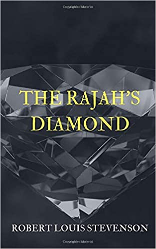

0
стр. з
0
сторінок

завантаження...

Р.Л. Стивенсон
Алмаз раджи
Повесть адаптировал Андрей Бессонов
Метод чтения Ильи Франка
Сontents
STORY OF THE BANDBOX
(Повесть о шляпной картонке)
UP to the age of sixteen (вплоть до возраста шестнадцати /лет/), at a private school (в частной школе) and afterwards at one of those great institutions (и затем — в одном из тех великих заведений) for which England is justly famous (которыми Англия по справедливости знаменита), Mr. Harry Hartley had received the ordinary education of a gentleman (мистер Гарри Хартли получил обыкновенное воспитание джентльмена). At that period (за это время), he manifested a remarkable distaste for study (он обнаружил необычайное отвращение к учению); and his only surviving parent being both weak and ignorant (и /так как/ его единственный оставшийся родитель был и слаб, и невежествен), he was permitted thenceforward (ему было позволено впредь) to spend his time in the attainment of petty and purely elegant accomplishments (тратить свое время на приобретение незначительных и чисто светских достоинств). Two years later (два года спустя), he was left an orphan and almost a beggar (он остался сиротой и почти нищим: «был оставлен…»; to leave — оставлять, покидать).
private [`praIvIt], school [skHl], great [greIt], institution [InstI`tjHS(q)n], famous [`feImqs], Harry [`hxrI], receive [rI`sJv], study [`stAdI], survive [sq`vaIv], permit [pq`mIt], pure [pjVq], orphan [`Lf(q)n]
UP to the age of sixteen, at a private school and afterwards at one of those great institutions for which England is justly famous, Mr. Harry Hartley had received the ordinary education of a gentleman. At that period, he manifested a remarkable distaste for study; and his only surviving parent being both weak and ignorant, he was permitted thenceforward to spend his time in the attainment of petty and purely elegant accomplishments. Two years later, he was left an orphan and almost a beggar.
For all active and industrious pursuits (для всех деятельных и энергичных занятий), Harry was unfitted alike by nature and training (Гарри был неприспособлен равно по природе и образованию). He could sing romantic ditties (он умел петь романтические песенки), and accompany himself with discretion on the piano (и аккомпанировать себе с ловкостью на фортепиано); he was a graceful although a timid cavalier (он был грациозным, хоть и робким наездником); he had a pronounced taste for chess (у него был отчетливо выраженный вкус к шахматам); and nature had sent him into the world with one of the most engaging exteriors (и природа послала его в мир с одной из самых привлекательных наружностей; to send — послать) that can well be fancied (которую можно вообразить). Blond and pink (белокурый и розовый = розовощекий), with dove's eyes (с глазами голубки = с невинным взором) and a gentle smile (и кроткой улыбкой), he had an air of agreeable tenderness and melancholy (он имел вид приятной нежности и задумчивости), and the most submissive and caressing manners (и крайне смирные и ласковые манеры). But when all is said (но когда все сказано = но при всем этом), he was not the man to lead armaments of war (он не был таким человеком, /который мог бы/ повести войска в бой), or direct the councils of a State (или управлять государством: «советами государства»).
industrious [In`dAstrIqs], pursuit [pq`sjHt], nature [`neICq], exterior [Ik`stIqrIq], melancholy [`melqnk(q)lI], council [`kaVns(q)l]
For all active and industrious pursuits, Harry was unfitted alike by nature and training. He could sing romantic ditties, and accompany himself with discretion on the piano; he was a graceful although a timid cavalier; he had a pronounced taste for chess; and nature had sent him into the world with one of the most engaging exteriors that can well be fancied. Blond and pink, with dove's eyes and a gentle smile, he had an air of agreeable tenderness and melancholy, and the most submissive and caressing manners. But when all is said, he was not the man to lead armaments of war, or direct the councils of a State.
A fortunate chance and some influence (счастливый случай и некоторая протекция: «влияние») obtained for Harry, at the time of his bereavement (раздобыли для Гарри во время его лишений), the position of private secretary (место личного секретаря) to Major-General Sir Thomas Vandeleur, C.B. (у генерал-майора сэра Томаса Венделера, кавалера Ордена Бани третьей степени). Sir Thomas was a man of sixty (сэр Томас был человек шестидесяти /лет/), loud-spoken, boisterous, and domineering (громогласный, шумливый и властный). For some reason (по какой-то причине), some service the nature of which had been often whispered and repeatedly denied (/за/ какую-то услугу, суть которой часто называлась шепотом и постоянно опровергалась; to whisper — шептать), the Rajah of Kashgar had presented this officer (раджа Кашгара наградил этого офицера) with the sixth known diamond of the world (шестым /по величине/ известным алмазом в мире).
fortunate [`fLC(q)nqt], obtain [qb`teIn], secretary [`sekrqt(q)rI], Thomas [`tOmqs], domineering [dOmI`nIqrIN], deny [dI`naI], rajah [`rRGq], Kashgar [`kxSgR], present (глагол) [prI`zent]
A fortunate chance and some influence obtained for Harry, at the time of his bereavement, the position of private secretary to Major-General Sir Thomas Vandeleur, C.B. Sir Thomas was a man of sixty, loud-spoken, boisterous, and domineering. For some reason, some service the nature of which had been often whispered and repeatedly denied, the Rajah of Kashgar had presented this officer with the sixth known diamond of the world.
The gift transformed General Vandeleur from a poor into a wealthy man (этот подарок превратил генерала Венделера из бедного в богатого человека), from an obscure and unpopular soldier into one of the lions of London society (из никому не известного и непопулярного вояки — в одного из львов лондонского света); the possessor of the Rajah's Diamond was welcome in the most exclusive circles (владелец Алмаза раджи был желанным /гостем/ в самых узких/высокопоставленных кругах); and he had found a lady (и он нашел женщину; to find — найти), young, beautiful, and well-born (молодую, красивую и из хорошей семьи: «хорошо-рожденную»), who was willing to call the diamond hers (которая пожелала назвать алмаз своим) even at the price of marriage with Sir Thomas Vandeleur (даже ценой брака с сэром Томасом Венделером). It was commonly said at the time (повсеместно говорилось в то время) that, as like draws to like, one jewel had attracted another (что, как подобное притягивается к подобному, одна драгоценность привлекла другую); certainly Lady Vandeleur was not only a gem of the finest water in her own person (несомненно, леди Венделер не только была самоцветом чистейшей воды сама по себе), but she showed herself to the world in a very costly setting (но она /также/ показывала себя миру в очень дорогой оправе); and she was considered by many respectable authorities (и она считалась многими уважаемыми знатоками), as one among the three or four best dressed women in England (одной из трех или четырех лучше всего одетых женщин в Англии).
gift [gIft], wealthy [`welTI], obscure [qb`skjVq], possessor [pq`zesq], exclusive [Iks`klHsIv], circle [sWkl], marriage [`mxrIG], gem [Gem], authorities [L`TOrqtIz]
The gift transformed General Vandeleur from a poor into a wealthy man, from an obscure and unpopular soldier into one of the lions of London society; the possessor of the Rajah's Diamond was welcome in the most exclusive circles; and he had found a lady, young, beautiful, and well-born, who was willing to call the diamond hers even at the price of marriage with Sir Thomas Vandeleur. It was commonly said at the time that, as like draws to like, one jewel had attracted another; certainly Lady Vandeleur was not only a gem of the finest water in her own person, but she showed herself to the world in a very costly setting; and she was considered by many respectable authorities, as one among the three or four best dressed women in England.
Harry's duty as secretary was not particularly onerous (обязанности Гарри как секретаря были не особенно обременительны); but he had a dislike for all prolonged work (но он питал отвращение к любой продолжительной работе); it gave him pain to ink his fingers (пачкать чернилами свои пальцы причиняло ему /душевную/ боль: «давало»; to give — давать); and the charms of Lady Vandeleur and her toilettes (и очарование леди Венделер и ее туалетов) drew him often from the library to the boudoir (часто влекло его из библиотеки в будуар; to draw — тянуть). He had the prettiest ways among women (он имел приятнейшее обхождение среди женщин = умел с ними обходиться), could talk fashions with enjoyment (мог обсуждать моды с наслаждением), and was never more happy than when criticising a shade of ribbon (и никогда не был счастливее, чем когда критиковал оттенок ленты), or running on an errand to the milliner's (или бежал с поручением к модистке). In short, Sir Thomas's correspondence fell into pitiful arrears (коротко говоря, корреспонденция сэра Томаса оказалась запущена: «пала в прискорбную задолженность/отставание»; to fall — падать), and my Lady had another lady's maid (а миледи приобрела новую горничную; to have — иметь).
particularly [pq`tIkjqlqlI], toilette [twR`let], library [`laIbr(q)rI], boudoir [`bHdwR], pretty [`prItI], fashion [`fxS(q)n], arrear [q`rIq]
Harry's duty as secretary was not particularly onerous; but he had a dislike for all prolonged work; it gave him pain to ink his fingers; and the charms of Lady Vandeleur and her toilettes drew him often from the library to the boudoir. He had the prettiest ways among women, could talk fashions with enjoyment, and was never more happy than when criticising a shade of ribbon, or running on an errand to the milliner's. In short, Sir Thomas's correspondence fell into pitiful arrears, and my Lady had another lady's maid.
At last the General, who was one of the least patient of military commanders (наконец генерал, который был одним из наименее терпеливых военачальников), arose from his place in a violent access of passion (вскочил со своего места в жестоком приступе гнева; to arise — встать), and indicated to his secretary that he had no further need for his services (и указал своему секретарю, что у него нет дальнейшей нужды в его услугах), with one of those explanatory gestures (одним из тех объяснительных жестов) which are most rarely employed between gentlemen (которые крайне редко используются между джентльменами). The door being unfortunately open (/так как/ дверь была, к сожалению, открыта), Mr. Hartley fell downstairs head foremost (мистер Хартли скатился с лестницы головой вперед; to fall — падать).
patient [`peIS(q)nt], violent [`vaIql(q)nt], access [`xkses], passion [`pxS(q)n], further [`fWDq], service [`sWvIs], explanatory [Iks`plxnqt(q)rI], gesture [`GesCq]
At last the General, who was one of the least patient of military commanders, arose from his place in a violent access of passion, and indicated to his secretary that he had no further need for his services, with one of those explanatory gestures which are most rarely employed between gentlemen. The door being unfortunately open, Mr. Hartley fell downstairs head foremost.
He arose somewhat hurt (он поднялся несколько ушибленный; to arise — встать; to hurt — вредить, поранить) and very deeply aggrieved (и очень глубоко обиженный). The life in the General's house precisely suited him (жизнь в генеральском доме идеально: «точно» подходила ему); he moved, on a more or less doubtful footing, in very genteel company (он вращался, на более-менее шатком основании, в очень утонченном кругу), he did little (он делал мало; to do — делать), he ate of the best (он ел самое лучшее; to eat — есть), and he had a lukewarm satisfaction in the presence of Lady Vandeleur (и он испытывал теплое удовлетворение в присутствии леди Венделер), which, in his own heart, he dubbed by a more emphatic name (которое, в своем сердце, он называл более сильным словом: «именем»). Immediately after he had been outraged by the military foot (немедленно после того как он подвергся насилию солдатской ноги), he hurried to the boudoir and recounted his sorrows (он поспешил в будуар и поведал о своих горестях).
hurt [hWt], aggrieved [q`grJvd], precisely [prI`saIslI], suit [sjHt], doubtful [`daVtf(q)l], eat [Jt], ate [et], lukewarm [lHk`wLm], emphatic [Im`fxtIk], hurry [`hArI]
He arose somewhat hurt and very deeply aggrieved. The life in the General's house precisely suited him; he moved, on a more or less doubtful footing, in very genteel company, he did little, he ate of the best, and he had a lukewarm satisfaction in the presence of Lady Vandeleur, which, in his own heart, he dubbed by a more emphatic name. Immediately after he had been outraged by the military foot, he hurried to the boudoir and recounted his sorrows.
"You know very well, my dear Harry," replied Lady Vandeleur (вы очень хорошо знаете, мой дорогой Гарри, — ответила леди Венделер), for she called him by name like a child or a domestic servant (ибо она звала его по имени, как ребенка или прислугу), "that you never by any chance do what the General tells you (что вы никогда ни при каких обстоятельствах не делаете, что вам говорит генерал). No more do I, you may say (как и я, скажете вы: «не более делаю я, вы можете сказать»). But that is different (но это другое /дело/). A woman can earn her pardon for a good year of disobedience (женщина может заслужить прощение за целый год неповиновения) by a single adroit submission (одним-единственным ловким подчинением); and, besides, no one is married to his private secretary (и вдобавок никто не женится на своем личном секретаре). I shall be sorry to lose you (мне будет жаль потерять вас); but since you cannot stay longer in a house where you have been insulted (но так как вы не можете оставаться дольше в доме, где вас оскорбили), I shall wish you good-bye (я пожелаю вам всего хорошего), and I promise you to make the General smart for his behaviour (и обещаю вам примерно наказать генерала за его поведение; smart — жгучая, сильная боль /от удара, раны и т. п./; горе, несчастье, печаль; страдание; to smart — испытывать жгучую боль; болеть; страдать, печалиться)."
reply [rI`plaI], earn [Wn], pardon [`pRd(q)n], adroit [q`drOIt], lose [lHz], promise [`prOmIs], behaviour [bI`heIvIq]
"You know very well, my dear Harry," replied Lady Vandeleur, for she called him by name like a child or a domestic servant, "that you never by any chance do what the General tells you. No more do I, you may say. But that is different. A woman can earn her pardon for a good year of disobedience by a single adroit submission; and, besides, no one is married to his private secretary. I shall be sorry to lose you; but since you cannot stay longer in a house where you have been insulted, I shall wish you good-bye, and I promise you to make the General smart for his behaviour."
Harry's countenance fell (лицо у Гарри вытянулось: «упало»); tears came into his eyes (слезы выступили у него на глазах: «пришли в его глаза»; to come — прийти), and he gazed on Lady Vandeleur with a tender reproach (и он посмотрел на леди Венделер с мягким укором). "My Lady," said he, "what is an insult (миледи, — сказал он, — что такое оскорбление)? I should think little indeed of any one (я был бы в самом деле невысокого мнения о любом: «думал бы мало») who could not forgive them by the score (кто не мог бы простить их все: «скопом, десятками»). But to leave one's friends (но покинуть друзей); to tear up the bonds of affection (разорвать узы привязанности) — " He was unable to continue (он был неспособен продолжать), for his emotion choked him (так как его чувства душили его), and he began to weep (и он принялся рыдать; to begin — начать). Lady Vandeleur looked at him with a curious expression (леди Венделер глядела на него с выражением любопытства /на лице/).
countenance [`kaVnt(q)nqns], reproach [rI`prqVC], continue [kqn`tInjH], curious [`kjVqrIqs]
Harry's countenance fell; tears came into his eyes, and he gazed on Lady Vandeleur with a tender reproach. "My Lady," said he, "what is an insult? I should think little indeed of any one who could not forgive them by the score. But to leave one's friends; to tear up the bonds of affection — " He was unable to continue, for his emotion choked him, and he began to weep. Lady Vandeleur looked at him with a curious expression.
"This little fool," she thought (этот дурачок, — подумала она; to think — думать), "imagines himself to be in love with me (воображает, что влюблен в меня). Why should he not become my servant instead of the General's (почему бы ему не стать моим слугой, вместо /того, чтобы быть слугой/ генерала)? He is good-natured, obliging, and understands dress (он добродушный, предупредительный и знает толк в платьях); and besides it will keep him out of mischief (и кроме того, это оградит его от бед). He is positively too pretty to be unattached (он точно слишком мил, чтобы быть одиноким: «непривязанным»)." That night she talked over the General (тем вечером она переговорила с генералом), who was already somewhat ashamed of his vivacity (который был уже немного смущен своей горячностью); and Harry was transferred to the feminine department (и Гарри был переведен на женскую половину), where his life was little short of heavenly (где его жизнь ненамного отличалась от райской; short of — не достигая; short — короткий).
imagine [I`mxGIn], mischief [`mIsCIf], vivacity [vI`vxsqtI], transfer [trxns`fW], feminine [`femInIn], heavenly [`hev(q)nlI]
"This little fool," she thought, "imagines himself to be in love with me. Why should he not become my servant instead of the General's? He is good-natured, obliging, and understands dress; and besides it will keep him out of mischief. He is positively too pretty to be unattached." That night she talked over the General, who was already somewhat ashamed of his vivacity; and Harry was transferred to the feminine department, where his life was little short of heavenly.
He was always dressed with uncommon nicety (он был всегда одет с необычайной щепетильностью), wore delicate flowers in his button-hole (носил нежные цветы в петлице; to wear — носить), and could entertain a visitor with tact and pleasantry (и мог развлечь гостью с тактом и веселостью). He took a pride in servility to a beautiful woman (он гордился рабской преданностью красивой женщине: «брал гордость»; to take — брать); received Lady Vandeleur's commands as so many marks of favour (принимал приказы леди Венделер как многочисленные знаки благосклонности); and was pleased to exhibit himself before other men (и с радостью выставлял себя напоказ другим мужчинам: «был рад…»), who derided and despised him (которые высмеивали и презирали его), in his character of male lady's maid and man milliner (в его роли мужчины-горничной и мужчины-модистки). Nor could he think enough of his existence from a moral point of view (он также не мог нарадоваться своему существованию с моральной точки зрения: «не мог думать достаточно о…»; nor — и не). Wickedness seemed to him an essentially male attribute (безнравственность казалась ему преимущественно мужской чертой), and to pass one's days with a delicate woman (и проводить свои дни с изящной женщиной), and principally occupied about trimmings (/будучи/ в основном занятым отделкой /платьев/), was to inhabit an enchanted isle among the storms of life (было /словно/ жить на зачарованном острове среди жизненных бурь).
delicate [`delIkqt], entertain [entq`teIn], favour [`feIvq], exhibit [Ig`zIbIt], character [`kxrqktq], attribute (сущ.) [`xtrIbjHt], isle [aIl]
He was always dressed with uncommon nicety, wore delicate flowers in his button-hole, and could entertain a visitor with tact and pleasantry. He took a pride in servility to a beautiful woman; received Lady Vandeleur's commands as so many marks of favour; and was pleased to exhibit himself before other men, who derided and despised him, in his character of male lady's maid and man milliner. Nor could he think enough of his existence from a moral point of view. Wickedness seemed to him an essentially male attribute, and to pass one's days with a delicate woman, and principally occupied about trimmings, was to inhabit an enchanted isle among the storms of life.
One fine morning (в одно прекрасное утро) he came into the drawing-room (он вошел в гостиную) and began to arrange some music on the top of the piano (и начал приводить в порядок какие-то ноты на крышке рояля). Lady Vandeleur, at the other end of the apartment (леди Венделер в другом = противоположном углу комнаты), was speaking somewhat eagerly with her brother, Charlie Pendragon (говорила несколько нетерпеливо со своим братом, Чарли Пендрагоном), an elderly young man (престарелым = стареющим молодым человеком), much broken with dissipation (сильно потрепанным разгульной жизнью; to break — портить, ломать;to dissipate — рассеивать, разгонять /облака, мрак, страх и т. п./; расточать, растрачивать /время, силы/; транжирить, проматывать /деньги/; кутить, развлекаться; вести распутный образ жизни), and very lame of one foot (и сильно хромающим на одну ногу). The private secretary, to whose entrance they paid no regard (личный секретарь, на чье появление они не обратили внимания; to pay regard — обратить внимание: «заплатить»), could not avoid overhearing a part of their conversation (не мог избежать того, чтобы подслушать часть их беседы).
whose [hHz], entrance [`entrqns], regard [rI`gRd], avoid [q`vOId]
One fine morning he came into the drawing-room and began to arrange some music on the top of the piano. Lady Vandeleur, at the other end of the apartment, was speaking somewhat eagerly with her brother, Charlie Pendragon, an elderly young man, much broken with dissipation, and very lame of one foot. The private secretary, to whose entrance they paid no regard, could not avoid overhearing a part of their conversation.
"To-day or never," said the lady (сегодня или никогда, — сказала леди). "Once and for all (раз и навсегда = окончательно), it shall be done to-day (это будет сделано сегодня)."
"To-day, if it must be," replied the brother, with a sigh (сегодня, раз это должно случиться: «быть», — ответил брат со вздохом). "But it is a false step (но это неверный шаг), a ruinous step, Clara (губительный шаг, Клара); and we shall live to repent it dismally (и мы когда-нибудь горько раскаемся в нем: «доживем, чтобы раскаяться в нем горько»)."
Lady Vandeleur looked her brother steadily and somewhat strangely in the face (леди Венделер посмотрела своему брату твердо и немного странно в лицо).
"You forget," she said (ты забываешь, — сказала она); "the man must die at last (он должен умереть в конце концов)."
"Upon my word, Clara," said Pendragon (честное слово, Клара, — сказал Пендрагон), "I believe you are the most heartless rascal in England (я думаю, ты — самая бессердечная негодяйка в Англии)."
reply [rI`plaI], sigh [saI], false [fLls], ruinous [`rHInqs], dismally [`dIzmqlI]
"To-day or never," said the lady. "Once and for all, it shall be done to-day."
"To-day, if it must be," replied the brother, with a sigh. "But it is a false step, a ruinous step, Clara; and we shall live to repent it dismally."
Lady Vandeleur looked her brother steadily and somewhat strangely in the face.
"You forget," she said; "the man must die at last."
"Upon my word, Clara," said Pendragon, "I believe you are the most heartless rascal in England."
"You men," she returned, "are so coarsely built (вы, мужчины, — ответила она, — так грубо сделаны: «построены»; to build — строить), that you can never appreciate a shade of meaning (вы никогда не умеете понять оттенок значения). You are yourselves rapacious, violent (вы сами ненасытны, жестоки), immodest, careless of distinction (бесстыдны, неразборчивы: «беспечны к разборчивости»); and yet the least thought for the future shocks you in a woman (и при этом малейшая мысль о будущем шокирует вас в женщине). I have no patience with such stuff (я терпеть не могу такое: «не имею терпения»). You would despise in a common banker the imbecility (вы бы презирали в заурядном клерке то тупоумие) that you expect to find in us (которое вы ожидаете найти в нас)."
"You are very likely right," replied her brother (ты, очень вероятно, права, — ответил ее брат); "you were always cleverer than I (ты всегда была умнее, чем я). And, anyway, you know my motto (и, в любом случае, ты знаешь мой девиз): The family before all (семья прежде всего)."
"Yes, Charlie," she returned, taking his hand in hers (да, Чарли, — ответила она, беря его руку в свою), "I know your motto better than you know it yourself (я знаю твой девиз лучше, чем ты сам его знаешь). 'And Clara before the family («а Клара — прежде семьи»)!' Is not that the second part of it (разве не это вторая часть его = девиза)? Indeed, you are the best of brothers (в самом деле, ты лучший из братьев), and I love you dearly (и я люблю тебя нежно)."
appreciate [q`prJSIeIt], rapacious [rq`peISqs], immodest [I`mOdIst], careless [`keqlqs], patience [`peIS(q)ns], despise [dI`spaIz], imbecility [Imbq`sIlqtI], expect [Ik`spekt]
"You men," she returned, "are so coarsely built, that you can never appreciate a shade of meaning. You are yourselves rapacious, violent, immodest, careless of distinction; and yet the least thought for the future shocks you in a woman. I have no patience with such stuff. You would despise in a common banker the imbecility that you expect to find in us."
"You are very likely right," replied her brother; "you were always cleverer than I. And, anyway, you know my motto: The family before all."
"Yes, Charlie," she returned, taking his hand in hers, "I know your motto better than you know it yourself. 'And Clara before the family!' Is not that the second part of it? Indeed, you are the best of brothers, and I love you dearly."
Mr. Pendragon got up (мистер Пендрагон встал; to get up — встать), looking a little confused by these family endearments (выглядя слегка смущенным этими семейными нежностями).
"I had better not be seen," said he (лучше бы меня не видели, — сказал он: «лучше бы я не был увиден»). "I understand my part to a miracle (я понимаю свою роль на диво /хорошо/), and I'll keep an eye on the Tame Cat (и я буду следить за этим ручным котиком: «буду держать глаз на…»)."
"Do," she replied (да, пожалуйста: «делай», — ответила она). "He is an abject creature (он — жалкое существо), and might ruin all (и может испортить все)."
She kissed the tips of her fingers to him daintily (она поцеловала кончики своих пальцев ему изящно = послала воздушный поцелуй); and the brother withdrew by the boudoir and the back stair (и брат удалился через будуар и черный ход: «по задней лестнице»; to withdraw — удалиться).
confused [kqn`fjHzd], endearment [In`dIqmqnt], miracle [`mIrqkl], abject [`xbGekt], creature [`krJCq], might [maIt], ruin [`rHIn], boudoir [`bHdwR]
Mr. Pendragon got up, looking a little confused by these family endearments.
"I had better not be seen," said he. "I understand my part to a miracle, and I'll keep an eye on the Tame Cat."
"Do," she replied. "He is an abject creature, and might ruin all."
She kissed the tips of her fingers to him daintily; and the brother withdrew by the boudoir and the back stair.
"Harry," said Lady Vandeleur, turning towards the secretary (Гарри, — сказала леди Венделер, повернувшись к секретарю) as soon as they were alone (как только они остались одни), "I have a commission for you this morning (у меня поручение для вас сегодня: «этим утром»). But you shall take a cab (но вы должны будете взять кеб); I cannot have my secretary freckled (я не хочу, чтобы мой секретарь покрылся веснушками: «я не могу принять своего секретаря веснушчатым»)." She spoke the last words with emphasis (она произнесла последние слова с выразительностью) and a look of half-motherly pride (и с видом полуматеринской гордости) that caused great contentment to poor Harry (что причинило великое удовольствие бедному Гарри); and he professed himself charmed to find an opportunity of serving her (и он заявил, что восхищен найти возможность услужить ей).
commission [kq`mIS(q)n], emphasis [`emfqsIs], cause [kLz], contentment [kqn`tentmqnt], profess [prq`fes], opportunity [Opq`tjHnqtI]
"Harry," said Lady Vandeleur, turning towards the secretary as soon as they were alone, "I have a commission for you this morning. But you shall take a cab; I cannot have my secretary freckled." She spoke the last words with emphasis and a look of half-motherly pride that caused great contentment to poor Harry; and he professed himself charmed to find an opportunity of serving her.
"It is another of our great secrets," she went on archly (это еще одна из наших великих тайн, — продолжила она игриво; to go on — продолжить), "and no one must know of it but my secretary and me (и никто не должен знать о ней, кроме моего секретаря и меня). Sir Thomas would make the saddest disturbance (сэр Томас был бы самым печальным = неприятным беспокойством: «сделал бы»); and if you only knew how weary I am of these scenes (и если бы вы только знали, как я устала от этих сцен)! Oh, Harry, Harry, can you explain to me (о, Гарри, Гарри, можете ли вы объяснить мне) what makes you men so violent and unjust (что делает вас, мужчин, такими жестокими и несправедливыми)? But, indeed, I know you cannot (но, по правде говоря, я знаю, что вы не можете /объяснить/); you are the only man in the world (вы — единственный мужчина на свете) who knows nothing of these shameful passions (который не знает ничего об этих постыдных страстях); you are so good, Harry, and so kind (вы такой хороший, Гарри, и такой добрый); you, at least, can be a woman's friend (вы, по крайней мере, можете быть другом женщине); and, do you know (и знаете /что/)? I think you make the others more ugly by comparison (я думаю, вы делаете других /еще/ более отталкивающими по сравнению /с вами/)."
"It is you," said Harry gallantly, "who are so kind to me (это вы, — сказал Гарри любезно, — так добры ко мне). You treat me like (вы обращаетесь со мной как) — "
"Like a mother," interposed Lady Vandeleur (как мать, — вставила леди Венделер); "I try to be a mother to you (я пытаюсь быть матерью вам). Or, at least," she corrected herself with a smile, "almost a mother (или, хотя бы, — поправилась она с улыбкой, — почти матерью). I am afraid I am too young (боюсь, я слишком молода) to be your mother really (чтобы быть вашей матерью на самом деле). Let us say a friend (скажем — другом) — a dear friend (дорогим другом)."
She paused long enough to let her words take effect in Harry's sentimental quarters (она помолчала достаточно долго, чтобы дать ее словам подействовать на сентиментальные сферы = чувства Гарри; to take effect — подействовать: «взять эффект»; quarters — жилище, жилье, помещение, квартира), but not long enough to allow him a reply (но недостаточно долго, чтобы позволить ему ответ/ить/).
secret [`sJkrqt], archly [`RClI], disturbance [dIs`tWb(q)ns], weary [`wIqrI], scene [sJn], explain [Ik`spleIn], correct [kq`rekt], quarter [`kwLtq], allow [q`laV]
"It is another of our great secrets," she went on archly, "and no one must know of it but my secretary and me. Sir Thomas would make the saddest disturbance; and if you only knew how weary I am of these scenes! Oh, Harry, Harry, can you explain to me what makes you men so violent and unjust? But, indeed, I know you cannot; you are the only man in the world who knows nothing of these shameful passions; you are so good, Harry, and so kind; you, at least, can be a woman's friend; and, do you know? I think you make the others more ugly by comparison."
"It is you," said Harry gallantly, "who are so kind to me. You treat me like — "
"Like a mother," interposed Lady Vandeleur; "I try to be a mother to you. Or, at least," she corrected herself with a smile, "almost a mother. I am afraid I am too young to be your mother really. Let us say a friend — a dear friend."
She paused long enough to let her words take effect in Harry's sentimental quarters, but not long enough to allow him a reply.
"But all this is beside our purpose," she resumed (но все это не относится к нашему делу: «помимо нашего замысла»). "You will find a bandbox in the left-hand side of the oak wardrobe (вы найдете шляпную картонку в левой части дубового гардероба); it is underneath the pink slip (она под розовой нижней юбкой) that I wore on Wednesday with my Mechlin (которую я носила = надевала в среду с моим кружевным платьем[1]; to wear — носить одежду). You will take it immediately to this address," and she gave him a paper (вы отвезете ее немедленно по этому адресу, — она дала ему бумажку), "but do not, on any account, let it out of your hands (но ни при каких обстоятельствах не выпускайте ее из рук) until you have received a receipt written by myself (пока вы не получите расписку, написанную мной самой). Do you understand (вы поняли)? Answer, if you please — answer (ответьте, пожалуйста, ответьте = повторите ваши инструкции)! This is extremely important (это крайне важно), and I must ask you to pay some attention (и я должна просить вас обратить внимание = внимательно исполнить это поручение)."
purpose [`pWpqs], resume [rI`zjHm], oak [qVk], wardrobe [`wLdrqVb], Mechlin [`meklIn], immediately [I`mJdIqtlI], address [q`dres], receive [rI`sJv], receipt [rI`sJt], answer [`Rnsq], important [Im`pLt(q)nt]
"But all this is beside our purpose," she resumed. "You will find a bandbox in the left-hand side of the oak wardrobe; it is underneath the pink slip that I wore on Wednesday with my Mechlin. You will take it immediately to this address," and she gave him a paper, "but do not, on any account, let it out of your hands until you have received a receipt written by myself. Do you understand? Answer, if you please — answer! This is extremely important, and I must ask you to pay some attention."
Harry pacified her by repeating her instructions perfectly (он успокоил ее, повторив ее инструкции в совершенстве); and she was just going to tell him more (и она как раз собиралась сказать ему больше = еще кое-что) when General Vandeleur flung into the apartment, scarlet with anger (когда генерал Венделер ворвался в комнату, багровый от ярости; to fling — бросить/ся/), and holding a long and elaborate milliner's bill in his hand (и держащий длинный и подробный счет от модистки в руке).
"Will you look at this, madam?" cried he (хотите посмотреть на это = взгляните на это, мадам! — вскричал он). "Will you have the goodness to look at this document (окажите любезность взглянуть на этот документ: «будет ли у вас любезность…»)? I know well enough you married me for my money (я прекрасно знаю, что вы вышли за меня из-за моих денег), and I hope I can make as great allowances as any other man in the service (и я надеюсь, что могу давать вам такое же большое содержание, как любой другой на службе = в армии); but, as sure as God made me (но так же точно, как то, что Бог сотворил меня), I mean to put a period to this disreputable prodigality (я намереваюсь положить конец этой постыдной расточительности; prodigal — расточительный)."
pacify [`pxsIfaI], anger [`xNgq], document [`dOkjqmqnt], allowance [q`laVqns], period [`pIqrIqd], disreputable [dIs`repjqtqbl], prodigality [prOdI`gxlItI]
Harry pacified her by repeating her instructions perfectly; and she was just going to tell him more when General Vandeleur flung into the apartment, scarlet with anger, and holding a long and elaborate milliner's bill in his hand.
"Will you look at this, madam?" cried he. "Will you have the goodness to look at this document? I know well enough you married me for my money, and I hope I can make as great allowances as any other man in the service; but, as sure as God made me, I mean to put a period to this disreputable prodigality."
"Mr. Hartley," said Lady Vandeleur, "I think you understand what you have to do (мистер Хартли, — сказала леди Венделер, — я думаю, вы понимаете, что вы должны сделать). May I ask you to see to it at once (могу я попросить вас приняться за дело немедленно: «присмотреть за этим»; at once — сразу же)?"
"Stop," said the General, addressing Harry (стойте, — сказал генерал, обращаясь к Гарри), "one word before you go (одно слово прежде чем вы уйдете)." And then, turning again to Lady Vandeleur (и затем, повернувшись снова к леди Венделер), "What is this precious fellow's errand (каково поручение этому благородному юноше)?" he demanded (спросил он). "I trust him no further than I do yourself (я доверяю ему не больше, чем вам самой), let me tell you (уверяю вас: «позвольте мне сказать вам»). If he had as much as the rudiments of honesty (если бы у него были хотя бы зачатки порядочности), he would scorn to stay in this house (он бы счел невозможным оставаться в этом доме); and what he does for his wages (а что он делает за свое жалование) is a mystery to all the world (— тайна для всего мира). What is his errand, madam (в чем его поручение, мадам)? and why are you hurrying him away (и почему вы торопите его «прочь»)?"
once [wAns], precious [`preSqs], errand [`erqnd], rudiment [`rHdImqnt], honesty [`OnqstI]
"Mr. Hartley," said Lady Vandeleur, "I think you understand what you have to do. May I ask you to see to it at once?"
"Stop," said the General, addressing Harry, "one word before you go." And then, turning again to Lady Vandeleur, "What is this precious fellow's errand?" he demanded. "I trust him no further than I do yourself, let me tell you. If he had as much as the rudiments of honesty, he would scorn to stay in this house; and what he does for his wages is a mystery to all the world. What is his errand, madam? and why are you hurrying him away?"
"I supposed you had something to say to me in private," replied the lady (я полагала, вы имели сказать мне что-то наедине, — ответила леди).
"You spoke about an errand," insisted the General (вы говорили о каком-то поручении, — настаивал генерал). "Do not attempt to deceive me in my present state of temper (не пытайтесь провести меня в моем теперешнем состоянии духа). You certainly spoke about an errand (вы точно говорили о каком-то поручении)."
"If you insist on making your servants privy to our humiliating dissensions," replied Lady Vandeleur (если вы настаиваете на том, чтобы делать своих слуг участниками наших унизительных раздоров, — ответила леди Венделер), "perhaps I had better ask Mr. Hartley to sit down (может, я попрошу мистера Хартли присесть). No?" she continued (нет? — продолжала она); "then you may go, Mr. Hartley (тогда вы можете идти, мистер Хартли). I trust you may remember all that you have heard in this room (я полагаю, вы можете запомнить все, что слышали в этой комнате); it may be useful to you (это может быть полезно для вас)."
insist [In`sIst], deceive [dI`sJv], present (прилагательное) [`prez(q)nt], privy [`prIvI], perhaps [pq`hxps], hear [hIq], heard [hWd], useful [`jHsf(q)l]
"I supposed you had something to say to me in private," replied the lady.
"You spoke about an errand," insisted the General. "Do not attempt to deceive me in my present state of temper. You certainly spoke about an errand."
"If you insist on making your servants privy to our humiliating dissensions," replied Lady Vandeleur, "perhaps I had better ask Mr. Hartley to sit down. No?" she continued; "then you may go, Mr. Hartley. I trust you may remember all that you have heard in this room; it may be useful to you."
Harry at once made his escape from the drawing-room (Гарри сразу же сбежал: «сделал свой побег» из гостиной); and as he ran upstairs (и пока он бежал вверх по лестнице; to run — бежать) he could hear the General's voice upraised in declamation (он мог слышать голос генерала, повышенный в речи = громкий голос, произносящий речь), and the thin tones of Lady Vandeleur (и тихие звуки /голоса/ леди Венделер) planting icy repartees at every opening (вставляющей ледяные находчивые ответы каждый раз, когда она открывала рот: «при каждом открытии»). How cordially he admired the wife (как пылко он восхищался женой)! How skilfully she could evade an awkward question (как ловко могла = умела она уйти от неудобного вопроса)! with what secure effrontery she repeated her instructions under the very guns of the enemy (с каким уверенным нахальством она повторяла свои инструкции прямо под пушками врага)! and on the other hand (а с другой стороны: «на другой руке»), how he detested the husband (как он ненавидел мужа)!
escape [Is`keIp], drawing-room [`drLIN rHm], upstairs [Ap`steqz], repartee [repR`tJ], admire [qd`maIq], awkward [`Lkwqd], secure [sI`kjuq], detest [dI`test]
Harry at once made his escape from the drawing-room; and as he ran upstairs he could hear the General's voice upraised in declamation, and the thin tones of Lady Vandeleur planting icy repartees at every opening. How cordially he admired the wife! How skilfully she could evade an awkward question! with what secure effrontery she repeated her instructions under the very guns of the enemy! and on the other hand, how he detested the husband!
There had been nothing unfamiliar in the morning's events (не было ничего непривычного в событиях этого утра), for he was continually in the habit (ибо он все время был в привычке = ему было привычно) of serving Lady Vandeleur on secret missions (служить леди Венделер в тайных заданиях), principally connected with millinery (главным образом, связанных с модисткой). There was a skeleton in the house (был один скелет в доме = один секрет), as he well knew (как он прекрасно знал). The bottomless extravagance and the unknown liabilities of the wife had long since swallowed her own fortune (бесконечная: «бездонная» расточительность и тайные долги жены давно уже поглотили ее собственное состояние), and threatened day by day to engulf that of the husband (и грозили со дня на день поглотить состояние мужа).
event [I`vent], continually [kqn`tInjVqlI], secret [`sJkrqt], extravagance [Iks`trxvqgqns], liability [laIq`bIlqtI], swallow [`swOlqV], threaten [`Tret(q)n]
There had been nothing unfamiliar in the morning's events, for he was continually in the habit of serving Lady Vandeleur on secret missions, principally connected with millinery. There was a skeleton in the house, as he well knew. The bottomless extravagance and the unknown liabilities of the wife had long since swallowed her own fortune, and threatened day by day to engulf that of the husband.
Once or twice in every year exposure and ruin seemed imminent (однажды или дважды каждый год разоблачение и разорение казались неизбежными), and Harry kept trotting round to all sorts of furnishers' shops (и Гарри бегал по всяким лавкам поставщиков: «все время бегал»; to keep — держать; to keep doing — все время что-то делать), telling small fibs (рассказывая маленькие обманы = привирая), and paying small advances on the gross amount (и уплачивая мелкие авансы в счет большой суммы = уплачивая по мелочам), until another term was tided over (пока очередная дата уплаты не оказывалась пережитой), and the lady and her faithful secretary breathed again (и госпожа и ее верный секретарь снова вздыхали «снова» с облегчением). For Harry, in a double capacity, was heart and soul upon that side of the war (ибо Гарри в двойном объеме = вдвойне был сердцем и душой на этой стороне войны = на стороне своей хозяйки): not only did he adore Lady Vandeleur and fear and dislike her husband (он не только обожал леди Венделер и страшился и ненавидел ее мужа), but he naturally sympathised with the love of finery (но он искренне сочувствовал /ее/ любви к нарядам), and his own single extravagance was at the tailor's (и единственная его собственная расточительность была у портного = только на одежду он тратил много денег).
exposure [Iks`pqVZq], ruin [`rHIn], imminent [`ImInqnt], advance [qd`vRns], breathe [brJD], sympathise [`sImpqTaIz]
Once or twice in every year exposure and ruin seemed imminent, and Harry kept trotting round to all sorts of furnishers' shops, telling small fibs, and paying small advances on the gross amount, until another term was tided over, and the lady and her faithful secretary breathed again. For Harry, in a double capacity, was heart and soul upon that side of the war: not only did he adore Lady Vandeleur and fear and dislike her husband, but he naturally sympathised with the love of finery, and his own single extravagance was at the tailor's.
He found the bandbox where it had been described (он нашел шляпную картонку там, где было описано = где ему сказали), arranged his toilette with care (заботливо привел в порядок свой туалет: «с заботой»), and left the house (и вышел из дома; to leave — оставлять, покидать). The sun shone brightly (солнце светило ярко; to shine — светить); the distance he had to travel was considerable (расстояние, которое ему надо было преодолеть, было немаленьким; to have to — быть должным, вынужденным), and he remembered with dismay (и он вспомнил с тревогой) that the General's sudden irruption had prevented Lady Vandeleur from giving him money for a cab (что внезапное вторжение генерала помешало леди Венделер дать ему денег на кеб). On this sultry day there was every chance that his complexion would suffer severely (в этот знойный день был каждый шанс = был велик шанс, что кожа на его лице чрезвычайно пострадает); and to walk through so much of London with a bandbox on his arm (а идти через такую большую часть Лондона с шляпной картонкой в руке) was a humiliation almost insupportable to a youth of his character (было унижением, почти невыносимым для юноши его склада). He paused, and took counsel with himself (он приостановился и посовещался сам с собой = задумался). The Vandeleurs lived in Eaton Place (Венделеры жили на Итон-плейс); his destination was near Notting Hill (пункт назначения был близ Ноттинг-хилла); plainly, he might cross the Park (очевидно, он мог пересечь парк) by keeping well in the open and avoiding populous alleys (держась открытых пространств и избегая людных аллей); and he thanked his stars when he reflected (и он поблагодарил свои звезды = судьбу, когда подумал) that it was still comparatively early in the day (что сейчас еще сравнительно рано).
care [keq], shone [SOn], prevent [prI`vent], complexion [kqm`plekS(q)n], severely [sI`vIqlI], humiliation [hjHmIlI`eIS(q)n], insupportable [Insq`pLtqbl], youth [jHT], pause [pLz], counsel [`kaVns(q)l], populous [`pOpjqlqs], comparatively [kqm`pxrqtIvlI]
He found the bandbox where it had been described, arranged his toilette with care, and left the house. The sun shone brightly; the distance he had to travel was considerable, and he remembered with dismay that the General's sudden irruption had prevented Lady Vandeleur from giving him money for a cab. On this sultry day there was every chance that his complexion would suffer severely; and to walk through so much of London with a bandbox on his arm was a humiliation almost insupportable to a youth of his character. He paused, and took counsel with himself. The Vandeleurs lived in Eaton Place; his destination was near Notting Hill; plainly, he might cross the Park by keeping well in the open and avoiding populous alleys; and he thanked his stars when he reflected that it was still comparatively early in the day.
Anxious to be rid of his incubus (страстно желающий отделаться от своего бремени /то есть от генерала/; to be rid of smth. — быть избавленным от чего-либо; incubus — демон, злой дух, злой гений; груз забот, гнет, бремя /то, что давит, создает гнетущую атмосферу/), he walked somewhat faster than his ordinary (он шел несколько быстрее обычного: «чем свое обычное»), and he was already some way through Kensington Gardens (и он уже прошел часть Кенсингтонского парка: «он уже был часть пути сквозь Кенсингтонские сады») when, in a solitary spot among trees (когда в уединенном уголке среди деревьев), he found himself confronted by the General (он встретился лицом к лицу с генералом: «он обнаружил себя встреченным генералом»).
"I beg your pardon, Sir Thomas," observed Harry (прошу прощения, сэр Томас, — сказал Гарри), politely falling on one side (вежливо отступив в сторону); for the other stood directly in his path (ибо тот стоял прямо у него на пути; to stand — стоять).
"Where are you going, sir?" asked the General (куда вы идете, сэр? — спросил генерал).
"I am taking a little walk among the trees," replied the lad (я прогуливаюсь среди деревьев, — ответил юноша: «беру небольшую прогулку»).
anxious [`xNkSqs], incubus [`INkjqbqs], solitary [`sOlIt(q)rI], observe [qb`zWv], polite [pq`laIt], directly [d(a)I`rektlI], path [pRT]
Anxious to be rid of his incubus, he walked somewhat faster than his ordinary, and he was already some way through Kensington Gardens when, in a solitary spot among trees, he found himself confronted by the General.
"I beg your pardon, Sir Thomas," observed Harry, politely falling on one side; for the other stood directly in his path.
"Where are you going, sir?" asked the General.
"I am taking a little walk among the trees," replied the lad.
The General struck the bandbox with his cane (генерал стукнул по шляпной картонке тростью; to strike — ударить).
"With that thing?" he cried (с этой штукой? — воскликнул он); "you lie, sir (вы лжете, сэр), and you know you lie (и вы знаете, что лжете)!"
"Indeed, Sir Thomas," returned Harry (право, сэр Томас, — ответил Гарри), "I am not accustomed to be questioned in so high a key (я не привык, чтобы меня допрашивали в таком повышенном тоне; accustomed — привыкший; to question — расспрашивать; key — ключ)."
"You do not understand your position," said the General (вы не понимаете своего положения = забываетесь, — сказал генерал). "You are my servant (вы мой слуга), and a servant of whom I have conceived the most serious suspicions (— и слуга, относительно которого я питаю самые серьезные подозрения; to conceive — испытать, ощутить, почувствовать). How do I know but that your box is full of teaspoons (как = откуда я знаю, что в ваша коробка не полна /серебряных/ чайных ложек; but — зд.: что не)?"
"It contains a silk hat belonging to a friend," said Harry (она содержит цилиндр, принадлежащий одному /моему/ приятелю, — сказал Гарри; silk hat — цилиндр: «шелковая шляпа»).
"Very well," replied General Vandeleur (очень хорошо, — ответил генерал Венделер). "Then I want to see your friend's silk hat (тогда я желаю увидеть цилиндр вашего приятеля). I have," he added grimly, "a singular curiosity for hats (я питаю, — добавил он зловеще, — чрезвычайный интерес к шляпам); and I believe you know me to be somewhat positive (и я полагаю, что вы знаете, что я несколько принудителен/положителен = не охотник до шуток)."
"I beg your pardon, Sir Thomas, I am exceedingly grieved," Harry apologised (прошу прощения, сэр Томас, я чрезвычайно опечален = мне очень жаль, — извинился Гарри); "but indeed this is a private affair (но, в самом деле, это — личное дело)."
accustomed [q`kAstqmd], questioned [`kwesCqnd], high [haI], key [kJ], servant [`sWvqnt], conceive [kqn`sJv], serious [`sIqrIqs], suspicion [sqs`pIS(q)n], singular [`sINgjqlq], curiosity [kjVqrI`OsqtI], exceedingly [Ik`sJdINlI], grieve [grJv]
The General struck the bandbox with his cane.
“With that thing?” he cried; “you lie, sir, and you know you lie!”
“Indeed, Sir Thomas,” returned Harry, “I am not accustomed to be questioned in so high a key.”
“You do not understand your position,” said the General. “You are my servant, and a servant of whom I have conceived the most serious suspicions. How do I know but that your box is full of teaspoons?”
“It contains a silk hat belonging to a friend,” said Harry.
“Very well,” replied General Vandeleur. “Then I want to see your friend’s silk hat. I have,” he added grimly, “a singular curiosity for hats; and I believe you know me to be somewhat positive.”
“I beg your pardon, Sir Thomas, I am exceedingly grieved,” Harry apologised; “but indeed this is a private affair.”
The General caught him roughly by the shoulder with one hand (генерал схватил его грубо за плечо одной рукой; to catch — схватить, поймать), while he raised his cane in the most menacing manner with the other (и поднял трость самым грозным образом другой /рукой/). Harry gave himself up for lost (Гарри решил, что пропал; to give … up for lost — поставить крест, считать погибшим); but at the same moment Heaven vouchsafed him an unexpected defender in the person of Charlie Pendragon (но в тот же момент небо соблаговолило послать ему нежданного защитника в лице Чарли Пендрагона), who now strode forward from behind the trees (который вышел из-за деревьев; to stride forward — шагнуть вперед).
«Come, come, General, hold your hand,» said he (стойте, стойте, генерал, придержите свою руку, — сказал он; come, come — ну-ну /увещевание/), «this is neither courteous nor manly (это ни учтиво, ни мужественно).»
caught [kLt], rough [rAf], shoulder [`SqVldq], menace [`menIs], vouchsafe [vaVC`seIf], neither [`nJDq] или [`naIDq], courteous [`kWtIqs]
The General caught him roughly by the shoulder with one hand, while he raised his cane in the most menacing manner with the other. Harry gave himself up for lost; but at the same moment Heaven vouchsafed him an unexpected defender in the person of Charlie Pendragon, who now strode forward from behind the trees.
"Come, come, General, hold your hand," said he, "this is neither courteous nor manly."
"Aha!" cried the General, wheeling round upon his new antagonist, "Mr. Pendragon (ага! — вскричал генерал, развернувшись /лицом/ к своему новому противнику, — мистер Пендрагон)! And do you suppose, Mr. Pendragon (и вы думаете, мистер Пендрагон), that because I have had the misfortune to marry your sister (что из-за того, что я имел несчастье жениться на вашей сестре), I shall suffer myself to be dogged and thwarted (что я позволю /себя/ преследовать и мешать мне; thwart — косой, поперечный; to thwart — мешать; расстраивать, разрушать /планы и т. п./; перечить, противоречить) by a discredited and bankrupt libertine like you (такому потерявшему всякое доверие и разоренному развратнику, как вы)? My acquaintance with Lady Vandeleur, sir (мое знакомство с леди Венделер, сэр), has taken away all my appetite for the other members of her family (отобрало = отбило у меня всякий аппетит к остальным членам ее семьи)."
antagonist [xn`txg(q)nIst], misfortune [mIs`fLCHn], thwart [TwLt], bankrupt [`bxNkrApt], acquaintance [q`kweIntqns], appetite [`xpItaIt]
"Aha!" cried the General, wheeling round upon his new antagonist, "Mr. Pendragon! And do you suppose, Mr. Pendragon, that because I have had the misfortune to marry your sister, I shall suffer myself to be dogged and thwarted by a discredited and bankrupt libertine like you? My acquaintance with Lady Vandeleur, sir, has taken away all my appetite for the other members of her family."
"And do you fancy, General Vandeleur," retorted Charlie (а вы не воображаете ли, генерал Венделер, — парировал Чарли), "that because my sister has had the misfortune to marry you (что потому, что моя сестра имела несчастье выйти за вас замуж), she there and then forfeited her rights and privileges as a lady (она тем самым: «там и тогда» утратила свои права и привилегии дамы /из общества/)? I own, sir, that by that action (я допускаю, что этим поступком = выйдя за вас) she did as much as anybody could to derogate from her position (она уронила свое достоинство: «сделала столько, сколько можно, чтобы…»); but to me she is still a Pendragon (но для меня она все еще Пендрагон). I make it my business to protect her from ungentlemanly outrage (я считаю своим делом защищать ее от подлых оскорблений), and if you were ten times her husband (и, будь вы десять раз ее мужем) I would not permit her liberty to be restrained (я не позволю, чтобы ее свобода была ограничена), nor her private messengers to be violently arrested (или чтобы ее личные курьеры были задерживаемы силой)."
forfeit [`fLfIt], privilege [`prIv(q)lIG], business [`bIznIs], protect [prq`tekt], arrest [q`rest]
"And do you fancy, General Vandeleur," retorted Charlie, "that because my sister has had the misfortune to marry you, she there and then forfeited her rights and privileges as a lady? I own, sir, that by that action she did as much as anybody could to derogate from her position; but to me she is still a Pendragon. I make it my business to protect her from ungentlemanly outrage, and if you were ten times her husband I would not permit her liberty to be restrained, nor her private messengers to be violently arrested."
"How is that, Mr. Hartley?" interrogated the General (как же так, мистер Хартли? — осведомился генерал). "Mr. Pendragon is of my opinion, it appears (мистер Пендрагон придерживается того же мнения, что и я, кажется: «он моего мнения»). He too suspects that Lady Vandeleur has something to do with your friend's silk hat (он тоже подозревает, что леди Венделер имеет какое-то отношение к цилиндру вашего приятеля; to have something to do with smth. — иметь какое-то отношение к /чему-либо/)."
Charlie saw that he had committed an unpardonable blunder (Чарли увидел, что совершил непростительный промах; to see — видеть), which he hastened to repair (который он поспешил загладить: «починить»).
"How, sir?" he cried (что, сэр? — вскричал он); "I suspect, do you say («я подозреваю», говорите вы)? I suspect nothing (я ничего не подозреваю). Only where I find strength abused (только когда я нахожу силу используемой не во благо; to abuse — злоупотреблять) and a man brutalising his inferiors (и человека, жестоко обходящегося со своими подчиненными), I take the liberty to interfere (я беру на себя смелость: «право» вмешаться)."
As he said these words he made a sign to Harry (пока он говорил эти слова = говоря это, он подал Гарри знак), which the latter was too dull or too much troubled to understand (который тот не понял по глупости или от волнения: «который тот был слишком бестолков или слишком встревожен, чтобы понять»).
interrogate [In`terqgeIt], suspect (глагол) [sq`spekt], commit [kq`mIt], unpardonable [An`pRd(q)nqbl], hasten [`heIs(q)n], repair [rI`peq], abuse (глагол) [q`bjHz], brutalise [`brHt(q)laIz], inferior [In`fIqrIq], interfere ["Intq`fIq], sign [saIn]
"How is that, Mr. Hartley?" interrogated the General. "Mr. Pendragon is of my opinion, it appears. He too suspects that Lady Vandeleur has something to do with your friend's silk hat."
Charlie saw that he had committed an unpardonable blunder, which he hastened to repair.
"How, sir?" he cried; "I suspect, do you say? I suspect nothing. Only where I find strength abused and a man brutalising his inferiors, I take the liberty to interfere."
As he said these words he made a sign to Harry, which the latter was too dull or too much troubled to understand.
"In what way am I to construe your attitude, sir?" demanded Vandeleur (каким образом я должен истолковать ваше поведение, сэр? — осведомился Венделер).
"Why, sir, as you please," returned Pendragon (да как вам будет угодно, сэр, — ответил Пендрагон).
The General once more raised his cane (генерал снова поднял свою трость), and made a cut for Charlie's head (направил выпад в голову Чарли); but the latter, lame foot and all (но тот, /хоть/ и с хромой ногой и вообще), evaded the blow with his umbrella (отразил удар зонтиком), ran in, and immediately closed with his formidable adversary (бросился в бой и немедленно схватился со своим внушительным противником; to run in — заходить на цель; to close with — вступить в бой).
construe [kqn`strH], attitude [`xtItjHd], formidable [`fLmIdqbl], adversary [`xdvqs(q)rI]
"In what way am I to construe your attitude, sir?" demanded Vandeleur.
"Why, sir, as you please," returned Pendragon.
The General once more raised his cane, and made a cut for Charlie's head; but the latter, lame foot and all, evaded the blow with his umbrella, ran in, and immediately closed with his formidable adversary.
"Run, Harry, run!" he cried; "run, you dolt (беги, Гарри, беги! — крикнул он, — беги, ты, олух)!" Harry stood petrified for a moment (Гарри постоял, оцепенев, секунду; to petrify — обращать в камень), watching the two men sway together in this fierce embrace (глядя, как двое мужчин раскачиваются в этом яростном объятии); then he turned and took to his heels (затем он повернулся и пустился наутек: «взялся за каблуки/пятки»; to take — взять/ся/). When he cast a glance over his shoulder (когда он бросил взгляд через плечо; to cast — бросать) he saw the General prostrate under Charlie's knee (он увидел, что генерал распростерся под коленом Чарли), but still making desperate efforts to reverse the situation (но все еще делал отчаянные усилия, чтобы повернуть ситуацию); and the Gardens seemed to have filled with people (а парк, кажется, наполнился людьми), who were running from all directions towards the scene of fight (которые бежали со всех концов к месту драки). This spectacle lent the secretary wings (это зрелище = вид этого дал секретарю крылья; to lend — одолжить /дать/); and he did not relax his pace (и он не ослаблял = не замедлял своей скорости) until he had gained the Bayswater road (пока не добрался до Бейзуотер-роуд), and plunged at random into an unfrequented by-street (и нырнул наугад в безлюдный переулок; to frequent — посещать).
petrify [`petrIfaI], fierce [`fIqs], embrace [Im`breIs], desperate [`desp(q)rqt], effort [`efqt], reverse [rI`vWs], plunge [plAnG], unfrequented [`AnfrI`kwentId]
"Run, Harry, run!" he cried; "run, you dolt!" Harry stood petrified for a moment, watching the two men sway together in this fierce embrace; then he turned and took to his heels. When he cast a glance over his shoulder he saw the General prostrate under Charlie's knee, but still making desperate efforts to reverse the situation; and the Gardens seemed to have filled with people, who were running from all directions towards the scene of fight. This spectacle lent the secretary wings; and he did not relax his pace until he had gained the Bayswater road, and plunged at random into an unfrequented by-street.
To see two gentlemen of his acquaintance (видеть двух знакомых ему джентльменов: «его знакомства») thus brutally mauling each other (столь жестоко колотящих друг друга) was deeply shocking to Harry (было глубоко шокирующим для Гарри). He desired to forget the sight (он желал забыть это зрелище); he desired, above all (он желал, прежде всего: «выше всего/над всем»), to put as great a distance as possible between himself and General Vandeleur (положить как можно бóльшее расстояние между собой и генералом Венделером); and in his eagerness for this he forgot everything about his destination (и в своем стремлении к этому он позабыл все о своей цели = куда направляется), and hurried before him headlong and trembling (и несся сломя голову и дрожа; headlong — головой вперед /о падении вниз, нырянии/; стремительно, безрассудно, неосторожно; неуправляемо; очертя голову). When he remembered that Lady Vandeleur was the wife of one and the sister of the other of these gladiators (когда он вспомнил, что леди Венделер — жена одного и сестра другого из этих забияк), his heart was touched with sympathy (его сердце было тронуто состраданием) for a woman so distressingly misplaced in life (к женщине, которой так не повезло: «столь прискорбно поставленной не на место» в жизни). Even his own situation in the General's household (даже его собственное положение в доме генерала) looked hardly so pleasing as usual (едва ли выглядело так же приятно, как обычно) in the light of these violent transactions (в свете этих жестоких: «насильственных» дел).
maul [mLl], desire [dI`zaIq], sight [saIt], gladiator [`glxdIeItq], transaction [trxn`zxkS(q)n]
To see two gentlemen of his acquaintance thus brutally mauling each other was deeply shocking to Harry. He desired to forget the sight; he desired, above all, to put as great a distance as possible between himself and General Vandeleur; and in his eagerness for this he forgot everything about his destination, and hurried before him headlong and trembling. When he remembered that Lady Vandeleur was the wife of one and the sister of the other of these gladiators, his heart was touched with sympathy for a woman so distressingly misplaced in life. Even his own situation in the General's household looked hardly so pleasing as usual in the light of these violent transactions.
He had walked some little distance (он прошел некоторое расстояние), busied with these meditations (занятый этими размышлениями), before a slight collision with another passenger reminded him of the bandbox on his arm (пока легкое столкновение с другим прохожим не напомнило ему о шляпной картонке у него на руке).
"Heavens!" cried he, "where was my head (силы небесные! — вскричал он, — где была моя голова = о чем я думал)? and whither have I wandered (и куда я зашел)?"
Thereupon he consulted the envelope which Lady Vandeleur had given him (после чего он сверился с конвертом, который леди Венделер дала ему). The address was there (на нем был адрес: «там»), but without a name (но без имени). Harry was simply directed to ask for "the gentleman who expected a parcel from Lady Vandeleur (Гарри было просто указано спросить джентльмена, который ожидает пакет от леди Венделер)," and if he were not at home (а если его не будет дома) to await his return (— подождать его возвращения). The gentleman, added the note, should present a receipt (этот джентльмен, добавляла записка, должен представить расписку) in the handwriting of the lady herself (написанную рукой самой леди).
busy [`bIzI], collision [kq`lIZ(q)n], passenger [`pxsInGq], whither [`wIDq], wander [`wOndq], envelope [`envqlqVp], parcel [`pRs(q)l], present (глагол) [prI`zent]
He had walked some little distance, busied with these meditations, before a slight collision with another passenger reminded him of the bandbox on his arm.
"Heavens!" cried he, "where was my head? and whither have I wandered?"
Thereupon he consulted the envelope which Lady Vandeleur had given him. The address was there, but without a name. Harry was simply directed to ask for "the gentleman who expected a parcel from Lady Vandeleur," and if he were not at home to await his return. The gentleman, added the note, should present a receipt in the handwriting of the lady herself.
All this seemed mightily mysterious (все это казалось чрезвычайно загадочным), and Harry was above all astonished at the omission of the name (и Гарри был больше всего поражен отсутствием имени /адресата/) and the formality of the receipt (и формальностью расписки). He had thought little of this last (он мало думал об этом /последнем/ = о расписке) when he heard it dropped in conversation (когда услышал это упомянутым в разговоре); but reading it in cold blood (но прочтя это внимательно: «хладнокровно»), and taking it in connection with the other strange particulars (и связав это с другими странными деталями: «взяв это в связи…»), he became convinced that he was engaged in perilous affairs (он проникся убеждением: «стал убежден», что ввязался в рискованное дело; to become — стать). For half a moment he had a doubt of Lady Vandeleur herself (на полсекунды он усомнился в самой леди Венделер: «у него было сомнение»); for he found these obscure proceedings somewhat unworthy of so high a lady (ибо он находил эти таинственные процедуры несколько недостойными такой высокопоставленной дамы), and became more critical when her secrets were preserved against himself (и стал более критически настроен, когда ее тайны хранились от него самого = раз у нее были секреты даже от него). But her empire over his spirit was too complete (но ее власть над его душой была слишком безусловна), he dismissed his suspicions (он отбросил свои подозрения; to dismiss — отпускать; распускать /собрание/; отвергать, выбрасывать из головы, прогонять от себя /о мыслимом объекте, чувстве и т. п./), and blamed himself roundly for having so much as entertained them (и строго выбранил себя за то, что вообще питал их).
mysterious [mIs`tIqrIqs], above [q`bAv], particular [pq`tIkjqlq], convince [kqn`vIns], engage [In`geIG], perilous [`per(q)lqs], affair [q`feq], half [hRf], obscure [qb`skjVq], preserve [prI`zWv], empire [`empaIq], complete [kqm`plJt], suspicion [sq`spIS(q)n], entertain ["entq`teIn]
All this seemed mightily mysterious, and Harry was above all astonished at the omission of the name and the formality of the receipt. He had thought little of this last when he heard it dropped in conversation; but reading it in cold blood, and taking it in connection with the other strange particulars, he became convinced that he was engaged in perilous affairs. For half a moment he had a doubt of Lady Vandeleur herself; for he found these obscure proceedings somewhat unworthy of so high a lady, and became more critical when her secrets were preserved against himself. But her empire over his spirit was too complete, he dismissed his suspicions, and blamed himself roundly for having so much as entertained them.
In one thing, however, his duty and interest, his generosity and his terrors, coincided (в одной вещи, однако, его долг и интересы, его благородство и страхи совпадали) — to get rid of the bandbox (избавиться от шляпной картонки) with the greatest possible despatch (с наибольшей возможной поспешностью).
He accosted the first policeman (он обратился к первому же полицейскому) and courteously inquired his way (и вежливо спросил дорогу). It turned out that he was already not far from his destination (оказалось, что он был уже недалеко от своей цели), and a walk of a few minutes brought him to a small house in a lane (и ходьба в несколько минут привела его к маленькому домику в переулке; to bring — приводить, привозить, приносить), freshly painted (свежевыкрашенному), and kept with the most scrupulous attention (и ухоженному: «хранимому с очень тщательным вниманием»; to keep — хранить, держать).
generosity [Gen(q)`rOsqtI], coincide [kqVIn`saId], despatch [dI`spxC], accost [q`kOst], policeman [p(q)`lJsmqn], inquire [In`kwaIq], scrupulous [`skrHpjqlqs]
In one thing, however, his duty and interest, his generosity and his terrors, coincided — to get rid of the bandbox with the greatest possible despatch.
He accosted the first policeman and courteously inquired his way. It turned out that he was already not far from his destination, and a walk of a few minutes brought him to a small house in a lane, freshly painted, and kept with the most scrupulous attention.
The knocker and bell-pull were highly polished (дверной молоток и звонок были тщательно отполированы); flowering pot-herbs garnished the sills of the different windows (цветущие растения в горшках украшали подоконники разных окон); and curtains of some rich material concealed the interior from the eyes of curious passengers (и шторы из какого-то роскошного материала скрывали интерьер от глаз любопытных прохожих). The place had an air of repose and secrecy (у этого жилища была атмосфера покоя и недоступности: «тайны»); and Harry was so far caught with this spirit (и Гарри был настолько сильно захвачен этим духом) that he knocked with more than usual discretion (что он постучал с бóльшей, нежели обычно, осторожностью), and was more than usually careful to remove all impurity from his boots (и был более обычного внимателен, чтобы отряхнуть всю грязь с сапог; impurity — грязь, загрязнение; purity — чистота).
knocker [`nOkq], pull [pVl], curtain [`kWt(q)n], material [mq`tIqrIql], conceal [kqn`sJl], interior [In`tIqrIq], remove [rI`mHv], impurity [Im`pjHrqtI]
The knocker and bell-pull were highly polished; flowering pot-herbs garnished the sills of the different windows; and curtains of some rich material concealed the interior from the eyes of curious passengers. The place had an air of repose and secrecy; and Harry was so far caught with this spirit that he knocked with more than usual discretion, and was more than usually careful to remove all impurity from his boots.
A servant-maid of some personal attractions immediately opened the door (горничная, /не лишенная/ некоторой личной привлекательности, немедленно открыла дверь), and seemed to regard the secretary with no unkind eyes (и, казалось, оглядела секретаря не недобрыми глазами).
"This is the parcel from Lady Vandeleur," said Harry (вот пакет от леди Венделер, — сказал Гарри).
"I know," replied the maid, with a nod (я знаю, — ответила горничная с кивком = кивнув). "But the gentleman is from home (но господин не дома: «из дома /вышел/»). Will you leave it with me (может быть, вы оставите его со мной = мне)?"
"I cannot," answered Harry (я не могу, — ответил Гарри). "I am directed not to part with it but upon a certain condition (мне приказано не расставаться с ним без /соблюдения/ определенных условий), and I must ask you, I am afraid, to let me wait (и я должен попросить вас, боюсь, позволить мне подождать /здесь/)."
immediately [I`mJdIqtlI], condition [kqn`dIS(q)n]
A servant-maid of some personal attractions immediately opened the door, and seemed to regard the secretary with no unkind eyes.
"This is the parcel from Lady Vandeleur," said Harry.
"I know," replied the maid, with a nod. "But the gentleman is from home. Will you leave it with me?"
"I cannot," answered Harry. "I am directed not to part with it but upon a certain condition, and I must ask you, I am afraid, to let me wait."
"Well," said she, "I suppose I may let you wait (что ж, — сказала она, — я полагаю, что могу позволить вам подождать). I am lonely enough, I can tell you (я очень одинока = я сейчас одна, уверяю вас: «я могу сказать вам»), and you do not look as though you would eat a girl (и вы не выглядите, как будто захотели бы съесть = обидеть девушку). But be sure and do not ask the gentleman's name (но смотрите: «будьте уверены» и не спрашивайте имя этого джентльмена), for that I am not to tell you (так как я не должна говорить вам)."
"Do you say so?" cried Harry (вы говорите так = в самом деле? — воскликнул Гарри). "Why, how strange (ох, как странно)! But indeed for some time back I walk among surprises (но, вправду, уже какое-то время я шагаю = живу среди сюрпризов). One question I think I may surely ask without indiscretion (один вопрос, думаю, я могу точно задать без невежливости): Is he the master of this house (хозяин ли он этого дома)?"
"He is a lodger (он квартирант), and not eight days old at that," returned the maid (и еще меньше восьми дней в таком качестве = совсем недавно, — ответила горничная). "And now a question for a question (а теперь вопрос за вопрос): Do you know lady Vandeleur (вы знаете леди Венделер)?"
"I am her private secretary," replied Harry with a glow of modest pride (я ее личный секретарь, — ответил Гарри с румянцем скромной гордости = зардевшись; glow — свет, отблеск, зарево /обычно также имеется в виду исходящее тепло/; яркость, блеск /о цвете/; румянец; to glow — рдеть, пылать, быть залитым румянцем /о щеках/).
"She is pretty, is she not?" pursued the servant (она хорошенькая, не правда ли? — продолжала служанка).
"Oh, beautiful!" cried Harry (о, красивая! — вскричал Гарри); "wonderfully lovely (чудесно милая), and not less good and kind (и в неменьшей степени хорошая и добрая)!"
lonely [`lqVnlI], lodger [`lOGq], modest [`mOdqst], pursue [pq`sjH], beautiful [`bjHtIf(q)l]
"Well," said she, "I suppose I may let you wait. I am lonely enough, I can tell you, and you do not look as though you would eat a girl. But be sure and do not ask the gentleman's name, for that I am not to tell you."
"Do you say so?" cried Harry. "Why, how strange! But indeed for some time back I walk among surprises. One question I think I may surely ask without indiscretion: Is he the master of this house?"
"He is a lodger, and not eight days old at that," returned the maid. "And now a question for a question: Do you know lady Vandeleur?"
"I am her private secretary," replied Harry with a glow of modest pride.
"She is pretty, is she not?" pursued the servant.
"Oh, beautiful!" cried Harry; "wonderfully lovely, and not less good and kind!"
"You look kind enough yourself," she retorted (вы и сами выглядите довольно-таки добрым, — возразила она); "and I wager you are worth a dozen Lady Vandeleurs (и я бьюсь об заклад, что вы стóите дюжины /таких, как/ леди Венделер)."
Harry was properly scandalised (Гарри был должным образом возмущен).
"I!" he cried (я! — вскричал он). "I am only a secretary (я лишь секретарь)!"
"Do you mean that for me?" said the girl (это вы говорите мне: «предназначаете для меня»? — сказала девушка). "Because I am only a housemaid, if you please (ведь я лишь горничная, с вашего позволения)." And then, relenting at the sight of Harry's obvious confusion (и затем, смягчившись при виде очевидного смущения Гарри), "I know you mean nothing of the sort," she added (я знаю, что вы не имели в виду ничего такого, — добавила она); "and I like your looks (и мне нравится ваша наружность); but I think nothing of your Lady Vandeleur (но я ничего не думаю о = в грош не ставлю вашу леди Венделер). Oh, these mistresses!" she cried (ох уж эти хозяйки! — воскликнула она). "To send out a real gentleman like you (послать настоящего джентльмена вроде вас) — with a bandbox (с шляпной картонкой) — in broad day (среди бела дня)!"
retort [rI`tLt], wager [`weIGq], dozen [`dAz(q)n], properly [`prOpqlI], obvious [`ObvIqs], confusion [kqn`fjHZ(q)n]
"You look kind enough yourself," she retorted; "and I wager you are worth a dozen Lady Vandeleurs."
Harry was properly scandalised.
"I!" he cried. "I am only a secretary!"
"Do you mean that for me?" said the girl. "Because I am only a housemaid, if you please." And then, relenting at the sight of Harry's obvious confusion, "I know you mean nothing of the sort," she added; "and I like your looks; but I think nothing of your Lady Vandeleur. Oh, these mistresses!" she cried. "To send out a real gentleman like you — with a bandbox — in broad day!"
During this talk they had remained in their original positions (во время этой беседы они оставались на своих изначальных позициях) — she on the doorstep (она на пороге), he on the side-walk (он на тротуаре), bareheaded for the sake of coolness (с непокрытой головой для прохлады), and with the bandbox on his arm (и с шляпной картонкой на руке). But upon this last speech (но при этих последних словах) Harry, who was unable to support such point-blank compliments to his appearance (Гарри, который был неспособен выдержать такие беззастенчивые комплименты своей внешности), nor the encouraging look with which they were accompanied (а также обнадеживающий взгляд, которым они сопровождались), began to change his attitude (начал менять свое положение = топтаться на месте), and glance from left to right in perturbation (и смотреть налево-направо в замешательстве). In so doing he turned his face towards the lower end of the lane (делая так, он повернул лицо к дальнему концу переулка), and there, to his indescribable dismay (и там, к его неописуемому смятению), his eyes encountered those of General Vandeleur (его глаза встретились с /глазами/ генерала Венделера). The General, in a prodigious fluster of heat, hurry, and indignation (генерал, в ужасном возбуждении от жары, спешки и гнева), had been scouring the streets in chase of his brother-in-law (прочесывал улицы в погоне за своим шурином); but so soon as he caught a glimpse of the delinquent secretary (но едва он приметил провинившегося секретаря: «поймал вид…»), his purpose changed (его цель поменялась), his anger flowed into a new channel (его ярость устремилась в новое русло), and he turned on his heel (и он повернулся на каблуках) and came tearing up the lane with truculent gestures and vociferations (и он рванул к Гарри по переулку со свирепыми жестами и криками = свирепо размахивая руками…; up — зд.: вдоль по улице по направлению к чему-то).
during [`djVqrIN], original [q`rIGIn(q)l], bareheaded [beq`hedId], appearance [q`pIqrqns], encouraging [In`kArIGIN], accompany [q`kAmpqnI], perturbation [pWtq`beIS(q)n], prodigious [prq`dIGqs], scour [skaVq], truculent [`trAkjql(q)nt]
During this talk they had remained in their original positions — she on the doorstep, he on the side-walk, bareheaded for the sake of coolness, and with the bandbox on his arm. But upon this last speech Harry, who was unable to support such point-blank compliments to his appearance, nor the encouraging look with which they were accompanied, began to change his attitude, and glance from left to right in perturbation. In so doing he turned his face towards the lower end of the lane, and there, to his indescribable dismay, his eyes encountered those of General Vandeleur. The General, in a prodigious fluster of heat, hurry, and indignation, had been scouring the streets in chase of his brother-in-law; but so soon as he caught a glimpse of the delinquent secretary, his purpose changed, his anger flowed into a new channel, and he turned on his heel and came tearing up the lane with truculent gestures and vociferations.
Harry made but one bolt of it into the house (Гарри одним прыжком укрылся в доме: «сделал лишь один прыжок из этого в дом»), driving the maid before him (втолкнув горничную перед собой); and the door was slammed in his pursuer's countenance (и дверь была захлопнута перед лицом преследователя).
"Is there a bar (есть засов)? Will it lock?" asked Harry (она запирается? — спросил Гарри), while a salvo on the knocker (пока ураганный стук дверным молотком) made the house echo from wall to wall (отдавался в доме эхом от стены к стене: «заставлял дом отдаваться эхом…»).
"Why, what is wrong with you?" asked the maid (постойте, что не так = что случилось с вами? — спросила горничная). "Is it this old gentleman (дело в этом пожилом господине)?"
"If he gets hold of me," whispered Harry (если он поймает меня, — прошептал Гарри; hold — хватка), "I am as good as dead (я буду все равно что мертв). He has been pursuing me all day (он преследует меня весь день), carries a sword-stick (носит трость со шпагой; sword — шпага), and is an Indian military officer (и он офицер, служивший в Индии)."
"These are fine manners," cried the maid (вот так прекрасные манеры = ну и дела, — вскричала горничная). "And what, if you please, may be his name (а каково, с вашего позволения, его имя)?"
"It is the General, my master," answered Harry (это генерал, мой хозяин, — ответил Гарри). "He is after this bandbox (ему нужна эта шляпная картонка; after — за)."
"Did not I tell you?" cried the maid in triumph (разве я вам не говорила? — воскликнула горничная с триумфом). "I told you I thought worse than nothing of your Lady Vandeleur (я говорила вам, что и в грош не ставлю вашу леди Венделер: «что я думала хуже, чем ничего, о…») ; and if you had an eye in your head (и если бы у вас были глаза на месте: «глаз = зрение в голове») you might see what she is for yourself (вы могли бы увидеть, кто она такая, сами). An ungrateful minx (неблагодарная вертихвостка), I will be bound for that (уж поверьте мне/клянусь: «я буду обязана/связана за это»)!"
salvo [`sxlvqV], echo [`ekqV], wrong [rON], triumph [`traIqmf]
Harry made but one bolt of it into the house, driving the maid before him; and the door was slammed in his pursuer's countenance.
"Is there a bar? Will it lock?" asked Harry, while a salvo on the knocker made the house echo from wall to wall.
"Why, what is wrong with you?" asked the maid. "Is it this old gentleman?"
"If he gets hold of me," whispered Harry, "I am as good as dead. He has been pursuing me all day, carries a sword-stick, and is an Indian military officer."
"These are fine manners," cried the maid. "And what, if you please, may be his name?"
"It is the General, my master," answered Harry. "He is after this bandbox."
"Did not I tell you?" cried the maid in triumph. "I told you I thought worse than nothing of your Lady Vandeleur; and if you had an eye in your head you might see what she is for yourself. An ungrateful minx, I will be bound for that!"
The General renewed his attack upon the knocker (генерал возобновил свою атаку на дверной молоток), and his passion growing with delay (и, так как его ярость росла вместе с промедлением), began to kick and beat upon the panels of the door (начал пинать и колотить дверные панели).
"It is lucky," observed the girl, "that I am alone in the house (удачно, — заметила девушка, — что я одна в доме); your General may hammer until he is weary (ваш генерал может стучать, пока не устанет), and there is none to open for him (и некому открыть ему; none — никого). Follow me (следуйте за мной)!"
So saying she led Harry into the kitchen (сказав так, она провела Гарри на кухню; to lead — вести), where she made him sit down (где она усадила его: «заставила/пригласила сесть»), and stood by him herself in an affectionate attitude (и стала рядом с ним в нежной позе; to stand — стоять), with a hand upon his shoulder (с рукой у него на плече). The din at the door, so far from abating (грохот у двери, далекий от утихания), continued to increase in volume (продолжал возрастать в громкости), and at each blow the unhappy secretary was shaken to the heart (и при каждом ударе несчастный секретарь содрогался до глубины души: «до сердца»; to shake — трясти).
renew [rI`njH], attack [q`txk], delay [dI`leI], weary [`wIqrI], affectionate [q`fekSnqt], increase (глагол) [In`krJs], volume [`vOljHm]
The General renewed his attack upon the knocker, and his passion growing with delay, began to kick and beat upon the panels of the door.
"It is lucky," observed the girl, "that I am alone in the house; your General may hammer until he is weary, and there is none to open for him. Follow me!"
So saying she led Harry into the kitchen, where she made him sit down, and stood by him herself in an affectionate attitude, with a hand upon his shoulder. The din at the door, so far from abating, continued to increase in volume, and at each blow the unhappy secretary was shaken to the heart.
"What is your name?" asked the girl (как ваше имя? — спросила девушка).
"Harry Hartley," he replied (Гарри Хартли, — ответил он).
"Mine," she went on, "is Prudence (а мое, — продолжила она, — Пруденс). Do you like it (вам оно нравится)?"
"Very much," said Harry (очень, — сказал Гарри[2]). "But hear for a moment how the General beats upon the door (но послушайте секунду, как генерал колотит по двери). He will certainly break it in (он ее точно выломает), and then, in heaven's name (и тогда, во имя неба = Господа), what have I to look for but death (чего мне ждать: «искать», кроме смерти)?"
"You put yourself very much about with no occasion," answered Prudence (вы очень волнуетесь без причины, — ответила Пруденс; to put oneself about — волноваться; occasion — случай, основание). "Let your General knock (пусть ваш генерал стучит), he will do no more than blister his hands (он лишь волдырей себе наставит: «он не сделает больше, чем насадить себе волдырей»). Do you think I would keep you here (вы думаете, я стала бы держать вас здесь) if I were not sure to save you (если бы не хотела непременно спасти вас)? Oh, no, I am a good friend to those that please me (о нет, я хороший друг тем, кто мне нравится)! and we have a back door upon another lane (и у нас есть задняя дверь = черный ход, /выходящий/ на другой переулок). But," she added, checking him (но, — добавила она, придерживая его), for he had got upon his feet immediately on this welcome news (так как он вскочил на ноги немедленно при этой благоприятной новости), "but I will not show where it is (но я не покажу, где она) unless you kiss me (если вы меня не поцелуете). Will you, Harry (поцелуете, Гарри)?"
"That I will," he cried, remembering his gallantry (с радостью, — воскликнул он, вспомнив свою галантность), "not for your back door (и не за вашу заднюю дверь), but because you are good and pretty (но потому что вы добрая и хорошенькая)."
And he administered two or three cordial salutes (и он несколько раз нежно поцеловал ее: «произвел… поцелуи»), which were returned to him in kind (которые были ему возвращены таким же образом = она тоже его поцеловала).
Prudence [`prHd(q)ns], certainly [`sWt(q)nlI], occasion [q`keIZ(q)n], administer [qd`mInIstq], cordial [`kLdIql], salute [sq`lHt]
"What is your name?" asked the girl.
"Harry Hartley," he replied.
"Mine," she went on, "is Prudence. Do you like it?"
"Very much," said Harry. "But hear for a moment how the General beats upon the door. He will certainly break it in, and then, in heaven's name, what have I to look for but death?"
"You put yourself very much about with no occasion," answered Prudence. "Let your General knock, he will do no more than blister his hands. Do you think I would keep you here if I were not sure to save you? Oh, no, I am a good friend to those that please me! and we have a back door upon another lane. But," she added, checking him, for he had got upon his feet immediately on this welcome news, "but I will not show where it is unless you kiss me. Will you, Harry?"
"That I will," he cried, remembering his gallantry, "not for your back door, but because you are good and pretty."
And he administered two or three cordial salutes, which were returned to him in kind.
Then Prudence led him to the back gate (затем Пруденс отвела его к черному выходу), and put her hand upon the key (и положила руку на ключ = и взялась за ключ).
"Will you come and see me?" she asked (вы придете повидать меня? — спросила она).
"I will indeed," said Harry (непременно приду, — сказал Гарри). "Do not I owe you my life (разве я не обязан вам жизнью)?"
"And now," she added, opening the door (а теперь, — прибавила она, открывая дверь), "run as hard as you can (бегите со всех ног: «так усердно, как можете»), for I shall let in the General (так как я впущу генерала)."
Harry scarcely required this advice (Гарри едва ли нуждался в таком совете); fear had him by the forelock (страх держал его за чуб = его подгонял страх); and he addressed himself diligently to flight (и он пустился прилежно в бегство). A few steps (/еще/ несколько шагов), and he believed he would escape from his trials (и он полагал, что избавится от своих испытаний), and return to Lady Vandeleur in honour and safety (и вернется к леди Венделер с почестями и в безопасности).
owe [qV], scarcely [`skeqslI], require [rI`kwaIq], diligently [`dIlIG(q)ntlI], honour [`Onq]
Then Prudence led him to the back gate, and put her hand upon the key.
"Will you come and see me?" she asked.
"I will indeed," said Harry. "Do not I owe you my life?"
"And now," she added, opening the door, "run as hard as you can, for I shall let in the General."
Harry scarcely required this advice; fear had him by the forelock; and he addressed himself diligently to flight. A few steps, and he believed he would escape from his trials, and return to Lady Vandeleur in honour and safety.
But these few steps had not been taken before he heard a man's voice (но эти несколько шагов не были сделаны до того, как он услышал голос мужчины; to hear — слышать) hailing him by name with many execrations (окликающего его по имени со многими проклятиями), and, looking over his shoulder, he beheld Charlie Pendragon (и, посмотрев через плечо, он увидел Чарли Пендрагона; to behold — узреть) waving him with both arms to return (машущего ему обеими руками, чтобы /он/ вернулся). The shock of this new incident was so sudden and profound (потрясение от этого нового события было так внезапно и глубоко), and Harry was already worked into so high a state of nervous tension (а Гарри уже пришел в такое высокое = сильное состояние нервного напряжения), that he could think of nothing better (что он не смог придумать ничего лучше) than to accelerate his pace (как ускорить шаги), and continue running (и продолжать бежать).
execration [eksI`kreIS(q)n], incident [`InsIdqnt], profound [prq`faVnd], nervous [`nWvqs], tension [`tenS(q)n], accelerate [qk`selqreIt]
But these few steps had not been taken before he heard a man's voice hailing him by name with many execrations, and, looking over his shoulder, he beheld Charlie Pendragon waving him with both arms to return. The shock of this new incident was so sudden and profound, and Harry was already worked into so high a state of nervous tension, that he could think of nothing better than to accelerate his pace, and continue running.
He should certainly have remembered the scene in Kensington Gardens (конечно, он должен был вспомнить сцену в Кенсингтонском парке); he should certainly have concluded that, where the General was his enemy (конечно, он должен был заключить, что, раз генерал был ему врагом), Charlie Pendragon could be no other than a friend (Чарли Пендрагон не мог быть никем иным, как другом). But such was the fever and perturbation of his mind (но таково было возбуждение и смятение его ума) that he was struck by none of these considerations (что ему не пришло в голову ни одно из этих соображений; to strike — поразить, зд.: прийти в голову), and only continued to run the faster up the lane (и лишь продолжал бежать все быстрее по переулку). Charlie, by the sound of his voice (Чарли, /судя/ по звуку его голоса) and the vile terms that he hurled after the secretary (и по гнусным словам, которые он изрыгал вслед секретарю), was obviously beside himself with rage (был, очевидно, вне себя от ярости). He, too, ran his very best (он тоже бежал, как мог: «бежал свое лучшее»); but, try as he might (но как он ни старался), the physical advantages were not upon his side (физическое преимущество не было на его стороне), and his outcries and the fall of his lame foot on the macadam (и его выкрики и топанье хромой ноги по мостовой; macadam — щебень; щебеночная дорога) began to fall farther and farther into the wake (начали затихать вдалеке: «стихать все дальше и дальше на пути»; wake — след, кильватерная струя).
conclude [kqn`klHd], enemy [`enqmI], fever [`fJvq], hurl [hWl], physical [`fIzIk(q)l], advantage [qd`vRntIG], macadam [mq`kxdqm]
He should certainly have remembered the scene in Kensington Gardens; he should certainly have concluded that, where the General was his enemy, Charlie Pendragon could be no other than a friend. But such was the fever and perturbation of his mind that he was struck by none of these considerations, and only continued to run the faster up the lane. Charlie, by the sound of his voice and the vile terms that he hurled after the secretary, was obviously beside himself with rage. He, too, ran his very best; but, try as he might, the physical advantages were not upon his side, and his outcries and the fall of his lame foot on the macadam began to fall farther and farther into the wake.
Harry's hopes began once more to arise (надежды Гарри начали снова восставать = он воспрял духом). The lane was both steep and narrow (переулок был и крутой = круто поднимался в гору, и узкий), but it was exceedingly solitary (но он был совершенно безлюден), bordered on either hand by garden walls (окаймленный с обеих сторон садовыми оградами), overhung with foliage (через которые свешивалась листва; to overhang — свешиваться); and, for as far as the fugitive could see in front of him (и насколько беглец мог видеть перед собой), there was neither a creature moving nor an open door (там не было ни души, ни открытой двери: «там ни существа, которое двигалось…»). Providence, weary of persecution (провидение, уставшее от преследования /его/), was now offering him an open field for his escape (теперь предлагало ему открытое поле = свободный путь для побега).
Alas! as he came abreast of a garden door (увы! когда он поравнялся с одной садовой дверцей; abreast — вровень) under a tuft of chestnuts (под купой каштанов), it was suddenly drawn back (она вдруг открылась), and he could see inside, upon a garden path (и он смог увидеть = увидел внутри, на садовой дорожке), the figure of a butcher's boy with his tray upon his arm (фигуру разносчика из мясной лавки с лотком в руках; butcher — мясник). He had hardly recognised the fact (он едва заметил его: «это») before he was some steps beyond upon the other side (прежде чем пробежал мимо: «оказался на несколько шагов дальше с другой стороны /двери/»). But the fellow had had time to observe him (но у юноши было время заметить его); he was evidently much surprised to see (он был явно сильно удивлен увидеть) a gentleman go by at so unusual a pace (как какой-то господин идет мимо с такой необычной скоростью); and he came out into the lane (и он вышел в переулок) and began to call after Harry with shouts of ironical encouragement (и крикнул Гарри вслед, чтобы иронически подбодрить его: «выкликал крики иронического ободрения»).
fugitive [`fjHGqtIv], creature [`krJCq], persecution [pWsI`kjHS(q)n], figure [`fIgq], butcher [`bVCq], ironical [aI`rOnIk(q)l]
Harry's hopes began once more to arise. The lane was both steep and narrow, but it was exceedingly solitary, bordered on either hand by garden walls, overhung with foliage; and, for as far as the fugitive could see in front of him, there was neither a creature moving nor an open door. Providence, weary of persecution, was now offering him an open field for his escape.
Alas! as he came abreast of a garden door under a tuft of chestnuts, it was suddenly drawn back, and he could see inside, upon a garden path, the figure of a butcher's boy with his tray upon his arm. He had hardly recognised the fact before he was some steps beyond upon the other side. But the fellow had had time to observe him; he was evidently much surprised to see a gentleman go by at so unusual a pace; and he came out into the lane and began to call after Harry with shouts of ironical encouragement.
His appearance gave a new idea to Charlie Pendragon (его появление подало новую мысль Чарли Пендрагону), who, although he was now sadly out of breath (который, хотя и прискорбно запыхался: «не имел дыхания»; be out of smth. — не иметь чего-то), once more upraised his voice (снова возвысил голос).
"Stop, thief!" he cried (остановись, ворюга! — крикнул он; thief — вор).
And immediately the butcher's boy had taken up the cry (и немедленно разносчик от мясника подхватил этот крик; to take up — подхватить) and joined in the pursuit (и присоединился к погоне).
This was a bitter moment for the hunted secretary (это был ужасный момент для затравленного секретаря). It is true that his terror enabled him once more to improve his pace (действительно, его ужас позволил ему снова прибавить: «улучшить» скорость), and gain with every step on his pursuers (и с каждым шагом уходить от своих преследователей; to gain on — нагонять, выигрывать расстояние; зд.: уходить от погони); but he was well aware that he was near the end of his resources (но он хорошо понимал, что он уже на исходе своих сил), and should he meet any one coming the other way (и если он встретит кого-нибудь, идущего с другой стороны), his predicament in the narrow lane would be desperate indeed (его положение в узком переулке будет поистине отчаянным).
breath [breT], thief [TJf], pursuit [pq`sjHt], improve [Im`prHv], resource [rI`sLs], predicament [prI`dIkqmqnt]
His appearance gave a new idea to Charlie Pendragon, who, although he was now sadly out of breath, once more upraised his voice.
"Stop, thief!" he cried.
And immediately the butcher's boy had taken up the cry and joined in the pursuit.
This was a bitter moment for the hunted secretary. It is true that his terror enabled him once more to improve his pace, and gain with every step on his pursuers; but he was well aware that he was near the end of his resources, and should he meet any one coming the other way, his predicament in the narrow lane would be desperate indeed.
"I must find a place of concealment," he thought (я должен найти место для укрытия, — подумал он), "and that within the next few seconds (и /нужно сделать/ это в течение ближайших нескольких секунд), or all is over with me in this world (или мне конец: «все кончится со мной в этом мире»; to be over — кончиться)."
Scarcely had the thought crossed his mind (едва эта мысль пришла ему в голову: «пересекла его мысли») than the lane took a sudden turning (как переулок внезапно повернул); and he found himself hidden from his enemies (и он оказался скрытым от своих врагов: «нашел себя спрятанным»; to hide — прятать/ся/). There are circumstances in which even the least energetic of mankind (есть обстоятельства, в которых даже наименее энергичные /представители/ человечества) learn to behave with vigour and decision (научаются вести себя с энергией и решительностью); and the most cautious forget their prudence (и самые осмотрительные забывают свою осторожность) and embrace foolhardy resolutions (и принимают отчаянные решения). This was one of those occasions for Harry Hartley (это был как раз один из таких случаев для Гарри Хартли); and those who knew him best (и те, кто знали его лучше всех) would have been the most astonished at the lad's audacity (были бы больше всего поражены отвагой этого юноши). He stopped dead (он резко остановился), flung the bandbox over a garden wall (перебросил шляпную картонку через садовую ограду; to fling — кидать), and leaping upward with incredible agility (и, подпрыгнув с невероятной ловкостью) and seizing the copestone with his hands (и схватившись руками за верх стены: «карнизный камень»), he tumbled headlong after it into the garden (он рухнул вверх тормашками за ней в сад; headlong — головой вперед /при падении вниз, нырянии/).
circumstance [`sWkqmstxns], mankind [`mxnkaInd], behave [bI`heIv], vigour [`vIgq], decision [dI`sIZ(q)n], cautious [`kLSqs], resolution [rezq`lHS(q)n], audacity [L`dxsqtI], agility [q`GIlItI], seize [sJz]
"I must find a place of concealment," he thought, "and that within the next few seconds, or all is over with me in this world."
Scarcely had the thought crossed his mind than the lane took a sudden turning; and he found himself hidden from his enemies. There are circumstances in which even the least energetic of mankind learn to behave with vigour and decision; and the most cautious forget their prudence and embrace foolhardy resolutions. This was one of those occasions for Harry Hartley; and those who knew him best would have been the most astonished at the lad's audacity. He stopped dead, flung the bandbox over a garden wall, and leaping upward with incredible agility and seizing the copestone with his hands, he tumbled headlong after it into the garden.
He came to himself a moment afterwards (он пришел в себя секунду спустя), seated in a border of small rosebushes (сидящий в обрамлении небольших розовых кустов). His hands and knees were cut and bleeding (его руки и колени были изранены и кровоточили), for the wall had been protected against such an escalade by a liberal provision of old bottles (так как стена была защищена от подобного штурма обильными запасами старых бутылок = была обильно утыкана бутылочными осколками); and he was conscious of a general dislocation (и он осознал общую разбитость; conscious — сознающий) and a painful swimming in the head (и мучительное головокружение). Facing him across the garden (напротив него, через сад), which was in admirable order (который был в достойном восхищения порядке; to admire smth. — восхищаться чем-либо), and set with flowers of the most delicious perfume (и /был/ усажен цветами самого чудесного аромата), he beheld the back of a house (он увидел заднюю стену дома; to behold — видеть, замечать, узреть). It was of considerable extent (он был значительного размера: «протяженности»; extent — пространство, протяжение, расстояние, протяженность; размер, величина), and plainly habitable (и, очевидно, обитаем); but, in odd contrast to the grounds, it was crazy (но, в странном контрасте с садом, он был ветхий), ill-kept (в плохом состоянии: «плохо содержащийся»; to keep — зд.: содержать), and of a mean appearance (и захудалого вида; mean — убогий, жалкий, захудалый, запущенный). On all other sides the circuit of the garden wall appeared unbroken (со всех других сторон окружность садовой стены казалась непрерывной; broken — сломанный, прерванный: от to break — ломать).
afterwards [`Rftqwqdz], rosebush [`rqVzbVS], knee [nJ], provision [prq`vIZ(q)n], conscious [`kOnSqs], admirable [`xdm(q)rqbl], delicious [dI`lISqs], perfume [pq`fjHm], circuit [`sWkIt]
He came to himself a moment afterwards, seated in a border of small rosebushes. His hands and knees were cut and bleeding, for the wall had been protected against such an escalade by a liberal provision of old bottles; and he was conscious of a general dislocation and a painful swimming in the head. Facing him across the garden, which was in admirable order, and set with flowers of the most delicious perfume, he beheld the back of a house. It was of considerable extent, and plainly habitable; but, in odd contrast to the grounds, it was crazy, ill-kept, and of a mean appearance. On all other sides the circuit of the garden wall appeared unbroken.
He took in these features of the scene with mechanical glances (он разглядел: «вобрал» эти детали пейзажа механическими взглядами), but his mind was still unable to piece together (но его разум был все еще неспособен составить цельную картину: «вместе») or draw a rational conclusion from what he saw (или извлечь разумный вывод из того, что он видел). And when he heard footsteps advancing on the gravel (и когда он услышал шаги, приближавшиеся по гравию), although he turned his eyes in that direction (хотя он и обратил глаза в том направлении), it was with no thought either for defence or flight (это было /сделано/ без мысли и о защите, и о побеге). The new-comer was a large, coarse, and very sordid personage (новоприбывший был большим, грубым и очень отталкивающим человеком), in gardening clothes (в одежде садовника), and with a watering-pot in his left hand (и с лейкой в левой руке). One less confused would have been affected with some alarm (человек, менее растерянный, был бы встревожен: «задет тревогой») at the sight of this man's huge proportions (при виде огромного роста этого человека) and black and lowering eyes (и /его/ черных и угрюмых глаз).
feature [`fJCq], mechanical [mI`kxnIkl], rational [`rxS(q)nl], conclusion [kqn`klHZ(q)n], gravel [`grxv(q)l], personage [`pWs(q)nIG]
He took in these features of the scene with mechanical glances, but his mind was still unable to piece together or draw a rational conclusion from what he saw. And when he heard footsteps advancing on the gravel, although he turned his eyes in that direction, it was with no thought either for defence or flight. The new-comer was a large, coarse, and very sordid personage, in gardening clothes, and with a watering-pot in his left hand. One less confused would have been affected with some alarm at the sight of this man's huge proportions and black and lowering eyes.
But Harry was too gravely shaken by his fall (но Гарри был слишком сильно оглушен: «потрясен» своим падением) to be so much as terrified (чтобы даже просто испугаться); and if he was unable to divert his glances from the gardener (и раз он был неспособен отвести взгляд от садовника), he remained absolutely passive (он оставался совершенно бездеятельным), and suffered him to draw near (и позволил ему приблизиться: «стерпел»), to take him by the shoulder (взять его = себя за плечо), and to plant him roughly on his feet (и поставить его грубо на ноги), without a motion of resistance (без единого жеста сопротивления). For a moment the two stared into each other's eyes (секунду эти двое смотрели друг другу в глаза), Harry fascinated (Гарри — завороженный), the man filled with wrath (а этот человек — исполненный гнева) and a cruel, sneering humour (и жестокой, глумливой веселости; to sneer — насмехаться, глумиться).
divert [daI`vWt], resistance [rI`zIstqns], stare [steq], fascinated [`fxsIneItId], wrath [rOT], humour [`hjHmq]
But Harry was too gravely shaken by his fall to be so much as terrified; and if he was unable to divert his glances from the gardener, he remained absolutely passive, and suffered him to draw near, to take him by the shoulder, and to plant him roughly on his feet, without a motion of resistance. For a moment the two stared into each other's eyes, Harry fascinated, the man filled with wrath and a cruel, sneering humour.
"Who are you?" he demanded at last (кто ты такой? — спросил он наконец). "Who are you to come flying over my wall (кто ты такой, чтобы перелетать = прыгать через мою стену) and break my gloire de Dijons (и ломать мою «Славу Дижона»[3])! What is your name?" he added, shaking him (как твое имя? — добавил он, встряхнув его); "and what may be your business here (и что тебе здесь нужно: «каково может быть твое дело здесь»)?"
Harry could not as much as proffer a word in explanation (Гарри не мог вымолвить ни слова в /качестве/ объяснения). But just at that moment Pendragon and the butcher's boy went clumping past (но как раз в этот момент Пендрагон и посыльный из мясной лавки с топотом пробежали мимо), and the sound of their feet and their hoarse cries (и звук их шагов и их хриплые крики) echoed loudly in the narrow lane (громко отдавались эхом в узком переулке). The gardener had received his answer (садовник получил свой ответ = который ждал); and he looked down into Harry's face with an obnoxious smile (и он посмотрел вниз, на лицо Гарри, с неприятной улыбкой; obnoxious — неприятный, несносный, противный, отвратительный; надоедливый).
demand [dI`mRnd], break [breIk], obnoxious [qb`nOkSqs]
"Who are you?" he demanded at last. "Who are you to come flying over my wall and break my gloire de Dijons! What is your name?" he added, shaking him; "and what may be your business here?"
Harry could not as much as proffer a word in explanation. But just at that moment Pendragon and the butcher's boy went clumping past, and the sound of their feet and their hoarse cries echoed loudly in the narrow lane. The gardener had received his answer; and he looked down into Harry's face with an obnoxious smile.
"A thief!" he said (вор! — сказал он). "Upon my word (честное слово), and a very good thing you must make of it (и хорошие деньги ты, верно, делаешь на этом); for I see you dressed like a gentleman from top to toe (— ведь я вижу тебя одетым, как джентльмен, с головы до пят; top — макушка; toe — палец на ноге). Are you not ashamed to go about the world in such a trim (и не совестно тебе ходить по свету в таком наряде; ashamed — стыдящийся; trim — подрезка, стрижка; наряд, нарядная одежда; to trim — подрезать, подстригать; отделывать, украшать), with honest folk, I dare say, glad (когда честные люди, осмелюсь сказать, довольны /были бы/) to buy your cast-off finery second hand (купить твои обноски подержанными; finery — наряд; cast-off — ненужная вещь; зд.: обноски: «брошенное прочь = выброшенное»)? Speak up, you dog," the man went on (говори же, пес, — продолжал человек = садовник); "you can understand English, I suppose (ты же понимаешь по-английски, я полагаю); and I mean to have a bit of talk with you (и я собираюсь с тобой потолковать; a bit — немножко, кусочек; talk — разговор) before I march you to the station (прежде чем я отведу тебя в участок)."
"Indeed, sir," said Harry, "this is all a dreadful misconception (поистине, сэр, — сказал Гарри, — это все ужасное недоразумение); and if you will go with me to Sir Thomas Vandeleur's in Eaton Place (и если вы соблаговолите пойти со мной в /дом/ сэра Томаса Венделера на Итон-плейс), I can promise that all will be made plain (я могу обещать, что все будет прояснено). The most upright person, as I now perceive (и самый честный человек, как я теперь понимаю; to perceive — воспринимать, понимать, осознавать; постигать), can be led into suspicious positions (может оказаться в сомнительном положении; to lead — вести, привести)."
dare [deq], dreadful [`dredf(q)l], misconception [mIskqn`sepS(q)n], perceive [pq`sJv], suspicious [sq`spISqs]
"A thief!" he said. "Upon my word, and a very good thing you must make of it; for I see you dressed like a gentleman from top to toe. Are you not ashamed to go about the world in such a trim, with honest folk, I dare say, glad to buy your cast-off finery second hand? Speak up, you dog," the man went on; "you can understand English, I suppose; and I mean to have a bit of talk with you before I march you to the station."
"Indeed, sir," said Harry, "this is all a dreadful misconception; and if you will go with me to Sir Thomas Vandeleur's in Eaton Place, I can promise that all will be made plain. The most upright person, as I now perceive, can be led into suspicious positions."
"My little man," replied the gardener (мой милый: «маленький человечек», — ответил садовник), "I will go with you no farther (я пойду с тобой не дальше) than the station-house in the next street (чем /до/ полицейского участка на соседней улице). The inspector, no doubt, will be glad (инспектор, без сомнения, будет рад) to take a stroll with you as far as Eaton Place (прогуляться с тобой аж до Итон-плейс; stroll — прогулка; far — далеко), and have a bit of afternoon tea with your great acquaintances (и выпить перед обедом чайку с твоими важными знакомыми; afternoon — день после полудня; a bit — немного). Or would you prefer to go direct to the Home Secretary (или ты бы предпочел пойти прямо к министру внутренних дел)? Sir Thomas Vandeleur, indeed (сэр Томас Венделер, в самом деле)! Perhaps you think I don't know a gentleman when I see one (может, ты думаешь, что я не распознаю джентльмена, когда увижу такого), from a common run-the-hedge like you (от обычного прощелыги вроде тебя: «бежать = лазить через изгороди»)? Clothes or no clothes, I can read you like a book (одежда там или не одежда = можешь одеться как хочешь, я /все равно/ могу читать тебя, словно книгу). Here is a shirt that maybe cost as much as my Sunday hat (вот рубашка, которая, наверное, стоила столько же, сколько моя воскресная шляпа); and that coat, I take it, has never seen the inside of Rag-fair (а этот пиджак, я уверен: «беру это», никогда не видал барахолки; inside — внутренность), and then your boots (а еще твои сапоги) — "
The man, whose eyes had fallen upon the ground (человек, чьи глаза опустились на землю: «упали»), stopped short in his insulting commentary (внезапно прервал свои оскорбительные комментарии: «остановился коротко»), and remained for a moment looking intently upon something at his feet (и минутку пристально смотрел на что-то у своих ног; to remain — остаться). When he spoke his voice was strangely altered (когда он заговорил, его голос странно изменился; to speak — говорить).
doubt [daVt], stroll [strqVl], prefer [prI`fW], clothes [klqVDz], commentary [`kOmqnt(q)rI], intently [In`tentlI], alter [`Lltq]
"My little man," replied the gardener, "I will go with you no farther than the station-house in the next street. The inspector, no doubt, will be glad to take a stroll with you as far as Eaton Place, and have a bit of afternoon tea with your great acquaintances. Or would you prefer to go direct to the Home Secretary? Sir Thomas Vandeleur, indeed! Perhaps you think I don't know a gentleman when I see one, from a common run-the-hedge like you? Clothes or no clothes, I can read you like a book. Here is a shirt that maybe cost as much as my Sunday hat; and that coat, I take it, has never seen the inside of Rag-fair, and then your boots — "
The man, whose eyes had fallen upon the ground, stopped short in his insulting commentary, and remained for a moment looking intently upon something at his feet. When he spoke his voice was strangely altered.
"What, in God's name," said he (что, во Имя Господне, — сказал он), "is all this (все это такое)?"
Harry, following the direction of the man's eyes (Гарри, проследив за направлением глаз = взгляда садовника), beheld a spectacle that struck him dumb (увидел зрелище, которое лишило его дара речи: «ударило его немым»; to strike — ударять; поражать, производить впечатление; доводить до некоторого состояния /связанного с физическим ущербом/) with terror and amazement (от ужаса и изумления). In his fall he had descended vertically upon the bandbox (в своем падении он рухнул прямо на шляпную картонку) and burst it open from end to end (и прорвал ее по всей длине: «из конца в конец»; to burst open — лопнуть; прорвать); thence a great treasure of diamonds had poured forth (оттуда высыпался целый клад бриллиантов), and now lay abroad (и теперь /они/ лежали снаружи; to lie — лежать), part trodden in the soil (частично затоптанные в землю), part scattered on the surface (частично разбросанные по поверхности) in regal and glittering profusion (в царском и блистательном изобилии). There was a magnificent coronet which he had often admired on Lady Vandeleur (там была великолепная диадема, которой он часто любовался на леди Венделер); there were rings and brooches (там были кольца и брошки), ear-drops and bracelets (серьги и браслеты), and even unset brilliants rolling here and there among the rosebushes (и даже неоправленные бриллианты, закатившиеся туда и сюда = повсюду среди розовых кустов) like drops of morning dew (словно капли утренней росы). A princely fortune lay between the two men upon the ground (королевское богатство лежало между двумя людьми на земле) — a fortune in the most inviting, solid, and durable form (богатство в самой соблазнительной, надежной и долговечной форме), capable of being carried in an apron (которое можно унести в переднике: «способное быть унесенным…»), beautiful in itself (красивое само по себе), and scattering the sunlight in a million rainbow flashes (и рассеивающее солнечный свет миллионом радужных вспышек).
dumb [dAm], amazement [q`meIzmqnt], descend [dI`send], burst [bWst], treasure [`treZq], pour [pL], abroad [q`brLd], surface [`sWfqs], magnificent [mq`gnIfIsqnt], bracelet [`breIslqt], dew [djH], fortune [`fLCHn]
"What, in God's name," said he, "is all this?"
Harry, following the direction of the man's eyes, beheld a spectacle that struck him dumb with terror and amazement. In his fall he had descended vertically upon the bandbox and burst it open from end to end; thence a great treasure of diamonds had poured forth, and now lay abroad, part trodden in the soil, part scattered on the surface in regal and glittering profusion. There was a magnificent coronet which he had often admired on Lady Vandeleur; there were rings and brooches, ear-drops and bracelets, and even unset brilliants rolling here and there among the rosebushes like drops of morning dew. A princely fortune lay between the two men upon the ground — a fortune in the most inviting, solid, and durable form, capable of being carried in an apron, beautiful in itself, and scattering the sunlight in a million rainbow flashes.
"Good God!" said Harry (Боже милостивый! — сказал Гарри), "I am lost (я погиб: «потерян = пропавший»; to lose — терять)!"
His mind raced backwards into the past (его разум устремился назад в прошлое; to race — участвовать в гонках, скачках, забеге и т. п.; мчаться, нестись) with the incalculable velocity of thought (с невычислимой = невероятной скоростью мысли), and he began to comprehend his day's adventures (и он начал понимать свои приключения этого дня), to conceive them as a whole (представлять их в целом: «как целое»), and to recognise the sad imbroglio in which his own character and fortunes had become involved (и осознавать досадную запутанную ситуацию, в которую его собственная личность и судьба оказались вовлечены; imbroglio — путаница, недоразумение; запутанная, сложная ситуация; sad — печальный; досадный). He looked round him as if for help (он оглянулся вокруг, как если бы /ища/ помощи), but he was alone in the garden (но он был один в саду), with his scattered diamonds and his redoubtable interlocutor (со своими разбросанными бриллиантами и своим грозным собеседником); and when he gave ear (а когда он прислушался: «дал ухо»), there was no sound but the rustle of the leaves (не было ни звука, кроме шелеста листьев) and the hurried pulsation of his heart (и учащенного биения его сердца). It was little wonder if the young man felt himself deserted by his spirits (было мало удивительного в том, что молодой человек ощутил, как его покинуло присутствие духа: «почувствовал себя покинутым присутствием духа»; to feel — чувствовать), and with a broken voice repeated his last ejaculation (и дрогнувшим голосом повторил свое последнее восклицание) — "I am lost (я погиб)!"
incalculable [In`kxlkjqlqbl], velocity [vI`lOsqtI], thought [TLt], comprehend [kOmprI`hend], adventure [qd`venCq], imbroglio [Im`brqVlIqV], rustle [rAsl], deserted [dI`zWtId]
"Good God!" said Harry, "I am lost!"
His mind raced backwards into the past with the incalculable velocity of thought, and he began to comprehend his day's adventures, to conceive them as a whole, and to recognise the sad imbroglio in which his own character and fortunes had become involved. He looked round him as if for help, but he was alone in the garden, with his scattered diamonds and his redoubtable interlocutor; and when he gave ear, there was no sound but the rustle of the leaves and the hurried pulsation of his heart. It was little wonder if the young man felt himself deserted by his spirits, and with a broken voice repeated his last ejaculation — "I am lost!"
The gardener peered in all directions with an air of guilt (садовник поглядел во все стороны с виноватым видом: «с видом вины»); but there was no face at any of the windows (но не было ни одного лица ни в одном из окон), and he seemed to breathe again (и он, казалось, вздохнул с облегчением: «снова»).
"Pick up a heart," he said, "you fool (выше нос, — сказал он, — ты, дурачок: «подними/подбери сердце»)! The worst of it is done (худшее позади: «сделано»). Why could you not say at first (почему ты не мог сказать с самого начала) there was enough for two (что тут достаточно для двоих)? Two?" he repeated, "aye, and for two hundred (для двоих? — повторил он, — да что там, и для двухсот)! But come away from here (но пойдем прочь отсюда), where we may be observed (где нас могут заметить; to observe — наблюдать, замечать, обращать внимание); and, for the love of wisdom, straighten out your hat (и, во имя мудрости, приведи в порядок свою шляпу) and brush your clothes (и почисти свою одежду). You could not travel two steps (ты и двух шагов не пройдешь) the figure of fun you look just now (таким пугалом/посмешищем: «потешной фигурой», как ты сейчас выглядишь)."
peer [pIq], guilt [gIlt], enough [I`nAf], wisdom [`wIzd(q)m], travel [`trxv(q)l]
The gardener peered in all directions with an air of guilt; but there was no face at any of the windows, and he seemed to breathe again.
"Pick up a heart," he said, "you fool! The worst of it is done. Why could you not say at first there was enough for two? Two?" he repeated, "aye, and for two hundred! But come away from here, where we may be observed; and, for the love of wisdom, straighten out your hat and brush your clothes. You could not travel two steps the figure of fun you look just now."
While Harry mechanically adopted these suggestions (пока Гарри механически выполнял: «принимал» эти советы), the gardener, getting upon his knees, hastily drew together the scattered jewels (садовник, встав на колени, поспешно собрал вместе разбросанные драгоценности; to draw — тащить) and returned them to the bandbox (и вернул их в шляпную картонку). The touch of these costly crystals (прикосновение к этим драгоценным стекляшкам) sent a shiver of emotion through the man's stalwart frame (вызвало дрожь волнения по дюжему туловищу этого человека; to send — послать); his face was transfigured (его лицо исказилось: «преобразилось»), and his eyes shone with concupiscence (а его глаза сверкали от вожделения); indeed it seemed as if he luxuriously prolonged his occupation (в самом деле, казалось, что он расточительно продлевал свое занятие = собирание бриллиантов), and dallied with every diamond that he handled (и играл с каждым бриллиантом, который он брал в руки; to dally — тратить время впустую, бездельничать; развлекаться). At last, however, it was done (наконец, все-таки, с этим было покончено); and, concealing the bandbox in his smock (и, спрятав картонку у себя в блузе), the gardener beckoned to Harry (садовник поманил Гарри; to beckon — манить, кивать; делать знак /рукой, пальцем/) and preceded him in the direction of the house (и пошел перед ним = повел его по направлению к дому).
suggestion [sq`GesC(q)n], hastily [`heIstIlI], jewel [`GHql], touch [tAC], crystal [`krIst(q)l], shiver [`SIvq], stalwart [`stLlwqt], transfigure [trxns`fIgq], concupiscence [kqn`kjHpIs(q)ns], luxuriously [lAg`ZVqrIqslI]
While Harry mechanically adopted these suggestions, the gardener, getting upon his knees, hastily drew together the scattered jewels and returned them to the bandbox. The touch of these costly crystals sent a shiver of emotion through the man's stalwart frame; his face was transfigured, and his eyes shone with concupiscence; indeed it seemed as if he luxuriously prolonged his occupation, and dallied with every diamond that he handled. At last, however, it was done; and, concealing the bandbox in his smock, the gardener beckoned to Harry and preceded him in the direction of the house.
Near the door they were met by a young man (у двери они были встречены молодым человеком) evidently in holy orders (очевидно, священником: «в духовном сане»), dark and strikingly handsome (смуглым и поразительно красивым), with a look of mingled weakness and resolution (с видом смешанной слабости и решительности), and very neatly attired after the manner of his caste (и очень опрятно одетым по обычаю своего сословия). The gardener was plainly annoyed by this encounter (садовник был явно раздосадован этой встречей); but he put as good a face upon it as he could (но он состроил самую приятную мину, какую мог), and accosted the clergyman with an obsequious and smiling air (и заговорил со священником с подобострастным и улыбчивым = приветливым видом; to accost smb. — приветствовать; обращаться /к кому-либо/; заговорить /с кем-либо/).
"Here is a fine afternoon, Mr. Rolles," said he (какой прекрасный денек, мистер Роулз, — сказал он): "a fine afternoon, as sure as God made it (прекрасный денек, так же точно, как то, что Бог создал его)! And here is a young friend of mine (а вот мой юный друг) who had a fancy to look at my roses (которому захотелось взглянуть на мои розы). I took the liberty to bring him in (я позволил себе провести его в дом: «взял свободу»), for I thought none of the lodgers would object (так как я подумал, что никто из жильцов не стал бы возражать)."
young [jAN], handsome [`hxnsqm], attire [q`taIq], annoy [q`nOI], encounter [In`kaVntq]
Near the door they were met by a young man evidently in holy orders, dark and strikingly handsome, with a look of mingled weakness and resolution, and very neatly attired after the manner of his caste. The gardener was plainly annoyed by this encounter; but he put as good a face upon it as he could, and accosted the clergyman with an obsequious and smiling air.
"Here is a fine afternoon, Mr. Rolles," said he: "a fine afternoon, as sure as God made it! And here is a young friend of mine who had a fancy to look at my roses. I took the liberty to bring him in, for I thought none of the lodgers would object."
"Speaking for myself," replied the Reverend Mr. Rolles, "I do not (говоря обо мне = что до меня, — ответил преподобный мистер Роулз, — я не возражаю); nor do I fancy any of the rest of us (и я не думаю, что кто-то другой из нас) would be more difficult upon so small a matter (был бы более упрям в таком незначительном деле). The garden is your own, Mr. Raeburn (сад — ваш собственный, мистер Рейберн); we must none of us forget that (никто из нас не должен забывать этого); and because you give us liberty to walk there (и так как вы даете нам свободу гулять здесь) we should be indeed ungracious (мы были бы поистине невежливы) if we so far presumed upon your politeness (если бы мы так злоупотребляли вашей любезностью) as to interfere with the convenience of your friends (чтобы вмешиваться в удобство ваших друзей = мешать удобству…). But, on second thoughts," he added (но, по зрелом: «втором» размышлении, — прибавил он), "I believe that this gentleman and I have met before (я полагаю, что этот джентльмен и я уже встречались; to meet — встречаться, знакомиться). Mr. Hartley, I think (мистер Хартли, я полагаю). I regret to observe that you have had a fall (я сожалею заметить, что вы упали: «имели падение»)." And he offered his hand (и он протянул свою руку).
reverend [`rev(q)r(q)nd], (un)gracious [(An)`greISqs], presume [prI`zjHm], interfere [Intq`fIq], convenience [kqn`vJnIqns], regret [rI`gret]
"Speaking for myself," replied the Reverend Mr. Rolles, "I do not; nor do I fancy any of the rest of us would be more difficult upon so small a matter. The garden is your own, Mr. Raeburn; we must none of us forget that; and because you give us liberty to walk there we should be indeed ungracious if we so far presumed upon your politeness as to interfere with the convenience of your friends. But, on second thoughts," he added, "I believe that this gentleman and I have met before. Mr. Hartley, I think. I regret to observe that you have had a fall." And he offered his hand.
A sort of maiden dignity (некая девичья честь = застенчивость) and a desire to delay as long as possible the necessity for explanation (и желание отложить как можно дальше необходимость объяснения) moved Harry to refuse this chance of help (побудило Гарри отказаться от этого шанса помощи = спастись), and to deny his own identity (и отрицать собственную личность). He chose the tender mercies of the gardener (он выбрал = положился на хрупкую милость садовника; to choose — выбрать), who was at least unknown to him (который был, по крайней мере, незнаком ему), rather than the curiosity and perhaps the doubts of an acquaintance (скорее чем = а не на любопытство и, возможно, сомнения знакомого).
"I fear there is some mistake," said he (боюсь, здесь какая-то ошибка, — сказал он). "My name is Thomlinson and I am a friend of Mr. Raeburn's (моя фамилия Томлинсон, и я друг мистера Рейберна)."
"Indeed?" said Mr. Rolles (в самом деле? — сказал мистер Роулз). "The likeness is amazing (сходство поразительное; to amaze — удивлять, поражать)."
Mr. Raeburn, who had been upon thorns throughout this colloquy (мистер Рейберн, который был /как/ на иголках в продолжение всего этого разговора), now felt it high time (почувствовал, что сейчас самое время: «высокое время») to bring it to a period (привести его к концу).
"I wish you a pleasant saunter, sir," said he (я желаю вам приятной прогулки, сэр, — сказал он).
necessity [nq`sesqtI], refuse [rI`fjHz], chance [CRns], deny [dI`naI], identity [aI`dentqtI], mercy [`mWsI], colloquy [`kOlqkwI], saunter [`sLntq]
A sort of maiden dignity and a desire to delay as long as possible the necessity for explanation moved Harry to refuse this chance of help, and to deny his own identity. He chose the tender mercies of the gardener, who was at least unknown to him, rather than the curiosity and perhaps the doubts of an acquaintance.
"I fear there is some mistake," said he. "My name is Thomlinson and I am a friend of Mr. Raeburn's."
"Indeed?" said Mr. Rolles. "The likeness is amazing."
Mr. Raeburn, who had been upon thorns throughout this colloquy, now felt it high time to bring it to a period.
"I wish you a pleasant saunter, sir," said he.
And with that he dragged Harry after him into the house (и на этом он потащил Гарри за собой в дом), and then into a chamber on the garden (и затем — в комнату /окнами/ на сад). His first care was to draw down the blind (его первой заботой было опустить жалюзи), for Mr. Rolles still remained where they had left him (так как мистер Роулз все еще оставался там, где они оставили его), in an attitude of perplexity and thought (в замешательстве и задумчивости; attitude — позиция; отношение; положение). Then he emptied the broken bandbox on the table (затем он опустошил сломанную картонку = высыпал ее содержимое на стол), and stood before the treasure, thus fully displayed (и встал перед этими сокровищами, так полностью показанными = которые все были на виду), with an expression of rapturous greed (с выражением восторженной алчности), and rubbing his hands upon his thighs (и потирая руками ляжки).
chamber [`CeImbq], blind [blaInd], perplexity [pq`pleksqtI], empty [`emtI], fully [`fVlI], display [dI`spleI], rapturous [`rxpC(q)rqs], thigh [TaI]
And with that he dragged Harry after him into the house, and then into a chamber on the garden. His first care was to draw down the blind, for Mr. Rolles still remained where they had left him, in an attitude of perplexity and thought. Then he emptied the broken bandbox on the table, and stood before the treasure, thus fully displayed, with an expression of rapturous greed, and rubbing his hands upon his thighs.
For Harry, the sight of the man's face (для Гарри вид лица этого человека) under the influence of this base emotion (/находящегося/ под влиянием низкого чувства = обуреваемого низким чувством), added another pang to those he was already suffering (добавлял еще одно мучение к тем, /которые/ он уже испытывал; pang — внезапная острая боль). It seemed incredible that, from his life of pure and delicate trifling (казалось невероятным, что из жизни, /полной/ чистых и утонченных пустяков), he should be plunged in a breath among sordid and criminal relations (он оказался внезапно: «одним духом» погружен в омерзительные и преступные отношения). He could reproach his conscience with no sinful act (он не мог упрекнуть свою совесть ни одним грешным поступком); and yet he was now suffering the punishment of sin in its most acute and cruel forms (и все же он теперь переносил наказание за грех в его самых острых и жестоких формах) — the dread of punishment (страх наказания), the suspicions of the good (подозрения порядочных /людей/), and the companionship and contamination of vile and brutal natures (и товарищество и дурное влияние гнусных и жестоких натур = людей). He felt he could lay his life down with gladness (он чувствовал, что мог бы положить свою жизнь с радостью) to escape from the room and the society of Mr. Raeburn (чтобы сбежать из этой комнаты и от общества мистера Рейберна).
influence [`InflVqns], conscience [`kOnSqns], acute [q`kjHt], brutal [`brHt(q)l], society [sq`saIqtI]
For Harry, the sight of the man's face under the influence of this base emotion, added another pang to those he was already suffering. It seemed incredible that, from his life of pure and delicate trifling, he should be plunged in a breath among sordid and criminal relations. He could reproach his conscience with no sinful act; and yet he was now suffering the punishment of sin in its most acute and cruel forms — the dread of punishment, the suspicions of the good, and the companionship and contamination of vile and brutal natures. He felt he could lay his life down with gladness to escape from the room and the society of Mr. Raeburn.
"And now," said the latter (а теперь, — сказал этот последний = Рейберн), after he had separated the jewels into two nearly equal parts (после того как он разделил драгоценности на две почти равные части), and drawn one of them nearer to himself (и придвинул одну из них ближе к себе; to draw — тащить); "and now," said he, "everything in this world has to be paid for (а теперь, — сказал он, — за все в этом мире надо платить; to pay — платить), and some things sweetly (а за некоторые вещи — щедро: «сладко»). You must know, Mr. Hartley, if such be your name (ты должен знать, мистер Хартли, если таково твое имя), that I am a man of a very easy temper (что я — человек очень легкого характера), and good nature has been my stumbling-block from first to last (и добродушие было моим камнем преткновения всегда: «с первого до последнего = с начала до конца»; to stumble — спотыкаться, оступаться; block — колода, чурбан). I could pocket the whole of these pretty pebbles, if I chose (я мог бы прикарманить все эти прелестные камешки, если бы я захотел: «выбрал»; pebble — галька, голыш, булыжник, гравий), and I should like to see you dare to say a word (и хотел бы я посмотреть, как ты осмелишься произнести хоть слово /против/); but I think I must have taken a liking to you (но думаю, что ты, наверное, мне понравился); for I declare I have not the heart to shave you so close (ибо я заявляю, что у меня недостает духа: «сердца» обобрать тебя дочиста; to shave — брить; close — близко, тесно). So, do you see, in pure kind feeling (так что, как видишь, в чистом добром чувстве = по доброте душевной), I propose that we divide (я предлагаю, чтобы мы разделили = предлагаю нам поделиться); and these," indicating the two heaps, "are the proportions (а вот, — указывая на две кучки, — те пропорции = доли) that seem to me just and friendly (которые кажутся мне справедливыми и дружескими). Do you see any objection, Mr. Hartley, may I ask (ты видишь какое-либо возражение = будут возражения, мистер Хартли, могу я спросить)? I am not the man to stick upon a brooch (я не такой человек, чтобы цепляться за какую-нибудь брошку)."
separate (глагол) [`sep(q)reIt], equal [`Jkwql], declare [dI`kleq], close [klqVs]
"And now," said the latter, after he had separated the jewels into two nearly equal parts, and drawn one of them nearer to himself; "and now," said he, "everything in this world has to be paid for, and some things sweetly. You must know, Mr. Hartley, if such be your name, that I am a man of a very easy temper, and good nature has been my stumbling-block from first to last. I could pocket the whole of these pretty pebbles, if I chose, and I should like to see you dare to say a word; but I think I must have taken a liking to you; for I declare I have not the heart to shave you so close. So, do you see, in pure kind feeling, I propose that we divide; and these," indicating the two heaps, "are the proportions that seem to me just and friendly. Do you see any objection, Mr. Hartley, may I ask? I am not the man to stick upon a brooch."
"But, sir," cried Harry, "what you propose to me is impossible (но сэр, — вскричал Гарри, — то, что вы предлагаете мне, — невозможно). The jewels are not mine (драгоценности не мои), and I cannot share what is another's (и я не могу делить то, что принадлежит другому), no matter with whom, nor in what proportions (неважно, с кем и в каких пропорциях)."
"They are not yours, are they not?" returned Raeburn (они не твои, правда? — ответил Рейберн). "And you could not share them with anybody, couldn't you (и ты не можешь делить их ни с кем, правда)? Well now, that is what I call a pity (ну что ж, вот это жалко: «это то, что я называю жалостью»); for here am I obliged to take you to the station (ибо тут = раз так, я обязан свести тебя в участок). The police — think of that," he continued (полиция — подумай об этом, — продолжил он); "think of the disgrace for your respectable parents (подумай о бесчестье твоих почтенных родителей); think," he went on, taking Harry by the wrist (подумай, — продолжил он, беря Гарри за запястье); "think of the Colonies and the Day of Judgment (подумай о колониях и о Судном Дне)."
"I cannot help it," wailed Harry (я не могу ничего поделать, — простонал Гарри). "It is not my fault (это не моя вина). You will not come with me to Eaton Place (вы не пойдете со мной на Итон-плейс)?"
"No," replied the man, "I will not, that is certain (нет, — ответил человек = садовник, — не пойду, это точно). And I mean to divide these playthings with you here (и я намереваюсь разделить эти игрушки с тобой здесь)."
And so saying he applied a sudden and severe torsion to the lad's wrist (и сказав так, он внезапно и жестоко вывернул юноше запястье: «применил внезапное и суровое скручивание к…»).
whom [hHm], pity [`pItI], obliged [q`blaIGd], police [p(q)`lJs], fault [fLlt], certain [`sWt(q)n], apply [q`plaI], severe [sI`vIq], torsion [`tLS(q)n], wrist [rIst]
"But, sir," cried Harry, "what you propose to me is impossible. The jewels are not mine, and I cannot share what is another's, no matter with whom, nor in what proportions."
"They are not yours, are they not?" returned Raeburn. "And you could not share them with anybody, couldn't you? Well now, that is what I call a pity; for here am I obliged to take you to the station. The police — think of that," he continued; "think of the disgrace for your respectable parents; think," he went on, taking Harry by the wrist; "think of the Colonies and the Day of Judgment."
"I cannot help it," wailed Harry. "It is not my fault. You will not come with me to Eaton Place?"
"No," replied the man, "I will not, that is certain. And I mean to divide these playthings with you here."
And so saying he applied a sudden and severe torsion to the lad's wrist.
Harry could not suppress a scream (Гарри не мог сдержать крика), and the perspiration burst forth upon his face (и пот выступил на его лице; to burst forth — прорваться). Perhaps pain and terror quickened his intelligence (возможно, боль и страх ускорили его ум), but certainly at that moment the whole business flashed across him in another light (но несомненно в этот момент все дело сверкнуло через него = предстало перед ним в другом свете); and he saw that there was nothing for it (и он увидел, что делать нечего: «нет ничего для этого») but to accede to the ruffian's proposal (кроме как принять предложение этого разбойника; ruffian — бандит, головорез, негодяй, хулиган), and trust to find the house and force him to disgorge, under more favourable circumstances (и постараться найти дом и заставить его вернуть /драгоценности/ в более благоприятных условиях), and when he himself was clear from all suspicion (когда он сам будет чист от всякого подозрения).
"I agree," he said (я согласен, — сказал он).
suppress [sq`pres], perspiration [pWsp(q)`reIS(q)n], quicken [`kwIk(q)n], intelligence [In`telIG(q)ns], whole [hqVl], accede [xk`sJd], disgorge [dIs`gLG], agree [q`grJ]
Harry could not suppress a scream, and the perspiration burst forth upon his face. Perhaps pain and terror quickened his intelligence, but certainly at that moment the whole business flashed across him in another light; and he saw that there was nothing for it but to accede to the ruffian's proposal, and trust to find the house and force him to disgorge, under more favourable circumstances, and when he himself was clear from all suspicion.
"I agree," he said.
"There is a lamb," sneered the gardener (вот это ягненочек = хороший мальчик, — ухмыльнулся садовник; to sneer — презрительно или насмешливо улыбаться; усмехаться). "I thought you would recognise your interests at last (я /так и/ думал, что ты признаешь свою выгоду в конце концов). This bandbox," he continued, "I shall burn with my rubbish (эту картонку, — продолжил он, — я сожгу с мусором); it is a thing that curious folk might recognise (это такая вещь, которую любопытные люди могут узнать); and as for you (а что до тебя), scrape up your gaieties (собери свои побрякушки) and put them in your pocket (и клади их в карман)."
Harry proceeded to obey (Гарри повиновался; to proceed — отправляться; идти, направляться; приняться), Raeburn watching him (/пока/ Рейберн наблюдал за ним), and every now and again his greed rekindled by some bright scintillation (и то и дело, с жадностью, распаленной еще одним блеском), abstracting another jewel from the secretary's share (вытаскивал еще один камешек из доли секретаря), and adding it to his own (и прибавлял его к своей).
lamb [lxm], folk [fqVk], gaiety [`geIqtI], obey [q`beI], rekindle [rJ`kIndl]
"There is a lamb," sneered the gardener. "I thought you would recognise your interests at last. This bandbox," he continued, "I shall burn with my rubbish; it is a thing that curious folk might recognise; and as for you, scrape up your gaieties and put them in your pocket."
Harry proceeded to obey, Raeburn watching him, and every now and again his greed rekindled by some bright scintillation, abstracting another jewel from the secretary's share, and adding it to his own.
When this was finished (когда с этим было покончено), both proceeded to the front door (оба направились к парадной двери), which Raeburn cautiously opened to observe the street (которую Рейберн осторожно открыл, чтобы оглядеть улицу). This was apparently clear of passengers (она была, очевидно, свободна от прохожих); for he suddenly seized Harry by the nape of the neck (так как он внезапно схватил Гарри за загривок), and holding his face downward so that he could see nothing but the roadway and the doorsteps of the houses (и, опустив его лицо вниз, так что он не мог видеть ничего кроме мостовой и ступеней крылец домов), pushed him violently before him down one street and up another (толкал = погнал его грубо перед собой по одной улице и /потом/ по другой) for the space of perhaps a minute and a half (в течение, возможно, полутора минут; half — половина). Harry had counted three corners before the bully relaxed his grasp (Гарри насчитал три угла, прежде чем негодяй разжал хватку), and crying, "Now be off with you (и, крикнув «а теперь катись ты к черту»)!" sent the lad flying head foremost (сбил юношу /на землю/ головой вперед: «послал летящим») with a well-directed and athletic kick (точно направленным и сильным пинком).
downward [`daVnwqd], minute [`mInIt], bully [`bVlI], relax [rI`lxks], grasp [grRsp]
When this was finished, both proceeded to the front door, which Raeburn cautiously opened to observe the street. This was apparently clear of passengers; for he suddenly seized Harry by the nape of the neck, and holding his face downward so that he could see nothing but the roadway and the doorsteps of the houses, pushed him violently before him down one street and up another for the space of perhaps a minute and a half. Harry had counted three corners before the bully relaxed his grasp, and crying, "Now be off with you!" sent the lad flying head foremost with a well-directed and athletic kick.
When Harry gathered himself up (когда Гарри поднялся на ноги: «подобрал себя вверх»), half-stunned and bleeding freely at the nose (наполовину оглушенный и кровоточащий обильно: «свободно» из носа), Mr. Raeburn had entirely disappeared (мистер Рейберн совершенно исчез). For the first time, anger and pain so completely overcame the lad's spirits (впервые гнев и боль настолько сломили дух юноши; to overcome — сломить) that he burst into a fit of tears (что он разрыдался: «взорвался в приступ слез») and remained sobbing in the middle of the road (и остался рыдающим посредине улицы).
entirely [In`taIqlI], disappear [dIsq`pIq]
When Harry gathered himself up, half-stunned and bleeding freely at the nose, Mr. Raeburn had entirely disappeared. For the first time, anger and pain so completely overcame the lad's spirits that he burst into a fit of tears and remained sobbing in the middle of the road.
After he had thus somewhat assuaged his emotion (после того как он таким образом несколько успокоил свои чувства), he began to look about him and read the names of the streets (он начал оглядываться и читать названия улиц) at whose intersection he had been deserted by the gardener (на пересечении которых он был оставлен садовником). He was still in an unfrequented portion of West London (он все еще был в безлюдной: «непосещаемой» части западного Лондона; to frequent — часто посещать, бывать), among villas and large gardens (среди вилл и обширных садов); but he could see some persons at a window who had evidently witnessed his misfortune (но он мог разглядеть нескольких людей у окон, кто, очевидно, видели его несчастье); and almost immediately after a servant came running from the house (и почти немедленно после /этого/ какая-то служанка выбежала из дома) and offered him a glass of water (и дала ему стакан воды; to offer — предлагать; делать предложение). At the same time, a dirty rogue, who had been slouching somewhere in the neighbourhood (в то же время какой-то грязный бродяга, который притулился по соседству), drew near him from the other side (приблизился к нему с другой стороны).
somewhat [`sAmwqt], assuage [q`sweIG], among [q`mAN], rogue [rqVg], slouch [slaVC], neighbourhood [`neIbqhVd]
After he had thus somewhat assuaged his emotion, he began to look about him and read the names of the streets at whose intersection he had been deserted by the gardener. He was still in an unfrequented portion of West London, among villas and large gardens; but he could see some persons at a window who had evidently witnessed his misfortune; and almost immediately after a servant came running from the house and offered him a glass of water. At the same time, a dirty rogue, who had been slouching somewhere in the neighbourhood, drew near him from the other side.
"Poor fellow," said the maid (бедный юноша, — сказала служанка), "how vilely you have been handled, to be sure (как ужасно с вами обошлись, право; vile — низкий, подлый)! Why, your knees are all cut (ваши колени разбиты), and your clothes ruined (и ваша одежда порвана)! Do you know the wretch who used you so (вы знаете негодяя, который так обошелся с вами)?"
"That I do!" cried Harry, who was somewhat refreshed by the water (знаю! — вскричал Гарри, который был несколько освежен водой); "and shall run him home in spite of his precautions (и побегу за ним до дома, несмотря на его предосторожности). He shall pay dearly for this day's work, I promise you (он дорого заплатит за свои сегодняшние деяния, клянусь вам)."
"You had better come into the house (вы бы лучше зашли в дом) and have yourself washed and brushed," continued the maid (и вымылись и отчистились, — продолжала служанка). "My mistress will make you welcome, never fear (моя хозяйка приютит вас, не беспокойтесь). And see, I will pick up your hat (и смотрите, я подберу вашу шляпу). Why, love of mercy (ах, Господь милосердный: «любовь милосердия»)!" she screamed (крикнула она), "if you have not dropped diamonds all over the street (вы усыпали бриллиантами всю улицу)!"
poor [pVq], vile [vaIl], sure [SVq], clothes [klqVDz], wretch [reC], precaution [prI`kLS(q)n], wash [wOS]
"Poor fellow," said the maid, "how vilely you have been handled, to be sure! Why, your knees are all cut, and your clothes ruined! Do you know the wretch who used you so?"
"That I do!" cried Harry, who was somewhat refreshed by the water; "and shall run him home in spite of his precautions. He shall pay dearly for this day's work, I promise you."
"You had better come into the house and have yourself washed and brushed," continued the maid. "My mistress will make you welcome, never fear. And see, I will pick up your hat. Why, love of mercy!" she screamed, "if you have not dropped diamonds all over the street!"
Such was the case (так и было: «дело»); a good half of what remained to him after the depredations of Mr. Raeburn (добрая половина того, что у него оставалось после грабительских деяний мистера Рейберна), had been shaken out of his pockets by the summersault (была вытряхнута у него из карманов этим кувырком) and once more lay glittering on the ground (и снова лежала, сверкая, на земле; to lie — лежать). He blessed his fortune that the maid had been so quick of eye (он благословил судьбу, за то что служанка оказалась такая зоркая: «быстрая глазом»); "there is nothing so bad but it might be worse," thought he (это ужасно, но могло быть и хуже, — подумал он: «нет ничего такого плохого, но…»); and the recovery of these few seemed to him almost as great an affair (и возвращение этих немногих /драгоценностей/ показалось ему почти таким же большим = важным делом) as the loss of all the rest (как утрата всех остальных). But, alas! as he stooped to pick up his treasures (но увы! пока он нагнулся, чтобы подобрать свои сокровища), the loiterer made a rapid onslaught (бродяга произвел стремительный натиск; to loiter — слоняться без дела; околачиваться), overset both Harry and the maid with a movement of his arms (опрокинул и Гарри, и девушку одним движением рук), swept up a double handful of the diamonds (подхватил двойную горсть = две горсти бриллиантов), and made off along the street with an amazing swiftness (и припустил по улице с поразительным проворством; swift — быстрый, скорый, стремительный).
summersault [`sAmqsLlt], worse [wWs], recovery [rI`kAv(q)rI], alas [q`lxs], rapid [`rxpId], onslaught [`OnslLt], double [dAbl]
Such was the case; a good half of what remained to him after the depredations of Mr. Raeburn, had been shaken out of his pockets by the summersault and once more lay glittering on the ground. He blessed his fortune that the maid had been so quick of eye; "there is nothing so bad but it might be worse," thought he; and the recovery of these few seemed to him almost as great an affair as the loss of all the rest. But, alas! as he stooped to pick up his treasures, the loiterer made a rapid onslaught, overset both Harry and the maid with a movement of his arms, swept up a double handful of the diamonds, and made off along the street with an amazing swiftness.
Harry, as soon as he could get upon his feet (Гарри, как только он смог подняться на ноги), gave chase to the miscreant with many cries (погнался за подлецом с многими криками: «дал погоню»), but the latter was too fleet of foot (но тот был слишком быстроногим; fleet — быстрый; быстроходный, скорый; стремительный), and probably too well acquainted with the locality (и, возможно, слишком хорошо знакомым с этой местностью); for turn where the pursuer would (ибо куда бы ни поворачивал преследователь: «ибо поворачивать, куда преследователь хотел») he could find no traces of the fugitive (он не мог найти никаких следов беглеца). In the deepest despondency, Harry revisited the scene of his mishap (в глубочайшем унынии Гарри вернулся на место своего несчастья), where the maid, who was still waiting, very honestly returned him his hat (где служанка, которая все еще ждала, очень честно вернула ему его шляпу) and the remainder of the fallen diamonds (и остатки просыпавшихся бриллиантов). Harry thanked her from his heart (Гарри поблагодарил ее от /всего/ сердца), and being now in no humour for economy (и, будучи сейчас не в духе для экономии), made his way to the nearest cab-stand (дошел: «сделал свой путь» до ближайшей стоянки кебов) and set off for Eaton Place by coach (и отправился на Итон-плейс в экипаже).
miscreant [`mIskrIqnt], locality [lq(V)`kxlqtI], revisit [rJ`vIzIt], mishap [`mIshxp], honestly [`OnqstlI], economy [I`kOnqmI]
Harry, as soon as he could get upon his feet, gave chase to the miscreant with many cries, but the latter was too fleet of foot, and probably too well acquainted with the locality; for turn where the pursuer would he could find no traces of the fugitive. In the deepest despondency, Harry revisited the scene of his mishap, where the maid, who was still waiting, very honestly returned him his hat and the remainder of the fallen diamonds. Harry thanked her from his heart, and being now in no humour for economy, made his way to the nearest cab-stand and set off for Eaton Place by coach.
The house, on his arrival, seemed in some confusion (дом, при его прибытии, казался в каком-то смятении), as if a catastrophe had happened in the family (как если бы какая-то беда случилась в семье); and the servants clustered together in the hall (а слуги столпились в холле), and were unable, or perhaps not altogether anxious (и были неспособны — или, быть может, не очень и хотели: «не вполне желающие»), to suppress their merriment at the tatterdemalion figure of the secretary (подавить свое веселье = удержаться от смеха при виде оборванной фигуры секретаря). He passed them (он прошел мимо них) with as good an air of dignity as he could assume (постаравшись принять как можно более достойный вид: «с таким хорошим видом достоинства, какой он /только/ мог принять»), and made directly for the boudoir (и направился прямо в будуар). When he opened the door (когда он открыл дверь) an astonishing and even menacing spectacle presented itself to his eyes (поразительное и даже угрожающее зрелище предстало перед его глазами); for he beheld the General and his wife and, of all people, Charlie Pendragon (ибо он увидел генерала и его жену и, подумать только: «из всех людей», Чарли Пендрагона), closeted together (придвинувшихся друг к другу: «запертые вместе») and speaking with earnestness and gravity on some important subject (и говорящих с увлечением и серьезностью о каком-то важном предмете). Harry saw at once that there was little left for him to explain (Гарри увидел сразу, что ему мало что оставалось объяснить; left — оставшееся) — plenary confession had plainly been made to the General (очевидно, генералу было сделано полное признание; plainly — очевидно) of the intended fraud upon his pocket (о запланированном покушении на его карман), and the unfortunate miscarriage of the scheme (и о злосчастной неудаче этого плана); and they had all made common cause against a common danger (и они все объединились против = перед лицом общей опасности: «они все сделали общее дело»).
arrival [q`raIv(q)l], catastrophe [kq`txstrqfI], tatterdemalion [txtqdI`meIlIqn], assume [q`sjHm], menacing [`menIsIN], closet [`klOzIt], earnestness [`WnIstnqs], fraud [frLd], miscarriage [mIs`kxrIG], scheme [skJm], cause [kLz], danger [`deInGq]
The house, on his arrival, seemed in some confusion, as if a catastrophe had happened in the family; and the servants clustered together in the hall, and were unable, or perhaps not altogether anxious, to suppress their merriment at the tatterdemalion figure of the secretary. He passed them with as good an air of dignity as he could assume, and made directly for the boudoir. When he opened the door an astonishing and even menacing spectacle presented itself to his eyes; for he beheld the General and his wife and, of all people, Charlie Pendragon, closeted together and speaking with earnestness and gravity on some important subject. Harry saw at once that there was little left for him to explain — plenary confession had plainly been made to the General of the intended fraud upon his pocket, and the unfortunate miscarriage of the scheme; and they had all made common cause against a common danger.
"Thank Heaven!" cried Lady Vandeleur (хвала Небесам! — вскричала леди Венделер), "here he is (вот он)! The bandbox, Harry — the bandbox (картонка, Гарри — картонка)!"
But Harry stood before them silent and downcast (но Гарри стоял перед ними молчаливый и подавленный).
"Speak!" she cried (говорите! — вскричала она). "Speak! Where is the bandbox (говорите! где шляпная картонка)?"
And the men, with threatening gestures, repeated the demand (и мужчины, с угрожающими жестами, повторили это требование).
Harry drew a handful of jewels from his pocket (Гарри вытащил пригоршню драгоценностей из кармана). He was very white (он был очень бел = бледен).
"This is all that remains," said he (это все, что остается = осталось, — сказал он). "I declare before Heaven it was through no fault of mine (я заявляю перед Небом, что это было не по моей вине); and if you will have patience (и если у вас будет терпение), although some are lost, I am afraid, for ever (хотя некоторые /драгоценности/ утеряны, я боюсь, навсегда), others, I am sure, may be still recovered (другие, я уверен, все еще могут быть возвращены)."
threatening [`Tret(q)nIN], handful [`hxndfVl], patience [`peIS(q)ns]
"Thank Heaven!" cried Lady Vandeleur, "here he is! The bandbox, Harry — the bandbox!"
But Harry stood before them silent and downcast.
"Speak!" she cried. "Speak! Where is the bandbox?"
And the men, with threatening gestures, repeated the demand.
Harry drew a handful of jewels from his pocket. He was very white.
"This is all that remains," said he. "I declare before Heaven it was through no fault of mine; and if you will have patience, although some are lost, I am afraid, for ever, others, I am sure, may be still recovered."
"Alas!" cried Lady Vandeleur, "all our diamonds are gone (увы! — вскричала леди Венделер, — все наши бриллианты пропали), and I owe ninety thousand pounds for dress (а я должна девяносто тысяч фунтов за туалеты)!"
"Madam," said the General, "you might have paved the gutter with your own trash (мадам, — сказал генерал, — вы могли усеять сточную канаву своими стекляшками: «мусором»); you might have made debts to fifty times the sum you mention (вы могли наделать долгов в пятьдесят раз больше, чем сумма, которую вы упоминаете); you might have robbed me of my mother's coronet and ring (вы могли украсть у меня диадему и кольцо моей матери); and Nature might have still so far prevailed (и природа могла бы все же быть так сильна: «так далеко пересилить») that I could have forgiven you at last (что я мог бы простить вас в конце концов). But, madam, you have taken the Rajah's Diamond (но, мадам, вы взяли Алмаз раджи) — the Eye of Light, as the Orientals poetically termed it (Око Света, как азиаты поэтично называли его) — the Pride of Kashgar (Гордость Кашгара)! You have taken from me the Rajah's Diamond," he cried, raising his hands (вы отняли у меня Алмаз раджи, — воскликнул он, воздевая руки), "and all, madam, all is at an end between us (и все, мадам, все кончено между нами: «все при конце»)!"
owe [qV], thousand [`TaVz(q)nd], debt [det], mention [`menS(q)n], prevail [prI`veIl], forgive(n) [fq`gIv(q)n)], oriental [LrI`ent(q)l], poetically [pqV`etIk(q)l], raise [reIz], between [bI`twJn]
"Alas!" cried Lady Vandeleur, "all our diamonds are gone, and I owe ninety thousand pounds for dress!"
"Madam," said the General, "you might have paved the gutter with your own trash; you might have made debts to fifty times the sum you mention; you might have robbed me of my mother's coronet and ring; and Nature might have still so far prevailed that I could have forgiven you at last. But, madam, you have taken the Rajah's Diamond — the Eye of Light, as the Orientals poetically termed it — the Pride of Kashgar! You have taken from me the Rajah's Diamond," he cried, raising his hands, "and all, madam, all is at an end between us!"
"Believe me, General Vandeleur," she replied (поверьте мне, генерал Венделер, — ответила она), "that is one of the most agreeable speeches that ever I heard from your lips (это одна из самых приятных речей, которые когда-либо я слышала с ваших губ = из ваших уст); and since we are to be ruined (и так как нам суждено разориться), I could almost welcome the change, if it delivers me from you (я могла бы почти приветствовать эту перемену, раз она освобождает меня от вас). You have told me often enough that I married you for your money (вы говорили мне весьма часто, что я вышла за вас из-за ваших денег); let me tell you now that I always bitterly repented the bargain (позвольте мне сказать вам теперь, что я всегда горько раскаивалась в этой сделке); and if you were still marriageable (и если бы вы были все еще бракоспособны), and had a diamond bigger than your head (и владели бы алмазом больше, чем ваша голова), I should counsel even my maid against a union so uninviting and disastrous (я бы даже своей горничной отсоветовала союз столь непривлекательный и злополучный).
believe [bI`lJv], deliver [dI`lIvq], repent [rI`pent], bargain [`bRgIn], marriageable [`mxrIGqbl], against [q`genst], union [`jHnIqn], disastrous [dI`zRstrqs]
"Believe me, General Vandeleur," she replied, "that is one of the most agreeable speeches that ever I heard from your lips; and since we are to be ruined, I could almost welcome the change, if it delivers me from you. You have told me often enough that I married you for your money; let me tell you now that I always bitterly repented the bargain; and if you were still marriageable, and had a diamond bigger than your head, I should counsel even my maid against a union so uninviting and disastrous.
"As for you, Mr. Hartley," she continued, turning on the secretary (что до вас, мистер Хартли, — продолжила она, повернувшись к секретарю), "you have sufficiently exhibited your valuable qualities in this house (вы достаточно проявили свои ценные качества в этом доме); we are now persuaded that you equally lack manhood, sense, and self-respect (мы теперь убеждены, что вы рáвно лишены мужества, здравого смысла и чувства собственного достоинства: «самоуважения»; to lack — не иметь); and I can see only one course open for you (и я вижу только один путь, открытый для вас) — to withdraw instanter (уйти сию секунду; instanter — тотчас же), and, if possible, return no more (и, если возможно, больше не возвращаться). For your wages (в качестве жалованья вам) you may rank as a creditor in my late husband's bankruptcy (вы можете считаться кредитором, /когда будет объявлено/ банкротство моего мужа; to rank — занимать место в ряду)."
sufficiently [sq`fIS(q)ntlI], valuable [`vxljVqbl], quality [`kwOlqtI], persuade [pq`sweId], withdraw [wID`drL], wages [`weIGIz], bankruptcy [`bxNkrqp(t)sI]
"As for you, Mr. Hartley," she continued, turning on the secretary, "you have sufficiently exhibited your valuable qualities in this house; we are now persuaded that you equally lack manhood, sense, and self-respect; and I can see only one course open for you — to withdraw instanter, and, if possible, return no more. For your wages you may rank as a creditor in my late husband's bankruptcy."
Harry had scarcely comprehended this insulting address (Гарри едва осознал эту оскорбительную речь = ее смысл) before the General was down upon him with another (прежде чем генерал набросился на него с еще одной; to be down on somebody — наброситься на кого-то).
"And in the meantime," said that personage (а тем временем, — сказал этот человек), "follow me before the nearest Inspector of Police (следуйте за мной к ближайшему полицейскому инспектору; before — зд.: /предстать/ пред лицом). You may impose upon a simple-minded soldier, sir (вы можете объегорить простодушного вояку), but the eye of the law will read your disreputable secret (но око закона прочтет ваш постыдный секрет = увидит вас насквозь). If I must spend my old age in poverty through your underhand intriguing with my wife (если я должен провести старые годы в нищете благодаря вашим коварным интригам с моей женой), I mean at least that you shall not remain unpunished for your pains (я хочу по крайней мере, чтобы вы не оставались не наказанным за ваши старания); and God, sir, will deny me a very considerable satisfaction (и Бог, сэр, откажет мне в изрядном удовлетворении) if you do not pick oakum from now until your dying day (если вы не будете щипать паклю /на каторге/ отныне и до дня вашей смерти)."
With that, the General dragged Harry from the apartment (с этим/и словами/ генерал вытащил Гарри из комнаты), and hurried him downstairs and along the street (и погнал его вниз по лестнице и вдоль по улице) to the police-station of the district (к полицейскому участку этого района = к ближайшему полицейскому участку).
soldier [`sqVlGq], poverty [`pOvqtI], intriguing [In`trJgIN], oakum [`qVkqm]
Harry had scarcely comprehended this insulting address before the General was down upon him with another.
"And in the meantime," said that personage, "follow me before the nearest Inspector of Police. You may impose upon a simple-minded soldier, sir, but the eye of the law will read your disreputable secret. If I must spend my old age in poverty through your underhand intriguing with my wife, I mean at least that you shall not remain unpunished for your pains; and God, sir, will deny me a very considerable satisfaction if you do not pick oakum from now until your dying day."
With that, the General dragged Harry from the apartment, and hurried him downstairs and along the street to the police-station of the district.
Here ended this deplorable business of the bandbox (здесь окончилась прискорбная история с шляпной картонкой). But to the unfortunate Secretary the whole affair was the beginning of a new and manlier life (но для несчастного секретаря все дело стало началом новой и более мужественной жизни). The police were easily persuaded of his innocence (полиция легко убедилась в его невиновности); and, after he had given what help he could in the subsequent investigations (и после того как он оказал ту помощь, которую мог, в дальнейшем расследовании), he was even complimented by one of the chiefs of the detective department (он был даже похвален одним из начальников сыскного отделения) on the probity and simplicity of his behaviour (за честность и простоту его поведения). Several persons interested themselves in one so unfortunate (несколько человек приняли участие в /судьбе/ этого злосчастного человека); and soon after he inherited a sum of money from a maiden aunt in Worcestershire (а вскоре после этого он унаследовал некую сумму денег от незамужней: «девственной» тетки в Вустершире). With this he married Prudence (с этими /деньгами/ он женился на Пруденс), and set sail for Bendigo (и отправился в Бендиго: «поставил парус»; to set — установить), or according to another account, for Trincomalee (а по другому сообщению в Тринкомали), exceedingly content (совершенно довольный), and with the best of prospects (и с наилучшими видами на будущее).
innocence [`Inqsqns], subsequent [`sAbsIkwqnt], chief [CJf], probity [`prqVbqtI], simplicity [sIm`plIsqtI], inherit [In`herIt], Worcestershire [`wVstqSq]
Here ended this deplorable business of the bandbox. But to the unfortunate Secretary the whole affair was the beginning of a new and manlier life. The police were easily persuaded of his innocence; and, after he had given what help he could in the subsequent investigations, he was even complimented by one of the chiefs of the detective department on the probity and simplicity of his behaviour. Several persons interested themselves in one so unfortunate; and soon after he inherited a sum of money from a maiden aunt in Worcestershire. With this he married Prudence, and set sail for Bendigo, or according to another account, for Trincomalee, exceedingly content, and with the best of prospects.
STORY OF THE YOUNG MAN IN HOLY ORDERS
(Повесть о молодом человеке духовного звания)
The Reverend Mr. Simon Rolles had distinguished himself in the Moral Sciences (преподобный мистер Саймон Роулз отличился на /поприще/ этики: «моральных наук»), and was more than usually proficient in the study of Divinity (и был более обычного искусен в изучении богословия). His essay "On the Christian Doctrine of the Social Obligations" obtained for him (его сочинение «О христианском учении об общественных обязанностях» получило для него = принесло ему), at the moment of its production (в момент его издания), a certain celebrity in the University of Oxford (некоторую известность в Оксфордском университете); and it was understood in clerical and learned circles (и было понято = считалось в церковных и ученых кругах) that young Mr. Rolles had in contemplation a considerable work (что у юного мистера Роулза был в обдумывании внушительный труд = что он обдумывал внушительный труд) — a folio, it was said (фолиант, как говорилось) — on the authority of the Fathers of the Church (об авторитете = авторитетности Отцов Церкви). These attainments, these ambitious designs, however (эти достижения, эти честолюбивые планы, однако), were far from helping him to any preferment (были далеки от того, чтобы помочь ему в продвижении по карьерной лестнице; to prefer — оказывать поддержку; способствовать; выдвигать, продвигать, повышать /в чине, звании/; предпочитать); and he was still in quest of his first curacy (и он все еще был в поисках своего первого церковного прихода) when a chance ramble in that part of London (когда случайная прогулка в той части Лондона), the peaceful and rich aspect of the garden (мирный и пышный вид сада), a desire for solitude and study (желание уединения и ученых занятий), and the cheapness of the lodging (и дешевизна жилья), led him to take up his abode with Mr. Raeburn (привели = побудили его снять жилище у мистера Рейберна), the nurseryman of Stockdove Lane (садовника на Стокдоув-лейн; nursery — питомник, рассадник; to nurse — выращивать, поливать /растение/).
distinguish [dI`stINgwIS], science [saIqns], usually [`jHZ(q)lI], proficient [prq`fIS(q)nt], study [`stAdI], essay [`eseI], Christian [`krIsCqn], doctrine [`dOktrIn], social [`sqVS(q)l], circle [sWkl], authority [L`TOrItI], design [dI`zaIn], curacy [`kjVqrqsI]
The Reverend Mr. Simon Rolles had distinguished himself in the Moral Sciences, and was more than usually proficient in the study of Divinity. His essay "On the Christian Doctrine of the Social Obligations" obtained for him, at the moment of its production, a certain celebrity in the University of Oxford; and it was understood in clerical and learned circles that young Mr. Rolles had in contemplation a considerable work — a folio, it was said — on the authority of the Fathers of the Church. These attainments, these ambitious designs, however, were far from helping him to any preferment; and he was still in quest of his first curacy when a chance ramble in that part of London, the peaceful and rich aspect of the garden, a desire for solitude and study, and the cheapness of the lodging, led him to take up his abode with Mr. Raeburn, the nurseryman of Stockdove Lane.
It was his habit (его привычкой было) every afternoon, after he had worked seven or eight hours on St. Ambrose or St. Chrysostom (каждый день, после того как он поработал семь-восемь часов над Св. Амвросием или Св. /Иоанном/ Златоустом), to walk for a while in meditation among the roses (прогуливаться некоторое время в раздумьях среди роз). And this was usually one of the most productive moments of his day (и это было обычно одно из самых плодотворных мгновений его дня). But even a sincere appetite for thought (но даже искреннее стремление к размышлениям), and the excitement of grave problems awaiting solution (и возбуждение от серьезных проблем, ждущих разрешения), are not always sufficient to preserve the mind of the philosopher (не всегда достаточны, чтобы оградить ум философа) against the petty shocks and contacts of the world (от мелких столкновений и соприкосновений с миром). And when Mr. Rolles found General Vandeleur's secretary (и когда мистер Роулз обнаружил секретаря генерала Венделера), ragged and bleeding (оборванного и кровоточащего), in the company of his landlord (в компании его хозяина); when he saw both change colour and seek to avoid his questions (когда он увидел, как оба /они/ меняются в лице и стараются уйти от его расспросов: «меняют цвет»); and, above all, when the former denied his own identity with the most unmoved assurance (и, важнее всего, когда первый /из них/ отрекся от собственной личности с непреклонной твердостью), he speedily forgot the Saints and Fathers in the vulgar interest of curiosity (он быстро позабыл Святых и Отцов /Церкви/ в низменном интересе любопытства = поддавшись низменному любопытству).
habit [`hxbIt], hour [auq], sincere [sIn`sIq], excitement [Ik`saItmqnt], solution [sq`lHS(q)n], sufficient [sq`fIS(q)nt], preserve [prI`zWv], philosopher [fI`lOsqfq], assurance [q`SVqrqns]
It was his habit every afternoon, after he had worked seven or eight hours on St. Ambrose or St. Chrysostom, to walk for a while in meditation among the roses. And this was usually one of the most productive moments of his day. But even a sincere appetite for thought, and the excitement of grave problems awaiting solution, are not always sufficient to preserve the mind of the philosopher against the petty shocks and contacts of the world. And when Mr. Rolles found General Vandeleur's secretary, ragged and bleeding, in the company of his landlord; when he saw both change colour and seek to avoid his questions; and, above all, when the former denied his own identity with the most unmoved assurance, he speedily forgot the Saints and Fathers in the vulgar interest of curiosity.
"I cannot be mistaken," thought he (я не мог ошибиться, — думал он). "That is Mr. Hartley beyond a doubt (это мистер Хартли, вне всякого сомнения). How comes he in such a pickle (как он попал в такое жалкое положение; pickle — рассол; уксус для маринада; неприятное положение; плачевное состояние; сложная ситуация)? why does he deny his name (почему он отказывается от собственного имени: «отрицает…»)? and what can be his business with that black-looking ruffian, my landlord (и что у него за дела с этим свирепым разбойником — моим домовладельцем)?"
As he was thus reflecting (и пока он так размышлял), another peculiar circumstance attracted his attention (еще одно примечательное обстоятельство привлекло его внимание). The face of Mr. Raeburn appeared at a low window next the door (лицо мистера Рейберна появилось в низком окне рядом с дверью); and, as chance directed, his eyes met those of Mr. Rolles (и, как устроил случай = по случайности, его глаза встретились с глазами мистера Роулза). The nurseryman seemed disconcerted (садовник, казалось, был в замешательстве), and even alarmed (и даже встревожен); and immediately after the blind of the apartment was pulled sharply down (и сразу после /этого/ жалюзи в комнате было резко опущено).
beyond [bI`Ond], doubt [daVt], ruffian [`rAfIqn], reflect [rI`flekt], peculiar [pI`kjHlIq], circumstance [`sWkqmstxns], alarm [q`lRm]
"I cannot be mistaken," thought he. "That is Mr. Hartley beyond a doubt. How comes he in such a pickle? why does he deny his name? and what can be his business with that black-looking ruffian, my landlord?"
As he was thus reflecting, another peculiar circumstance attracted his attention. The face of Mr. Raeburn appeared at a low window next the door; and, as chance directed, his eyes met those of Mr. Rolles. The nurseryman seemed disconcerted, and even alarmed; and immediately after the blind of the apartment was pulled sharply down.
"This may all be very well," reflected Mr. Rolles (это все может быть очень хорошо, — размышлял мистер Роулз); "it may be all excellently well (все может быть просто превосходно); but I confess freely that I do not think so (но, признаюсь откровенно, я так не думаю). Suspicious, underhand, untruthful, fearful of observation (подозрительные, неискренние, лживые, опасающиеся наблюдения = что их заметят) — I believe upon my soul," he thought (— я полагаю, клянусь моей душой, — думал он), "the pair are plotting some disgraceful action (эта парочка замышляет какой-то бесчестный поступок; plot — надел, делянка; кусок или участок земли /обычно занятый чем-либо или отведенный под какую-либо цель/; план, схема /этажа, здания и т. п./; карта /какой-либо местности, города и т. п./; интрига, заговор; козни)."
excellently [`eks(q)l(q)ntlI], confess [kqn`fes], untruthful [An`trHTf(q)l]
"This may all be very well," reflected Mr. Rolles; "it may be all excellently well; but I confess freely that I do not think so. Suspicious, underhand, untruthful, fearful of observation — I believe upon my soul," he thought, "the pair are plotting some disgraceful action."
The detective that there is in all of us (сыщик, который есть во всех нас) awoke and became clamant in the bosom of Mr. Rolles (проснулся и стал настойчивым в груди мистера Роулза; to awake); and with a brisk, eager step (и бойким, нетерпеливым шагом), that bore no resemblance to his usual gait (который не нес = не имел сходства с его обычной походкой; to bear — нести), he proceeded to make the circuit of the garden (он принялся обходить сад по кругу). When he came to the scene of Harry's escalade (когда он дошел до места эскалады = штурма /стены/ Гарри), his eye was at once arrested by a broken rosebush (его глаз был немедленно остановлен = его взгляд остановился на сломанном розовом кусте) and marks of trampling on the mould (и следах ног на взрыхленной земле). He looked up, and saw scratches on the brick (он взглянул вверх и увидел царапины на кирпиче), and a rag of trouser floating from a broken bottle (и обрывок штанины, развевающийся на бутылочном осколке). This, then, was the mode of entrance (так вот каков был способ войти) chosen by Mr. Raeburn's particular friend (выбранный хорошим приятелем мистера Рейберна; to choose — выбирать)! It was thus that General Vandeleur's secretary came to admire a flower-garden (вот как секретарь генерала Венделера вошел, чтобы полюбоваться на цветник)!
detective [dI`tektIv], clamant [`kleImqnt], bosom [`bVz(q)m], resemblance [rI`zemblqns], circuit [`sWkIt], trouser [`traVzq], admire [qd`maIq]
The detective that there is in all of us awoke and became clamant in the bosom of Mr. Rolles; and with a brisk, eager step, that bore no resemblance to his usual gait, he proceeded to make the circuit of the garden. When he came to the scene of Harry's escalade, his eye was at once arrested by a broken rosebush and marks of trampling on the mould. He looked up, and saw scratches on the brick, and a rag of trouser floating from a broken bottle. This, then, was the mode of entrance chosen by Mr. Raeburn's particular friend! It was thus that General Vandeleur's secretary came to admire a flower-garden!
The young clergyman whistled softly to himself (молодой священник присвистнул тихо сам себе) as he stooped to examine the ground (когда он склонился, чтобы обследовать землю). He could make out where Harry had landed from his perilous leap (он смог разглядеть, куда приземлился Гарри из своего рискованного прыжка); he recognised the flat foot of Mr. Raeburn where it had sunk deeply in the soil (он узнал плоскую ступню мистера Рейберна, где она впечаталась глубоко в почву; to sink — погрузиться) as he pulled up the Secretary by the collar (когда он поднимал секретаря за ворот); nay, on a closer inspection, he seemed to distinguish the marks of groping fingers (более того, при ближайшем рассмотрении он, кажется, различил следы ищущих/ощупывающих пальцев), as though something had been spilt abroad (как будто что-то было рассыпано повсюду; to spill — просыпать, пролить) and eagerly collected (и поспешно собрано).
"Upon my word," he thought, "the thing grows vastly interesting (честное слово, — подумал он, — это становится чрезвычайно интересным; vast — обширный)."
whistle [wIsl], examine [Ig`zxmIn], perilous [`perIlqs]
The young clergyman whistled softly to himself as he stooped to examine the ground. He could make out where Harry had landed from his perilous leap; he recognised the flat foot of Mr. Raeburn where it had sunk deeply in the soil as he pulled up the Secretary by the collar; nay, on a closer inspection, he seemed to distinguish the marks of groping fingers, as though something had been spilt abroad and eagerly collected.
"Upon my word," he thought, "the thing grows vastly interesting."
And just then he caught sight of something (и тогда он заметил что-то: «поймал вид чего-то») almost entirely buried in the earth (почти совершенно зарытое в землю = засыпанное землей). In an instant he had disinterred a dainty morocco case (в одно мгновение он откопал изящный сафьяновый футляр), ornamented and clasped in gilt (украшенный и застегнутый позолотой = с золоченым узором и застежкой). It had been trodden heavily underfoot (его сильно затоптали), and thus escaped the hurried search of Mr. Raeburn (и таким образом /он/ избежал внимания мистера Рейберна: «поспешного поиска»). Mr. Rolles opened the case (мистер Роулз открыл футляр), and drew a long breath of almost horrified astonishment (и задохнулся: «сделал долгий вдох» от изумления, близкого к ужасу; to horrify — ужасать; шокировать; to draw — тащить, волочить; тянуть; вбирать, вдыхать, втягивать); for there lay before him, in a cradle of green velvet (ибо перед ним лежал на подушке из зеленого бархата), a diamond of prodigious magnitude and of the finest water (алмаз огромного размера и чистейшей воды; prodigious — изумительный; непомерный, очень большой). It was of the bigness of a duck's egg (он был величиной с утиное яйцо); beautifully shaped, and without a flaw (прекрасной формы и без единого изъяна); and as the sun shone upon it (и пока солнце светило на него = в солнечном свете), it gave forth a lustre like that of electricity (он испускал сияние вроде сияния электричества), and seemed to burn in his hand with a thousand internal fires (и, казалось, пылал в его руке тысячью внутренних огней).
caught [kLt], bury [`berI], earth [WT], disinter [dIsIn`tW], cradle [kreIdl], prodigious [prq`dIGqs], flaw [flL], lustre [`lAstq]
And just then he caught sight of something almost entirely buried in the earth. In an instant he had disinterred a dainty morocco case, ornamented and clasped in gilt. It had been trodden heavily underfoot, and thus escaped the hurried search of Mr. Raeburn. Mr. Rolles opened the case, and drew a long breath of almost horrified astonishment; for there lay before him, in a cradle of green velvet, a diamond of prodigious magnitude and of the finest water. It was of the bigness of a duck's egg; beautifully shaped, and without a flaw; and as the sun shone upon it, it gave forth a lustre like that of electricity, and seemed to burn in his hand with a thousand internal fires.
He knew little of precious stones (он знал мало о драгоценных камнях); but the Rajah's Diamond was a wonder that explained itself (но Алмаз раджи был чудом, которое говорило за себя: «объясняло»); a village child, if he found it (деревенский ребенок, если бы он нашел его), would run screaming for the nearest cottage (побежал бы, кричащий = с криком, к ближайшему дому); and a savage would prostrate himself in adoration (и дикарь простерся бы /ниц/ в благоговении) before so imposing a fetish (пред столь внушительным фетишем). The beauty of the stone flattered the young clergyman's eyes (красота камня ласкала взор молодого клирика: «глаза»); the thought of its incalculable value overpowered his intellect (мысль о его неисчислимой ценности одолела его разум). He knew that what he held in his hand (он знал, что то, что он держит в руке) was worth more than many years' purchase of an archiepiscopal see (стóит больше, чем многолетний доход от престола архиепископа; worth — стóящий, достойный); that it would build cathedrals more stately than Ely or Cologne (что оно могло бы построить соборы более величественные, чем в Или[4] или Кёльне); that he who possessed it was set free for ever from the primal curse (что тот, кто обладает им, освобожден навеки от первичного проклятия = от последствий первородного греха; to set free — отпустить на свободу), and might follow his own inclinations without concern or hurry (и может следовать собственным склонностям без беспокойства или спешки), without let or hindrance (без позволения или препятствия). And as he suddenly turned it (и когда он вдруг повернул его), the rays leaped forth again with renewed brilliancy (лучи засияли вновь с обновленной яркостью: «прыгнули вперед»; to leap — прыгать), and seemed to pierce his very heart (и, казалось, пронзили самое его сердце).
precious [`preSqs], wonder [`wAndq], beauty [`bjHtI], value [`vxljH], purchase [`pWCqs], cathedral [kq`TJdr(q)l], Cologne [kq`lqVn], possess [pq`zes], concern [kqn`sWn], pierce [pIqs]
He knew little of precious stones; but the Rajah's Diamond was a wonder that explained itself; a village child, if he found it, would run screaming for the nearest cottage; and a savage would prostrate himself in adoration before so imposing a fetish. The beauty of the stone flattered the young clergyman's eyes; the thought of its incalculable value overpowered his intellect. He knew that what he held in his hand was worth more than many years' purchase of an archiepiscopal see; that it would build cathedrals more stately than Ely or Cologne; that he who possessed it was set free for ever from the primal curse, and might follow his own inclinations without concern or hurry, without let or hindrance. And as he suddenly turned it, the rays leaped forth again with renewed brilliancy, and seemed to pierce his very heart.
Decisive actions are often taken in a moment (решительные поступки часто совершаются в один момент) and without any conscious deliverance from the rational parts of man (и без какого-либо сознательного суждения рациональных частей /души/ человека; deliverance — высказанное мнение; to deliver — освобождать, избавлять; высказывать /что-либо/, высказываться; произносить, провозглашать). So it was now with Mr. Rolles (так было сейчас и с мистером Роулзом). He glanced hurriedly round (он огляделся поспешно по сторонам); beheld, like Mr. Raeburn before him, nothing but the sunlit flower-garden (не увидел, как и мистер Рейберн до него, ничего, кроме залитого солнцем цветника), the tall tree-tops, and the house with blinded windows (высоких верхушек деревьев и дома с зашторенными окнами); and in a trice he had shut the case (и в одно мгновение он захлопнул футляр; to shut — закрыть), thrust it into his pocket (сунул его в карман; to thrust — сунуть), and was hastening to his study with the speed of guilt (и поспешил в свой кабинет со скоростью вины = подгоняемый виной). The Reverend Simon Rolles had stolen the Rajah's Diamond (преподобный Саймон Роулз украл Алмаз раджи; to steal — красть).
decisive [dI`saIsIv], conscious [`kOnSqs], guilt [gIlt]
Decisive actions are often taken in a moment and without any conscious deliverance from the rational parts of man. So it was now with Mr. Rolles. He glanced hurriedly round; beheld, like Mr. Raeburn before him, nothing but the sunlit flower-garden, the tall tree-tops, and the house with blinded windows; and in a trice he had shut the case, thrust it into his pocket, and was hastening to his study with the speed of guilt. The Reverend Simon Rolles had stolen the Rajah's Diamond.
Early in the afternoon the police arrived with Harry Hartley (рано днем = вскоре после полудня пришли полицейские вместе с Гарри Хартли). The nurseryman, who was beside himself with terror (садовник, который был вне себя от ужаса), readily discovered his hoard (с готовностью раскрыл свой тайник); and the jewels were identified and inventoried in the presence of the Secretary (и драгоценности были опознаны и переписаны в присутствии секретаря). As for Mr. Rolles, he showed himself in a most obliging temper (что до мистера Роулза, он показал себя в самом услужливом нраве = был услужлив), communicated what he knew with freedom (сообщил то, что знал, с охотой), and professed regret that he could do no more (и выразил сожаление, что не может сделать больше) to help the officers in their duty (чтобы помочь полицейским в их деле).
"Still," he added (все же, — добавил он), "I suppose your business is nearly at an end (я полагаю, ваше дело почти подошло к концу)."
readily [`redIlI], identify [aI`dentIfaI], inventory [`Inv(q)ntrI], presence [`prez(q)ns], obliging [qb`laIGIN]
Early in the afternoon the police arrived with Harry Hartley. The nurseryman, who was beside himself with terror, readily discovered his hoard; and the jewels were identified and inventoried in the presence of the Secretary. As for Mr. Rolles, he showed himself in a most obliging temper, communicated what he knew with freedom, and professed regret that he could do no more to help the officers in their duty.
"Still," he added, "I suppose your business is nearly at an end."
"By no means," replied the man from Scotland Yard (никоим образом, — ответил человек из Скотленд-ярда); and he narrated the second robbery of which Harry had been the immediate victim (и он поведал /историю/ второго ограбления, немедленной жертвой которого пал Гарри), and gave the young clergyman a description of the more important jewels (и дал молодому клирику описание более важных драгоценностей) that were still not found (которые все еще не были найдены), dilating particularly on the Rajah's Diamond (распространившись особенно = рассказав особенно подробно об Алмазе раджи).
"It must be worth a fortune," observed Mr. Rolles (он должен стоить /целое/ состояние, — заметил мистер Роулз; worth — достойный, стóящий).
"Ten fortunes — twenty fortunes," cried the officer (десять состояний — двадцать состояний, — воскликнул полицейский).
dilate [d(a)I`leIt], particularly [pq`tIkjqlqlI]
"By no means," replied the man from Scotland Yard; and he narrated the second robbery of which Harry had been the immediate victim, and gave the young clergyman a description of the more important jewels that were still not found, dilating particularly on the Rajah's Diamond.
"It must be worth a fortune," observed Mr. Rolles.
"Ten fortunes — twenty fortunes," cried the officer.
"The more it is worth," remarked Simon shrewdly (чем больше он стóит, — заметил Саймон проницательно), "the more difficult it must be to sell (тем сложнее его, наверное, продать). Such a thing has a physiognomy not to be disguised (подобная вещь имеет наружность, которую не скрыть), and I should fancy a man might as easily negotiate St. Paul's Cathedral (и я думаю, что человеку было бы так же просто = не труднее продать собор святого Павла)."
"Oh, truly!" said the officer (о, /это/ так! — сказал полицейский); "but if the thief be a man of any intelligence (но если вор окажется человеком хоть какого-либо рассудка), he will cut it into three or four (он распилит его на три или четыре /бриллианта/), and there will be still enough to make him rich (и все еще будет достаточно, чтобы сделать его богатым)."
"Thank you," said the clergyman (спасибо, — сказал клирик). "You cannot imagine how much your conversation interests me (вы не можете себе представить, как сильно беседа с вами интересует меня)."
Whereupon the functionary admitted (тогда полицейский: «должностное лицо» признал) that they knew many strange things in his profession (что в его профессии знают обо многих странных вещах), and immediately after took his leave (и немедленно после /этого/ ушел: «взял свой уход»).
remark [rI`mRk], shrewdly [`SrHdlI], physiognomy [fIzI`OnqmI], disguise [dIs`gaIz], negotiate [nI`gqVSIeIt], imagine [I`mxGIn]
"The more it is worth," remarked Simon shrewdly, "the more difficult it must be to sell. Such a thing has a physiognomy not to be disguised, and I should fancy a man might as easily negotiate St. Paul's Cathedral."
"Oh, truly!" said the officer; "but if the thief be a man of any intelligence, he will cut it into three or four, and there will be still enough to make him rich."
"Thank you," said the clergyman. "You cannot imagine how much your conversation interests me."
Whereupon the functionary admitted that they knew many strange things in his profession, and immediately after took his leave.
Mr. Rolles regained his apartment (мистер Роулз вернулся в свою комнату). It seemed smaller and barer than usual (она казалась меньше и скуднее, чем обычно); the materials for his great work had never presented so little interest (материалы для его великого труда никогда /еще/ не представляли столь мало интереса); and he looked upon his library with the eye of scorn (и взглянул на свою библиотеку презрительным взглядом). He took down, volume by volume (он снял /с полки/, том за томом), several Fathers of the Church (несколько Отцов Церкви), and glanced them through (и просмотрел их); but they contained nothing to his purpose (но они не содержали ничего /подходящего/ для его цели).
bare [beq], barer [`beqrq], library [`laIbr(q)rI], purpose [`pWpqs]
Mr. Rolles regained his apartment. It seemed smaller and barer than usual; the materials for his great work had never presented so little interest; and he looked upon his library with the eye of scorn. He took down, volume by volume, several Fathers of the Church, and glanced them through; but they contained nothing to his purpose.
«These old gentlemen,» thought he (эти старые джентльмены, — подумал он), «are no doubt very valuable writers (несомненно, очень ценные авторы), but they seem to me conspicuously ignorant of life (но они кажутся мне заметно несведущими в жизни). Here am I, with learning enough to be a Bishop (вот я, с образованием, достаточным, чтобы быть епископом), and I positively do not know how to dispose of a stolen diamond (и я положительно не знаю, как сбыть краденый бриллиант). I glean a hint from a common policeman (я выудил совет у простого полисмена), and, with all my folios, I cannot so much as put it into execution (и, со всеми своими фолиантами, я даже не могу исполнить его: «не могу так много, как привести его в исполнение»). This inspires me with very low ideas of University training (это вселяет в меня весьма невысокое мнение об университетском образовании).”
conspicuously [kqn`spIkjVqslI], ignorant [`Ign(q)r(q)nt], execution [eksI`kjHS(q)n], inspire [In`spaIq], low [lqV], idea [aI`dIq]
"These old gentlemen," thought he, "are no doubt very valuable writers, but they seem to me conspicuously ignorant of life. Here am I, with learning enough to be a Bishop, and I positively do not know how to dispose of a stolen diamond. I glean a hint from a common policeman, and, with all my folios, I cannot so much as put it into execution. This inspires me with very low ideas of University training."
Herewith he kicked over his book-shelf (при этом он опрокинул пинком книжную полку) and, putting on his hat (и, надев шляпу), hastened from the house to the club of which he was a member (поспешил из дома в клуб, членом которого он состоял). In such a place of mundane resort (в таковом месте мирских сборищ) he hoped to find some man of good counsel (он надеялся найти какого-нибудь человека здравого рассудка) and a shrewd experience in life (и с практичным жизненным опытом). In the reading-room he saw many of the country clergy and an Archdeacon (в читальной комнате он увидел многих деревенских священников и одного архидьякона); there were three journalists and a writer upon the Higher Metaphysic (там были три журналиста и писатель /на темы/ высшей метафизики), playing pool (играющие на бильярде); and at dinner only the raff of ordinary club frequenters (а за обедом лишь сброд обычных посетителей клуба) showed their commonplace and obliterated countenances (показывали свои заурядные и ничего не выражающие лица). None of these, thought Mr. Rolles, would know more on dangerous topics than he knew himself (ни один из них, — подумал мистер Роулз, — не знает больше об опасных делах, чем он знал сам); none of them were fit (ни один из них не подходил; fit — подходящий) to give him guidance in his present strait (чтобы дать ему инструкцию в его теперешнем затруднительном положении).
mundane [mAn`deIn], resort [rI`zLt], experience [Iks`pIqrIqns], archdeacon [RC`dJkqn], journalist [`GWn(q)lIst], frequenter [frI`kwentq], countenance [`kaVntInqns], guidance [`gaId(q)ns]
Herewith he kicked over his book-shelf and, putting on his hat, hastened from the house to the club of which he was a member. In such a place of mundane resort he hoped to find some man of good counsel and a shrewd experience in life. In the reading-room he saw many of the country clergy and an Archdeacon; there were three journalists and a writer upon the Higher Metaphysic, playing pool; and at dinner only the raff of ordinary club frequenters showed their commonplace and obliterated countenances. None of these, thought Mr. Rolles, would know more on dangerous topics than he knew himself; none of them were fit to give him guidance in his present strait.
At length in the smoking-room (наконец в курительной комнате), up many weary stairs (вверх по многим ветхим ступеням = на следующем этаже), he hit upon a gentleman of somewhat portly build (он натолкнулся на джентльмена несколько полного сложения; to hit upon — натолкнуться; to hit — ударить) and dressed with conspicuous plainness (и одетого с бросающейся в глаза простотой). He was smoking a cigar and reading the Fortnightly Review (он курил сигару и читал «Двухнедельное обозрение»); his face was singularly free from all sign of preoccupation or fatigue (его лицо было необычайно свободно от знаков озабоченности или усталости); and there was something in his air (и было что-то в его облике) which seemed to invite confidence and to expect submission (что, казалось, вызывало доверие и ожидало = предполагало подчинение). The more the young clergyman scrutinised his features (чем больше молодой священник изучал его черты), the more he was convinced (тем больше он убеждался) that he had fallen on one capable of giving pertinent advice (что он напал на человека, способного дать дельный совет).
weary [`wIqrI], build [bIld], fortnightly [`fLtnaItlI], review [rI`vjH], singularly [`sINgjqlqlI], sign [saIn], preoccupation [prJ"Okjq`peIS(q)n], fatigue [fq`tJg], air [eq], confidence [`kOnfId(q)ns], submission [sqb`mIS(q)n], scrutinise [`skrHtInaIz], convince [kqn`vIns], capable [`keIpqbl]
At length in the smoking-room, up many weary stairs, he hit upon a gentleman of somewhat portly build and dressed with conspicuous plainness. He was smoking a cigar and reading the Fortnightly Review; his face was singularly free from all sign of preoccupation or fatigue; and there was something in his air which seemed to invite confidence and to expect submission. The more the young clergyman scrutinised his features, the more he was convinced that he had fallen on one capable of giving pertinent advice.
"Sir," said he, "you will excuse my abruptness (сэр, — сказал он, — простите мою внезапность = неожиданные слова); but I judge you from your appearance to be (но по вашей наружности я полагаю, что вы: «я сужу вас по вашей наружности быть») pre-eminently a man of the world (совершенно человек мира = умудренный опытом)."
"I have indeed considerable claims to that distinction," replied the stranger (у меня вправду есть серьезные претензии на эту почесть = я действительно могу претендовать на это звание, — ответил незнакомец), laying aside his magazine with a look of mingled amusement and surprise (откладывая в сторону свой журнал с видом смешанной забавы и удивления).
"I, sir," continued the Curate, "am a recluse, a student (я, сэр, — продолжил священник, — затворник, ученый), a creature of ink-bottles and patristic folios (существо чернильниц и фолиантов Отцов Церкви). A recent event has brought my folly vividly before my eyes (недавнее происшествие поставило мою глупость живо перед моими глазами = раскрыло мне глаза на мою глупость), and I desire to instruct myself in life (и я желаю обучиться = больше узнать о жизни). By life," he added, "I do not mean Thackeray's novels (под жизнью, — добавил он, — я не подразумеваю романов Теккерея); but the crimes and secret possibilities of our society (но пороки и тайные возможности нашего общества), and the principles of wise conduct among exceptional events (и принципы разумного поведения при исключительных событиях). I am a patient reader (я терпеливый читатель); can the thing be learnt in books (может ли эта вещь быть выучена по книгам)?"
recluse [rI`klHs], creature [`krJCq], recent [`rJs(q)nt], event [I`vent], brought [brLt], Thackeray [`Txk(q)rI], novel [`nOv(q)l], society [sq`saIqtI]
"Sir," said he, "you will excuse my abruptness; but I judge you from your appearance to be pre-eminently a man of the world."
"I have indeed considerable claims to that distinction," replied the stranger, laying aside his magazine with a look of mingled amusement and surprise.
"I, sir," continued the Curate, "am a recluse, a student, a creature of ink-bottles and patristic folios. A recent event has brought my folly vividly before my eyes, and I desire to instruct myself in life. By life," he added, "I do not mean Thackeray's novels; but the crimes and secret possibilities of our society, and the principles of wise conduct among exceptional events. I am a patient reader; can the thing be learnt in books?"
"You put me in a difficulty," said the stranger (вы ставите меня в затруднительное положение, — сказал незнакомец). "I confess I have no great notion of the use of books (признаюсь, что у меня невысокое мнение о пользе книг), except to amuse a railway journey (кроме того чтобы развлечь железнодорожную поездку = развлечься в…); although, I believe, there are some very exact treatises on astronomy (хотя, я полагаю, имеются некоторые весьма точные трактаты по астрономии), the use of the globes, agriculture, and the art of making paper flowers (по использованию глобусов, по сельскому хозяйству и по искусству изготовления бумажных цветов). Upon the less apparent provinces of life (о менее заметных = о более тайных областях жизни) I fear you will find nothing truthful (боюсь, вы не найдете ничего достоверного). Yet stay," he added, "have you read Gaboriau (хотя постойте, — добавил он, — вы читали Габорио[5])?"
Mr. Rolles admitted he had never even heard the name (мистер Роулз признался, что никогда даже не слышал этого имени).
stranger [`streInGq], use (сущ.) [jHs], although [Ll`DqV], treatise [`trJtIs], astronomy [q`strOnqmI], apparent [q`pxr(q)nt], read (инфинитив) [rJd], read (3-я форма) [red], admit [qd`mIt]
"You put me in a difficulty," said the stranger. "I confess I have no great notion of the use of books, except to amuse a railway journey; although, I believe, there are some very exact treatises on astronomy, the use of the globes, agriculture, and the art of making paper flowers. Upon the less apparent provinces of life I fear you will find nothing truthful. Yet stay," he added, "have you read Gaboriau?"
Mr. Rolles admitted he had never even heard the name.
"You may gather some notions from Gaboriau," resumed the stranger (вы можете получить некоторое представление /о жизни/ из Габорио, — продолжил незнакомец). "He is at least suggestive (он, по крайней мере, наводит на размышления); and as he is an author much studied by Prince Bismarck (а так как он писатель, прилежно читаемый князем Бисмарком), you will, at the worst, lose your time in good society (вы, в худшем случае, потеряете время в хорошей компании)."
"Sir," said the Curate, "I am infinitely obliged by your politeness (сэр, — сказал священник, — я бесконечно обязан вашей любезности)."
"You have already more than repaid me," returned the other (вы уже более чем отплатили мне, — ответил тот).
"How?" inquired Simon (как? — спросил Саймон).
"By the novelty of your request," replied the gentleman (необычностью вашей просьбы, — ответил джентльмен); and with a polite gesture, as though to ask permission (и с вежливым жестом = учтиво поклонившись, словно чтобы испросить разрешения), he resumed the study of the Fortnightly Review (он возобновил изучение = чтение «Двухнедельного обозрения»).
notion [`nqVS(q)n], resume [rI`zjHm], suggestive [sq`GestIv], author [`LTq], lose [lHz], curate [`kjVqrqt], request [rI`kwest]
"You may gather some notions from Gaboriau," resumed the stranger. "He is at least suggestive; and as he is an author much studied by Prince Bismarck, you will, at the worst, lose your time in good society."
"Sir," said the Curate, "I am infinitely obliged by your politeness."
"You have already more than repaid me," returned the other.
"How?" inquired Simon.
"By the novelty of your request," replied the gentleman; and with a polite gesture, as though to ask permission, he resumed the study of the Fortnightly Review.
On his way home Mr. Rolles purchased a work on precious stones (по дороге домой мистер Роулз приобрел труд о драгоценных камнях) and several of Gaboriau's novels (и несколько романов Габорио). These last he eagerly skimmed until an advanced hour in the morning (эти последние = романы он жадно листал до глубокой ночи: «до продвинутого часа утра»); but although they introduced him to many new ideas (но хотя они познакомили его со многими новыми мыслями), he could nowhere discover what to do with a stolen diamond (он не смог нигде найти, что делать с краденым алмазом). He was annoyed, moreover, to find the information scattered amongst romantic story-telling (он был раздосадован, к тому же, найдя эту информацию разбросанной /там и сям/ среди романтичного повествования), instead of soberly set forth after the manner of a manual (а не трезво изложенной по образцу учебника; to set forth — излагать); and he concluded that, even if the writer had thought much upon these subjects (и он заключил, что хотя автор и много думал об этих предметах), he was totally lacking in educational method (ему совершенно не хватало педагогического метода; to lack — не иметь, иметь недостаточно). For the character and attainments of Lecoq, however (перед личностью и достижениями Лекока, однако), he was unable to contain his admiration (он был неспособен сдержать восхищения).
soberly [`sObqlI]
On his way home Mr. Rolles purchased a work on precious stones and several of Gaboriau's novels. These last he eagerly skimmed until an advanced hour in the morning; but although they introduced him to many new ideas, he could nowhere discover what to do with a stolen diamond. He was annoyed, moreover, to find the information scattered amongst romantic story-telling, instead of soberly set forth after the manner of a manual; and he concluded that, even if the writer had thought much upon these subjects, he was totally lacking in educational method. For the character and attainments of Lecoq, however, he was unable to contain his admiration.
"He was truly a great creature," ruminated Mr. Rolles (он был поистине великим человеком, — размышлял мистер Роулз). "He knew the world as I know Paley's Evidences (он знал свет, как я знаю «Свидетельства» Пейли[6]). There was nothing that he could not carry to a termination with his own hand (не бывало ничего = не бывало дела, которого бы он не мог довести до конца своими собственными руками), and against the largest odds (и в самых безвыходных ситуациях: «вопреки наибольшему неравенству»). Heavens!" he broke out suddenly (Силы небесные! — воскликнул он внезапно; to break out — зд.: выпалить), "is not this the lesson (разве это не урок /мне/)? Must I not learn to cut diamonds for myself (не должен ли я выучиться резать алмазы сам)?"
truly [`trHlI], evidence [`evId(q)ns]
"He was truly a great creature," ruminated Mr. Rolles. "He knew the world as I know Paley's Evidences. There was nothing that he could not carry to a termination with his own hand, and against the largest odds. Heavens!" he broke out suddenly, "is not this the lesson? Must I not learn to cut diamonds for myself?"
It seemed to him as if he had sailed at once out of his perplexities (ему показалось, будто он выплыл сразу из своих затруднений); he remembered that he knew a jeweller (он вспомнил, что знает одного ювелира), one B. Macculloch, in Edinburgh (некоего Б. Маккаллока из Эдинбурга), who would be glad to put him in the way of the necessary training (который был бы рад дать ему возможность необходимого обучения; to put in the way of smth. — дать возможность чего-либо); a few months, perhaps a few years, of sordid toil (несколько месяцев, возможно, несколько лет, тяжелого труда), and he would be sufficiently expert to divide (и он будет достаточно сведущ, чтобы разделить) and sufficiently cunning to dispose with advantage of the Rajah's Diamond (и достаточно хитер, чтобы избавиться с выгодой от Алмаза раджи). That done (это сделано = когда это будет сделано), he might return to pursue his researches at leisure (он может вернуться к своим исследованиям на досуге; to pursue — заниматься каким-либо делом; leisure — досуг, свободное время at leisure — на досуге; не спеша), a wealthy and luxurious student (богатым и живущим в роскоши ученым), envied and respected by all (которому все завидуют и которого все уважают; to envy — завидовать). Golden visions attended him through his slumber (золотые видения посещали его во время сна), and he awoke refreshed and light-hearted with the morning sun (и он проснулся освеженный и беззаботный с утренним солнцем = с восходом солнца).
perplexity [pq`pleksqtI], Macculloch [mq`kAlqk], Edinburgh [`edInb(q)rq], necessary [`nesqs(q)rI], research [rI`sWC], leisure [`leZq], luxurious [lAg`ZVqrIqs], envy [`envI]
It seemed to him as if he had sailed at once out of his perplexities; he remembered that he knew a jeweller, one B.Macculloch, in Edinburgh, who would be glad to put him in the way of the necessary training; a few months, perhaps a few years, of sordid toil, and he would be sufficiently expert to divide and sufficiently cunning to dispose with advantage of the Rajah's Diamond. That done, he might return to pursue his researches at leisure, a wealthy and luxurious student, envied and respected by all. Golden visions attended him through his slumber, and he awoke refreshed and light-hearted with the morning sun.
Mr. Raeburn's house was on that day to be closed by the police (дом мистера Рейберна должен был в тот день быть опечатан полицией), and this afforded a pretext for his departure (и это давало повод для его [священника] отъезда). He cheerfully prepared his baggage (он весело = в бодром настроении приготовил свой багаж), transported it to King's Cross (отвез его на /вокзал/ Кингз-кросс: «крест короля»), where he left it in the cloak-room (где он оставил его в камере хранения; cloak — плащ; cloak-room — гардероб, раздевалка, вешалка; /ж.-д./ камера хранения), and returned to the club to while away the afternoon and dine (и вернулся в клуб, чтобы скоротать /там/ день и пообедать).
"If you dine here to-day, Rolles," observed an acquaintance (если вы обедаете здесь сегодня, Роулз, — заметил один знакомый), "you may see two of the most remarkable men in England (вы можете увидеть двух из самых замечательных людей в Англии) — Prince Florizel of Bohemia, and old Jack Vandeleur (принца Флоризеля Богемского и старого Джека Венделера)."
afford [q`fLd], pretext [`prJtekst], departure [dI`pRCq], Bohemia [bq(V)`hJmIq]
Mr. Raeburn's house was on that day to be closed by the police, and this afforded a pretext for his departure. He cheerfully prepared his baggage, transported it to King's Cross, where he left it in the cloak-room, and returned to the club to while away the afternoon and dine.
"If you dine here to-day, Rolles," observed an acquaintance, "you may see two of the most remarkable men in England — Prince Florizel of Bohemia, and old Jack Vandeleur."
"I have heard of the Prince," replied Mr. Rolles (я слыхал о принце, — ответил мистер Роулз); "and General Vandeleur I have even met in society (а генерала Венделера я даже встречал в обществе)."
"General Vandeleur is an ass!" returned the other (генерал Венделер — осел! — возразил тот). "This is his brother John (это его брат Джон), the biggest adventurer, the best judge of precious stones (самый отъявленный искатель приключений, лучший знаток драгоценных камней), and one of the most acute diplomatists in Europe (и один из самых проницательных дипломатов в Европе). Have you never heard of his duel with the Duc de Val d'Orge (вы никогда не слышали о его дуэли с герцогом де Вальдорж)? of his exploits and atrocities when he was Dictator of Paraguay (о его подвигах и зверствах, когда он был диктатором Парагвая)? of his dexterity in recovering Sir Samuel Levi's jewellery (о его ловкости при возвращении = разыскании драгоценностей сэра Сэмюэла Леви)? nor of his services in the Indian Mutiny (и о его услугах /правительству/ во время Индийского восстания) — services by which the Government profited (услугах, из которых правительство извлекло выгоду), but which the Government dared not recognise (но которые правительство не посмело признать /открыто/)? You make me wonder what we mean by fame (вы заставляете меня задаваться вопросом, что же мы подразумеваем под славой; to wonder — удивляться; задаваться вопросом), or even by infamy (или даже под дурной славой); for Jack Vandeleur has prodigious claims to both (ибо у Джека Венделера есть огромные притязания и на то, и на другое = по праву претендует). Run downstairs," he continued (бегите вниз, — продолжил он), "take a table near them, and keep your ears open (займите столик рядом с ними и держите уши открытыми). You will hear some strange talk, or I am much misled (вы услышите какие-нибудь необычайные речи, или я сильно заблуждаюсь; to mislead — сбивать с пути, вести по неправильному пути; вводить в заблуждение)."
heard [hWd], judge [GAG], acute [q`kjHt], diplomatist [dI`plOmqtIst], Europe [`jVqrqp], duel [`djHql], atrocity [q`trOsqtI], dictator [dIk`teItq], Paraguay [`pxrqgweI], mutiny [`mjHtInI], infamy [`InfqmI], mislead [mIs`lJd], misled [mIs`led]
"I have heard of the Prince," replied Mr. Rolles; "and General Vandeleur I have even met in society."
"General Vandeleur is an ass!" returned the other. "This is his brother John, the biggest adventurer, the best judge of precious stones, and one of the most acute diplomatists in Europe. Have you never heard of his duel with the Duc de Val d'Orge? of his exploits and atrocities when he was Dictator of Paraguay? of his dexterity in recovering Sir Samuel Levi's jewellery? nor of his services in the Indian Mutiny — services by which the Government profited, but which the Government dared not recognise? You make me wonder what we mean by fame, or even by infamy; for Jack Vandeleur has prodigious claims to both. Run downstairs," he continued, "take a table near them, and keep your ears open. You will hear some strange talk, or I am much misled."
"But how shall I know them?" inquired the clergyman (но как я узнаю их? — спросил священник).
"Know them!" cried his friend (/как/ узнаете их! — воскликнул его приятель); "why, the Prince is the finest gentleman in Europe (ну как же, принц — самый блестящий джентльмен в Европе), the only living creature who looks like a king (единственное живое существо, которое выглядит, как король); and as for Jack Vandeleur (а что до Джека Венделера), if you can imagine Ulysses at seventy years of age (если вы можете представить себе Улисса в возрасте семидесяти лет), and with a sabre-cut across his face (с сабельным шрамом через /все/ лицо), you have the man before you (— вот он: «вы имеете этого человека перед вами»)! Know them, indeed (/как/ узнать их, право слово)! Why, you could pick either of them out of a Derby day (вы могли бы найти любого из них /в толпе/ в день скачек: «из дня дерби»; either — один из двух; такой или другой; тот или другой; каждый, любой /из двух/, и тот и другой; Derby — скачки[7])!"
Ulysses [`jHlIsJz], Derby [`dRbI]
"But how shall I know them?" inquired the clergyman.
"Know them!" cried his friend; "why, the Prince is the finest gentleman in Europe, the only living creature who looks like a king; and as for Jack Vandeleur, if you can imagine Ulysses at seventy years of age, and with a sabre-cut across his face, you have the man before you! Know them, indeed! Why, you could pick either of them out of a Derby day!"
Rolles eagerly hurried to the dining-room (Роулз нетерпеливо поспешил в столовую). It was as his friend had asserted (получилось /именно/ так, как утверждал его приятель); it was impossible to mistake the pair in question (было невозможно ошибиться в этой паре; in question — обсуждаемый, данный, о котором идет речь: «в обсуждении»). Old John Vandeleur was of a remarkable force of body (старый Джон Венделер был /человек/ замечательной физической силы: «силы тела»), and obviously broken to the most difficult exercises (и явно приученный к самым тяжелым нагрузкам; broken to smth. — приученный к чему-либо; to break — ломать). He had neither the carriage of a swordsman, nor of a sailor (у него не было ни осанки фехтовальщика, ни /осанки/ моряка), nor yet of one much inured to the saddle (ни человека, основательно привыкшего к седлу = наездника); but something made up of all these (но /у него было/ что-то, составленное из всего этого), and the result and expression of many different habits and dexterities (и результат и выражение многих различных привычек и умений). His features were bold and aquiline (его черты были смелыми и орлиными = орлиный профиль); his expression arrogant and predatory (выражение его /лица/ — надменным и хищным); his whole appearance that of a swift, violent, unscrupulous man of action (вся его внешность — внешностью быстрого = горячего, отчаянного, неразборчивого в средствах человека действия); and his copious white hair and the deep sabre-cut that traversed his nose and temple (а его густые белые = седые волосы и глубокий сабельный шрам, который пересекал его нос и висок) added a note of savagery to a head already remarkable and menacing in itself (добавляли оттенок свирепости голове = лицу, уже самому по себе примечательному и грозному; to menace — грозить, угрожать).
carriage [`kxrIG], swordsman [`sLdzmqn], inured [I`njVqd], result [rI`zAlt], dexterity [dek`sterqtI], aquiline [`xkwIlaIn], arrogant [`xrqgqnt], predatory [`predqt(q)rI], whole [hqVl], unscrupulous [An`skrHpjqlqs], copious [`kqVpIqs], savagery [`sxvIGrI]
Rolles eagerly hurried to the dining-room. It was as his friend had asserted; it was impossible to mistake the pair in question. Old John Vandeleur was of a remarkable force of body, and obviously broken to the most difficult exercises. He had neither the carriage of a swordsman, nor of a sailor, nor yet of one much inured to the saddle; but something made up of all these, and the result and expression of many different habits and dexterities. His features were bold and aquiline; his expression arrogant and predatory; his whole appearance that of a swift, violent, unscrupulous man of action; and his copious white hair and the deep sabre-cut that traversed his nose and temple added a note of savagery to a head already remarkable and menacing in itself.
In his companion, the Prince of Bohemia, Mr. Rolles was astonished to recognise the gentleman (в его спутнике, принце Богемии, мистер Роулз был поражен узнать джентльмена) who had recommended him the study of Gaboriau (который порекомендовал ему изучение Габорио). Doubtless Prince Florizel, who rarely visited the club (без сомнения, принц Флоризель, который редко посещал клуб), of which, as of most others, he was an honorary member (которого, как и большинства остальных, он был почетным членом), had been waiting for John Vandeleur when Simon accosted him on the previous evening (ожидал Джона Венделера, когда Саймон заговорил с ним прошлым вечером).
The other diners had modestly retired into the angles of the room (другие обедавшие скромно удалились = разошлись по углам комнаты), and left the distinguished pair in a certain isolation (и оставили эту выдающуюся пару = пару знаменитостей в некотором уединении), but the young clergyman was unrestrained by any sentiment of awe (но молодой священник не был сдерживаем каким-либо чувством благоговения), and, marching boldly up (и, смело подойдя /к ним/; to march up — подойти), took his place at the nearest table (занял место за ближайшим столиком).
companion [kqm`pxnjqn], honorary [`On(q)rqrI], previous [`prJvIqs], evening [`JvnIN], isolation ["aIs(q)`leIS(q)n], awe [L]
In his companion, the Prince of Bohemia, Mr. Rolles was astonished to recognise the gentleman who had recommended him the study of Gaboriau. Doubtless Prince Florizel, who rarely visited the club, of which, as of most others, he was an honorary member, had been waiting for John Vandeleur when Simon accosted him on the previous evening.
The other diners had modestly retired into the angles of the room, and left the distinguished pair in a certain isolation, but the young clergyman was unrestrained by any sentiment of awe, and, marching boldly up, took his place at the nearest table.
The conversation was, indeed, new to the student's ears (этот разговор был действительно нов для ушей ученого). The ex-Dictator of Paraguay stated many extraordinary experiences in different quarters of the world (бывший диктатор Парагвая поведал о многих необычайных приключениях в разных уголках света); and the Prince supplied a commentary (а принц вставлял замечания) which, to a man of thought, was even more interesting (которые для человека мысли = думающего были еще интереснее) than the events themselves (чем сами происшествия). Two forms of experience were thus brought together (две формы опыта были, таким образом, сведены вместе) and laid before the young clergyman (и выложены перед молодым священником; to lay — класть); and he did not know which to admire the most (и он не знал, кем восхищаться больше) — the desperate actor or the skilled expert in life (отчаянным деятелем или умудренным знатоком жизни); the man who spoke boldly of his own deeds and perils (человеком, который прямо говорил о своих собственных поступках и /пережитых/ опасностях; boldly — отважно, смело; дерзко), or the man who seemed, like a god, to know all things and to have suffered nothing (или человеком, который, казалось, подобно божеству, знал все вещи и не испытал ни одной; to suffer — страдать; испытывать, претерпевать).
student [stjHdnt], extraordinary [Ik`strLd(q)n(q)rI], supply [sq`plaI], clergyman [`klWGImqn]
The conversation was, indeed, new to the student's ears. The ex-Dictator of Paraguay stated many extraordinary experiences in different quarters of the world; and the Prince supplied a commentary which, to a man of thought, was even more interesting than the events themselves. Two forms of experience were thus brought together and laid before the young clergyman; and he did not know which to admire the most — the desperate actor or the skilled expert in life; the man who spoke boldly of his own deeds and perils, or the man who seemed, like a god, to know all things and to have suffered nothing.
The manner of each aptly fitted with his part in the discourse (манера каждого /из них/ точно подходила его роли в разговоре; aptly — впритирку, без зазора, впору). The Dictator indulged in brutalities alike of speech and gesture (диктатор позволял себе резкости как в речи, так и в жестах; brutality — грубость; жестокость); his hand opened and shut (его рука открывалась и закрывалась = кулак сжимался и разжимался) and fell roughly on the table (и опускался: «падал» грубо на стол); and his voice was loud and heavy (а его голос был громким и тяжелым = напористым). The Prince, on the other hand (принц, с другой стороны), seemed the very type of urbane docility and quiet (казался образцом учтивой деликатности и сдержанности; docility — послушание, повиновение, покорность; податливость: tact and docility — такт и уступчивость; quiet — тишина, безмолвие; покой, спокойствие); the least movement, the least inflection, had with him a weightier significance (мельчайшее движение, мельчайшая интонация имели у него более весомое значение) than all the shouts and pantomime of his companion (чем все крики и жесты его товарища); and if ever, as must frequently have been the case (и если когда-нибудь, как, должно быть, часто бывало), he described some experience personal to himself (он описывал собственные приключения: «приключение, личное для него»), it was so aptly dissimulated (оно бывало так умело замаскировано) as to pass unnoticed with the rest (чтобы пройти незамеченным между остальных; rest — остаток).
discourse [dIs`kLs], brutality [brH`txlqtI], roughly [`rAflI], heavy [`hevI], urbane [W`beIn], quiet [kwaIqt], movement [`mHvmqnt], weighty [`weItI], significance [sIg`nIfIkqns], pantomime [`pxntqmaIm], frequently [`frJkwqntlI]
The manner of each aptly fitted with his part in the discourse. The Dictator indulged in brutalities alike of speech and gesture; his hand opened and shut and fell roughly on the table; and his voice was loud and heavy. The Prince, on the other hand, seemed the very type of urbane docility and quiet; the least movement, the least inflection, had with him a weightier significance than all the shouts and pantomime of his companion; and if ever, as must frequently have been the case, he described some experience personal to himself, it was so aptly dissimulated as to pass unnoticed with the rest.
At length the talk wandered on to the late robberies and the Rajah's Diamond (наконец разговор обратился к недавним ограблениям и к Алмазу раджи; to wander — бродить).
"That diamond would be better in the sea," observed Prince Florizel (этому алмазу было бы лучше оказаться в море, — заметил принц Флоризель).
"As a Vandeleur," replied the Dictator, "your Highness may imagine my dissent (как Венделер = так как я член семьи Венделер, — ответил диктатор, — ваше высочество может представить себе мое несогласие)."
"I speak on grounds of public policy," pursued the Prince (я говорю из соображений общественных интересов, — продолжил принц). "Jewels so valuable should be reserved for the collection of a Prince (сокровища столь ценные должны оставаться для коллекции сюзерена; to reserve — сохранять, сберегать) or the treasury of a great nation (или для казны великой нации). To hand them about among the common sort of men (пустить их по рукам среди простых людей) is to set a price on Virtue's head (— это назначить цену за голову Добродетели = погубить ее, вынести ей приговор); and if the Rajah of Kashgar — a Prince, I understand, of great enlightenment (и если кашгарский раджа — властитель, как я понимаю, большой просвещенности) — desired vengeance upon the men of Europe (желал бы отмщения людям Европы), he could hardly have gone more efficaciously about his purpose (он вряд ли мог бы приступить более эффективно к этому делу; to go about — приступить к делу, заняться) than by sending us this apple of discord (чем послав нам это яблоко раздора).
dissent [dI`sent], reserved [rI`zWvd], treasury [`treZ(q)rI], enlightenment [In`laIt(q)nmqnt], vengeance [`venG(q)ns], efficaciously [efI`keISqslI], discord [dIs`kLd]
At length the talk wandered on to the late robberies and the Rajah's Diamond.
"That diamond would be better in the sea," observed Prince Florizel.
"As a Vandeleur," replied the Dictator, "your Highness may imagine my dissent."
"I speak on grounds of public policy," pursued the Prince. "Jewels so valuable should be reserved for the collection of a Prince or the treasury of a great nation. To hand them about among the common sort of men is to set a price on Virtue's head; and if the Rajah of Kashgar — a Prince, I understand, of great enlightenment — desired vengeance upon the men of Europe, he could hardly have gone more efficaciously about his purpose than by sending us this apple of discord.
"There is no honesty too robust for such a trial (нет честности слишком крепкой для такого испытания). I myself, who have many duties and many privileges of my own (я сам, у которого много обязанностей и много собственных привилегий) — I myself, Mr. Vandeleur, could scarce handle the intoxicating crystal and be safe (я сам, мистер Венделер, едва ли мог бы держать в руках этот опьяняющий кристалл и быть в безопасности = устоять). As for you, who are a diamond hunter by taste and profession (что касается вас, вы — охотник за алмазами по склонности и ремеслу), I do not believe there is a crime in the calendar (я не думаю, что есть такое преступление в списке = на свете) you would not perpetrate (/которого/ вы бы не совершили) — I do not believe you have a friend in the world whom you would not eagerly betray (я не думаю, что у вас есть на свете друг, которого вы бы не предали с готовностью) — I do not know if you have a family (не знаю, есть ли у вас семья), but if you have I declare you would sacrifice your children (но если есть, я заявляю, что вы бы пожертвовали своими детьми) — and all this for what (и все это для чего)? Not to be richer (не чтобы быть богаче), nor to have more comforts or more respect (не чтобы иметь больше удобства или больше уважения), but simply to call this diamond yours for a year or two until you die (но просто чтобы называть этот алмаз своим год или два, пока вы не умрете), and now and again to open a safe (и то и дело открывать сейф) and look at it as one looks at a picture (и смотреть на него, как смотрят на картину)."
robust [rq`bAst], privilege [`prIv(q)lIG], scarce [skeqs], calendar [`kxlqndq], perpetrate [`pWpItreIt], sacrifice [`sxkrIfaIs]
"There is no honesty too robust for such a trial. I myself, who have many duties and many privileges of my own — I myself, Mr. Vandeleur, could scarce handle the intoxicating crystal and be safe. As for you, who are a diamond hunter by taste and profession, I do not believe there is a crime in the calendar you would not perpetrate — I do not believe you have a friend in the world whom you would not eagerly betray — I do not know if you have a family, but if you have I declare you would sacrifice your children — and all this for what? Not to be richer, nor to have more comforts or more respect, but simply to call this diamond yours for a year or two until you die, and now and again to open a safe and look at it as one looks at a picture."
"It is true," replied Vandeleur (это правда, — ответил Венделер). "I have hunted most things, from men and women down to mosquitos (я охотился за многими вещами, от мужчин и женщин до москитов); I have dived for coral (я нырял за кораллами); I have followed both whales and tigers (я преследовал и китов, и тигров); and a diamond is the tallest quarry of the lot (и алмаз — высочайшая = лучшая дичь из всей партии/ассортимента). It has beauty and worth (у него есть красота и ценность); it alone can properly reward the ardours of the chase (он один может как следует вознаградить пылкость погони). At this moment, as your Highness may fancy (в настоящий момент, как ваше высочество может представить себе = догадаться), I am upon the trail (я /иду/ по следу); I have a sure knack, a wide experience (у меня определенная сноровка, обширный опыт; knack — умение, сноровка; /уст./ хитрость, трюк, уловка); I know every stone of price in my brother's collection (я знаю каждый стóящий камень в коллекции моего брата) as a shepherd knows his sheep (как пастух знает своих овец); and I wish I may die (и я желаю, чтобы я мог умереть) if I do not recover them every one (если я их не верну все до единого: «каждый»; to recover — вновь обретать; возвращать, получать обратно)!"
mosquito [mOs`kJtqV], tiger [`taIgq], quarry [`kwOrI], beauty [`bjHtI], ardour [`Rdq], knack [nxk], shepherd [`Sepqd]
"It is true," replied Vandeleur. "I have hunted most things, from men and women down to mosquitos; I have dived for coral; I have followed both whales and tigers; and a diamond is the tallest quarry of the lot. It has beauty and worth; it alone can properly reward the ardours of the chase. At this moment, as your Highness may fancy, I am upon the trail; I have a sure knack, a wide experience; I know every stone of price in my brother's collection as a shepherd knows his sheep; and I wish I may die if I do not recover them every one!"
"Sir Thomas Vandeleur will have great cause to thank you," said the Prince (у сэра Томаса Венделера будет хорошая причина благодарить вас, — сказал принц).
"I am not so sure," returned the Dictator, with a laugh (я не так уверен /в этом/, — ответил диктатор с усмешкой). "One of the Vandeleurs will (у одного из Венделеров будет /хорошая причина поблагодарить меня/). Thomas or John (у Фомы или у Иоанна[8]) — Peter or Paul (у Петра или у Павла) — we are all apostles (все мы апостолы /одной веры/)."
"I did not catch your observation," said the Prince with some disgust (я не понял ваших слов: «не поймал вашего замечания», — сказал принц с некоторым раздражением; disgust — отвращение; досада, раздражение).
And at the same moment the waiter informed Mr. Vandeleur (в тот же момент официант уведомил мистера Венделера) that his cab was at the door (что его кеб у двери).
Mr. Rolles glanced at the clock (мистер Роулз взглянул на часы), and saw that he also must be moving (и увидел, что он тоже должен уходить); and the coincidence struck him sharply and unpleasantly (и это совпадение произвело на него неприятное впечатление: «ударило его остро и неприятно»; to strike — ударить; произвести впечатление), for he desired to see no more of the diamond hunter (так как он желал больше не видеть этого охотника за алмазами).
apostle [q`pOsl], observation [Obzq`veISn], glance [glRns], coincidence [kqV`InsId(q)ns]
"Sir Thomas Vandeleur will have great cause to thank you," said the Prince.
"I am not so sure," returned the Dictator, with a laugh. "One of the Vandeleurs will. Thomas or John — Peter or Paul — we are all apostles."
"I did not catch your observation," said the Prince with some disgust.
And at the same moment the waiter informed Mr. Vandeleur that his cab was at the door.
Mr. Rolles glanced at the clock, and saw that he also must be moving; and the coincidence struck him sharply and unpleasantly, for he desired to see no more of the diamond hunter.
Much study having somewhat shaken the young man's nerves (/так как/ усердные ученые занятия несколько расшатали нервы молодого человека), he was in the habit of travelling in the most luxurious manner (у него была привычка путешествовать самым роскошным = комфортабельным образом: «он был в привычке…»); and for the present journey he had taken a sofa in the sleeping carriage (и для настоящего путешествия он занял диван = место в спальном вагоне).
"You will be very comfortable," said the guard (вам будет очень уютно, — сказал кондуктор); "there is no one in your compartment (в вашем купе никого нет /кроме вас/), and only one old gentleman in the other end (и только один пожилой джентльмен в другом конце /вагона/)."
carriage [`kxrIG], comfortable [`kAmf(q)tqbl]
Much study having somewhat shaken the young man's nerves, he was in the habit of travelling in the most luxurious manner; and for the present journey he had taken a sofa in the sleeping carriage.
"You will be very comfortable," said the guard; "there is no one in your compartment, and only one old gentleman in the other end."
It was close upon the hour (был уже почти час /отправления/; close — близко, close upon — почти), and the tickets were being examined (и /как раз/ проверяли билеты), when Mr. Rolles beheld this other fellow-passenger ushered by several porters into his place (когда мистер Роулз увидел /своего/ спутника, провожаемого несколькими носильщиками к своему месту); certainly, there was not another man in the world whom he would not have preferred (поистине, не было другого человека на свете, кого бы он не предпочел = он предпочел бы, чтобы это был кто угодно другой) — for it was old John Vandeleur, the ex-Dictator (ибо это был старый Джон Венделер, бывший диктатор).
hour [aVq], usher [`ASq], prefer [prI`fW]
It was close upon the hour, and the tickets were being examined, when Mr. Rolles beheld this other fellow-passenger ushered by several porters into his place; certainly, there was not another man in the world whom he would not have preferred — for it was old John Vandeleur, the ex-Dictator.
The sleeping carriages on the Great Northern line were divided into three compartments (спальные вагоны Главной Северной железной дороги были разделены на три купе) — one at each end for travellers (по одному в каждом конце /вагона/ — для пассажиров), and one in the centre fitted with the conveniences of a lavatory (и одно в центре, снабженное всеми приспособлениями туалетной комнаты). A door running in grooves separated each of the others from the lavatory (дверь, движущаяся в пазах = раздвижная дверь отделяла каждую их других /комнат/ от туалетной комнаты); but as there were neither bolts nor locks (но так как там не было ни засовов, ни замков), the whole suite was practically common ground (вся анфилада была практически общей территорией = общедоступна).
traveller [`trxv(q)lq], convenience [kqn`vJnIqns], lavatory [`lxvqt(q)rI]
The sleeping carriages on the Great Northern line were divided into three compartments — one at each end for travellers, and one in the centre fitted with the conveniences of a lavatory. A door running in grooves separated each of the others from the lavatory; but as there were neither bolts nor locks, the whole suite was practically common ground.
When Mr. Rolles had studied his position (когда мистер Роулз обдумал свое положение), he perceived himself without defence (он понял, что не имеет защиты: «понял себя без защиты»). If the Dictator chose to pay him a visit in the course of the night (если диктатор решит нанести ему визит в течение ночи; to choose — досл. выбрать; to pay — досл. платить), he could do no less than receive it (он не сможет сделать меньше, чем принять его /визит/ = не сможет не принять его); he had no means of fortification (у него не было никаких средств для /возведения/ фортификации), and lay open to attack as if he had been lying in the fields (и /он/ был открыт для нападения, как если бы он находился в поле). This situation caused him some agony of mind (эта ситуация мучила его: «причинила ему душевные страдания »). He recalled with alarm the boastful statements of his fellow-traveller across the dining-table (он вспомнил с тревогой хвастливые заявления своего попутчика /сделанные/ за обеденным столом), and the professions of immorality (и признания в безнравственности) which he had heard him offering to the disgusted Prince (которые он [мистер Роулз] слышал, как он [Венделер] делает недовольному принцу).
agony [`xgqnI], mind [maInd], boastful [`bqVstf(q)l], immorality [Imq`rxlqtI]
When Mr. Rolles had studied his position, he perceived himself without defence. If the Dictator chose to pay him a visit in the course of the night, he could do no less than receive it; he had no means of fortification, and lay open to attack as if he had been lying in the fields. This situation caused him some agony of mind. He recalled with alarm the boastful statements of his fellow- traveller across the dining-table, and the professions of immorality which he had heard him offering to the disgusted Prince.
Some persons, he remembered to have read (он вспомнил, что читал, что некоторые люди), are endowed with a singular quickness of perception for the neighbourhood of precious metals (наделены редкостной остротой восприятия близости драгоценных металлов = чуют их); through walls and even at considerable distances they are said to divine the presence of gold (сквозь стены и даже на значительных расстояниях, говорят, они угадывают присутствие золота). Might it not be the same with diamonds? he wondered (не может ли быть так же с алмазами? — размышлял он); and if so, who was more likely to enjoy this transcendental sense (а если так, то кто вероятнее всего наслаждается этим сверхъестественным чутьем) than the person who gloried in the appellation of the Diamond Hunter (как не человек, который гордится званием охотника за алмазами)? From such a man he recognised that he had everything to fear (от такого человека, он понимал, ему следовало опасаться чего угодно), and longed eagerly for the arrival of the day (и /он/ с нетерпением ждал наступления дня).
read, зд.: [red], в неопр. форме [rJd], endow [In`daV], metal [`met(q)l], considerable [kqn`sId(q)rqbl], transcendental ["trxnsen`dent(q)l]
Some persons, he remembered to have read, are endowed with a singular quickness of perception for the neighbourhood of precious metals; through walls and even at considerable distances they are said to divine the presence of gold. Might it not be the same with diamonds? he wondered; and if so, who was more likely to enjoy this transcendental sense than the person who gloried in the appellation of the Diamond Hunter? From such a man he recognised that he had everything to fear, and longed eagerly for the arrival of the day.
In the meantime he neglected no precaution (тем временем он не пренебрег ни одной предосторожностью), concealed his diamond in the most internal pocket of a system of great-coats (спрятал свой алмаз в самый внутренний карман в устройстве пальто = в самый дальний, недоступный карман), and devoutly recommended himself to the care of Providence (и искренне вручил себя заботам Провидения).
The train pursued its usual even and rapid course (поезд совершал свое обычное, ровное и быстрое движение); and nearly half the journey had been accomplished (и почти половина путешествия была совершена) before slumber began to triumph over uneasiness in the breast of Mr. Rolles (прежде чем сон начал торжествовать над беспокойством в груди мистера Роулза). For some time he resisted its influence (некоторое время он сопротивлялся его влиянию); but it grew upon him more and more (но он одолевал его все больше и больше), and a little before York he was fain to stretch himself upon one of the couches (и незадолго перед Йорком он был готов растянуться на одной из кроватей) and suffer his eyes to close (и позволить своим глазам закрыться); and almost at the same instant consciousness deserted the young clergyman (и почти в тот же момент сознание оставило молодого священника). His last thought was of his terrifying neighbour (его последняя мысль была о его страшном соседе).
neglect [nI`glekt], devoutly [dI`vaVtlI], Providence [`prOvId(q)ns], course [kLs], accomplished [q`kOmplISt], breast [brest], resist [rI`zIst], instant [`Instqnt], consciousness [`kOnSqsnqs], desert (глагол) [dI`zWt]
In the meantime he neglected no precaution, concealed his diamond in the most internal pocket of a system of great-coats, and devoutly recommended himself to the care of Providence.
The train pursued its usual even and rapid course; and nearly half the journey had been accomplished before slumber began to triumph over uneasiness in the breast of Mr. Rolles. For some time he resisted its influence; but it grew upon him more and more, and a little before York he was fain to stretch himself upon one of the couches and suffer his eyes to close; and almost at the same instant consciousness deserted the young clergyman. His last thought was of his terrifying neighbour.
When he awoke it was still pitch dark (когда он проснулся, было все еще темно: «темно, как смола»; pitch — смола, деготь), except for the flicker of the veiled lamp (за исключением мерцания прикрытой лампы = ночника); and the continual roaring and oscillation testified to the unrelaxed velocity of the train (и непрерывный рокот и подрагивание свидетельствовали о неослабной скорости поезда). He sat upright in a panic (он сел «прямо» в панике), for he had been tormented by the most uneasy dreams (так как его мучили очень беспокойные сны); it was some seconds before he recovered his self-command (прошло несколько секунд, прежде чем он получил обратно = к нему вернулось самообладание); and even after he had resumed a recumbent attitude (и даже после того как он снова принял лежачее положение) sleep continued to flee him (сон продолжал бежать его), and he lay awake (и он лежал без сна: «бодрствующий») with his brain in a state of violent agitation (с мозгом в состоянии жестокого смятения), and his eyes fixed upon the lavatory door (и с глазами, уставившимися на дверь туалетной комнаты).
continual [kqn`tInjVql], roar [rL], oscillation [OsI`leIS(q)n], testify [`testIfaI], torment (глагол) [tL`ment], recover [rI`kAvq], recumbent [rI`kAmbqnt], attitude [`xtItjHd], agitation [xGI`teIS(q)n]
When he awoke it was still pitch dark, except for the flicker of the veiled lamp; and the continual roaring and oscillation testified to the unrelaxed velocity of the train. He sat upright in a panic, for he had been tormented by the most uneasy dreams; it was some seconds before he recovered his self-command; and even after he had resumed a recumbent attitude sleep continued to flee him, and he lay awake with his brain in a state of violent agitation, and his eyes fixed upon the lavatory door.
He pulled his clerical felt hat over his brow still farther (он натянул свою священническую фетровую шляпу на лоб еще дальше = ниже) to shield him from the light (чтобы оградить себя от света); and he adopted the usual expedients (и он попробовал обычные средства), such as counting a thousand or banishing thought (вроде счета до тысячи или отгона /всякой/ мысли), by which experienced invalids are accustomed to woo the approach of sleep (чем опытные инвалиды = страдающие бессонницей привыкли приманивать сон; approach — приближение). In the case of Mr. Rolles they proved one and all vain (в случае мистера Роулза они все до единого оказались тщетными); he was harassed by a dozen different anxieties (его донимала дюжина различных тревог) — the old man in the other end of the carriage haunted him in the most alarming shapes (старик в другом конце вагона посещал = донимал его в самых устрашающих видах; to alarm — поднять тревогу, дать сигнал тревоги; предупредить об опасности; встревожить, взволновать; напугать; насторожить); and in whatever attitude he chose to lie (и в каком бы положении он ни решал лежать) the diamond in his pocket occasioned him a sensible physical distress (алмаз у него в кармане причинял ему ощутимое физическое неудобство). It burned, it was too large, it bruised his ribs (он /алмаз/ горел, он был слишком большим, он ломал ему ребра); and there were infinitesimal fractions of a second (и были бесконечные малые доли секунды) in which he had half a mind to throw it from the window (в которые он был наполовину готов выбросить его в окно: «имел половину намерения…»).
pull [pVl], brow [braV], shield [SJld], usual [jHZuql], expedient [Ik`spJdIqnt], invalid (сущ.) [`InvqlId], accustomed [q`kAstqmd], approach [q`prqVC], prove [prHv], harass [`hxrqs], dozen [`dAz(q)n], anxiety [xN`zaIqtI], haunt [hLnt], bruise [brHz], infinitesimal [InfInI`tesIm(q)l]
He pulled his clerical felt hat over his brow still farther to shield him from the light; and he adopted the usual expedients, such as counting a thousand or banishing thought, by which experienced invalids are accustomed to woo the approach of sleep. In the case of Mr. Rolles they proved one and all vain; he was harassed by a dozen different anxieties — the old man in the other end of the carriage haunted him in the most alarming shapes; and in whatever attitude he chose to lie the diamond in his pocket occasioned him a sensible physical distress. It burned, it was too large, it bruised his ribs; and there were infinitesimal fractions of a second in which he had half a mind to throw it from the window.
While he was thus lying (пока он так лежал), a strange incident took place (произошел странный случай: «взял место»). The sliding-door into the lavatory stirred a little (раздвижная дверь в туалетную комнату слегка дрогнула), and then a little more (а затем немного сильнее), and was finally drawn back for the space of about twenty inches (а затем была наконец оттянута назад = приоткрыта на расстояние около двадцати дюймов). The lamp in the lavatory was unshaded (лампа в туалетной комнате была не прикрыта = без абажура; shade — тень; to shade — затенять), and in the lighted aperture thus disclosed (и в таким образом открывшемся освещенном проеме), Mr. Rolles could see the head of Mr. Vandeleur in an attitude of deep attention (мистер Роулз увидел голову мистера Венделера с выражением глубокого = пристального внимания /на лице/). He was conscious that the gaze of the Dictator rested intently on his own face (он понимал, что взгляд диктатора пристально направлен на его собственное лицо; to rest — покоиться); and the instinct of self-preservation moved him to hold his breath (и инстинкт самосохранения побудил его задержать дыхание), to refrain from the least movement (воздержаться от малейшего движения), and keeping his eyes lowered (и, держа глаза опущенными = прикрытыми), to watch his visitor from underneath the lashes (наблюдать за посетителем из-под ресниц). After about a moment, the head was withdrawn (через секунду голова исчезла: «была убрана») and the door of the lavatory replaced (а дверь туалетной комнаты закрыта: «возвращена на место»).
stir [stW], finally [`faIn(q)lI], aperture [`xpqtjuq], intently [In`tentlI], breath [breT], refrain [rI`freIn], underneath [Andq`nJT], withdrawn [wID`drLn]
While he was thus lying, a strange incident took place. The sliding-door into the lavatory stirred a little, and then a little more, and was finally drawn back for the space of about twenty inches. The lamp in the lavatory was unshaded, and in the lighted aperture thus disclosed, Mr. Rolles could see the head of Mr. Vandeleur in an attitude of deep attention. He was conscious that the gaze of the Dictator rested intently on his own face; and the instinct of self-preservation moved him to hold his breath, to refrain from the least movement, and keeping his eyes lowered, to watch his visitor from underneath the lashes. After about a moment, the head was withdrawn and the door of the lavatory replaced.
The Dictator had not come to attack, but to observe (диктатор приходил не для того чтобы напасть, а чтобы понаблюдать); his action was not that of a man threatening another (его действие не было /действием/ человека, угрожающего другому), but that of a man who was himself threatened (но /действием/ человека, которому самому угрожали); if Mr. Rolles was afraid of him (если мистер Роулз боялся его), it appeared that he, in his turn, was not quite easy (то казалось, что и он, в свою очередь, не был вполне спокоен) on the score of Mr. Rolles (из-за мистера Роулза). He had come, it would seem, to make sure (казалось, он приходил, чтобы удостовериться) that his only fellow-traveller was asleep (что его единственный попутчик спит); and, when satisfied on that point, he had at once withdrawn (а когда он удовлетворился этим, он тут же ушел).
threaten [`Tret(q)n]
The Dictator had not come to attack, but to observe; his action was not that of a man threatening another, but that of a man who was himself threatened; if Mr. Rolles was afraid of him, it appeared that he, in his turn, was not quite easy on the score of Mr. Rolles. He had come, it would seem, to make sure that his only fellow-traveller was asleep; and, when satisfied on that point, he had at once withdrawn.
The clergyman leaped to his feet (священник вскочил на ноги). The extreme of terror had given place to (край ужаса дал место = крайний ужас сменился) a reaction of foolhardy daring (реакцией отчаянной смелости). He reflected that the rattle of the flying train concealed all other sounds (он рассудил, что грохот несущегося поезда скрывает все прочие звуки), and determined, come what might (и решился — будь что будет: «да придет, что может» —), to return the visit he had just received (вернуть визит, который он только что принял). Divesting himself of his cloak (сняв с себя плащ), which might have interfered with the freedom of his action (который мог помешать свободе его действий), he entered the lavatory and paused to listen (он вошел в туалетную комнату и приостановился, чтобы прислушаться). As he had expected (как он и ожидал), there was nothing to be heard above the roar of the train's progress (не было слышно ничего поверх рева от движения поезда); and laying his hand on the door at the farther side (и положив руку = взявшись за дверь с дальней стороны), he proceeded cautiously to draw it back for about six inches (он осторожно потянул ее назад = приоткрыл ее дюймов на шесть; to proceed — продолжить /движение/; about — зд.: около, примерно). Then he stopped (затем он остановился), and could not contain an ejaculation of surprise (и не мог сдержать возгласа удивления).
extreme [Ik`strJm], daring [`deqrIN], determine [dI`tWmIn], divest [daI`vest], cloak [klqVk], pause [pLz], listen [`lIs(q)n], above [q`bAv], cautiously [`kLSqslI], ejaculation [IGxkjq`leIS(q)n]
The clergyman leaped to his feet. The extreme of terror had given place to a reaction of foolhardy daring. He reflected that the rattle of the flying train concealed all other sounds, and determined, come what might, to return the visit he had just received. Divesting himself of his cloak, which might have interfered with the freedom of his action, he entered the lavatory and paused to listen. As he had expected, there was nothing to be heard above the roar of the train's progress; and laying his hand on the door at the farther side, he proceeded cautiously to draw it back for about six inches. Then he stopped, and could not contain an ejaculation of surprise.
John Vandeleur wore a fur travelling cap with lappets to protect his ears (на Джоне Венделере была меховая дорожная шапка с ушами, чтобы защитить уши; to wear — носить /об одежде/); and this may have combined with the sound of the express to keep him in ignorance of what was going forward (и, наверное, из-за этого он ничего не слышал: «и это могло соединиться с шумом экспресса, чтобы держать его в неведении о том, что происходит»). It is certain, at least, that he did not raise his head (было точно, по крайней мере, = во всяком случае он не поднял головы), but continued without interruption to pursue his strange employment (но продолжал без перерыва заниматься своим странным делом; employment — занятие). Between his feet stood an open hat-box (между его ногами стояла открытая шляпная коробка; feet — мн.ч. от foot — ступня); in one hand he held the sleeve of his sealskin great-coat (в одной руке он держал рукав своей котиковой шубы); in the other a formidable knife, with which he had just slit up the lining of the sleeve (в другой — внушительный нож, которым он только что вспорол подкладку рукава; to slit — надрезать, резать вдоль).
fur [fW], ignorance [`Ign(q)r(q)ns], forward [`fLwqd], employment [Im`plOImqnt], knife [naIf]
John Vandeleur wore a fur travelling cap with lappets to protect his ears; and this may have combined with the sound of the express to keep him in ignorance of what was going forward. It is certain, at least, that he did not raise his head, but continued without interruption to pursue his strange employment. Between his feet stood an open hat-box; in one hand he held the sleeve of his sealskin great-coat; in the other a formidable knife, with which he had just slit up the lining of the sleeve.
Mr. Rolles had read of persons carrying money in a belt (мистер Роулз читал о людях, носящих деньги в поясе); and as he had no acquaintance with any but cricket-belts (а так как у него не было знакомства = он не был знаком с какими-либо поясами кроме крикетных = плоских, обычных), he had never been able rightly to conceive how this was managed (он никогда не был способен как следует представить себе, как это делается). But here was a stranger thing before his eyes (но тут перед глазами у него была еще более странная вещь); for John Vandeleur, it appeared, carried diamonds in the lining of his sleeve (ибо Джон Венделер, казалось = по-видимому, носил алмазы в подкладке рукава); and even as the young clergyman gazed (и как раз пока молодой священник глядел = как раз в этот момент; to gaze — пристально глядеть; вглядываться; уставиться), he could see one glittering brilliant drop after another into the hat-box (он мог видеть, как один сверкающий бриллиант за другим падает в шляпную коробку; to drop — падать).
acquaintance [q`kweIntqns]
Mr. Rolles had read of persons carrying money in a belt; and as he had no acquaintance with any but cricket-belts, he had never been able rightly to conceive how this was managed. But here was a stranger thing before his eyes; for John Vandeleur, it appeared, carried diamonds in the lining of his sleeve; and even as the young clergyman gazed, he could see one glittering brilliant drop after another into the hat-box.
He stood riveted to the spot (он стоял как вкопанный: «приклепанный к месту»; rivet — заклепка), following this unusual business with his eyes (следя за этим необычным делом «своими глазами»). The diamonds were, for the most part, small (алмазы были большей частью мелкие), and not easily distinguishable either in shape or fire (и /их было/ нелегко отличить /друг от друга/ как по форме, так и по отблеску: «нелегко различимые…»; to distinguish — различать). Suddenly the Dictator appeared to find a difficulty (вдруг диктатор, видимо, столкнулся с трудностью; to find — найти); he employed both hands and stooped over his task (он применил обе руки = взялся обеими руками и склонился /еще ниже/ над своим делом); but it was not until after considerable manoeuvring (но лишь после значительных усилий: «не до после значительных маневров») that he extricated a large tiara of diamonds from the lining (он извлек большую бриллиантовую диадему из подкладки), and held it up for some seconds' examination (и подержал ее /на ладони/, чтобы несколько секунд осмотреть ее; to hold up — выставить на обозрение: «держать вверх»; examination — изучение) before he placed it with the others in the hat-box (прежде чем он положил ее вместе с другими /драгоценностями/ в шляпную коробку).
rivet [`rIvIt], manoeuvre [mq`nHvq], tiara [tI`Rrq]
He stood riveted to the spot, following this unusual business with his eyes. The diamonds were, for the most part, small, and not easily distinguishable either in shape or fire. Suddenly the Dictator appeared to find a difficulty; he employed both hands and stooped over his task; but it was not until after considerable manoeuvring that he extricated a large tiara of diamonds from the lining, and held it up for some seconds' examination before he placed it with the others in the hat-box.
The tiara was a ray of light to Mr. Rolles (эта диадема стала лучом света для мистера Роулза = все объяснила ему); he immediately recognised it for a part of the treasure stolen from Harry Hartley by the loiterer (он немедленно узнал в ней часть драгоценностей, украденных у Гарри Хартли бродягой). There was no room for mistake (не было места для ошибки = ошибиться было невозможно); it was exactly as the detective had described it (она была именно /такой/, как ее описал детектив); there were the ruby stars, with a great emerald in the centre (там были рубиновые звезды с большим изумрудом посередине); there were the interlacing crescents (там были переплетенные полумесяцы); and there were the pear-shaped pendants, each a single stone (и там были грушевидные подвески, каждая — цельный камень; pear — груша; shape — форма), which gave a special value to Lady Vandeleur's tiara (которые придавали особенную ценность диадеме леди Венделер).
ruby [`rHbI], emerald [`em(q)rqld], centre [`sentq], interlace [Intq`leIs], crescent [`kres(q)nt], pear [peq]
The tiara was a ray of light to Mr. Rolles; he immediately recognised it for a part of the treasure stolen from Harry Hartley by the loiterer. There was no room for mistake; it was exactly as the detective had described it; there were the ruby stars, with a great emerald in the centre; there were the interlacing crescents; and there were the pear-shaped pendants, each a single stone, which gave a special value to Lady Vandeleur's tiara.
Mr. Rolles was hugely relieved (мистер Роулз почувствовал большое облегчение: «было сильно облегчен»). The Dictator was as deeply in the affair as he was (диктатор был так же глубоко = так же запутан в этом деле, как он); neither could tell tales upon the other (ни один /из них/ не мог донести на другого: «рассказывать истории»). In the first glow of happiness, the clergyman suffered a deep sigh to escape him (в первом порыве радости священник позволил вырваться /у себя/ глубокому вздоху); and as his bosom had become choked and his throat dry during his previous suspense (а так как его грудь стеснилась, а его горло пересохло во время недавнего переживания; to become — стать; to choke — задохнуться; previous — предыдущий), the sigh was followed by a cough (за вздохом последовал кашель = из-за вздоха он закашлялся).
hugely [`hjHGlI], affair [q`feq], glow [glqV], throat [TrqVt], previous [`prJvIqs], suspense [sq`spens], cough [kAf]
Mr. Rolles was hugely relieved. The Dictator was as deeply in the affair as he was; neither could tell tales upon the other. In the first glow of happiness, the clergyman suffered a deep sigh to escape him; and as his bosom had become choked and his throat dry during his previous suspense, the sigh was followed by a cough.
Mr. Vandeleur looked up (мистер Венделер взглянул вверх = поднял голову); his face contracted with the blackest and most deadly passion (его лицо сжалось = исказилось от «самой» черной и смертельной злобы); his eyes opened widely (его глаза широко раскрылись), and his under jaw dropped in an astonishment that was upon the brink of fury (и его нижняя челюсть упала от удивления, которое было на границе с яростью). By an instinctive movement he had covered the hat-box with the coat (инстинктивным движением он прикрыл шляпную коробку шубой). For half a minute the two men stared upon each other in silence (полминуты два человека глазели друг на друга в молчании). It was not a long interval, but it sufficed for Mr. Rolles (это была недолгая пауза, но ее хватило мистеру Роулзу); he was one of those who think swiftly on dangerous occasions (он был из тех, кто думает быстро в опасных ситуациях); he decided on a course of action of a singularly daring nature (он решился на курс действий чрезвычайно дерзкой природы = решился на чрезвычайно дерзкий поступок); and although he felt he was setting his life upon the hazard (и хотя он чувствовал, что ставит жизнь на карту: «на случай»), he was the first to break silence (именно он первым нарушил молчание: «он был первым, чтобы нарушить молчание»).
contract (глагол) [kqn`trxkt], deadly [`dedlI], jaw [GL], fury [`fjVqrI], suffice [sq`faIs], dangerous [`deInG(q)rqs], hazard [`hxzqd]
Mr. Vandeleur looked up; his face contracted with the blackest and most deadly passion; his eyes opened widely, and his under jaw dropped in an astonishment that was upon the brink of fury. By an instinctive movement he had covered the hat-box with the coat. For half a minute the two men stared upon each other in silence. It was not a long interval, but it sufficed for Mr. Rolles; he was one of those who think swiftly on dangerous occasions; he decided on a course of action of a singularly daring nature; and although he felt he was setting his life upon the hazard, he was the first to break silence.
"I beg your pardon," said he (я прошу «вашего» прощения, — сказал он).
The Dictator shivered slightly (диктатор слегка вздрогнул), and when he spoke his voice was hoarse (а когда он заговорил, его голос был хриплым).
"What do you want here?" he asked (что вам здесь надо: «хотите»? — спросил он).
"I take a particular interest in diamonds," replied Mr. Rolles, with an air of perfect self-possession (я питаю особый интерес к алмазам, — ответил мистер Роулз с видом совершенного самообладания). "Two connoisseurs should be acquainted (два знатока должны познакомиться). I have here a trifle of my own (у меня есть здесь = с собой моя собственная безделушка) which may perhaps serve for an introduction (которая может, наверное, послужить представлением /меня/)."
And so saying, he quietly took the case from his pocket (и, сказав так, он спокойно достал футляр из кармана), showed the Rajah's Diamond to the Dictator for an instant (показал Алмаз раджи диктатору на секунду), and replaced it in security (и вернул его в безопасное место).
"It was once your brother's," he added (он принадлежал когда-то вашему брату, — добавил он).
shiver [`SIvq], slightly [`slaItlI], hoarse [hLs], possession [pq`zeS(q)n], connoisseur [kOnq`sW], perhaps [pq`hxps], security [sI`kjVqrqtI]
"I beg your pardon," said he.
The Dictator shivered slightly, and when he spoke his voice was hoarse.
"What do you want here?" he asked.
"I take a particular interest in diamonds," replied Mr. Rolles, with an air of perfect self-possession. "Two connoisseurs should be acquainted. I have here a trifle of my own which may perhaps serve for an introduction."
And so saying, he quietly took the case from his pocket, showed the Rajah's Diamond to the Dictator for an instant, and replaced it in security.
"It was once your brother's," he added.
John Vandeleur continued to regard him with a look of almost painful amazement (Джон Венделер продолжал смотреть на него с видом почти мучительного изумления); but he neither spoke nor moved (но он ни говорил, ни двигался).
"I was pleased to observe," resumed the young man (я был обрадован = рад заметить, — продолжил молодой человек), "that we have gems from the same collection (что у нас драгоценные камни из одной и той же коллекции)."
The Dictator's surprise overpowered him (удивление диктатора пересилило его).
"I beg your pardon," he said (прошу прощения, — сказал он); "I begin to perceive that I am growing old (я начал думать, что старею; to grow — становиться)! I am positively not prepared for little incidents like this (я положительно не готов к маленьким происшествиям вроде этого). But set my mind at rest upon one point (но задержусь на одном: «установлю свои мысли на одном пункте»): do my eyes deceive me, or are you indeed a parson (обманывают ли меня глаза, или вы действительно священник)?"
"I am in holy orders," answered Mr. Rolles (я /лицо/ духовного звания, — ответил мистер Роулз; orders — духовный сан; holy — священный, святой).
"Well," cried the other, "as long as I live (что ж, — воскликнул тот, — пока я жив) I will never hear another word against the cloth (я не услышу = не позволю ни одного слова против духовенства)!"
"You flatter me," said Mr. Rolles (вы льстите мне, — сказал мистер Роулз).
amazement [q`meIzmqnt], deceive [dI`sJv], cloth [klOT]
John Vandeleur continued to regard him with a look of almost painful amazement; but he neither spoke nor moved.
"I was pleased to observe," resumed the young man, "that we have gems from the same collection."
The Dictator's surprise overpowered him.
"I beg your pardon," he said; "I begin to perceive that I am growing old! I am positively not prepared for little incidents like this. But set my mind at rest upon one point: do my eyes deceive me, or are you indeed a parson?"
"I am in holy orders," answered Mr. Rolles.
"Well," cried the other, "as long as I live I will never hear another word against the cloth!"
"You flatter me," said Mr. Rolles.
"Pardon me," replied Vandeleur; "pardon me, young man (простите меня, — ответил Венделер; — простите меня, молодой человек). You are no coward (вы не трус), but it still remains to be seen whether you are not the worst of fools (но еще нужно узнать, не круглый ли вы дурак: «все еще остается быть увиденным, не худший ли вы из дураков»). Perhaps," he continued, leaning back upon his seat (может быть, — продолжил он, откидываясь на сидение), "perhaps you would oblige me with a few particulars (может быть, вы обяжете меня несколькими деталями = расскажете). I must suppose you had some object in the stupefying impudence of your proceedings (я должен предположить, что у вас был какой-то мотив для озадачивающей дерзости ваших поступков), and I confess I have a curiosity to know it (и признаюсь, я испытываю: «имею» любопытство узнать его)."
"It is very simple," replied the clergyman (он очень прост, — ответил священник); "it proceeds from my great inexperience of life (он происходит из моей великой неопытности в жизни)."
"I shall be glad to be persuaded," answered Vandeleur (я буду рад быть убежденным /в этом/ = расскажите поподробнее, — ответил Венделер).
coward [kaVqd], oblige [q`blaIG], stupefy [`stjHpIfaI], impudence [`Impjqd(q)ns], curiosity [kjVqrI`OsqtI], persuade [pq`sweId]
"Pardon me," replied Vandeleur; "pardon me, young man. You are no coward, but it still remains to be seen whether you are not the worst of fools. Perhaps," he continued, leaning back upon his seat, "perhaps you would oblige me with a few particulars. I must suppose you had some object in the stupefying impudence of your proceedings, and I confess I have a curiosity to know it."
"It is very simple," replied the clergyman; "it proceeds from my great inexperience of life."
"I shall be glad to be persuaded," answered Vandeleur.
Whereupon Mr. Rolles told him the whole story of his connection with the Rajah's Diamond (после чего мистер Роулз рассказал ему всю историю своей связи с Алмазом раджи), from the time he found it in Raeburn's garden (от момента, когда он нашел его в саду Рейберна) to the time when he left London in the Flying Scotchman (до момента, когда он уехал из Лондона на Летучем Шотландце[9]). He added a brief sketch of his feelings and thoughts during the journey (он прибавил краткий очерк своих чувств и мыслей во время путешествия), and concluded in these words (и закончил следующими словами):
brief [brJf], journey [`GWnI]
Whereupon Mr. Rolles told him the whole story of his connection with the Rajah's Diamond, from the time he found it in Raeburn's garden to the time when he left London in the Flying Scotchman. He added a brief sketch of his feelings and thoughts during the journey, and concluded in these words:
"When I recognised the tiara I knew we were in the same attitude towards Society (когда я признал диадему, я понял, что мы в одинаковых отношениях с обществом: «по отношению к обществу/в отношении общества»), and this inspired me with a hope (и это преисполнило меня надеждой), which I trust you will say was not ill-founded (которая, я верю, вы скажете, не была безосновательна), that you might become in some sense my partner (что вы могли бы стать в некотором смысле моим партнером) in the difficulties and, of course, the profits of my situation (в трудностях и, конечно, выгодах моей ситуации). To one of your special knowledge and obviously great experience (человеку ваших особенных познаний и, очевидно, большого опыта) the negotiation of the diamond would give but little trouble (продажа этого алмаза причинит лишь немного хлопот), while to me it was a matter of impossibility (в то время как для меня это было делом невозможным). On the other part, I judged that I might lose nearly as much by cutting the diamond (с другой стороны, я рассудил, что потеряю почти столько же, распилив алмаз), and that not improbably with an unskilful hand (и /сделав/ это, вероятно, неумелой рукой), as might enable me to pay you with proper generosity for your assistance (сколько позволило бы мне заплатить вам с должной щедростью за вашу помощь = лучше поделиться деньгами с вами, чем распилить алмаз и потерять на этом деньги; to assist — помогать, содействовать).
knowledge [`nOlIG], obviously [`ObvIqslI], negotiation [nIgqVSI`eIS(q)n], trouble [trAbl], proper [`prOpq], generosity [Gen(q)`rOsqtI], assistance [q`sIstqns]
"When I recognised the tiara I knew we were in the same attitude towards Society, and this inspired me with a hope, which I trust you will say was not ill-founded, that you might become in some sense my partner in the difficulties and, of course, the profits of my situation. To one of your special knowledge and obviously great experience the negotiation of the diamond would give but little trouble, while to me it was a matter of impossibility. On the other part, I judged that I might lose nearly as much by cutting the diamond, and that not improbably with an unskilful hand, as might enable me to pay you with proper generosity for your assistance.
"The subject was a delicate one to broach (эта тема — деликатная для обсуждения = требующая деликатности; to broach — объявлять, оглашать; начать обсуждение); and perhaps I fell short in delicacy (и, возможно, мне не хватило деликатности; to fall short — зд.: иметь в недостатке; to fall — падать; short — короткий). But I must ask you to remember that for me the situation was a new one (но я должен просить вас помнить, что для меня эта ситуация — новая), and I was entirely unacquainted with the etiquette in use (и я был совершенно незнаком с принятым этикетом: «в использовании»). I believe without vanity that I could have married or baptized you in a very acceptable manner (я полагаю без /всякого/ тщеславия, что я мог бы обвенчать или крестить вас весьма приемлемым образом); but every man has his own aptitudes (но у каждого человека свои способности), and this sort of bargain was not among the list of my accomplishments (а такого рода сделка не была в списке моих умений; to accomplish — совершать, выполнять; достигать; доводить до конца; accomplishment — выполнение; завершение; достижение, успех; accomplishments — образованность; воспитание; достоинства)."
delicate [`delIkqt], broach [brqVC], etiquette [`etIket], use (сущ.) [jHs], vanity [`vxnqtI], bargain [`bRgIn]
"The subject was a delicate one to broach; and perhaps I fell short in delicacy. But I must ask you to remember that for me the situation was a new one, and I was entirely unacquainted with the etiquette in use. I believe without vanity that I could have married or baptized you in a very acceptable manner; but every man has his own aptitudes, and this sort of bargain was not among the list of my accomplishments."
"I do not wish to flatter you," replied Vandeleur (я не желаю льстить вам, — ответил Венделер); "but upon my word (но, честное слово), you have an unusual disposition for a life of crime (у вас необычайная расположенность к преступной жизни). You have more accomplishments than you imagine (у вас больше достоинств, чем вы воображаете); and though I have encountered a number of rogues in different quarters of the world (и хотя я встречал определенное число мошенников в разных частях света; number — число; a number of — некоторое количество), I never met with one so unblushing as yourself (я никогда не встречался с таким беззастенчивым, как вы: «некраснеющим»; to blush — краснеть, заливаться румянцем от смущения, стыда). Cheer up, Mr. Rolles, you are in the right profession at last (утешьтесь, мистер Роулз, вы наконец нашли дело себе по вкусу: «вы в правильной профессии наконец»)! As for helping you, you may command me as you will (что касается помощи вам, вы можете распоряжаться мною, как пожелаете). I have only a day's business in Edinburgh (у меня занятий только на один день в Эдинбурге) on a little matter for my brother (по незначительному делу для моего брата); and once that is concluded, I return to Paris, where I usually reside (и едва оно будет завершено, я возвращаюсь в Париж, где я обычно проживаю). If you please, you may accompany me thither (если пожелаете, можете сопроводить меня туда; thither — /уст./ туда). And before the end of a month (и до конца месяца) I believe I shall have brought your little business to a satisfactory conclusion (я полагаю, что приведу ваше дельце к удовлетворительному завершению)."
encounter [In`kaVntq], Paris [`pxrIs], reside [rI`zaId], thither [`DIDq]
"I do not wish to flatter you," replied Vandeleur; "but upon my word, you have an unusual disposition for a life of crime. You have more accomplishments than you imagine; and though I have encountered a number of rogues in different quarters of the world, I never met with one so unblushing as yourself. Cheer up, Mr. Rolles, you are in the right profession at last! As for helping you, you may command me as you will. I have only a day's business in Edinburgh on a little matter for my brother; and once that is concluded, I return to Paris, where I usually reside. If you please, you may accompany me thither. And before the end of a month I believe I shall have brought your little business to a satisfactory conclusion."
STORY OF THE HOUSE WITH THE GREEN BLINDS
(Повесть о доме с зелеными ставнями)
Francis Scrymgeour, a clerk in the Bank of Scotland at Edinburgh (Фрэнсис Скримджер, клерк Банка Шотландии в Эдинбурге), had attained the age of twenty-five in a sphere of quiet, creditable, and domestic life (достиг возраста двадцати пяти /лет/ в обстановке тихой, почтенной домашней жизни; sphere — сфера; поле деятельности). His mother died while he was young (его мать умерла, пока он был юн); but his father, a man of sense and probity, had given him an excellent education at school (но его отец, человек здравого смысла и неподкупной честности, дал ему отличное образование в школе; probity — честность; неподкупность), and brought him up at home to orderly and frugal habits (и воспитал его дома, /приучив/ к аккуратным и умеренным привычкам). Francis, who was of a docile and affectionate disposition (Фрэнсис, который имел прилежный и ласковый нрав), profited by these advantages with zeal (воспользовался этими преимуществами = возможностями с усердием), and devoted himself heart and soul to his employment (и посвятил себя «сердцем и душой» своей работе).
clerk [klRk], Edinburgh [`edInb(q)rq], sphere [sfIq], education ["edjV`keIS(q)n], frugal [`frHg(q)l], docile [`dqVsaIl]
Francis Scrymgeour, a clerk in the Bank of Scotland at Edinburgh, had attained the age of twenty-five in a sphere of quiet, creditable, and domestic life. His mother died while he was young; but his father, a man of sense and probity, had given him an excellent education at school, and brought him up at home to orderly and frugal habits. Francis, who was of a docile and affectionate disposition, profited by these advantages with zeal, and devoted himself heart and soul to his employment.
A walk upon Saturday afternoon (прогулка в субботний день), an occasional dinner with members of his family (порой — ужин с членами семьи; occasional — случайный, случающийся иногда), and a yearly tour of a fortnight in the Highlands or even on the continent of Europe, were his principal distractions (и ежегодная поездка на две недели в горы Шотландии или даже на европейский континент были его главными развлечениями; Highlands — Северное нагорье, Северо-шотландское нагорье /северо-запад Шотландии/), and, he grew rapidly in favour with his superiors (начальство к нему относилось все лучше: «он рос быстро в благоволении своих начальников»; to grow — расти), and enjoyed already a salary of nearly two hundred pounds a year (и уже имел жалованье в почти двести фунтов в год; to enjoy — любить, получать удовольствие; наслаждаться; пользоваться /правами и т. п./; владеть, иметь, обладать), with the prospect of an ultimate advance to almost double that amount (с перспективой на дальнейшее: «окончательное» продвижение к почти двойному /размеру/ этой суммы). Few young men were more contented (немногие молодые люди были более довольны /жизнью/), few more willing and laborious than Francis Scrymgeour (немногие — более старательными и трудолюбивыми, чем Фрэнсис Скримджер). Sometimes at night, when he had read the daily paper (иногда вечером, после того как он прочитывал дневную газету), he would play upon the flute to amuse his father (он игрывал на флейте, чтобы развлечь отца), for whose qualities he entertained a great respect (к чьим качествам он питал большое уважение).
superior [sjH`pIqrIq], salary [`sxl(q)rI], pound [paVnd], prospect [`prOspekt], ultimate [`AltImqt]
A walk upon Saturday afternoon, an occasional dinner with members of his family, and a yearly tour of a fortnight in the Highlands or even on the continent of Europe, were his principal distractions, and, he grew rapidly in favour with his superiors, and enjoyed already a salary of nearly two hundred pounds a year, with the prospect of an ultimate advance to almost double that amount. Few young men were more contented, few more willing and laborious than Francis Scrymgeour. Sometimes at night, when he had read the daily paper, he would play upon the flute to amuse his father, for whose qualities he entertained a great respect.
One day he received a note from a well-known firm of Writers to the Signet (однажды он получил записку от хорошо известной конторы присяжных стряпчих), requesting the favour of an immediate interview with him (испрашивающую = в которой его просили о любезности немедленной встречи с ним). The letter was marked "Private and Confidential" (письмо было помечено «личное и конфиденциальное»), and had been addressed to him at the bank, instead of at home (и было отправлено ему в банк, а не домой; instead of — вместо) — two unusual circumstances which made him obey the summons with the more alacrity (два необычных обстоятельства, которые заставили его прийти на зов с тем большей готовностью; to obey — подчиниться). The senior member of the firm, a man of much austerity of manner (старший член = глава фирмы, человек большой суровости в поведении), made him gravely welcome (оказал ему важный прием: «важно»), requested him to take a seat (попросил его сесть: «занять место»), and proceeded to explain the matter in hand (и начал разъяснять рассматриваемое дело; in hand — данный, рассматриваемый) in the picked expressions of a veteran man of business (в /осторожно/ выбранных выражениях маститого делового человека).
signet [`sIgnIt], austerity [Os`terItI]
One day he received a note from a well-known firm of Writers to the Signet, requesting the favour of an immediate interview with him. The letter was marked "Private and Confidential," and had been addressed to him at the bank, instead of at home — two unusual circumstances which made him obey the summons with the more alacrity. The senior member of the firm, a man of much austerity of manner, made him gravely welcome, requested him to take a seat, and proceeded to explain the matter in hand in the picked expressions of a veteran man of business.
A person, who must remain nameless (человек, который должен остаться безымянным = чье имя должно остаться неизвестным), but of whom the lawyer had every reason to think well (но о ком стряпчий имел все причины думать хорошо; every — каждый) — a man, in short, of some station in the country (человек, коротко /говоря, занимающий/ определенное положение в стране) — desired to make Francis an annual allowance of five hundred pounds (пожелал давать Фрэнсису ежегодное довольствие в пятьсот фунтов; allowance — денежное пособие; денежное содержание). The capital was to be placed under the control of the lawyer's firm (этот капитал должен быть «помещен» в ведение конторы стряпчего) and two trustees who must also remain anonymous (и двух доверенных лиц, которые должны также остаться анонимными). There were conditions annexed to this liberality (были некоторые условия, прилагающиеся к этой щедрости), but he was of opinion that his new client would find nothing either excessive or dishonourable in the terms (но он придерживался мнения, что его новый клиент не найдет ничего чрезмерного или недостойного в условиях); and he repeated these two words with emphasis (и он повторил эти два слова с ударением), as though he desired to commit himself to nothing more (как будто не хотел брать на себя какие-либо еще обязательства; to commit — вверять, поручать; to commit oneself — связывать себя обязательствами, словом). Francis asked their nature (Фрэнсис спросил об их сути: «природе»).
lawyer [`lOIq], annual [`xnjVql], trustee [trAs`tJ], anonymous [q`nOnImqs], excessive [Ik`sesIv], dishonourable [dI`sOn(q)rqbl]
A person, who must remain nameless, but of whom the lawyer had every reason to think well — a man, in short, of some station in the country — desired to make Francis an annual allowance of five hundred pounds. The capital was to be placed under the control of the lawyer's firm and two trustees who must also remain anonymous. There were conditions annexed to this liberality, but he was of opinion that his new client would find nothing either excessive or dishonourable in the terms; and he repeated these two words with emphasis, as though he desired to commit himself to nothing more. Francis asked their nature.
"The conditions," said the Writer to the Signet (условия, — сказал стряпчий), "are, as I have twice remarked, neither dishonourable nor excessive (не являются, как я отметил дважды, ни недостойными, ни чрезмерными). At the same time I cannot conceal from you that they are most unusual (в то же время я не могу скрыть от вас, что они весьма необычны). Indeed, the whole case is very much out of our way (в самом деле, все это дело очень необычно для нас: «очень вне нашего пути»); and I should certainly have refused it (и я бы точно отказался от него) had it not been for the reputation of the gentleman who entrusted it to my care (если бы не репутация джентльмена, который поручил его моей заботе), and, let me add, Mr. Scrymgeour, the interest I have been led to take in yourself by many complimentary and, I have no doubt, well-deserved reports (и, позвольте добавить, мистер Скримджер, участие в вашей судьбе, которое меня заставили принять многочисленные хвалебные и, я не сомневаюсь, заслуженные отзывы /о вас/; to lead — вести)."
Francis entreated him to be more specific (Фрэнсис упрашивал его быть более конкретным = говорить…).
"You cannot picture my uneasiness as to these conditions," he said (вы не можете представить себе мою тревогу по поводу этих условий, — сказал он).
deserve [dI`zWv], report [rI`pLt]
"The conditions," said the Writer to the Signet, "are, as I have twice remarked, neither dishonourable nor excessive. At the same time I cannot conceal from you that they are most unusual. Indeed, the whole case is very much out of our way; and I should certainly have refused it had it not been for the reputation of the gentleman who entrusted it to my care, and, let me add, Mr. Scrymgeour, the interest I have been led to take in yourself by many complimentary and, I have no doubt, well-deserved reports."
Francis entreated him to be more specific.
"You cannot picture my uneasiness as to these conditions," he said.
"They are two," replied the lawyer, "only two (их [условий] два, — ответил стряпчий, — только два); and the sum, as you will remember, is five hundred a-year (а сумма, как вы помните, — пятьсот в год) — and unburdened, I forgot to add, unburdened (и без налогов, я забыл добавить, без налогов: «необремененные»; burden — бремя)."
And the lawyer raised his eyebrows at him with solemn gusto (и стряпчий поднял брови, /глядя/ на него с торжественным смаком = многозначительно; gusto — удовольствие, смак /с которым выполняется работа и т. п./; with gusto — с удовольствием).
"The first," he resumed, "is of remarkable simplicity (первое /условие/, — продолжил он, — /отличается/ примечательной простотой). You must be in Paris by the afternoon of Sunday, the 15th (вы должны быть в Париже к послеполуденному времени в воскресенье, 15-го числа); there you will find, at the box-office of the Comédie Française, a ticket for admission (вы найдете входной билет в кассе Комеди Франсез[10]; admission — вход, доступ) taken in your name and waiting you (взятый на ваше имя и ожидающий вас). You are requested to sit out the whole performance in the seat provided, and that is all (от вас требуется высидеть целый спектакль на предоставленном месте, и все)."
unburdened [An`bWdqnd], solemn [`sOlqm], gusto [`gAstqV]
"They are two," replied the lawyer, "only two; and the sum, as you will remember, is five hundred a-year — and unburdened, I forgot to add, unburdened."
And the lawyer raised his eyebrows at him with solemn gusto.
"The first," he resumed, "is of remarkable simplicity. You must be in Paris by the afternoon of Sunday, the 15th; there you will find, at the box-office of the Comédie Française, a ticket for admission taken in your name and waiting you. You are requested to sit out the whole performance in the seat provided, and that is all."
"I should certainly have preferred a week-day," replied Francis (я бы, конечно, предпочел будний день, — ответил Фрэнсис). "But, after all, once in a way (но в конце концов, время от времени…) — "
"And in Paris, my dear sir," added the lawyer soothingly (еще и в Париже, мой любезный сэр, — прибавил стряпчий успокоительно; to soothe — успокаивать, утешать; умиротворять; унимать). "I believe I am something of a precisian myself (полагаю, я и сам пуританин = человек строгих правил), but upon such a consideration, and in Paris, I should not hesitate an instant (но при таком вознаграждении, и еще в Париже, я бы не колебался ни секунды)."
And the pair laughed pleasantly together (и они приятно посмеялись вместе; pair — пара).
soothingly [`sHDINlI], laugh [lRf]
"I should certainly have preferred a week-day," replied Francis. "But, after all, once in a way — "
"And in Paris, my dear sir," added the lawyer soothingly. "I believe I am something of a precisian myself, but upon such a consideration, and in Paris, I should not hesitate an instant."
And the pair laughed pleasantly together.
"The other is of more importance," continued the Writer to the Signet (другое /условие имеет/ бóльшую важность, — продолжил стряпчий). "It regards your marriage (оно касается вашей женитьбы). My client, taking a deep interest in your welfare (мой клиент, принимающий глубокое участие в вашем благосостоянии), desires to advise you absolutely in the choice of a wife (желает советовать вам безусловно = иметь решающее слово в выборе жены). Absolutely, you understand," he repeated (безусловно, вы понимаете? — повторил он).
"Let us be more explicit, if you please," returned Francis (давайте будем более ясны = давайте проясним, с вашего позволения, — ответил Фрэнсис). "Am I to marry any one, maid or widow, black or white (должен ли я жениться на любой женщине — девушке или вдове, белой или черной), whom this invisible person chooses to propose (которую этот таинственный человек решит предложить /мне/; invisible — невидимый)?"
"I was to assure you (я должен был заверить вас) that suitability of age and position should be a principle with your benefactor," replied the lawyer (что соответствие/пригодность возраста и положения должны быть /решающим/ принципом для вашего благодетеля, — ответил стряпчий). "As to race, I confess the difficulty had not occurred to me (что касается расы, признаюсь, это затруднение не пришло мне /в голову/), and I failed to inquire (и я не спросил; to fail — не исполнить, не сделать); but if you like I will make a note of it at once (но если вы хотите, я сделаю заметку об этом сразу), and advise you on the earliest opportunity (и уведомлю вас /об ответе/ при первой возможности)."
welfare [`welfeq], advise [qd`vaIz], explicit [Ik`splIsIt], assure [q`SVq], suitability [s(j)Htq`bIlqtI], occur [q`kW]
"The other is of more importance," continued the Writer to the Signet. "It regards your marriage. My client, taking a deep interest in your welfare, desires to advise you absolutely in the choice of a wife. Absolutely, you understand," he repeated.
"Let us be more explicit, if you please," returned Francis. "Am I to marry any one, maid or widow, black or white, whom this invisible person chooses to propose?"
"I was to assure you that suitability of age and position should be a principle with your benefactor," replied the lawyer. "As to race, I confess the difficulty had not occurred to me, and I failed to inquire; but if you like I will make a note of it at once, and advise you on the earliest opportunity."
"Sir," said Francis, "it remains to be seen (сэр, — сказал Фрэнсис, — еще остается быть увиденным = узнать) whether this whole affair is not a most unworthy fraud (не является ли все это дело крайне недостойным мошенничеством). The circumstances are inexplicable (эти обстоятельства необъяснимы) — I had almost said incredible (я почти сказал — невероятны); and until I see a little more daylight, and some plausible motive (и пока я не увижу побольше дневного света = пока я не пойму больше и /не увижу/ какой-нибудь правдоподобный мотив), I confess I should be very sorry to put a hand to the transaction (мне было бы жаль = не хотелось бы соглашаться: «приложить руку к этому делу»). I appeal to you in this difficulty for information (я обращаюсь к вам в этом затруднительном положении за /какими-либо/ сведениями). I must learn what is at the bottom of it all (я должен узнать, что на дне всего этого = что стоит за всем этим). If you do not know, cannot guess, or are not at liberty to tell me (если вы не знаете, не можете догадаться или не вольны сказать мне; liberty — свобода), I shall take my hat and go back to my bank as came (я возьму шляпу и вернусь к себе в банк, как пришел)."
"I do not know," answered the lawyer, "but I have an excellent guess (я не знаю, — ответил стряпчий, — но у меня есть превосходная догадка). Your father, and no one else, is at the root of this apparently unnatural business (ваш отец — и никто иной — находится у корня = у истоков этого несомненно странного дела; apparently — очевидно, несомненно)."
unworthy [An`wWDI], fraud [frLd], plausible [`plLzIbl], motive [`mqVtIv], guess [ges], liberty [`lIbqtI], unnatural [An`nxC(q)r(q)l]
"Sir," said Francis, "it remains to be seen whether this whole affair is not a most unworthy fraud. The circumstances are inexplicable — I had almost said incredible; and until I see a little more daylight, and some plausible motive, I confess I should be very sorry to put a hand to the transaction. I appeal to you in this difficulty for information. I must learn what is at the bottom of it all. If you do not know, cannot guess, or are not at liberty to tell me, I shall take my hat and go back to my bank as came."
"I do not know," answered the lawyer, "but I have an excellent guess. Your father, and no one else, is at the root of this apparently unnatural business."
"My father!" cried Francis, in extreme disdain (мой отец! — воскликнул Фрэнсис в крайнем негодовании). "Worthy man, I know every thought of his mind, every penny of his fortune (почтеннейший, я знаю каждую мысль его разума, каждый пенни его состояния)!"
"You misinterpret my words," said the lawyer (вы неправильно толкуете мои слова, — сказал стряпчий). "I do not refer to Mr. Scrymgeour, senior (я не говорю о мистере Скримджере-старшем); for he is not your father (ибо он не ваш отец). When he and his wife came to Edinburgh, you were already nearly one year old (когда он и его жена приехали в Эдинбург, вам был уже почти год), and you had not yet been three months in their care (а вы и трех месяцев не были на их попечении). The secret has been well kept (эта тайна хорошо хранилась); but such is the fact (но такова действительность). Your father is unknown, and I say again (ваш отец неизвестен, и я скажу снова) that I believe him to be the original of the offers (что я думаю, что это он — источник предложения) I am charged at present to transmit to you (которое я обязан в настоящий момент передать вам)."
disdain [dIs`deIn], misinterpret [mIsIn`tWprIt], transmit [trxnz`mIt]
"My father!" cried Francis, in extreme disdain. "Worthy man, I know every thought of his mind, every penny of his fortune!"
"You misinterpret my words," said the lawyer. "I do not refer to Mr. Scrymgeour, senior; for he is not your father. When he and his wife came to Edinburgh, you were already nearly one year old, and you had not yet been three months in their care. The secret has been well kept; but such is the fact. Your father is unknown, and I say again that I believe him to be the original of the offers I am charged at present to transmit to you."
It would be impossible to exaggerate the astonishment of Francis Scrymgeour at this unexpected information (было бы невозможно преувеличить изумление Фрэнсиса Скримджера от этих неожиданных сведений). He pled this confusion to the lawyer (он высказал это смущение стряпчему; to plead — выступать в суде с заявлением; отвечать на обвинение; обращаться к суду; обращаться с просьбой, ходатайствовать).
"Sir," said he, "after a piece of news so startling (сэр, — сказал он, — после такой поразительной новости; piece — кусок; to startle — испугать; поразить, сильно удивить), you must grant me some hours for thought (вы должны дать мне несколько часов на размышление; to grant — дарить, жаловать, даровать; предоставлять). You shall know this evening what conclusion I have reached (вы узнаете сегодня вечером, к какому выводу я пришел)."
exaggerate [Ig`zxG(q)reIt]
It would be impossible to exaggerate the astonishment of Francis Scrymgeour at this unexpected information. He pled this confusion to the lawyer.
"Sir," said he, "after a piece of news so startling, you must grant me some hours for thought. You shall know this evening what conclusion I have reached."
The lawyer commended his prudence (стряпчий одобрил его осмотрительность); and Francis, excusing himself upon some pretext at the bank (и Фрэнсис, отпросившись под каким-то предлогом из банка), took a long walk into the country (отправился на долгую прогулку за город), and fully considered the different steps and aspects of the case (и всесторонне обдумал различные шаги = детали и аспекты этого дела). A pleasant sense of his own importance rendered him the more deliberate (приятное чувство собственной значимости делало его еще более осторожным): but the issue was from the first not doubtful (но исход был с самого начала несомненным = предрешенным).
commend [kq`mend], excuse (глагол) [Ik`skjHz], pretext [`prJtekst], consider [kqn`sIdq], deliberate [dI`lIb(q)rqt], issue [`ISH]
The lawyer commended his prudence; and Francis, excusing himself upon some pretext at the bank, took a long walk into the country, and fully considered the different steps and aspects of the case. A pleasant sense of his own importance rendered him the more deliberate: but the issue was from the first not doubtful.
His whole carnal man leaned irresistibly towards the five hundred a year (вся его плотская природа: «его целый плотский человек» склонялась непреодолимо к пяти сотням в год), and the strange conditions with which it was burdened (и странным условиям, которыми они были отягощены); he discovered in his heart an invincible repugnance to the name of Scrymgeour (он обнаружил в своем сердце непобедимое отвращение к имени Скримджер), which he had never hitherto disliked (которое он никогда раньше не ненавидел); he began to despise the narrow and unromantic interests of his former life (он начал презирать узкие и неромантичные интересы своей прошлой жизни); and when once his mind was fairly made up (и когда наконец его мысли вполне определились; to make up one’s mind — принять решение, определиться), he walked with a new feeling of strength and freedom (он зашагал с новым чувством силы и свободы), and nourished himself with the gayest anticipations (и кормил = тешил себя радостными предчувствиями).
discover [dI`skAvq], invincible [In`vInsqbl], repugnance [rI`pAgnqns], hitherto [hIDq`tH], nourish [`nArIS]
His whole carnal man leaned irresistibly towards the five hundred a year, and the strange conditions with which it was burdened; he discovered in his heart an invincible repugnance to the name of Scrymgeour, which he had never hitherto disliked; he began to despise the narrow and unromantic interests of his former life; and when once his mind was fairly made up, he walked with a new feeling of strength and freedom, and nourished himself with the gayest anticipations.
He said but a word to the lawyer (он сказал лишь одно слово стряпчему), and immediately received a cheque for two quarters' arrears (и немедленно получил чек за долг за два квартала); for the allowance was ante-dated from the first of January (так как это содержание выплачивалось ему задним числом — с первого января; to ante-date — датировать задним числом). With this in his pocket, he walked home (с этим /чеком/ в кармане он пошел домой). The flat in Scotland Street looked mean in his eyes (квартира на Шотландской улице выглядела скудной в его глазах); his nostrils, for the first time, rebelled against the odour of broth (его ноздри впервые восстали против запаха бульона = запах впервые неприятно ударил в нос); and he observed little defects of manner in his adoptive father (и он заметил маленькие изъяны в манерах своего приемного отца; to adopt — усыновлять) which filled him with surprise and almost with disgust (которые наполнили его удивлением и почти что отвращением). The next day, he determined, should see him on his way to Paris (следующий день, решился он, увидит = застанет его на пути в Париж).
cheque [Cek], arrears [q`rIqz], ante-dated [`xntI`deIt], January [`GxnjV(q)rI], rebel (глагол) [rI`bel], odour [`qVdq], broth [brOT], adoptive [q`dOptIv]
He said but a word to the lawyer, and immediately received a cheque for two quarters' arrears; for the allowance was ante-dated from the first of January. With this in his pocket, he walked home. The flat in Scotland Street looked mean in his eyes; his nostrils, for the first time, rebelled against the odour of broth; and he observed little defects of manner in his adoptive father which filled him with surprise and almost with disgust. The next day, he determined, should see him on his way to Paris.
In that city, where he arrived long before the appointed date (в этом городе, куда он прибыл задолго до назначенной даты), he put up at a modest hotel frequented by English and Italians (он остановился в скромной гостинице, посещаемой англичанами и итальянцами), and devoted himself to improvement in the French tongue (и посвятил себя улучшению /знания/ французского языка; to improve — улучшать); for this purpose he had a master twice a week (ради этой цели он занимался с учителем дважды в неделю), entered into conversation with loiterers in the Champs Elysees (вступал в разговоры с гуляющими по Елисейским полям; to loiter — слоняться без дела; околачиваться), and nightly frequented the theatre (и каждый вечер посещал театр). He had his whole toilette fashionably renewed (он по моде обновил весь свой гардероб: «имел его обновленным»); and was shaved and had his hair dressed every morning by a barber in a neighbouring street (и его брил и причесывал каждое утро парикмахер на соседней улице). This gave him something of a foreign air (это придало ему несколько иностранный вид), and seemed to wipe off the reproach of his past years (и, казалось, смыло стыд = убогость прошедших лет; to wipe off — стереть).
arrive [q`raIv], hotel [hqV`tel], frequent (глагол) [frI`kwent], tongue [tAN], theatre [`TIqtq], toilette [twR`let], renew [rI`njH], neighbouring [`neIb(q)rIN], foreign [`fOrIn]
In that city, where he arrived long before the appointed date, he put up at a modest hotel frequented by English and Italians, and devoted himself to improvement in the French tongue; for this purpose he had a master twice a week, entered into conversation with loiterers in the Champs Elysees, and nightly frequented the theatre. He had his whole toilette fashionably renewed; and was shaved and had his hair dressed every morning by a barber in a neighbouring street. This gave him something of a foreign air, and seemed to wipe off the reproach of his past years.
At length, on the Saturday afternoon, he betook himself to the box-office of the theatre in the Rue Richelieu (наконец, днем в воскресенье он отправился в кассу театра на улице Ришелье; to betake — удаляться, отправляться). No sooner had he mentioned his name (едва он назвал свое имя: «не скорее он сделал это, [чем…]») than the clerk produced the order in an envelope (как кассир вручил ему заказ = билет в конверте) of which the address was scarcely dry (на котором надпись: «адрес» была едва сухой = не успела просохнуть).
"It has been taken this moment," said the clerk (его купили: «взяли» прямо сейчас, — сказал кассир).
"Indeed!" said Francis (в самом деле! — сказал Фрэнсис). "May I ask what the gentleman was like (могу я спросить, как выглядел этот джентльмен)?"
"Your friend is easy to describe," replied the official (вашего друга легко описать, — ответил чиновник = кассир). "He is old and strong and beautiful (он пожилой, сильный и красивый), with white hair and a sabre-cut across his face (с белоснежными волосами и сабельным шрамом поперек лица). You cannot fail to recognise so marked a person (нельзя не узнать такого примечательного человека; to fail — не исполнить, не сделать)."
"No, indeed," returned Francis (нельзя, в самом деле, — ответил Фрэнсис); "and I thank you for your politeness (и я благодарю вас за вашу любезность; polite — вежливый)."
"He cannot yet be far distant," added the clerk (он не может еще быть далеко = не мог уйти далеко, — прибавил кассир). "If you make haste you might still overtake him (если вы поспешите, вы еще можете нагнать его)."
mention [`menS(q)n], envelope [`envqlqVp]
At length, on the Saturday afternoon, he betook himself to the box-office of the theatre in the Rue Richelieu. No sooner had he mentioned his name than the clerk produced the order in an envelope of which the address was scarcely dry.
"It has been taken this moment," said the clerk.
"Indeed!" said Francis. "May I ask what the gentleman was like?"
"Your friend is easy to describe," replied the official. "He is old and strong and beautiful, with white hair and a sabre-cut across his face. You cannot fail to recognise so marked a person."
"No, indeed," returned Francis; "and I thank you for your politeness."
"He cannot yet be far distant," added the clerk. "If you make haste you might still overtake him."
Francis did not wait to be twice told (Фрэнсис не ждал, чтобы ему сказали дважды; to tell — сказать; twice — дважды); he ran precipitately from the theatre into the middle of the street (он стремительно ринулся из театра на середину улицы) and looked in all directions (и смотрел во все стороны). More than one white-haired man was within sight (более чем один седоволосый человек был в поле зрения); but though he overtook each of them in succession (но хотя он обогнал каждого из них по очереди), all wanted the sabre-cut (всем не хватало сабельного шрама; to want — не иметь, испытывать недостаток).
precipitately [prI`sIpItqtlI], direction [d(a)I`rekS(q)n], succession [sqk`seS(q)n]
Francis did not wait to be twice told; he ran precipitately from the theatre into the middle of the street and looked in all directions. More than one white-haired man was within sight; but though he overtook each of them in succession, all wanted the sabre-cut.
For nearly half-an-hour he tried one street after another in the neighbourhood (почти полчаса он пробовал одну улицу за другой в округе), until at length, recognising the folly of continued search (пока, наконец, осознав безумие дальнейшего поиска; continued — продолженный), he started on a walk to compose his agitated feelings (он перешел на шаг, чтобы успокоить свои взбудораженные чувства; to agitate — волновать; возбуждать); for this proximity of an encounter with him (ибо эта близость встречи с тем) to whom he could not doubt he owed the day (кому, он не мог сомневаться, он был обязан своей жизнью: «днем») had profoundly moved the young man (глубоко тронула молодого человека).
half [hRf], search [sWC], proximity [prOk`sImqtI], profoundly [prq`faVndlI], move [mHv]
For nearly half-an-hour he tried one street after another in the neighbourhood, until at length, recognising the folly of continued search, he started on a walk to compose his agitated feelings; for this proximity of an encounter with him to whom he could not doubt he owed the day had profoundly moved the young man.
It chanced that his way lay up the Rue Drouot (так случилось, что его путь лежал по улице Друо) and thence up the Rue des Martyrs (а оттуда — по улице Великомучеников); and chance, in this case, served him better (и случай, в этот раз, услужил ему лучше) than all the forethought in the world (чем вся предусмотрительность на свете). For on the outer boulevard (ибо на внешней /стороне/ бульвара) he saw two men in earnest colloquy upon a seat (он увидел двух человек, /погруженных/ в серьезную беседу на скамейке). One was dark, young, and handsome (один был темноволосый, молодой и красивый), secularly dressed, but with an indelible clerical stamp (одетый по-светски, но с нестираемым церковным отпечатком); the other answered in every particular to the description given him by the clerk (другой отвечал в каждой детали описанию, данному ему кассиром). Francis felt his heart beat high in his bosom (Фрэнсис почувствовал, как его сердце бьется высоко в его груди); he knew he was now about to hear the voice of his father (он знал, что скоро услышит голос отца); and making a wide circuit (и, сделав широкий круг = обойдя кругом), he noiselessly took his place behind the couple in question (он бесшумно занял место позади этой пары = этих двоих; noise — шум), who were too much interested in their talk (которые были слишком сильно увлечены беседой) to observe much else (чтобы замечать что-либо еще).
chance [CRns], thence [Dens], forethought [`fLTLt], boulevard [`bHlqvRd], colloquy [`kOlqkwI], secularly [`sekjqlqlI], bosom [`bVz(q)m], couple [kApl]
It chanced that his way lay up the Rue Drouot and thence up the Rue des Martyrs; and chance, in this case, served him better than all the forethought in the world. For on the outer boulevard he saw two men in earnest colloquy upon a seat. One was dark, young, and handsome, secularly dressed, but with an indelible clerical stamp; the other answered in every particular to the description given him by the clerk. Francis felt his heart beat high in his bosom; he knew he was now about to hear the voice of his father; and making a wide circuit, he noiselessly took his place behind the couple in question, who were too much interested in their talk to observe much else.
As Francis had expected (как Фрэнсис и ожидал), the conversation was conducted in the English language (разговор велся на английском языке).
"Your suspicions begin to annoy me, Rolles," said the older man (ваши подозрения начинают сердить меня, Роулз, — сказал старший человек; to annoy — досаждать, надоедать, раздражать). "I tell you I am doing my utmost (говорю вам, я делаю все возможное; utmost — крайний, предельный; величайший; самое большое, все возможное); a man cannot lay his hand on millions in a moment (человек не может заполучить миллионы в одну секунду: «положить руку на…»). Have I not taken you up, a mere stranger (разве я не принял вас в долю, какого-то незнакомца), out of pure good-will (из чистой доброй воли)? Are you not living largely on my bounty (не живете ли вы в основном на мои щедроты; bounty — щедрость; щедрый подарок)?"
"On your advances, Mr. Vandeleur," corrected the other (на ваши авансы, мистер Венделер, — поправил /его/ тот).
"Advances, if you choose (на авансы, если вам так нравится; to choose — выбирать); and interest instead of goodwill, if you prefer it," returned Vandeleur angrily (и корысть вместо доброй воли, если вы так предпочитаете, — ответил Венделер сердито; anger — гнев; раздражение). "I am not here to pick expressions (я здесь не для того, чтобы выбирать выражения). Business is business (дело есть дело); and your business, let me remind you, is too muddy for such airs (а ваше дело, позвольте мне напомнить вам, слишком грязно для такого гонора; mud — грязь, слякоть). Trust me, or leave me alone and find some one else (доверьтесь мне или оставьте меня в покое и найдите кого-нибудь еще); but let us have an end, for God's sake (но давайте, ради Бога, положим конец), of your jeremiads (вашим иеремиадам[11])."
annoy [q`nOI], utmost [`AtmqVst], remind [rI`maInd], jeremiad [GerI`maIqd]
As Francis had expected, the conversation was conducted in the English language.
"Your suspicions begin to annoy me, Rolles," said the older man. "I tell you I am doing my utmost; a man cannot lay his hand on millions in a moment. Have I not taken you up, a mere stranger, out of pure good-will? Are you not living largely on my bounty?"
"On your advances, Mr. Vandeleur," corrected the other.
"Advances, if you choose; and interest instead of goodwill, if you prefer it," returned Vandeleur angrily. "I am not here to pick expressions. Business is business; and your business, let me remind you, is too muddy for such airs. Trust me, or leave me alone and find some one else; but let us have an end, for God's sake, of your jeremiads."
"I am beginning to learn the world," replied the other (я начинаю познавать мир, — ответил тот), "and I see that you have every reason to play me false (и я вижу, что у вас есть все причины играть со мной грязно; false — неверный; фальшивый; обманным путем; коварно: his friends played him false — его друзья обманули/предали его), and not one to deal honestly (и ни одной — делать дело честно). I am not here to pick expressions either (я здесь тоже не для того, чтобы выбирать выражения; either — зд.: тоже в отриц. предложениях); you wish the diamond for yourself (вы хотите /забрать/ алмаз себе); you know you do (вы знаете, что это так) — you dare not deny it (вы не осмеливаетесь отрицать это). Have you not already forged my name (разве вы уже не подделали мою подпись), and searched my lodging in my absence (и не обыскали мою комнату в мое отсутствие)? I understand the cause of your delays (я понимаю причину ваших задержек); you are lying in wait (вы выжидаете: «лежите в ожидании»); you are the diamond hunter, forsooth (вы поистине охотник за бриллиантами); and sooner or later, by fair means or foul (и рано или поздно, честными средствами или грязными), you'll lay your hands upon it (вы наложите на него лапу). I tell you, it must stop (говорю вам, это должно прекратиться); push me much further (толкните меня сильно дальше = доведете меня до крайности) and I promise you a surprise (— и я обещаю вам сюрприз)."
false [fLls], forge [fLG], absence [`xbs(q)ns], foul [faVl], promise [`prOmIs]
"I am beginning to learn the world," replied the other, "and I see that you have every reason to play me false, and not one to deal honestly. I am not here to pick expressions either; you wish the diamond for yourself; you know you do — you dare not deny it. Have you not already forged my name, and searched my lodging in my absence? I understand the cause of your delays; you are lying in wait; you are the diamond hunter, forsooth; and sooner or later, by fair means or foul, you'll lay your hands upon it. I tell you, it must stop; push me much further and I promise you a surprise."
"It does not become you to use threats," returned Vandeleur (вам не пристало применять угрозы, — возразил Венделер). "Two can play at that (двое могут играть в эту /игру/ = мы оба можем). My brother is here in Paris (мой брат здесь, в Париже); the police are on the alert (полиция наготове; alert — тревога, сигнал тревоги; состояние готовности); and if you persist in wearying me with your caterwauling (и если вы продолжите изводить меня своим мявканьем; to caterwaul — громко мяукать, кричать /о дерущихся котах/), I will arrange a little astonishment for you, Mr. Rolles (я устрою маленький сюрприз вам, мистер Роулз; astonishment — сильное удивление; to astonish — изумлять, поражать). But mine shall be once and for all (но мой /сюрприз/ будет раз и навсегда = смертельным). Do you understand, or would you prefer me to tell it you in Hebrew (вы понимаете или вы предпочли бы, чтобы я сказал это вам на древнееврейском)? There is an end to all things (есть конец всему), and you have come to the end of my patience (и вы дошли до конца моего терпения). Tuesday, at seven (во вторник в семь); not a day, not an hour sooner (ни днем, ни часом раньше), not the least part of a second (ни мельчайшей долей секунды), if it were to save your life (ни при каких обстоятельствах: «даже чтобы спасти вашу жизнь»). And if you do not choose to wait (а если вы не хотите ждать), you may go to the bottomless pit for me (то по мне так можете проваливать ко всем чертям: «в бездонную яму»), and welcome (и скатертью дорога: «милости просим»)."
threat [Tret], alert [q`lWt], persist [pq`sIst], weary [`wIqrI], caterwauling [`kxtqwLlIN], Hebrew [`hJbrH]
"It does not become you to use threats," returned Vandeleur. "Two can play at that. My brother is here in Paris; the police are on the alert; and if you persist in wearying me with your caterwauling, I will arrange a little astonishment for you, Mr. Rolles. But mine shall be once and for all. Do you understand, or would you prefer me to tell it you in Hebrew? There is an end to all things, and you have come to the end of my patience. Tuesday, at seven; not a day, not an hour sooner, not the least part of a second, if it were to save your life. And if you do not choose to wait, you may go to the bottomless pit for me, and welcome."
And so saying, the Dictator arose from the bench (и сказав так, диктатор встал со скамейки; to arise — подниматься), and marched off in the direction of Montmartre (и ушел в направлении Монмартра), shaking his head and swinging his cane with a most furious air (покачивая головой и размахивая тростью с самым яростным видом); while his companion remained where he was (в то время как его товарищ остался, где был), in an attitude of great dejection (с видом глубокой подавленности).
furious [`fjVqrIqs]
And so saying, the Dictator arose from the bench, and marched off in the direction of Montmartre, shaking his head and swinging his cane with a most furious air; while his companion remained where he was, in an attitude of great dejection.
Francis was at the pitch of surprise and horror (Фрэнсис был на пике изумления и ужаса); his sentiments had been shocked to the last degree (его чувства были потрясены до крайности: «до последней степени»); the hopeful tenderness with which he had taken his place upon the bench (исполненная надежды нежность, с которой он занимал свое место на скамье) was transformed into repulsion and despair (преобразилась в отвращение и отчаяние); old Mr. Scrymgeour, he reflected, was a far more kindly and creditable parent (старый мистер Скримджер, — размышлял он, — был гораздо более добрым и заслуживающим доверия родителем) than this dangerous and violent intriguer (чем этот опасный и жестокий интриган); but he retained his presence of mind (но он сохранил присутствие духа), and suffered not a moment to elapse before he was on the trail of the Dictator (и не позволил ни секунде ускользнуть, прежде чем он устремился вслед за диктатором; trail — след).
degree [dI`grJ], repulsion [rI`pAlS(q)n], despair [dI`speq], intriguer [In`trJgq], elapse [I`lxps]
Francis was at the pitch of surprise and horror; his sentiments had been shocked to the last degree; the hopeful tenderness with which he had taken his place upon the bench was transformed into repulsion and despair; old Mr. Scrymgeour, he reflected, was a far more kindly and creditable parent than this dangerous and violent intriguer; but he retained his presence of mind, and suffered not a moment to elapse before he was on the trail of the Dictator.
That gentleman's fury carried him forward at a brisk pace (ярость этого джентльмена несла его вперед быстрым шагом; brisk — живой, оживленный; проворный), and he was so completely occupied in his angry thoughts (и он был так всецело занят своими сердитыми мыслями) that he never so much as cast a look behind him (что он ни разу даже не взглянул назад; to cast a look — досл. бросить взгляд) till he reached his own door (пока не добрался до своей двери).
His house stood high up in the Rue Lepic (его дом стоял высоко на улице Лепик = на холме), commanding a view of all Paris (имея в своем распоряжении = откуда открывался вид на весь Париж) and enjoying the pure air of the heights (и /где был/ чистый воздух вершин; to enjoy — наслаждаться; иметь в распоряжении). It was two storeys high (он был высотой в два этажа), with green blinds and shutters (с зелеными жалюзи и ставнями); and all the windows looking on the street were hermetically closed (и все окна, выходящие: «смотрящие» на улицу, были наглухо закрыты). Tops of trees showed over the high garden wall (верхушки деревьев виднелись над высокой садовой оградой), and the wall was protected by chevaux-de-frise (а сама стена была защищена гвоздями и битым стеклом[12]). The Dictator paused a moment while he searched his pocket for a key (диктатор помедлил секунду, пока шарил в кармане в поисках ключа); and then, opening a gate, disappeared within the enclosure (и затем, открыв калитку, исчез за оградой).
carry [`kxrI], completely [kqm`plJtlI], occupied [`OkjqpaId], pure [pjVq], height [haIt], blinds [blaIndz], key [kJ], enclosure [In`klqVZq]
That gentleman's fury carried him forward at a brisk pace, and he was so completely occupied in his angry thoughts that he never so much as cast a look behind him till he reached his own door.
His house stood high up in the Rue Lepic, commanding a view of all Paris and enjoying the pure air of the heights. It was two storeys high, with green blinds and shutters; and all the windows looking on the street were hermetically closed. Tops of trees showed over the high garden wall, and the wall was protected by chevaux-de-frise. The Dictator paused a moment while he searched his pocket for a key; and then, opening a gate, disappeared within the enclosure.
Francis looked about him (Фрэнсис огляделся); the neighbourhood was very lonely (район был очень безлюдный; neighbourhood — соседство; область, окрестности, округа, район; neighbour — сосед), the house isolated in its garden (дом — уединенный в своем саду). It seemed as if his observation must here come to an abrupt end (казалось, что его наблюдения должны здесь оборваться: «прийти к резкому концу»). A second glance, however, showed him a tall house next door (второй взгляд, однако, показал ему высокий дом по соседству) presenting a gable to the garden (стоявший фронтоном к саду: «обращавший фронтон…»; gable — фронтон, щипец), and in this gable a single window (и в этом фронтоне — единственное окно). He passed to the front and saw a ticket (он подошел к фасаду и увидел билетик = бумажку) offering unfurnished lodgings by the month (предлагающую жилье без мебели помесячно); and, on inquiry, the room which commanded the Dictator's garden (и, по вопросу = когда он спросил, комната, которая выходила на сад диктатора) proved to be one of those to let (оказалась одной из тех, которые /должны были/ сдавать). Francis did not hesitate a moment (Фрэнсис не колебался ни секунды); he took the room, paid an advance upon the rent (он занял комнату, уплатил задаток; rent — плата за квартиру), and returned to his hotel to seek his baggage (и вернулся в отель за багажом; to seek — искать).
isolated [aIsq`leItId]
Francis looked about him; the neighbourhood was very lonely, the house isolated in its garden. It seemed as if his observation must here come to an abrupt end. A second glance, however, showed him a tall house next door presenting a gable to the garden, and in this gable a single window. He passed to the front and saw a ticket offering unfurnished lodgings by the month; and, on inquiry, the room which commanded the Dictator's garden proved to be one of those to let. Francis did not hesitate a moment; he took the room, paid an advance upon the rent, and returned to his hotel to seek his baggage.
The old man with the sabre-cut might or might not be his father (старый человек с сабельным шрамом мог быть или не быть его отцом); he might or he might not be upon the true scent (он /сам/ мог идти по верному или неверному следу: «запаху»); but he was certainly on the edge of an exciting mystery (но он точно был на грани = в преддверии какой-то волнующей тайны), and he promised himself that he would not relax his observation (и он обещал себе, что не ослабит наблюдение) until he had got to the bottom of the secret (пока не доберется до самого дна = сущности этой тайны).
From the window of his new apartment (из окна своей новой квартиры) Francis Scrymgeour commanded a complete view into the garden of the house with the green blinds (Фрэнсис Скримджер имел полный вид в сад дома с зелеными жалюзи).
true [trH], scent [sent]
The old man with the sabre-cut might or might not be his father; he might or he might not be upon the true scent; but he was certainly on the edge of an exciting mystery, and he promised himself that he would not relax his observation until he had got to the bottom of the secret.
From the window of his new apartment Francis Scrymgeour commanded a complete view into the garden of the house with the green blinds.
Immediately below him a very comely chestnut with wide boughs (прямо под ним очень красивый каштан с толстыми ветвями; immediately — непосредственно) sheltered a pair of rustic tables (укрывал пару простых столов) where people might dine in the height of summer (где люди могли обедать в разгар лета; height — высота; верхушка, вершина; высшая точка /чего-либо/). On all sides save one a dense vegetation concealed the soil (со всех сторон, кроме одной, густая зелень скрывала землю; soil — грунт, земля, почва); but there, between the tables and the house (но там, между столами и домом), he saw a patch of gravel walk leading from the verandah to the garden-gate (он видел отрезок гравиевой дорожки, ведущей от веранды к садовой калитке).
comely [`kAmlI], chestnut [`CesnAt], verandah [vq`rxndq]
Immediately below him a very comely chestnut with wide boughs sheltered a pair of rustic tables where people might dine in the height of summer. On all sides save one a dense vegetation concealed the soil; but there, between the tables and the house, he saw a patch of gravel walk leading from the verandah to the garden-gate.
Studying the place from between the boards of the Venetian shutters (рассматривая это место = сад через планки венецианских ставней), which he durst not open for fear of attracting attention (которые он не смел открывать из страха привлечь внимание; to dare — осмелиться), Francis observed but little to indicate the manners of the inhabitants (Фрэнсис наблюдал лишь немногое, /что бы могло/ указать на привычки жильцов), and that little argued no more than a close reserve (и то немногое свидетельствовало ни о чем большем, чем о замкнутой сдержанности) and a taste for solitude (и о вкусе к уединению). The garden was conventual (сад был /словно/ монастырский), the house had the air of a prison (у дома был вид тюрьмы). The green blinds were all drawn down upon the outside (зеленые жалюзи были все опущены: «натянуты вниз снаружи»); the door into the verandah was closed (дверь на веранду была закрыта); the garden, as far as he could see it (сад, насколько он мог его видеть), was left entirely to itself in the evening sunshine (был совершенно предоставлен сам себе в вечернем солнце; to leave — оставлять). A modest curl of smoke from a single chimney (скромный завиток дыма из единственной трубы) alone testified to the presence of living people (один говорил о присутствии живых людей).
Venetian [vq`nJS(q)n], inhabitant [In`hxbIt(q)nt], argue [`RgjH], solitude [`sOlItjHd], conventual [kqn`ventjVql], prison [`prIz(q)n]
Studying the place from between the boards of the Venetian shutters, which he durst not open for fear of attracting attention, Francis observed but little to indicate the manners of the inhabitants, and that little argued no more than a close reserve and a taste for solitude. The garden was conventual, the house had the air of a prison. The green blinds were all drawn down upon the outside; the door into the verandah was closed; the garden, as far as he could see it, was left entirely to itself in the evening sunshine. A modest curl of smoke from a single chimney alone testified to the presence of living people.
In order that he might not be entirely idle (чтобы не быть совершенно праздным; in order — с тем чтобы), and to give a certain colour to his way of life (и чтобы придать некоторую краску своему образу жизни = скрасить свой образ жизни), Francis had purchased Euclid's Geometry in French (Фрэнсис приобрел Евклидову «Геометрию» на французском), which he set himself to copy and translate (которую он положил себе переписать и перевести) on the top of his portmanteau and seated on the floor against the wall (верхом на чемодане, сидя на полу, прислонившись к стене: «против стены»); for he was equally without chair or table (так как у него не было ни стула, ни стола; equally — равно). From time to time he would rise and cast a glance into the enclosure of the house with the green blinds (время от времени он вставал и бросал взгляд на ограду дома с зелеными жалюзи); but the windows remained obstinately closed and the garden empty (но окна оставались неизменно закрытыми, а сад — пустым; obstinate — упрямый).
idle [aIdl], Euclid [`jHklId], geometry [GI`OmItrI], copy [`kOpI], portmanteau [pLt`mxntqV], empty [`em(p)tI]
In order that he might not be entirely idle, and to give a certain colour to his way of life, Francis had purchased Euclid's Geometry in French, which he set himself to copy and translate on the top of his portmanteau and seated on the floor against the wall; for he was equally without chair or table. From time to time he would rise and cast a glance into the enclosure of the house with the green blinds; but the windows remained obstinately closed and the garden empty.
Only late in the evening did anything occur to reward his continued attention (лишь поздно вечером случилось что-то, что вознаградило его постоянное внимание). Between nine and ten the sharp tinkle of a bell aroused him from a fit of dozing (между девятью и десятью резкое звяканье колокольчика пробудило его от дремы); and he sprang to his observatory (и он кинулся на свой наблюдательный пункт; to spring — прыгать; бросаться) in time to hear an important noise of locks being opened and bars removed (как раз вовремя, чтобы услышать внушительный скрежет отпираемых замков и убираемых засовов; important — важный, значительный, существенный), and to see Mr. Vandeleur, carrying a lantern (и увидеть, как мистер Венделер, несущий фонарь) and clothed in a flowing robe of black velvet with a skull-cap to match (и одетый в мягкий халат из черного бархата и такую же шапочку; to match — подходить, соответствовать), issue from under the verandah (выходит из-под /крыши/ веранды) and proceed leisurely towards the garden gate (и шагает неспешно к садовой калитке). The sound of bolts and bars was then repeated (скрип задвижек и засовов затем повторился); and a moment after Francis perceived the Dictator escorting into the house (и секунду спустя Фрэнсис увидел диктатора, ведущего в дом), in the mobile light of the lantern (в неверном свете фонаря), an individual of the lowest and most despicable appearance (человека самого низкого и жалкого вида; low — низкий; низкого происхождения, сословия; despicable — презренный, жалкий).
reward [rI`wLd], arouse [q`raVz], observatory [qb`zWvqtrI], leisurely [`leZqlI]
Only late in the evening did anything occur to reward his continued attention. Between nine and ten the sharp tinkle of a bell aroused him from a fit of dozing; and he sprang to his observatory in time to hear an important noise of locks being opened and bars removed, and to see Mr. Vandeleur, carrying a lantern and clothed in a flowing robe of black velvet with a skull-cap to match, issue from under the verandah and proceed leisurely towards the garden gate. The sound of bolts and bars was then repeated; and a moment after Francis perceived the Dictator escorting into the house, in the mobile light of the lantern, an individual of the lowest and most despicable appearance.
Half-an-hour afterwards the visitor was reconducted to the street (полчаса спустя посетитель был выпровожен на улицу); and Mr. Vandeleur, setting his light upon one of the rustic tables (а мистер Венделер, поставив фонарь на один из садовых столов; rustic — деревенский, сельский; грубый, грубо сработанный: rustic furniture — грубая деревянная мебель), finished a cigar with great deliberation under the foliage of the chestnut (докурил: «закончил» сигару с большой неторопливостью под листвой каштана). Francis, peering through a clear space among the leaves (Фрэнсис, всматривавшийся в просвет среди листвы; to peer — вглядываться, вперять взгляд), was able to follow his gestures as he threw away the ash (мог следить за его жестами, когда он стряхивал пепел; able — способный; to throw — бросать) or enjoyed a copious inhalation (или наслаждался сильной затяжкой); and beheld a cloud upon the old man's brow (и видел мрачность: «тучу» на лице старика; to behold — созерцать) and a forcible action of the lips (и сильные движения губ; forcible — насильственный, принудительный), which testified to some deep and probably painful train of thought (что свидетельствовало о напряженном и, возможно, тягостном ходе мыслей; deep — глубокий). The cigar was already almost at an end (сигара была уже почти докурена: «у конца»), when the voice of a young girl was heard suddenly (когда внезапно послышался голос юной девушки) crying the hour from the interior of the house (сообщающей /который/ час изнутри дома).
cigar [sI`gR]
Half-an-hour afterwards the visitor was reconducted to the street; and Mr. Vandeleur, setting his light upon one of the rustic tables, finished a cigar with great deliberation under the foliage of the chestnut. Francis, peering through a clear space among the leaves, was able to follow his gestures as he threw away the ash or enjoyed a copious inhalation; and beheld a cloud upon the old man's brow and a forcible action of the lips, which testified to some deep and probably painful train of thought. The cigar was already almost at an end, when the voice of a young girl was heard suddenly crying the hour from the interior of the house.
"In a moment," replied John Vandeleur (секунду, — ответил Джон Венделер).
And, with that, he threw away the stump (и с этими /словами/ он отшвырнул окурок) and, taking up the lantern, sailed away under the verandah for the night (и, подхватив фонарь, уплыл = проследовал под /крышу/ веранды на ночь). As soon as the door was closed (как только дверь закрылась), absolute darkness fell upon the house (полная темнота охватила дом; to fall — падать); Francis might try his eyesight as much as he pleased (Фрэнсис мог напрягать свое зрение сколько хотел), he could not detect so much as a single chink of light below a blind (он не мог различить ни единого проблеска света за жалюзи); and he concluded, with great good sense (и он здраво заключил: «с хорошим здравым смыслом»), that the bed-chambers were all upon the other side (что все спальни находились на другой стороне).
chamber [`CeImbq]
"In a moment," replied John Vandeleur.
And, with that, he threw away the stump and, taking up the lantern, sailed away under the verandah for the night. As soon as the door was closed, absolute darkness fell upon the house; Francis might try his eyesight as much as he pleased, he could not detect so much as a single chink of light below a blind; and he concluded, with great good sense, that the bed-chambers were all upon the other side.
Early the next morning (рано утром) (for he was early awake after an uncomfortable night upon the floor (так как он рано проснулся после неудобной ночи на полу)), he saw cause to adopt a different explanation (он увидел причину принять = дать /этому/ другое объяснение). The blinds rose, one after another (жалюзи поднялись одно за другим), by means of a spring in the interior (посредством пружины внутри), and disclosed steel shutters such as we see on the front of shops (и открыли стальные ставни, какие мы видим на витринах магазинов); these in their turn were rolled up by a similar contrivance (они, в свою очередь, были подняты схожим механизмом; contrivance — изобретение; выдумка, затея; хитроумный план; to contrive — придумывать, изобретать; разрабатывать); and for the space of about an hour (и в течение примерно часа), the chambers were left open to the morning air (комнаты оставались открытыми утреннему воздуху). At the end of that time Mr. Vandeleur, with his own hand, once more closed the shutters (по истечении этого времени мистер Венделер собственноручно снова закрыл ставни) and replaced the blinds from within (и вернул на место жалюзи изнутри).
similar [`sImIlq], contrivance [kqn`traIv(q)ns]
Early the next morning (for he was early awake after an uncomfortable night upon the floor), he saw cause to adopt a different explanation. The blinds rose, one after another, by means of a spring in the interior, and disclosed steel shutters such as we see on the front of shops; these in their turn were rolled up by a similar contrivance; and for the space of about an hour, the chambers were left open to the morning air. At the end of that time Mr. Vandeleur, with his own hand, once more closed the shutters and replaced the blinds from within.
While Francis was still marvelling at these precautions (пока Фрэнсис еще дивился этим предосторожностям), the door opened and a young girl came forth (дверь открылась, и вышла юная девушка) to look about her in the garden (чтобы оглядеться = побыть в саду). It was not two minutes before she re-entered the house (не прошло и двух минут, прежде чем она снова вошла в дом), but even in that short time he saw enough to convince him (но даже за это короткое время он увидел достаточно, чтобы /это могло/ убедить его) that she possessed the most unusual attractions (что она обладала весьма необычайной привлекательностью). His curiosity was not only highly excited by this incident (не только его любопытство было сильнейшим образом возбуждено этим происшествием), but his spirits were improved to a still more notable degree (но и его настроение улучшилось в еще бóльшей степени; notable — значительный).
excite [Ik`saIt], notable [`nqVtqbl]
While Francis was still marvelling at these precautions, the door opened and a young girl came forth to look about her in the garden. It was not two minutes before she re-entered the house, but even in that short time he saw enough to convince him that she possessed the most unusual attractions. His curiosity was not only highly excited by this incident, but his spirits were improved to a still more notable degree.
The alarming manners and more than equivocal life of his father (тревожные = странные привычки и более чем двусмысленная жизнь его отца) ceased from that moment to prey upon his mind (перестала с этого момента терзать его мысли); from that moment he embraced his new family with ardour (с этого момента он прижал к груди = полюбил свою новую семью с пылкостью); and whether the young lady should prove his sister or his wife (и окажется ли эта молодая дама его сестрой или женой), he felt convinced she was an angel in disguise (он чувствовал себя убежденным, что она — переодетый ангел; disguise — маскировка; переодевание). So much was this the case (настолько это было так: «случаем») that he was seized with a sudden horror (что он был охвачен внезапным ужасом) when he reflected how little he really knew (когда он подумал, как мало он на самом деле знает), and how possible it was that he had followed the wrong person (и как возможно, что он последовал не за тем человеком) when he followed Mr. Vandeleur (когда он последовал за мистером Венделером).
equivocal [I`kwIvqk(q)l], cease [sJs], seize [sJz], angel [`eInG(q)l]
The alarming manners and more than equivocal life of his father ceased from that moment to prey upon his mind; from that moment he embraced his new family with ardour; and whether the young lady should prove his sister or his wife, he felt convinced she was an angel in disguise. So much was this the case that he was seized with a sudden horror when he reflected how little he really knew, and how possible it was that he had followed the wrong person when he followed Mr. Vandeleur.
The porter, whom he consulted, could afford him little information (привратник, к которому он обратился, мог дать ему мало сведений); but, such as it was, it had a mysterious and questionable sound (но какими бы /скудными/ они ни были, звучало это все таинственно и сомнительно: «это имело таинственный… звук»). The person next door was an English gentleman of extraordinary wealth (человек, /живший/ по соседству, был английским джентльменом необычайного богатства), and proportionately eccentric in his tastes and habits (и столь же: «пропорционально /этому/» эксцентричным в своих вкусах и привычках; proportionate — соразмерный, пропорциональный). He possessed great collections, which he kept in the house beside him (он владел огромными коллекциями, которые он хранил в доме, подле себя); and it was to protect these that he had fitted the place with steel shutters (и это чтобы защитить их, он оснастил дом стальными ставнями), elaborate fastenings, and chevaux-de-frise along the garden wall (хитроумными засовами и битым стеклом с гвоздями на садовой ограде). He lived much alone (он жил весьма уединенно), in spite of some strange visitors (несмотря на некоторых странных посетителей) with whom, it seemed, he had business to transact (с которыми, казалось, у него водились дела; to transact — вести дела); and there was no one else in the house, except Mademoiselle and an old woman servant (и в доме никого больше не было, кроме барышни и старой служанки).
consult [kqn`sAlt], wealth [welT], proportionately [prq`pLS(q)nqtlI], eccentric [Ik`sentrIk], elaborate (прилагательное) [I`lxb(q)rqt]
The porter, whom he consulted, could afford him little information; but, such as it was, it had a mysterious and questionable sound. The person next door was an English gentleman of extraordinary wealth, and proportionately eccentric in his tastes and habits. He possessed great collections, which he kept in the house beside him; and it was to protect these that he had fitted the place with steel shutters, elaborate fastenings, and chevaux-de-frise along the garden wall. He lived much alone, in spite of some strange visitors with whom, it seemed, he had business to transact; and there was no one else in the house, except Mademoiselle and an old woman servant.
"Is Mademoiselle his daughter?" inquired Francis (а мадемуазель — его дочь? — спросил Фрэнсис).
"Certainly," replied the porter (конечно, — ответил привратник). "Mademoiselle is the daughter of the house (мадемуазель — дочь /их/ рода = дочь хозяина дома); and strange it is to see how she is made to work (и странно видеть, как ее заставляют работать). For all his riches, it is she who goes to market (при всех его богатствах это она /сама/ ходит на рынок); and every day in the week you may see her going by (и каждый день недели вы можете увидеть ее идущей мимо) with a basket on her arm (с корзинкой в руке)."
"And the collections?" asked the other (а коллекции? — спросил тот).
"Sir," said the man, "they are immensely valuable (сир, — сказал привратник, — они невероятно ценны; immense — неизмеримый). More I cannot tell you (большего я не могу сказать вам). Since M. de Vandeleur's arrival no one in the quarter has so much as passed the door (с /самого/ приезда месье Венделера никто в квартале не прошел даже в дверь = он никого даже на порог не пускает)."
daughter [`dLtq]
"Is Mademoiselle his daughter?" inquired Francis.
"Certainly," replied the porter. "Mademoiselle is the daughter of the house; and strange it is to see how she is made to work. For all his riches, it is she who goes to market; and every day in the week you may see her going by with a basket on her arm."
"And the collections?" asked the other.
"Sir," said the man, "they are immensely valuable. More I cannot tell you. Since M. de Vandeleur's arrival no one in the quarter has so much as passed the door."
"Suppose not," returned Francis (уж я думаю!: «полагаю, что нет», — ответил Фрэнсис), «you must surely have some notion (вы наверняка имеете некоторое представление /о том/) what these famous galleries contain (что содержат эти славные коллекции). Is it pictures, silks, statues, jewels, or what (это картины, шелка, статуи, драгоценности или что-то другое)?»
«My faith, sir,» said the fellow with a shrug (как на духу, сир, — сказал парень, пожав плечами; faith — вера; shrug — пожимание плечами), «it might be carrots, and still I could not tell you (это могут быть и морковки, я все равно не мог бы вам сказать). How should I know (откуда бы мне знать)? The house is kept like a garrison, as you perceive (этот дом держат, как гарнизон, как вы видите; to perceive — воспринимать).”
And then as Francis was returning disappointed to his room (а затем, когда Фрэнсис возвращался, разочарованный, к себе в комнату), the porter called him back (привратник позвал его назад).
“I have just remembered, sir,” said he (я только что вспомнил, сир, — сказал он). “M. de Vandeleur has been in all parts of the world (месье де Венделер бывал во всех частях света), and I once heard the old woman declare (и я однажды слышал, как старуха заявляет) that he had brought many diamonds back with him (что он привез с собой много бриллиантов). If that be the truth (если это правда), there must be a fine show behind those shutters (то за этими ставнями есть на что посмотреть: «там должно быть превосходное зрелище…»).»
suppose [sq`pqVz], picture [`pIkCq], statue [`stxCH], garrison [`gxrIsqn], disappointed [dIsq`pOIntId]
"Suppose not," returned Francis, "you must surely have some notion what these famous galleries contain. Is it pictures, silks, statues, jewels, or what?"
"My faith, sir," said the fellow with a shrug, "it might be carrots, and still I could not tell you. How should I know? The house is kept like a garrison, as you perceive."
And then as Francis was returning disappointed to his room, the porter called him back.
"I have just remembered, sir," said he. "M. de Vandeleur has been in all parts of the world, and I once heard the old woman declare that he had brought many diamonds back with him. If that be the truth, there must be a fine show behind those shutters."
By an early hour on Sunday Francis was in his place at the theatre (в воскресенье в ранний час = задолго до начала спектакля Фрэнсис был на своем месте в театре). The seat which had been taken for him (место, которое было занято для него) was only two or three numbers from the left-hand side (было лишь в двух или трех креслах: «номерах» от левой стены: «стороны»), and directly opposite one of the lower boxes (и прямо напротив одной из нижних лож). As the seat had been specially chosen (так как это место было выбрано специально) there was doubtless something to be learned from its position (можно было, без сомнения, кое-что понять из его положения); and he judged by an instinct (и он инстинктивно рассудил) that the box upon his right was, in some way or other, to be connected with the drama (что ложа справа от него должна была быть так или иначе связана с драмой) in which he ignorantly played a part (в которой он, сам того не ведая, играл роль: «невежественно»). Indeed, it was so situated (в самом деле, она = ложа была расположена так) that its occupants could safely observe him from beginning to end of the piece (что занимающие ее люди могли в безопасности наблюдать за ним с начала до конца пьесы), if they were so minded (если они были так расположены = если бы им этого хотелось); while, profiting by the depth (а пользуясь глубиной /ложи/), they could screen themselves sufficiently well from any counter-examination on his side (они могли достаточно хорошо закрыть себя от какого-либо ответного наблюдения с его стороны; screen — ширма, щит, доска, /каминный/ экран). He promised himself not to leave it for a moment out of sight (он пообещал себе не упускать ее = ложу ни на секунду из вида); and whilst he scanned the rest of the theatre (и пока он осматривал остальной театр), or made a show of attending to the business of the stage (или делал вид, будто занят действием на сцене), he always kept a corner of an eye upon the empty box (он всегда смотрел краем глаза на пустую ложу: «держал уголок глаза на пустой ложе»).
opposite [`OpqzIt], connect [kq`nekt], piece [pJs]
By an early hour on Sunday Francis was in his place at the theatre. The seat which had been taken for him was only two or three numbers from the left-hand side, and directly opposite one of the lower boxes. As the seat had been specially chosen there was doubtless something to be learned from its position; and he judged by an instinct that the box upon his right was, in some way or other, to be connected with the drama in which he ignorantly played a part. Indeed, it was so situated that its occupants could safely observe him from beginning to end of the piece, if they were so minded; while, profiting by the depth, they could screen themselves sufficiently well from any counter-examination on his side. He promised himself not to leave it for a moment out of sight; and whilst he scanned the rest of the theatre, or made a show of attending to the business of the stage, he always kept a corner of an eye upon the empty box.
The second act had been some time in progress (второй акт шел уже некоторое время), and was even drawing towards a close (и даже приближался к завершению), when the door opened and two persons entered (когда дверь открылась и два человека вошли) and ensconced themselves in the darkest of the shade (и устроились в самой тени: «в самой тьме тени»; to ensconce — укрывать/ся/, прятать/ся/; устраивать/ся/ /обыкн. удобно или уютно/). Francis could hardly control his emotion (Фрэнсис едва смог сдержать свои чувства). It was Mr. Vandeleur and his daughter (это был мистер Венделер и его дочь). The blood came and went in his arteries and veins with stunning activity (кровь струилась: «приливала и оттекала» в его артериях и венах с поразительной силой; to stun — оглушать /ударом/; ошеломлять; activity — активность; энергичность); his ears sang (его уши пели = в ушах у него шумело; to sing — петь); his head turned (его голова плыла: «вращалась»). He dared not look lest he should awake suspicion (он не осмеливался взглянуть, чтобы не пробудить подозрения); his play-bill, which he kept reading from end to end and over and over again (его программка, которую он постоянно прочитывал от корки до корки снова и снова; bill — список; инвентарь; программа /концерта и т. п./), turned from white to red before his eyes (стала из белой — красной у него на глазах); and when he cast a glance upon the stage, it seemed incalculably far away (а когда он бросил взгляд на сцену, она показалась неисчислимо далекой), and he found the voices and gestures of the actors to the last degree impertinent and absurd (и он нашел голоса и жесты актеров до крайности нелепыми и абсурдными; impertinent — дерзкий, наглый, нахальный, грубый; неуместный, нелепый; не относящийся к делу).
progress [`prqVgres], ensconce [In`skOns], control [kqn`trqVl], blood [blAd], artery [`Rt(q)rI], absurd [qb`zWd]
The second act had been some time in progress, and was even drawing towards a close, when the door opened and two persons entered and ensconced themselves in the darkest of the shade. Francis could hardly control his emotion. It was Mr. Vandeleur and his daughter. The blood came and went in his arteries and veins with stunning activity; his ears sang; his head turned. He dared not look lest he should awake suspicion; his play-bill, which he kept reading from end to end and over and over again, turned from white to red before his eyes; and when he cast a glance upon the stage, it seemed incalculably far away, and he found the voices and gestures of the actors to the last degree impertinent and absurd.
From time to time he risked a momentary look (время от времени он отваживался на быстрый взгляд) in the direction which principally interested him (в направлении, которое более всего интересовало его); and once at least he felt certain (и по крайней мере один раз он был уверен) that his eyes encountered those of the young girl (что его глаза встретились с глазами юной девушки). A shock passed over his body (удар = дрожь прошла у него по телу), and he saw all the colours of the rainbow (и он увидел все цвета радуги). What would he not have given to overhear (чего бы он не отдал, чтобы подслушать) what passed between the Vandeleurs (что происходит между Венделерами)? What would he not have given for the courage to take up his opera-glass (чего бы он не отдал за храбрость поднять свой бинокль) and steadily inspect their attitude and expression (и внимательно изучить их позы и выражения лиц; attitude — позиция; отношение; поза)? There, for aught he knew, his whole life was being decided (там, насколько он знал, решалась вся его жизнь) — and he not able to interfere (а он неспособен вмешаться), not able even to follow the debate (даже неспособен следить за беседой), but condemned to sit and suffer where he was, in impotent anxiety (но приговорен сидеть и страдать на месте: «где он был» в бессильной тревоге).
momentary [`mqVmqnt(q)rI], courage [`kArIG], steadily [`stedIlI], aught [Lt], condemn [kqn`dem], impotent [`Impqtqnt]
From time to time he risked a momentary look in the direction which principally interested him; and once at least he felt certain that his eyes encountered those of the young girl. A shock passed over his body, and he saw all the colours of the rainbow. What would he not have given to overhear what passed between the Vandeleurs? What would he not have given for the courage to take up his opera-glass and steadily inspect their attitude and expression? There, for aught he knew, his whole life was being decided — and he not able to interfere, not able even to follow the debate, but condemned to sit and suffer where he was, in impotent anxiety.
At last the act came to an end (наконец акт подошел к концу). The curtain fell (занавес упал), and the people around him began to leave their places, for the interval (и люди вокруг него начали уходить со своих мест на антракт). It was only natural that he should follow their example (было только естественно, чтобы он последовал их примеру); and if he did so, it was not only natural but necessary (а если он сделает так, будет не только естественно, но и необходимо) that he should pass immediately in front of the box in question (чтобы он прошел прямо перед этой ложей; in question — рассматриваемый, данный: «в вопросе»). Summoning all his courage, but keeping his eyes lowered (собрав все свое мужество, но держа глаза опущенными), Francis drew near the spot (Фрэнсис приблизился к этому месту; to draw near — приблизиться). His progress was slow (его продвижение было медленным), for the old gentleman before him moved with incredible deliberation (так как старый господин перед ним двигался с невероятной медлительностью), wheezing as he went (тяжело дыша на ходу: «пока он шел»; to wheeze — дышать с присвистом; хрипеть).
interval [`Intqv(q)l], natural [`nxC(q)r(q)l]
At last the act came to an end. The curtain fell, and the people around him began to leave their places, for the interval. It was only natural that he should follow their example; and if he did so, it was not only natural but necessary that he should pass immediately in front of the box in question. Summoning all his courage, but keeping his eyes lowered, Francis drew near the spot. His progress was slow, for the old gentleman before him moved with incredible deliberation, wheezing as he went.
What was he to do (что он должен был делать)? Should he address the Vandeleurs by name as he went by (должен ли он обратиться к Венделерам по имени, когда будет идти мимо)? Should he take the flower from his button-hole and throw it into the box (должен ли он вынуть цветок из петлицы и бросить его в ложу)? Should he raise his face and direct one long and affectionate look upon the lady (должен ли он поднять лицо и направить один долгий и нежный взгляд на женщину) who was either his sister or his betrothed (которая была либо его сестрой, либо суженой; betrothed — обрученный, помолвленный)? As he found himself thus struggling among so many alternatives (когда он оказался: «нашел себя» так борясь/утруждаясь = с трудом выбирающим таким образом между многими вариантами), he had a vision of his old equable existence in the bank (у него было видение своего прежнего спокойного существования в банке = он представил себе…), and was assailed by a thought of regret for the past (и его охватило сожаление о прошлом: «он был атакован мыслью сожаления о прошлом»).
flower [flaVq], affectionate [q`fekS(q)nqt], betrothed [bI`trqVDd], alternative [Ll`tWnqtIv], equable [`ekwqbl], existence [Ig`zIst(q)ns], assail [q`seIl]
What was he to do? Should he address the Vandeleurs by name as he went by? Should he take the flower from his button-hole and throw it into the box? Should he raise his face and direct one long and affectionate look upon the lady who was either his sister or his betrothed? As he found himself thus struggling among so many alternatives, he had a vision of his old equable existence in the bank, and was assailed by a thought of regret for the past.
By this time he had arrived directly opposite the box (к этому времени он дошел прямо до ложи; opposite — напротив); and although he was still undetermined what to do or whether to do anything (и хотя он все еще не решил, что делать и делать ли что-либо; undetermined — неопределенный), he turned his head and lifted his eyes (он повернул голову и поднял глаза). No sooner had he done so than he uttered a cry of disappointment (как только он сделал это, он издал возглас разочарования: «не скорее сделал… чем издал») and remained rooted to the spot (и остановился прикованный к месту: «укоренившийся»; root — корень). The box was empty (ложа была пуста). During his slow advance Mr. Vandeleur and his daughter had quietly slipped away (во время его медленного продвижения мистер Венделер и его дочь тихо ускользнули).
undetermined ["AndI`tWmInd]
By this time he had arrived directly opposite the box; and although he was still undetermined what to do or whether to do anything, he turned his head and lifted his eyes. No sooner had he done so than he uttered a cry of disappointment and remained rooted to the spot. The box was empty. During his slow advance Mr. Vandeleur and his daughter had quietly slipped away.
A polite person in his rear (какой-то вежливый человек позади него) reminded him that he was stopping the path (напомнил ему, что он загораживает дорогу); and he moved on again with mechanical footsteps (и он двинулся дальше механическими шагами = машинально), and suffered the crowd to carry him unresisting out of the theatre (и позволил толпе вынести его, не сопротивляющегося, из театра; to resist — сопротивляться). Once in the street (как только /он оказался/ на улице), the pressure ceasing (а давка прекратилась), he came to a halt (он остановился: «пришел к остановке»), and the cool night air speedily restored him to the possession of his faculties (и прохладный ночной воздух быстро вернул ему самообладание: «вернул его к владению своими способностями»). He was surprised to find that his head ached violently (он был удивлен обнаружить, что его голова страшно болела), and that he remembered not one word of the two acts which he had witnessed (и что он не запомнил ни единого слова из двух актов, которые он посмотрел; to witness smth. — видеть, быть свидетелем /чего-либо/). As the excitement wore away (когда возбуждение прошло; to wear away — сноситься, исчезнуть), it was succeeded by an overweening appetite for sleep (за ним последовала непреодолимая сонливость; overweening — слишком самоуверенный, высокомерный, самонадеянный; чрезмерный, преувеличенный /о желаниях, претензиях и т. д./: overweening desire — чрезмерное желание), and he hailed a cab and drove to his lodging (и он подозвал экипаж и поехал к своему дому) in a state of extreme exhaustion and some disgust of life (в состоянии крайнего изнеможения и некоторого отвращения к жизни).
rear [rIq], pressure [`preSq], halt [hLlt], ache [eIk], succeed [sqk`sJd], exhaustion [Ig`zLsC(q)n]
A polite person in his rear reminded him that he was stopping the path; and he moved on again with mechanical footsteps, and suffered the crowd to carry him unresisting out of the theatre. Once in the street, the pressure ceasing, he came to a halt, and the cool night air speedily restored him to the possession of his faculties. He was surprised to find that his head ached violently, and that he remembered not one word of the two acts which he had witnessed. As the excitement wore away, it was succeeded by an overweening appetite for sleep, and he hailed a cab and drove to his lodging in a state of extreme exhaustion and some disgust of life.
Next morning he lay in wait for Miss Vandeleur on her road to market (на следующее утро он караулил мисс Венделер по пути на рынок; to lie in wait — лежать в засаде, поджидать), and by eight o'clock beheld her stepping down a lane (и к восьми часам увидел ее, шагающую по улице). She was simply, and even poorly, attired (она была просто и даже бедно одета; to attire — облачать, наряжать, одевать /в роскошные, торжественные одеяния/; simply attired — просто одетый); but in the carriage of her head and body there was something flexible and noble (но в посадке ее головы и в /осанке/ ее тела было что-то гибкое и благородное) that would have lent distinction to the meanest toilette (что придало бы значительности и самому невзрачному туалету; to lend — дать /в долг/, сообщать какое-то качество). Even her basket, so aptly did she carry it (даже ее корзинка — так изящно она несла ее —), became her like an ornament (шла ей, как украшение). It seemed to Francis, as he slipped into a doorway (Фрэнсису показалось, когда он скользнул в дверной проем), that the sunshine followed and the shadows fled before her as she walked (что солнечный свет следовал /за ней/, а тени бежали впереди = от нее, когда она шла; to flee — спасаться бегством); and he was conscious, for the first time (и он заметил в первый раз: «был сознающим»), of a bird singing in a cage above the lane (птицу, певшую в клетке над улочкой = где-то наверху).
poorly [`pVqlI], ornament [`Lnqmqnt]
Next morning he lay in wait for Miss Vandeleur on her road to market, and by eight o'clock beheld her stepping down a lane. She was simply, and even poorly, attired; but in the carriage of her head and body there was something flexible and noble that would have lent distinction to the meanest toilette. Even her basket, so aptly did she carry it, became her like an ornament. It seemed to Francis, as he slipped into a doorway, that the sunshine followed and the shadows fled before her as she walked; and he was conscious, for the first time, of a bird singing in a cage above the lane.
He suffered her to pass the doorway (он дал ей пройти /его/ дверной проем), and then, coming forth once more (и затем, выйдя снова), addressed her by name from behind (окликнул ее по имени сзади). "Miss Vandeleur," said he (мисс Венделер, — сказал он).
She turned and, when she saw who he was (она обернулась и, когда увидела, кто это), became deadly pale (стала смертельно бледной).
"Pardon me," he continued (простите меня, — продолжил он); "Heaven knows I had no will to startle you (Небо знает — я не имел намерения напугать вас); and, indeed, there should be nothing startling in the presence of one (и, правду сказать, не должно быть ничего пугающего в присутствии того) who wishes you so well as I do (который желает вам столько добра, сколько я = так хорошо относится). And, believe me, I am acting rather from necessity than choice (и, поверьте мне, я действую скорее по необходимости, чем из выбора = свободного желания). We have many things in common (у нас много общего: «в общем»), and I am sadly in the dark (а я, к сожалению, во тьме = в неведении). There is much that I should be doing (есть многое, что я должен сделать), and my hands are tied (и мои руки связаны). I do not know even what to feel (я не знаю даже, что чувствовать), nor who are my friends and enemies (и кто мои друзья и враги)."
necessity [nq`sesqtI]
He suffered her to pass the doorway, and then, coming forth once more, addressed her by name from behind. "Miss Vandeleur," said he.
She turned and, when she saw who he was, became deadly pale.
"Pardon me," he continued; "Heaven knows I had no will to startle you; and, indeed, there should be nothing startling in the presence of one who wishes you so well as I do. And, believe me, I am acting rather from necessity than choice. We have many things in common, and I am sadly in the dark. There is much that I should be doing, and my hands are tied. I do not know even what to feel, nor who are my friends and enemies."
She found her voice with an effort (она нашла = обрела голос с усилием).
"I do not know who you are," she said (я не знаю, кто вы, — сказала она).
"Ah, yes! Miss Vandeleur, you do," returned Francis (нет, мисс Венделер, вы знаете, — возразил Фрэнсис) "better than I do myself (и лучше, чем я сам /знаю/). Indeed, it is on that, above all, that I seek light (вообще-то именно в этом прежде всего я ищу просвещения = понимания). Tell me what you know," he pleaded (скажите мне то, что знаете, — умолял он). "Tell me who I am, who you are (скажите мне, кто я, кто вы), and how our destinies are intermixed (и как связаны наши судьбы). Give me a little help with my life, Miss Vandeleur (окажите мне небольшую помощь в жизни, мисс Венделер) — only a word or two to guide me (лишь слово-другое, чтобы направить меня), only the name of my father, if you will (лишь имя моего отца, если пожелаете) — and I shall be grateful and content (и я буду благодарен и доволен)."
"I will not attempt to deceive you," she replied (я не буду пытаться обмануть вас, — ответила она). "I know who you are (я знаю, кто вы), but I am not at liberty to say (но я не вольна сказать: «не при свободе»)."
guide [gaId], content (прилагательное) [kqn`tent], attempt [q`tem(p)t]
She found her voice with an effort.
"I do not know who you are," she said.
"Ah, yes! Miss Vandeleur, you do," returned Francis "better than I do myself. Indeed, it is on that, above all, that I seek light. Tell me what you know," he pleaded. "Tell me who I am, who you are, and how our destinies are intermixed. Give me a little help with my life, Miss Vandeleur — only a word or two to guide me, only the name of my father, if you will — and I shall be grateful and content."
"I will not attempt to deceive you," she replied. "I know who you are, but I am not at liberty to say."
"Tell me, at least, that you have forgiven my presumption (скажите мне, по крайней мере, что вы простили мне мое нахальство; presumption — предположение, допущение; самонадеянность, самоуверенность; нахальство), and I shall wait with all the patience I have," he said (и я буду ждать со всем терпением, какое у меня есть, — сказал он). "If I am not to know, I must do without (если я не должен знать, я должен обойтись без /этого/). It is cruel, but I can bear more upon a push (это жестоко, но я могу выдержать и больше при необходимости). Only do not add to my troubles the thought (только не прибавляйте к моим огорчениям мысль) that I have made an enemy of you (что я сделал из вас врага)."
"You did only what was natural," she said (вы сделали лишь то, что было естественно, — сказала она), "and I have nothing to forgive you (и мне нечего прощать вам). Farewell (прощайте)."
"Is it to be farewell?" he asked (неужели мы должны проститься навсегда? — спросил он: «должно ли это быть прощание»).
"Nay, that I do not know myself," she answered (нет, этого я и сама не знаю, — ответила она). "Farewell for the present, if you like (прощайте пока что, если вам так будет угодно)."
And with these words she was gone (и с этими словами она ушла).
presumption [prI`zAmpS(q)n], cruel [`krHql], bear [beq], farewell [`feq`wel], gone [gOn]
"Tell me, at least, that you have forgiven my presumption, and I shall wait with all the patience I have," he said. "If I am not to know, I must do without. It is cruel, but I can bear more upon a push. Only do not add to my troubles the thought that I have made an enemy of you."
"You did only what was natural," she said, "and I have nothing to forgive you. Farewell."
"Is it to be farewell?" he asked.
"Nay, that I do not know myself," she answered. "Farewell for the present, if you like."
And with these words she was gone.
Francis returned to his lodging (Фрэнсис вернулся домой; lodging — жилище, жилье) in a state of considerable commotion of mind (в состоянии сильного смятения мыслей). He made the most trifling progress with his Euclid for that forenoon (он сделал самые незначительные успехи/совершенно незначительно продвинулся с Евклидом в это утро), and was more often at the window (и чаще бывал у окна) than at his improvised writing-table (чем за своим импровизированным письменным столом). But beyond seeing the return of Miss Vandeleur (но кроме того, что он увидел возвращение мисс Венделер), and the meeting between her and her father (и встречу ее с отцом), who was smoking a Trichinopoli cigar in the verandah (который курил трихинопольскую[13] сигару на веранде), there was nothing notable in the neighbourhood of the house with the green blinds (не случилось ничего примечательного по соседству с домом с зелеными жалюзи) before the time of the mid-day meal (до обеда: «до времени дневной трапезы»).
trifling [`traIflIN], forenoon [`fLnHn]
Francis returned to his lodging in a state of considerable commotion of mind. He made the most trifling progress with his Euclid for that forenoon, and was more often at the window than at his improvised writing-table. But beyond seeing the return of Miss Vandeleur, and the meeting between her and her father, who was smoking a Trichinopoli cigar in the verandah, there was nothing notable in the neighbourhood of the house with the green blinds before the time of the mid-day meal.
The young man hastily allayed his appetite in a neighbouring restaurant (молодой человек поспешно утолил голод в ближнем ресторанчике), and returned with the speed of unallayed curiosity to the house in the Rue Lepic (и вернулся со скоростью неутоленного любопытства к дому на улице Лепик; to allay — успокаивать, подавлять /например, страх, волнение, боль/; смягчать, ослаблять; сокращать, уменьшать). A mounted servant was leading a saddle-horse to and fro before the garden wall (конный слуга водил верховую лошадь туда-сюда перед садовой оградой); and the porter of Francis's lodging was smoking a pipe against the door-post (а привратник дома Фрэнсиса курил трубку, /прислонившись/ к дверному косяку), absorbed in contemplation of the livery and the steeds (поглощенный разглядыванием ливреи и скакунов).
allay [q`leI], restaurant [`rest(q)rLN], livery [`lIv(q)rI]
The young man hastily allayed his appetite in a neighbouring restaurant, and returned with the speed of unallayed curiosity to the house in the Rue Lepic. A mounted servant was leading a saddle-horse to and fro before the garden wall; and the porter of Francis's lodging was smoking a pipe against the door-post, absorbed in contemplation of the livery and the steeds.
"Look!" he cried to the young man (взгляните! — крикнул он молодому человеку), "what fine cattle (какой прекрасный скот)! what an elegant costume (какой элегантный наряд)! They belong to the brother of M. de Vandeleur (они принадлежат брату месье Венделера), who is now within upon a visit (который сейчас приехал: «внутри» с визитом). He is a great man, a general, in your country (он большой человек — генерал — в вашей стране); and you doubtless know him well by reputation (и вы, несомненно, хорошо знаете его по его репутации)."
"I confess," returned Francis, "that I have never heard of General Vandeleur before (признаюсь, — ответил Фрэнсис, — что я никогда не слышал о генерале Венделере прежде). We have many officers of that grade (у нас много офицеров этого чина), and my pursuits have been exclusively civil (а мои стремления = дела /всегда/ были сугубо штатскими)."
"It is he," replied the porter, "who lost the great diamond of the Indies (это он, — ответил привратник, — утерял великий алмаз из Индии). Of that at least you must have read often in the papers (уж об этом, во всяком случае, вы должны были часто читать в газетах)."
costume [`kOstjHm], exclusively [Iks`klHsIvlI], civil [`sIvIl]
"Look!" he cried to the young man, "what fine cattle! what an elegant costume! They belong to the brother of M. de Vandeleur, who is now within upon a visit. He is a great man, a general, in your country; and you doubtless know him well by reputation."
"I confess," returned Francis, "that I have never heard of General Vandeleur before. We have many officers of that grade, and my pursuits have been exclusively civil."
"It is he," replied the porter, "who lost the great diamond of the Indies. Of that at least you must have read often in the papers."
As soon as Francis could disengage himself from the porter (как только Фрэнсис смог отделаться от привратника) he ran upstairs and hurried to the window (он взлетел по лестнице и поспешил к окну). Immediately below the clear space in the chestnut leaves (прямо под просветом в листьях каштана), the two gentlemen were seated in conversation over a cigar (два человека сидели с сигарами, /погруженные/ в разговор). The General, a red, military-looking man, offered some traces of a family resemblance to his brother (генерал, рыжий, военного вида человек, выказывал некоторые черты семейного сходства со своим братом); he had something of the same features (у него некоторые те же черты), something, although very little, of the same free and powerful carriage (что-то, хотя очень немного, от той же вольной и сильной манеры); but he was older, smaller, and more common in air (но он был старше, ниже ростом и проще с виду); his likeness was that of a caricature (его сходство /с братом/ было сходством карикатуры), and he seemed altogether a poor and debile being by the side of the Dictator (и он казался в целом жалким и слабым существом, находясь рядом с диктатором).
disengage [dIsIn`geIG], caricature [`kxrIkqCVq]
As soon as Francis could disengage himself from the porter he ran upstairs and hurried to the window. Immediately below the clear space in the chestnut leaves, the two gentlemen were seated in conversation over a cigar. The General, a red, military-looking man, offered some traces of a family resemblance to his brother; he had something of the same features, something, although very little, of the same free and powerful carriage; but he was older, smaller, and more common in air; his likeness was that of a caricature, and he seemed altogether a poor and debile being by the side of the Dictator.
They spoke in tones so low (они говорили такими тихими голосами), leaning over the table with every appearance of interest (перегнувшись через стол с видом острой заинтересованности), that Francis could catch no more than a word or two on an occasion (что Фрэнсис мог разобрать: «поймать» не более одного-двух слов порой; occasion — возможность, случай; происшествие). For as little as he heard (насколько он мог расслышать), he was convinced that the conversation turned upon himself and his own career (он был убежден, что разговор перешел на него самого и на его собственную карьеру); several times the name of Scrymgeour reached his ear, for it was easy to distinguish (несколько раз имя Скримджер достигало его уха, так как его было легко различить), and still more frequently he fancied he could distinguish the name Francis (и еще чаще ему казалось, что он может различить имя Фрэнсис).
frequently [`frJkwqntlI]
They spoke in tones so low, leaning over the table with every appearance of interest, that Francis could catch no more than a word or two on an occasion. For as little as he heard, he was convinced that the conversation turned upon himself and his own career; several times the name of Scrymgeour reached his ear, for it was easy to distinguish, and still more frequently he fancied he could distinguish the name Francis.
At length the General, as if in a hot anger (наконец генерал, будто бы в горячей ярости), broke forth into several violent exclamations (разразился несколькими сердитыми восклицаниями).
"Francis Vandeleur!" he cried, accentuating the last word (Фрэнсис Венделер! — кричал он с ударением на последнее слово; to accentuate — делать ударение; выделять, подчеркивать; accent — ударение). "Francis Vandeleur, I tell you (Фрэнсис Венделер, говорю я тебе)."
The Dictator made a movement of his whole body (диктатор сделал движение = дернулся всем телом), half affirmative, half contemptuous (наполовину утвердительно, наполовину презрительно; to affirm — утверждать; contempt — презрение), but his answer was inaudible to the young man (но его ответ был неслышен молодому человеку).
Was he the Francis Vandeleur in question? he wondered (не он ли этот самый Фрэнсис Венделер? — думал он). Were they discussing the name under which he was to be married (не обсуждают ли они имя, под которым ему жениться)? Or was the whole affair a dream and a delusion (или все это было сном и иллюзией) of his own conceit and self-absorption (его собственного самомнения и поглощенности собой; to absorb — всасывать, впитывать; абсорбировать; поглощать)?
anger [`xNgq], accentuate [qk`senCVeIt], affirmative [q`fWmqtIv], contemptuous [kqn`tem(p)CVqs], inaudible [I`nLdqbl], delusion [dI`lHZ(q)n], conceit [kqn`sJt]
At length the General, as if in a hot anger, broke forth into several violent exclamations.
“Francis Vandeleur!” he cried, accentuating the last word. “Francis Vandeleur, I tell you.”
The Dictator made a movement of his whole body, half affirmative, half contemptuous, but his answer was inaudible to the young man.
Was he the Francis Vandeleur in question? he wondered. Were they discussing the name under which he was to be married? Or was the whole affair a dream and a delusion of his own conceit and self-absorption?
After another interval of inaudible talk (еще через некоторое время неслышного разговора), dissension seemed again to arise between the couple underneath the chestnut (разногласие, казалось, снова возникло между парой под каштаном), and again the General raised his voice angrily so as to be audible to Francis (и снова генерал сердито повысил голос, настолько, чтобы быть слышным Фрэнсису = что Фрэнсис смог его услышать).
«My wife?» he cried (моя жена? — кричал он). «I have done with my wife for good (я разделался с моей женой навсегда). I will not hear her name (я не услышу ее имени = не желаю слышать). I am sick of her very name (мне тошно от одного ее имени).”
And he swore aloud and beat the table with his fist (и он громко выругался и ударил по столу кулаком; to swear — клясться; браниться).
dissension [dI`senS(q)n]
After another interval of inaudible talk, dissension seemed again to arise between the couple underneath the chestnut, and again the General raised his voice angrily so as to be audible to Francis.
"My wife?" he cried. "I have done with my wife for good. I will not hear her name. I am sick of her very name."
And he swore aloud and beat the table with his fist.
The Dictator appeared, by his gestures, to pacify him after a paternal fashion (диктатор, судя по его жестам, успокаивал его в отеческой манере); and a little after he conducted him to the garden-gate (и немного спустя он проводил его до садовой калитки). The pair shook hands affectionately enough (двое = они пожали друг другу руки достаточно дружески; to shake — трясти, пожимать /руку/); but as soon as the door had closed behind his visitor (но как только калитка закрылась за его посетителем), John Vandeleur fell into a fit of laughter which sounded unkindly and even devilish in the ears of Francis Scrymgeour (Джона Венделера охватил приступ смеха, который прозвучал недобро и даже дьявольски в ушах Фрэнсиса Скримджера; devil — дьявол).
paternal [pq`tWn(q)l], even [`Jv(q)n]
The Dictator appeared, by his gestures, to pacify him after a paternal fashion; and a little after he conducted him to the garden-gate. The pair shook hands affectionately enough; but as soon as the door had closed behind his visitor, John Vandeleur fell into a fit of laughter which sounded unkindly and even devilish in the ears of Francis Scrymgeour.
So another day had passed, and little more learnt (так прошел еще один день, и мало что еще было выяснено). But the young man remembered that the morrow was Tuesday (но молодой человек помнил, что завтра был вторник), and promised himself some curious discoveries (и пообещал себе некоторые любопытные открытия); all might be well, or all might be ill (все могло быть хорошо, или же все могло быть плохо); he was sure, at least, to glean some curious information (по крайней мере, он точно намеревался узнать что-нибудь любопытное; to glean — подбирать колосья /после жатвы/, виноград /после сбора/; тщательно подбирать, собирать /факты, сведения; по мелочам, обрывкам/; to glean information — собирать информацию), and, perhaps, by good luck, get at the heart of the mystery (и, возможно, при удачном стечении обстоятельств: «при хорошей удаче», добраться до самого сердца тайны; good luck — счастливый случай, удача) which surrounded his father and his family (которая окружала его отца и семью).
curious [`kjVqrIqs], discovery [dIs`kAv(q)rI], surround [sq`raVnd]
So another day had passed, and little more learnt. But the young man remembered that the morrow was Tuesday, and promised himself some curious discoveries; all might be well, or all might be ill; he was sure, at least, to glean some curious information, and, perhaps, by good luck, get at the heart of the mystery which surrounded his father and his family.
As the hour of the dinner drew near (по мере того, как час обеда приближался; to draw near — приближаться) many preparations were made in the garden of the house with the green blinds (многочисленные приготовления производились в саду дома с зелеными жалюзи). That table which was partly visible to Francis through the chestnut leaves (тому столу, который был частично виден Фрэнсису сквозь листья каштана) was destined to serve as a sideboard (было суждено служить буфетом), and carried relays of plates and the materials for salad (и он нес = на нем стояли перемены блюд и ингредиенты для салата): the other, which was almost entirely concealed, had been set apart for the diners (другой, который был почти совершенно скрыт, был накрыт отдельно для обедающих), and Francis could catch glimpses of white cloth and silver plate (и Фрэнсис мог увидеть /в просветы/ белую скатерть и столовое серебро; glimpse — проблеск, слабый свет, слабая вспышка; мелькание; мимолетное впечатление; to glimpse — мерцать, слабо светиться; блеснуть, сверкнуть; мелькнуть, пронестись).
cloth [klOT]
As the hour of the dinner drew near many preparations were made in the garden of the house with the green blinds. That table which was partly visible to Francis through the chestnut leaves was destined to serve as a sideboard, and carried relays of plates and the materials for salad: the other, which was almost entirely concealed, had been set apart for the diners, and Francis could catch glimpses of white cloth and silver plate.
Mr. Rolles arrived, punctual to the minute (мистер Роулз пришел — точный до минуты); he looked like a man upon his guard (он выглядел, как человек настороже), and spoke low and sparingly (и говорил тихо и скупо). The Dictator, on the other hand, appeared to enjoy an unusual flow of spirits (диктатор, напротив, казалось, испытывал необычный прилив /хорошего/ настроения); his laugh, which was youthful and pleasant to hear, sounded frequently from the garden (его смех, который был молодым и приятным на слух, часто звучал из сада); by the modulation and the changes of his voice it was obvious (по интонациям и изменению его голоса было очевидно) that he told many droll stories (что он рассказывал много уморительных историй) and imitated the accents of a variety of different nations (и подражал акценту самых разных народов); and before he and the young clergyman had finished their vermouth (и прежде чем они с молодым священником прикончили свой вермут) all feeling of distrust was at an end (все ощущение недоверия кончилось), and they were talking together like a pair of school companions (и они разговаривали, как пара школьных товарищей).
punctual [`pANkCVql], guard [gRd], sparingly [`speqrINlI], youthful [`jHTf(q)l], droll [drqVl], accent [`xksqnt], vermouth [`vWmqT]
Mr. Rolles arrived, punctual to the minute; he looked like a man upon his guard, and spoke low and sparingly. The Dictator, on the other hand, appeared to enjoy an unusual flow of spirits; his laugh, which was youthful and pleasant to hear, sounded frequently from the garden; by the modulation and the changes of his voice it was obvious that he told many droll stories and imitated the accents of a variety of different nations; and before he and the young clergyman had finished their vermouth all feeling of distrust was at an end, and they were talking together like a pair of school companions.
At length Miss Vandeleur made her appearance (наконец появилась мисс Венделер: «сделала свое появление»), carrying the soup-tureen (неся супницу). Mr. Rolles ran to offer her assistance (мистер Роулз подбежал предложить ей помощь) which she laughingly refused (от которой она со смехом отказалась); and there was an interchange of pleasantries among the trio (и произошел обмен шутками среди них троих) which seemed to have reference to this primitive manner of waiting by one of the company (которые, кажется, имели отношение к этой простой манере обслуживания — одним из компании).
"One is more at one's ease (так свободнее; one — зд.: человек; at ease — непринужденно)," Mr. Vandeleur was heard to declare (было слышно, как сказал Венделер: «мистер Венделер был слышен произнести»).
soup-tureen [`sHp tq`rJn], pleasantry [`plez(q)ntrI], reference [`ref(q)r(q)ns], primitive [`prImItIv]
At length Miss Vandeleur made her appearance, carrying the soup-tureen. Mr. Rolles ran to offer her assistance which she laughingly refused; and there was an interchange of pleasantries among the trio which seemed to have reference to this primitive manner of waiting by one of the company.
"One is more at one's ease," Mr. Vandeleur was heard to declare.
Next moment they were all three in their places (в следующий момент все трое уже были на своих местах), and Francis could see as little as he could hear of what passed (и Фрэнсис мог видеть так же мало, как мог слышать, что происходило). But the dinner seemed to go merrily (но обед, казалось, проходил весело); there was a perpetual babble of voices (раздавалось постоянное бормотание голосов) and sound of knives and forks below the chestnut (и звон ножей и вилок под каштаном); and Francis, who had no more than a roll to gnaw (и Фрэнсиса, который съел только булочку; to gnaw — грызть, глодать), was affected with envy by the comfort and deliberation of the meal (охватила зависть к комфорту и обстоятельности этого обеда). The party lingered over one dish after another (компания не спеша наслаждалась то одним блюдом, то другим; to linger over — задерживаться на: «медлить над»), and then over a delicate dessert (а затем — изысканным десертом), with a bottle of old wine carefully uncorked by the hand of the Dictator himself (с бутылкой старого вина, осторожно открытой рукой самого диктатора; cork — пробка). As it began to grow dark (когда начало темнеть) a lamp was set upon the table and a couple of candles on the sideboard (лампа была поставлена на стол и пара свечей — на буфет); for the night was perfectly pure, starry, and windless (так как ночь была совершенно ясная, звездная и безветренная). Light overflowed besides from the door and window in the verandah (свет лился, кроме того, из двери и окна веранды), so that the garden was fairly illuminated and the leaves twinkled in the darkness (так что сад был прекрасно освещен и листья поблескивали в темноте).
perpetual [pq`peCVql], gnaw [nL], dessert [dI`zWt]
Next moment they were all three in their places, and Francis could see as little as he could hear of what passed. But the dinner seemed to go merrily; there was a perpetual babble of voices and sound of knives and forks below the chestnut; and Francis, who had no more than a roll to gnaw, was affected with envy by the comfort and deliberation of the meal. The party lingered over one dish after another, and then over a delicate dessert, with a bottle of old wine carefully uncorked by the hand of the Dictator himself. As it began to grow dark a lamp was set upon the table and a couple of candles on the sideboard; for the night was perfectly pure, starry, and windless. Light overflowed besides from the door and window in the verandah, so that the garden was fairly illuminated and the leaves twinkled in the darkness.
For perhaps the tenth time Miss Vandeleur entered the house (мисс Венделер, наверное, в десятый раз вошла в дом); and on this occasion she returned with the coffee-tray (и на этот раз она вернулась с кофейным подносом), which she placed upon the sideboard (который она поставила на буфет). At the same moment her father rose from his seat (в тот же момент ее отец встал со своего места; to rise).
"The coffee is my province," Francis heard him say (кофе — это моя епархия, — услышал Фрэнсис «как он сказал»).
And next moment he saw his supposed father standing by the sideboard (и в следующий момент он увидел своего предполагаемого отца у буфета) in the light of the candles (в свете свечей).
province [`prOvIns]
For perhaps the tenth time Miss Vandeleur entered the house; and on this occasion she returned with the coffee-tray, which she placed upon the sideboard. At the same moment her father rose from his seat.
"The coffee is my province," Francis heard him say.
And next moment he saw his supposed father standing by the sideboard in the light of the candles.
Talking over his shoulder all the while (все время говоря через плечо), Mr. Vandeleur poured out two cups of the brown stimulant (мистер Венделер налил две чашки этого коричневого возбуждающего средства), and then, by a rapid act of prestidigitation (а затем, быстрым и ловким движением рук; prestidigitation — ловкость рук; показывание фокусов; жонглерство), emptied the contents of a tiny phial into the smaller of the two (вылил содержимое крошечного пузырька в меньшую из двух). The thing was so swiftly done (это было так проворно сделано) that even Francis, who looked straight into his face (что даже Фрэнсис, который смотрел прямо ему в лицо), had hardly time to perceive the movement (едва успел заметить это движение: «едва имел время») before it was completed (прежде чем оно было завершено). And next instant, and still laughing, Mr. Vandeleur had turned again towards the table (и в следующий момент, все еще смеясь, мистер Венделер повернулся снова к столу) with a cup in either hand (с чашкой в каждой руке).
"Ere we have done with this," said he (прежде чем мы покончим с ним = с кофе, — сказал он; ere — /уст./ прежде), "we may expect our famous Hebrew (мы можем ожидать нашего славного иудея[14])."
pour [pL], stimulant [`stImjqlqnt], prestidigitation ["prestIdIGI`teIS(q)n], content [`kOntqnt], phial [faIql]
Talking over his shoulder all the while, Mr. Vandeleur poured out two cups of the brown stimulant, and then, by a rapid act of prestidigitation, emptied the contents of a tiny phial into the smaller of the two. The thing was so swiftly done that even Francis, who looked straight into his face, had hardly time to perceive the movement before it was completed. And next instant, and still laughing, Mr. Vandeleur had turned again towards the table with a cup in either hand.
"Ere we have done with this," said he, "we may expect our famous Hebrew."
It would be impossible to depict the confusion and distress of Francis Scrymgeour (было бы невозможно описать замешательство и горе Фрэнсиса Скримджера). He saw foul play going forward before his eyes (он видел, как у него на глазах разыгрывается грязная игра), and he felt bound to interfere (и он чувствовал себя обязанным вмешаться), but knew not how (но не знал — как). It might be a mere pleasantry (это могла быть просто шутка), and then how should he look (и тогда как бы он выглядел) if he were to offer an unnecessary warning (если сделает ненужное предупреждение)? Or again, if it were serious (а с другой стороны, если это серьезно), the criminal might be his own father (преступник может быть его отцом), and then how should he not lament (и тогда как ему не скорбеть) if he were to bring ruin on the author of his days (если он призовет гибель на творца его жизни: «дней»)? For the first time he became conscious of his own position as a spy (впервые он осознал свое положение соглядатая). To wait inactive at such a juncture and with such a conflict of sentiments in his bosom (ждать бездейственно в таком положении дел и с такой бурей чувств в груди) was to suffer the most acute torture (означало терпеть жесточайшую пытку); he clung to the bars of the shutters (он схватился за планки ставней; to cling — цепляться; прилипать; крепко держаться), his heart beat fast and with irregularity (его сердце билось быстро и с нерегулярностью), and he felt a strong sweat break forth upon his body (и он чувствовал, как сильный = обильный пот выступил на его теле).
serious [`sIqrIqs], criminal [`krImIn(q)l], lament [lq`ment], spy [spaI], juncture [`GANkCq], torture [`tLCq], sweat [swet]
It would be impossible to depict the confusion and distress of Francis Scrymgeour. He saw foul play going forward before his eyes, and he felt bound to interfere, but knew not how. It might be a mere pleasantry, and then how should he look if he were to offer an unnecessary warning? Or again, if it were serious, the criminal might be his own father, and then how should he not lament if he were to bring ruin on the author of his days? For the first time he became conscious of his own position as a spy. To wait inactive at such a juncture and with such a conflict of sentiments in his bosom was to suffer the most acute torture; he clung to the bars of the shutters, his heart beat fast and with irregularity, and he felt a strong sweat break forth upon his body.
Several minutes passed (прошло несколько минут).
He seemed to perceive the conversation die away (он, казалось, заметил, что разговор замирает) and grow less and less in vivacity and volume (и становится все менее оживленным и громким: «становится все меньше в оживленности и громкости»; volume — объем, масса /какого-либо вещества/; величина, размеры; уровень громкости); but still no sign of any alarming or even notable event (но все еще — ни единого знака какого-либо тревожного или даже /просто/ достойного внимания события).
Suddenly the ring of a glass breaking was followed by a faint and dull sound (вдруг за звоном разбивающегося бокала последовал слабый и глухой звук), as of a person who should have fallen forward with his head upon the table (словно от человека, который, должно быть, упал головой вперед на стол). At the same moment a piercing scream rose from the garden (в тот же момент из сада донесся пронзительный крик; to rise — подняться).
"What have you done?" cried Miss Vandeleur (что ты наделал? — кричала мисс Венделер). "He is dead (он мертв)!"
The Dictator replied in a violent whisper (диктатор ответил яростным шепотом), so strong and sibilant that every word was audible to the watcher at the window (таким громким и шипящим, что каждое слово было слышно наблюдателю у окна).
"Silence!' said Mr. Vandeleur (тихо! — сказал мистер Венделер: «тишина»); "the man is as well as I am (этот парень так же хорошо /себя чувствует/, как и я). Take him by the heels whilst I carry him by the shoulders (бери его за ноги: «пятки», а я понесу его под плечи)."
vivacity [vI`vxsqtI], piercing [`pIqsIN], silence [`saIlqns], whilst [waIlst], shoulder [`SqVldq]
Several minutes passed.
He seemed to perceive the conversation die away and grow less and less in vivacity and volume; but still no sign of any alarming or even notable event.
Suddenly the ring of a glass breaking was followed by a faint and dull sound, as of a person who should have fallen forward with his head upon the table. At the same moment a piercing scream rose from the garden.
"What have you done?" cried Miss Vandeleur. "He is dead!"
The Dictator replied in a violent whisper, so strong and sibilant that every word was audible to the watcher at the window.
"Silence!' said Mr. Vandeleur; "the man is as well as I am. Take him by the heels whilst I carry him by the shoulders."
Francis heard Miss Vandeleur break forth into a passion of tears (Фрэнсис услышал, как мисс Венделер разразилась рыданиями: «взрывом слез»).
"Do you hear what I say?" resumed the Dictator, in the same tones (ты слышишь, что я говорю? — снова заговорил диктатор тем же тоном). "Or do you wish to quarrel with me (или ты хочешь со мной поссориться)? I give you your choice, Miss Vandeleur (я предоставляю вам ваш выбор, мисс Венделер)."
There was another pause (настала еще одна пауза), and the Dictator spoke again (и диктатор заговорил снова).
"Take that man by the heels," he said (бери этого человека за ноги, — сказал он). "I must have him brought into the house (мне нужно, чтобы его занесли в дом: «я должен иметь его занесенным»). If I were a little younger (если бы я был чуть моложе), I could help myself against the world (я мог бы сам справиться с целым миром: «помочь себе против мира»). But now that years and dangers are upon me (но теперь, когда годы и опасности настигают меня) and my hands are weakened (и мои руки ослабели; weak — слабый), I must turn to you for aid (я должен обратиться к тебе за помощью)."
"It is a crime," replied the girl (это преступление, — ответила девушка).
"I am your father," said Mr. Vandeleur (я твой отец, — сказал мистер Венделер).
quarrel [`kwOr(q)l]
Francis heard Miss Vandeleur break forth into a passion of tears.
"Do you hear what I say?" resumed the Dictator, in the same tones. "Or do you wish to quarrel with me? I give you your choice, Miss Vandeleur."
There was another pause, and the Dictator spoke again.
"Take that man by the heels," he said. "I must have him brought into the house. If I were a little younger, I could help myself against the world. But now that years and dangers are upon me and my hands are weakened, I must turn to you for aid."
"It is a crime," replied the girl.
"I am your father," said Mr. Vandeleur.
This appeal seemed to produce its effect (этот призыв, казалось, возымел действие). A scuffling noise followed upon the gravel (последовал шаркающий звук по гравию; to scuffle — ходить шаркая ногами, волоча ноги), a chair was overset (был опрокинут один стул), and then Francis saw the father and daughter stagger across the walk (и затем Фрэнсис увидел, как отец и дочь идут, пошатываясь, по дорожке) and disappear under the verandah (и исчезают на веранде), bearing the inanimate body of Mr. Rolles (неся безжизненное тело мистера Роулза) embraced about the knees and shoulders (подхваченное: «обнятое» за колени и плечи). The young clergyman was limp and pallid (молодой священник был обмякший и мертвенно-бледный), and his head rolled upon his shoulders at every step (и его голова болталась на плечах при каждом шаге).
gravel [`grxv(q)l], chair [Ceq], inanimate [I`nxnImqt], pallid [`pxlId]
This appeal seemed to produce its effect. A scuffling noise followed upon the gravel, a chair was overset, and then Francis saw the father and daughter stagger across the walk and disappear under the verandah, bearing the inanimate body of Mr. Rolles embraced about the knees and shoulders. The young clergyman was limp and pallid, and his head rolled upon his shoulders at every step.
Was he alive or dead (был ли он жив или мертв)? Francis, in spite of the Dictator's declaration, inclined to the latter view (Фрэнсис, несмотря на заявление диктатора, склонялся к последнему взгляду). A great crime had been committed (тяжкое преступление было совершено); a great calamity had fallen upon the inhabitants of the house with the green blinds (большая беда обрушилась на жильцов дома с зелеными жалюзи). To his surprise, Francis found all horror for the deed (к собственному удивлению Фрэнсис обнаружил, что весь ужас перед этим поступком) swallowed up in sorrow for a girl and an old man (был поглощен жалостью к девушке и старику) whom he judged to be in the height of peril (которых он полагал в крайней опасности; height — высота; высшая точка). A tide of generous feeling swept into his heart (волна великодушного чувства захлестнула его сердце; tide — прилив и отлив; поток; волна, подъем; to sweep — мести, подметать; сметать; обуять, охватить, обрушиться); he, too, would help his father against man and mankind (он тоже помог бы своему отцу /в борьбе/ против человека и рода людского), against fate and justice (против рока и справедливости); and casting open the shutters (и, распахнув ставни) he closed his eyes and threw himself with out-stretched arms into the foliage of the chestnut (он закрыл глаза и бросился с вытянутыми руками в листву каштана; to throw — бросить).
incline [In`klaIn], commit [kq`mIt], calamity [kq`lxmqtI], swallow [`swOlqV], judge [GAG], peril [`per(q)l], generous [`Gen(q)rqs], against [q`genst], mankind [mxn`kaInd], justice [`GAstIs]
Was he alive or dead? Francis, in spite of the Dictator's declaration, inclined to the latter view. A great crime had been committed; a great calamity had fallen upon the inhabitants of the house with the green blinds. To his surprise, Francis found all horror for the deed swallowed up in sorrow for a girl and an old man whom he judged to be in the height of peril. A tide of generous feeling swept into his heart; he, too, would help his father against man and mankind, against fate and justice; and casting open the shutters he closed his eyes and threw himself with out-stretched arms into the foliage of the chestnut.
Branch after branch slipped from his grasp (одна ветка за другой выскальзывала из его рук: «ветка за веткой»; grasp — хватка) or broke under his weight (или ломались под его весом); then he caught a stalwart bough under his armpit (затем он поймал крепкий сук подмышкой), and hung suspended for a second (и повис «подвешенный» на секунду); and then he let himself drop (затем он дал себе упасть; to let — позволить) and fell heavily against the table (и тяжело рухнул на стол). A cry of alarm from the house warned him (тревожный крик из дома предупредил его) that his entrance had not been effected unobserved (что его вход не произошел незамеченным). He recovered himself with a stagger (он поднялся на ноги, покачиваясь), and in three bounds crossed the intervening space (и в три прыжка преодолел промежуточное пространство) and stood before the door in the verandah (и встал перед дверью на веранду).
branch [brRnC], weight [weIt], stalwart [`stLlwqt], bough [baV], suspend [sq`spend], intervene [Intq`vJn]
Branch after branch slipped from his grasp or broke under his weight; then he caught a stalwart bough under his armpit, and hung suspended for a second; and then he let himself drop and fell heavily against the table. A cry of alarm from the house warned him that his entrance had not been effected unobserved. He recovered himself with a stagger, and in three bounds crossed the intervening space and stood before the door in the verandah.
In a small apartment (в маленькой комнате), carpeted with matting (устланной циновками) and surrounded by glazed cabinets full of rare and costly curios (и обставленной застекленными шкафчиками, полными необыкновенных и ценных редкостей), Mr. Vandeleur was stooping over the body of Mr. Rolles (мистер Венделер склонился над телом мистера Роулза). He raised himself as Francis entered (он выпрямился, когда вошел Фрэнсис), and there was an instantaneous passage of hands (и произошло мгновенное движение рук). It was the business of a second (это было делом одной секунды); as fast as an eye can wink the thing was done (так быстро, как глаз может моргнуть, дело было сделано); the young man had not the time to be sure (у молодого человека не было времени увериться), but it seemed to him as if the Dictator had taken something from the curate's breast (но ему показалось, будто диктатор взял что-то с груди священника), looked at it for the least fraction of time as it lay in his hand (посмотрел на него мельчайшую долю времени, пока оно лежало в его руке), and then suddenly and swiftly passed it to his daughter (а затем внезапно и проворно передал его своей дочери).
apartment [q`pRtmqnt], cabinet [`kxbInqt], curio [`kjVqrIqV], instantaneous [Instqn`teInIqs], curate [`kjVqrqt]
In a small apartment, carpeted with matting and surrounded by glazed cabinets full of rare and costly curios, Mr. Vandeleur was stooping over the body of Mr. Rolles. He raised himself as Francis entered, and there was an instantaneous passage of hands. It was the business of a second; as fast as an eye can wink the thing was done; the young man had not the time to be sure, but it seemed to him as if the Dictator had taken something from the curate's breast, looked at it for the least fraction of time as it lay in his hand, and then suddenly and swiftly passed it to his daughter.
All this was over while Francis had still one foot upon the threshold (все это кончилось, пока Фрэнсис одной ногой еще стоял на пороге), and the other raised in air (а другую занес в воздух). The next instant he was on his knees to Mr. Vandeleur (в следующий момент он рухнул на колени перед мистером Венделером).
"Father!" he cried (отец! — вскричал он). "Let me too help you (позвольте мне тоже помочь вам). I will do what you wish and ask no questions (я сделаю, что вы пожелаете, и не буду задавать вопросов); I will obey you with my life (я буду слушаться вас моей жизнью = и отдам вам мою жизнь); treat me as a son (обращайтесь со мной, как с сыном), and you will find I have a son's devotion (и вы увидите, что у меня есть сыновняя преданность)."
A deplorable explosion of oaths was the Dictator's first reply (достойный сожаления поток брани был первым ответом диктатора; to deplore — оплакивать; сокрушаться; горевать, сожалеть).
threshold [`TreS(h)qVld], deplorable [dI`plLrqbl], explosion [Ik`splqVZ(q)n], oath [qVT]
All this was over while Francis had still one foot upon the threshold, and the other raised in air. The next instant he was on his knees to Mr. Vandeleur.
"Father!" he cried. "Let me too help you. I will do what you wish and ask no questions; I will obey you with my life; treat me as a son, and you will find I have a son's devotion."
A deplorable explosion of oaths was the Dictator's first reply.
"Son and father?" he cried (сын и отец? — воскликнул он). "Father and son (отец и сын)? What d-d[15] unnatural comedy is all this (что это, …, за противоестественная комедия)? How do you come in my garden (как вы попали в мой сад)? What do you want (чего вы хотите)? And who, in God's name, are you (и кто, во имя Господа, вы такой)?"
Francis, with a stunned and shamefaced aspect (Фрэнсис, с ошарашенным и пристыженным видом), got upon his feet again (снова поднялся на ноги), and stood in silence (и стоял в молчании).
Then a light seemed to break upon Mr. Vandeleur (затем мистер Венделер понял: «свет, казалось, пролился на…»), and he laughed aloud (и он громко расхохотался).
damned [dxmd], aspect [`xspekt]
"Son and father?" he cried. "Father and son? What d-d unnatural comedy is all this? How do you come in my garden? What do you want? And who, in God's name, are you?"
Francis, with a stunned and shamefaced aspect, got upon his feet again, and stood in silence.
Then a light seemed to break upon Mr. Vandeleur, and he laughed aloud.
"I see," cried he (я понял, — воскликнул он). "It is the Scrymgeour (это тот самый Скримджер). Very well, Mr. Scrymgeour (очень хорошо, мистер Скримджер). Let me tell you in a few words (позвольте мне сказать вам в нескольких словах) how you stand (в каком вы положении: «как вы стоите»). You have entered my private residence by force (вы проникли в мое частное жилище силой), or perhaps by fraud (или, возможно, мошенничеством), but certainly with no encouragement from me (но уж точно без какого-либо побуждения с моей стороны; to encourage — ободрять; поощрять; courage — смелость); and you come at a moment of some annoyance (и вы приходите в довольно неприятный момент; annoyance — неприятность; to annoy — досаждать), a guest having fainted at my table (когда гость потерял сознание за моим столом), to besiege me with your protestations (чтобы досаждать мне своими заявлениями; to besiege — осаждать /просьбами, вопросами/). You are no son of mine (вы мне не сын). You are my brother's bastard by a fishwife (вы ублюдок моего брата от торговки рыбой), if you want to know (если вы хотите знать). I regard you with an indifference closely bordering on aversion (я рассматриваю вас = отношусь к вам с безразличием, граничащим с отвращением); and from what I now see of your conduct (и, судя по вашему поведению, насколько я его вижу: «по тому, что я вижу от вашего поведения»), I judge your mind to be exactly suitable to your exterior (я полагаю, что ваш ум как раз подходит вашей внешности). I recommend you these mortifying reflections for your leisure (я предлагаю вам эти обидные размышления для вашего досуга); and, in the meantime, let me beseech you (а тем временем позвольте мне попросить вас) to rid us of your presence (избавить нас от вашего присутствия). If I were not occupied," added the Dictator, with a terrifying oath (если бы я не был занят, — прибавил диктатор с ужасным ругательством = присовокупив…), "I should give you the unholiest drubbing ere you went (я бы задал вам страшнейшую трепку на дорогу: «прежде чем вы бы ушли»)!"
residence [`rezId(q)ns], besiege [bI`sJG], bastard [`bRstqd], aversion [q`vWS(q)n], conduct (сущ.) [`kOndAkt], suitable [`sjHtqbl]
"I see," cried he. "It is the Scrymgeour. Very well, Mr. Scrymgeour. Let me tell you in a few words how you stand. You have entered my private residence by force, or perhaps by fraud, but certainly with no encouragement from me; and you come at a moment of some annoyance, a guest having fainted at my table, to besiege me with your protestations. You are no son of mine. You are my brother's bastard by a fishwife, if you want to know. I regard you with an indifference closely bordering on aversion; and from what I now see of your conduct, I judge your mind to be exactly suitable to your exterior. I recommend you these mortifying reflections for your leisure; and, in the meantime, let me beseech you to rid us of your presence. If I were not occupied," added the Dictator, with a terrifying oath, "I should give you the unholiest drubbing ere you went!"
Francis listened in profound humiliation (Фрэнсис слушал в глубоком унижении). He would have fled had it been possible (он бы убежал, будь это возможно; to flee — спасаться бегством); but as he had no means of leaving the residence into which he had so unfortunately penetrated (но так как у него не было путей покинуть жилище, в которое он так злосчастно проник), he could do no more than stand foolishly where he was (он не мог ничего сделать, как только глупо стоять на месте: «где он был»).
It was Miss Vandeleur who broke the silence (молчание нарушила мисс Венделер; to break — ломать; разбивать).
"Father," she said, "you speak in anger (отец, — сказала она, — ты говоришь в сердцах). Mr. Scrymgeour may have been mistaken (мистер Скримджер мог ошибиться), but he meant well and kindly (но им двигали хорошие и добрые побуждения: «он имел в виду хорошо и добро»)."
humiliation [hjH"mIlI`eIS(q)n]
Francis listened in profound humiliation. He would have fled had it been possible; but as he had no means of leaving the residence into which he had so unfortunately penetrated, he could do no more than stand foolishly where he was.
It was Miss Vandeleur who broke the silence.
"Father," she said, "you speak in anger. Mr. Scrymgeour may have been mistaken, but he meant well and kindly."
"Thank you for speaking," returned the Dictator (спасибо за эти слова: «спасибо, что заговорила», — ответил диктатор). "You remind me of some other observations (ты напоминаешь мне и о некоторых других наблюдениях) which I hold it a point of honour to make to Mr. Scrymgeour (сообщить которые мистеру Скримджеру для меня — дело чести; to hold — держать, зд.: воспринимать). My brother," he continued, addressing the young man, "has been foolish enough to give you an allowance (мой брат, — продолжил он, обращаясь к молодому человеку, — был достаточно глуп, чтобы назначить вам содержание); he was foolish enough and presumptuous enough to propose a match between you and this young lady (он был достаточно глуп и достаточно дерзок, чтобы предложить брак между вами и этой молодой леди). You were exhibited to her two nights ago (вы были показаны ей два вечера назад); and I rejoice to tell you that she rejected the idea with disgust (и я радуюсь = рад сообщить вам, что она отвергла эту затею с отвращением). Let me add that I have considerable influence with your father (позвольте мне добавить, что я имею значительное влияние на вашего отца); and it shall not be my fault if you are not beggared of your allowance (и не моя вина, если вы не будете лишены вашего содержания = я постараюсь, чтобы вы были лишены…) and sent back to your scrivening (и отосланы назад к вашей писанине; scrivener — писец) ere the week be out (прежде чем закончится эта неделя)."
honour [`Onq], presumptuous [prI`zAmpCVqs], exhibit [Ig`zIbIt], scrivening [`skrIv(q)nIN]
"Thank you for speaking," returned the Dictator. "You remind me of some other observations which I hold it a point of honour to make to Mr. Scrymgeour. My brother," he continued, addressing the young man, "has been foolish enough to give you an allowance; he was foolish enough and presumptuous enough to propose a match between you and this young lady. You were exhibited to her two nights ago; and I rejoice to tell you that she rejected the idea with disgust. Let me add that I have considerable influence with your father; and it shall not be my fault if you are not beggared of your allowance and sent back to your scrivening ere the week be out."
The tones of the old man's voice were, if possible, more wounding than his language (интонации голоса старика были, если это вообще возможно, более ранящими, чем его выражения); Francis felt himself exposed to the most cruel, blighting, and unbearable contempt (Фрэнсис почувствовал себя подвергнутым самому жестокому, убийственному и непереносимому презрению); his head turned (он отвернулся: «его голова повернулась»), and he covered his face with his hands (и он закрыл лицо руками), uttering at the same time a tearless sob of agony (издав в то же время всхлип страдания без слез: «бесслезный»). But Miss Vandeleur once again interfered in his behalf (но мисс Венделер снова вмешалась — на его стороне; in behalf of smb. — для, ради, в пользу, в защиту, в интересах /кого-либо/).
wound [wVnd], language [`lxNgwIG], contempt [kqn`tem(p)t], behalf [bI`hRf]
The tones of the old man's voice were, if possible, more wounding than his language; Francis felt himself exposed to the most cruel, blighting, and unbearable contempt; his head turned, and he covered his face with his hands, uttering at the same time a tearless sob of agony. But Miss Vandeleur once again interfered in his behalf.
"Mr. Scrymgeour," she said, speaking in clear and even tones (мистер Скримджер, — сказала она, говоря ясным и ровным голосом), "you must not be concerned at my father's harsh expressions (вы не должны быть задеты резкими выражениями моего отца; to concern — касаться, относиться; волновать, беспокоить). I felt no disgust for you (я не испытала отвращения к вам); on the contrary, I asked an opportunity to make your better acquaintance (напротив, я просила возможности лучше познакомиться с вами). As for what has passed to-night (что до того, чтó произошло сегодня), believe me it has filled my mind with both pity and esteem (поверьте мне, это наполнило мои мысли и состраданием, и уважением; pity — жалость; сострадание)."
contrary [`kOntrqrI], opportunity [Opq`tjHnqtI], acquaintance [q`kweIntqns], pity [`pItI], esteem [I`stJm]
"Mr. Scrymgeour," she said, speaking in clear and even tones, "you must not be concerned at my father's harsh expressions. I felt no disgust for you; on the contrary, I asked an opportunity to make your better acquaintance. As for what has passed to-night, believe me it has filled my mind with both pity and esteem."
Just then Mr. Rolles made a convulsive movement with his arm (как раз тогда мистер Роулз сделал конвульсивное движение рукой), which convinced Francis that he was only drugged (что убедило Фрэнсиса, что он лишь был одурманен), and was beginning to throw off the influence of the opiate (и начал освобождаться от влияния опиата; to throw off — сбрасывать). Mr. Vandeleur stooped over him (мистер Венделер склонился над ним) and examined his face for an instant (и секунду изучал его лицо; instant — мгновение).
"Come, come!" cried he, raising his head (все, хватит! — воскликнул он, подняв голову). "Let there be an end of this (да будет этому конец). And since you are so pleased with his conduct, Miss Vandeleur (и раз вы так восхищены его поведением, мисс Венделер), take a candle and show the bastard out (возьмите свечу и проводите этого незаконнорожденного)."
The young lady hastened to obey (молодая леди поспешила повиноваться).
convulsive [kqn`vAlsIv], opiate [`qVpIqt]
Just then Mr. Rolles made a convulsive movement with his arm, which convinced Francis that he was only drugged, and was beginning to throw off the influence of the opiate. Mr. Vandeleur stooped over him and examined his face for an instant.
"Come, come!" cried he, raising his head. "Let there be an end of this. And since you are so pleased with his conduct, Miss Vandeleur, take a candle and show the bastard out."
The young lady hastened to obey.
"Thank you," said Francis, as soon as he was alone with her in the garden (спасибо, — сказал Фрэнсис, как только он остался наедине с ней в саду). "I thank you from my soul (я благодарю вас от /всей/ души). This has been the bitterest evening of my life (это был горчайший вечер моей жизни), but it will have always one pleasant recollection (но в нем всегда будет одно приятное воспоминание)."
"I spoke as I felt," she replied (я говорила, как чувствовала, — ответила она), "and in justice to you (и справедливо /по отношению/ к вам: «в справедливости»). It made my heart sorry (мое сердце расстроило = меня опечалило) that you should be so unkindly used (что с вами так недобро обходятся)."
By this time they had reached the garden gate (к этому времени они достигли садовой калитки); and Miss Vandeleur, having set the candle on the ground (и мисс Венделер, поставив свечу на землю), was already unfastening the bolts (уже отпирала засовы; to unfasten — откреплять; отпирать; to fasten — прикреплять).
unfasten [An`fRs(q)n]
"Thank you," said Francis, as soon as he was alone with her in the garden. "I thank you from my soul. This has been the bitterest evening of my life, but it will have always one pleasant recollection."
"I spoke as I felt," she replied, "and in justice to you. It made my heart sorry that you should be so unkindly used."
By this time they had reached the garden gate; and Miss Vandeleur, having set the candle on the ground, was already unfastening the bolts.
"One word more," said Francis (еще одно слово, — сказал Фрэнсис). "This is not for the last time (это же не в последний раз) — I shall see you again, shall I not (я ведь увижу вас снова, не правда ли)?"
"Alas!" she answered (увы! — ответила она). "You have heard my father (вы слышали моего отца). What can I do but obey (что я могу сделать, как не подчиниться)?"
"Tell me at least that it is not with your consent," returned Francis (скажите мне, по крайней мере, что это не с вашего согласия, — возразил Фрэнсис); "tell me that you have no wish to see the last of me (скажите мне, что вы не имеете желания отделаться от меня: «увидеть последнее от меня»)."
"Indeed," replied she, "I have none (действительно, — ответила она, — у меня нет /такого желания/). You seem to me both brave and honest (вы кажетесь мне и отважным, и честным)."
"Then," said Francis, "give me a keepsake (тогда, — сказал Фрэнсис, — дайте мне что-нибудь на память; keepsake — подарок на память)."
She paused for a moment (она помедлила секунду), with her hand upon the key (/держа/ руку на ключе); for the various bars and bolts were all undone (так как различные засовы и запоры были отодвинуты), and there was nothing left but to open the lock (и не оставалось ничего, кроме как отпереть замок).
alas [q`lxs], consent [kqn`sent], both [bqVT], honest [`OnIst]
"One word more," said Francis. "This is not for the last time — I shall see you again, shall I not?"
"Alas!" she answered. "You have heard my father. What can I do but obey?"
"Tell me at least that it is not with your consent," returned Francis; "tell me that you have no wish to see the last of me."
"Indeed," replied she, "I have none. You seem to me both brave and honest."
"Then," said Francis, "give me a keepsake."
She paused for a moment, with her hand upon the key; for the various bars and bolts were all undone, and there was nothing left but to open the lock.
"If I agree," she said (если я соглашусь, — сказала она), "will you promise to do as I tell you from point to point (вы пообещаете делать, как я вам скажу, во всех деталях: «от пункта до пункта»)?"
"Can you ask?" replied Francis (разве вы можете просить? — ответил Фрэнсис). "I would do so willingly on your bare word (я бы охотно поступил так по одному вашему слову: «голому»)."
She turned the key and threw open the door (она повернула ключ и распахнула калитку).
"Be it so," said she (так тому и быть, — сказала она). "You do not know what you ask (вы не знаете, чего просите), but be it so (но пусть будет так). Whatever you hear," she continued, "whatever happens, do not return to this house (что бы вы ни услышали, — продолжила она, — что бы ни случилось, не возвращайтесь в этот дом); hurry fast until you reach the lighted and populous quarters of the city (поспешите = бегите быстро, пока не доберетесь до освещенных и людных кварталов города); even there be upon your guard (даже там будьте настороже). You are in a greater danger than you fancy (вы в бóльшей опасности, чем воображаете). Promise me you will not so much as look at my keepsake (обещайте мне, что даже не взглянете на мой подарок) until you are in a place of safety (пока не окажетесь в безопасном месте: «в месте безопасности»)."
"I promise," replied Francis (я обещаю, — ответил Фрэнсис).
bare [beq], whatever [wO`tevq]
"If I agree," she said, "will you promise to do as I tell you from point to point?"
"Can you ask?" replied Francis. "I would do so willingly on your bare word."
She turned the key and threw open the door.
"Be it so," said she. "You do not know what you ask, but be it so. Whatever you hear," she continued, "whatever happens, do not return to this house; hurry fast until you reach the lighted and populous quarters of the city; even there be upon your guard. You are in a greater danger than you fancy. Promise me you will not so much as look at my keepsake until you are in a place of safety."
"I promise," replied Francis.
She put something loosely wrapped in a handkerchief into the young man's hand (оно сунула что-то, небрежно завернутое в платок, в руку молодого человека); and at the same time, with more strength than he could have anticipated (и в то же время, с бóльшей силой, чем он мог бы предвидеть), she pushed him into the street (она вытолкнула его на улицу).
"Now, run!" she cried (теперь бегите! — крикнула она).
He heard the door close behind him (он услышал, как дверь закрывается за ним), and the noise of the bolts being replaced (и лязг задвигаемых засовов).
"My faith," said he, "since I have promised (Боже мой: «моя вера», — сказал он, — раз уж я обещал)!"
And he took to his heels down the lane (и он припустил по переулку: «взялся за каблуки/пятки») that leads into the Rue Ravignan (который ведет к улице Равиньян).
loosely [`lHslI], wrap [rxp], handkerchief [`hxNkqCJf]
She put something loosely wrapped in a handkerchief into the young man's hand; and at the same time, with more strength than he could have anticipated, she pushed him into the street.
"Now, run!" she cried.
He heard the door close behind him, and the noise of the bolts being replaced.
"My faith," said he, "since I have promised!"
And he took to his heels down the lane that leads into the Rue Ravignan.
He was not fifty paces from the house with the green blinds (он не отбежал и пятидесяти шагов от дома с зелеными жалюзи) when the most diabolical outcry suddenly arose out of the stillness of the night (когда совершенно дьявольский крик вдруг раздался в тишине ночи). Mechanically he stood still (он машинально остановился); another passenger followed his example (другой прохожий последовал его примеру); in the neighbouring floors he saw people crowding to the windows (в соседних этажах = домах он увидел людей, столпившихся у окон); a conflagration could not have produced more disturbance in this empty quarter (и пожар не мог бы произвести больше смятения в этом пустом квартале). And yet it seemed to be all the work of a single man (и все же это казалось работой одного-единственного человека), roaring between grief and rage (рычащего в горе и ярости: «между»), like a lioness robbed of her whelps (как львица, у которой похитили детенышей); and Francis was surprised and alarmed to hear his own name (и Фрэнсис был удивлен и испуган, услышав собственное имя) shouted with English imprecations to the wind (выкликаемое в пространство: «ветру» вперемежку с английскими проклятиями).
diabolical [daIq`bOlIk(q)l], outcry [`aVtkraI], crowd [kraVd], disturbance [dI`stWb(q)ns], grief [grJf], lioness [`laIqnes]
He was not fifty paces from the house with the green blinds when the most diabolical outcry suddenly arose out of the stillness of the night. Mechanically he stood still; another passenger followed his example; in the neighbouring floors he saw people crowding to the windows; a conflagration could not have produced more disturbance in this empty quarter. And yet it seemed to be all the work of a single man, roaring between grief and rage, like a lioness robbed of her whelps; and Francis was surprised and alarmed to hear his own name shouted with English imprecations to the wind.
His first movement was to return to the house (его первым побуждением было вернуться к дому); his second, as he remembered Miss Vandeleur's advice, to continue his flight (вторым, когда он вспомнил совет мисс Венделер, — продолжать бег; flight — бегство) with greater expedition than before (с большей расторопностью, чем раньше); and he was in the act of turning to put his thought in action (и он как раз поворачивался, чтобы привести задуманное: «мысль» в исполнение), when the Dictator, bareheaded, bawling aloud (когда диктатор, с непокрытой головой, громко вопящий), his white hair blowing about his head (со своими белыми волосами, развевающимися вокруг головы), shot past him like a ball out of the cannon's mouth (пронесся мимо него, как ядро из жерла пушки), and went careering down the street (и умчался по улице).
"That was a close shave," thought Francis to himself (я был на волосок от гибели, — сказал себе Фрэнсис; close shave — на волосок от гибели: «чистое /близко к коже/ бритье»; close — близкий). "What he wants with me (чего он хочет от меня), and why he should be so disturbed, I cannot think (и почему он так возбужден — я не могу понять; to disturb — беспокоить, волновать, мешать, тревожить); but he is plainly not good company for the moment (но он явно не лучшая компания в данный момент), and I cannot do better than follow Miss Vandeleur's advice (и я не могу поступить лучше, чем последовать совету мисс Венделер)."
advice [qd`vaIs], mouth [maVT], career [kq`rIq]
His first movement was to return to the house; his second, as he remembered Miss Vandeleur's advice, to continue his flight with greater expedition than before; and he was in the act of turning to put his thought in action, when the Dictator, bareheaded, bawling aloud, his white hair blowing about his head, shot past him like a ball out of the cannon's mouth, and went careering down the street.
"That was a close shave," thought Francis to himself. "What he wants with me, and why he should be so disturbed, I cannot think; but he is plainly not good company for the moment, and I cannot do better than follow Miss Vandeleur's advice."
So saying, he turned to retrace his steps (говоря так, он повернулся, чтобы вернуться по своим следам), thinking to double and descend by the Rue Lepic itself (думая вернуться обратно и спуститься по самой улице Лепик) while his pursuer should continue to follow after him on the other line of street (пока его преследователь продолжает гнаться за ним по другой улице). The plan was ill-devised (этот план был неудачен: «плохо задуман»): as a matter of fact, he should have taken his seat in the nearest café (на самом деле ему следовало засесть в ближайшем кафе), and waited there until the first heat of the pursuit was over (и переждать там, пока не окончится первая горячка погони). But besides that Francis had no experience and little natural aptitude for the small war of private life (но помимо того, что у Фрэнсиса не было опыта и мало естественной способности к маленьким стычкам в частной жизни), he was so unconscious of any evil on his part (он настолько не осознавал никакого проступка со своей стороны), that he saw nothing to fear beyond a disagreeable interview (что он не видел ничего, чего следовало бы бояться, кроме неприятного разговора). And to disagreeable interviews he felt he had already served his apprenticeship that evening (а неприятным разговорам, чувствовал он, он уже поучился этим вечером; to serve — служить; apprenticeship — ученичество; apprentice — подмастерье); nor could he suppose that Miss Vandeleur had left anything unsaid (и он не мог предположить, что мисс Венделер оставила что-то несказанным = что-то недоговорила). Indeed, the young man was sore both in body and mind (действительно, молодой человек был ранен и телом, и умом; sore — больной; болезненный; страдающий, испытывающий душевную боль) — the one was all bruised (одно было все в синяках), the other was full of smarting arrows (другой — полон = расстрелян язвящими стрелами; smart — жгучая, сильная боль /от удара, раны и т. п./; to smart — испытывать жгучую боль; болеть); and he owned to himself that Mr. Vandeleur was master of a very deadly tongue (и он признался себе, что мистер Венделер — мастер убийственного языка).
double [dAbl], pursuer [pq`sjVq], café [`kxfeI], evil [`Jv(q)l], apprenticeship [q`prentISIp], sore [sL], bruised [brHzd]
So saying, he turned to retrace his steps, thinking to double and descend by the Rue Lepic itself while his pursuer should continue to follow after him on the other line of street. The plan was ill-devised: as a matter of fact, he should have taken his seat in the nearest café, and waited there until the first heat of the pursuit was over. But besides that Francis had no experience and little natural aptitude for the small war of private life, he was so unconscious of any evil on his part, that he saw nothing to fear beyond a disagreeable interview. And to disagreeable interviews he felt he had already served his apprenticeship that evening; nor could he suppose that Miss Vandeleur had left anything unsaid. Indeed, the young man was sore both in body and mind — the one was all bruised, the other was full of smarting arrows; and he owned to himself that Mr. Vandeleur was master of a very deadly tongue.
The thought of his bruises reminded him (мысль о синяках напомнила ему) that he had not only come without a hat (что он пошел не только без шляпы), but that his clothes had considerably suffered in his descent through the chestnut (но и что его одежда серьезно пострадала при спуске по каштану). At the first magazine he purchased a cheap wideawake (в первом же магазине он приобрел дешевую широкополую фетровую шляпу), and had the disorder of his toilet summarily repaired (и на скорую руку исправил беспорядок в одежде; summarily — кратко). The keepsake, still rolled in the handkerchief (подарок на память, все еще завернутый в платок), he thrust in the meanwhile into his trousers pocket (он тем временем сунул в карман штанов).
descent [dI`sent], purchase [`pWCqs], disorder [dI`sLdq], summarily [`sAm(q)r(q)lI], trousers [`traVzqz]
The thought of his bruises reminded him that he had not only come without a hat, but that his clothes had considerably suffered in his descent through the chestnut. At the first magazine he purchased a cheap wideawake, and had the disorder of his toilet summarily repaired. The keepsake, still rolled in the handkerchief, he thrust in the meanwhile into his trousers pocket.
Not many steps beyond the shop he was conscious of a sudden shock (не за много шагов = лишь немного отойдя от магазина, он почувствовал внезапный толчок), a hand upon his throat (чью-то руку на своем горле), an infuriated face close to his own (/заметил/ разъяренное лицо близко к своему), and an open mouth bawling curses in his ear (и раскрытый рот, изрыгающий проклятие ему /прямо/ на ухо). The Dictator, having found no trace of his quarry (диктатор, не найдя следа своей жертвы; quarry — добыча; преследуемый зверь; намеченная жертва), was returning by the other way (возвращался другим путем). Francis was a stalwart young fellow (Фрэнсис был крепкий молодой парень); but he was no match for his adversary whether in strength or skill (но он был не ровня своему противнику — ни по силе, ни по ловкости); and after a few ineffectual struggles he resigned himself entirely to his captor (и после нескольких неэффективных усилий он полностью покорился своему захватчику).
infuriated [In`fjVqrIeItId], bawl [bLl], curse [kWs], resign [rI`zaIn]
Not many steps beyond the shop he was conscious of a sudden shock, a hand upon his throat, an infuriated face close to his own, and an open mouth bawling curses in his ear. The Dictator, having found no trace of his quarry, was returning by the other way. Francis was a stalwart young fellow; but he was no match for his adversary whether in strength or skill; and after a few ineffectual struggles he resigned himself entirely to his captor.
"What do you want with me?" said he (чего вы от меня хотите? — сказал он).
"We will talk of that at home," returned the Dictator grimly (мы поговорим об этом дома, — мрачно ответил диктатор).
And he continued to march the young man up hill (и он продолжил толкать молодого человека вверх по холму) in the direction of the house with the green blinds (в направлении дома с зелеными жалюзи).
But Francis, although he no longer struggled (но Фрэнсис, хотя больше не боролся), was only waiting an opportunity to make a bold push for freedom (только поджидал возможность совершить отважный бросок к свободе). With a sudden jerk he left the collar of his coat in the hands of Mr. Vandeleur (неожиданным рывком он оставил воротник куртки в руках мистера Венделера), and once more made off at his best speed (и снова пустился как можно быстрее: «на своей лучшей скорости») in the direction of the Boulevards (по направлению к бульварам).
push [pVS], collar [`kOlq], coat [kqVt]
"What do you want with me?" said he.
"We will talk of that at home," returned the Dictator grimly.
And he continued to march the young man up hill in the direction of the house with the green blinds.
But Francis, although he no longer struggled, was only waiting an opportunity to make a bold push for freedom. With a sudden jerk he left the collar of his coat in the hands of Mr. Vandeleur, and once more made off at his best speed in the direction of the Boulevards.
The tables were now turned (роли теперь поменялись: «фишки повернулись»). If the Dictator was the stronger (если диктатор был сильнее), Francis, in the top of his youth, was the more fleet of foot (Фрэнсис, во цвете своей молодости, был более быстр на ногу; top — верхушка, вершина), and he had soon effected his escape among the crowds (и скоро совершил свой побег сквозь толпу). Relieved for a moment (облегченно вздохнувший на секунду), but with a growing sentiment of alarm and wonder in his mind (но с растущим чувством тревоги и изумления в мыслях), he walked briskly until he debouched upon the Place de l'Opéra (он энергично шагал, пока не вышел на площадь Оперы; to debouch — выходить на открытое место /например, о реке, ущелье/; /воен./ дебушировать, выходить на открытую местность /напр., из леса, ущелья/), lit up like day with electric lamps (освещенную, словно днем, электрическими фонарями).
"This, at least," thought he, "should satisfy Miss Vandeleur (это, по крайней мере, — подумал он, — должно удовлетворить мисс Венделер)."
escape [Is`keIp], relieve [rI`lJv], debouch [dI`bauC], satisfy [`sxtIsfaI]
The tables were now turned. If the Dictator was the stronger, Francis, in the top of his youth, was the more fleet of foot, and he had soon effected his escape among the crowds. Relieved for a moment, but with a growing sentiment of alarm and wonder in his mind, he walked briskly until he debouched upon the Place de l'Opéra, lit up like day with electric lamps.
"This, at least," thought he, "should satisfy Miss Vandeleur."
And turning to his right along the Boulevards (и, повернув направо вдоль бульваров), he entered the Café Américain (он вошел в Американское кафе) and ordered some beer (и заказал пива). It was both late and early for the majority of the frequenters of the establishment (было одновременно /слишком/ поздно и /слишком/ рано для большинства завсегдатаев этого заведения). Only two or three persons, all men (только два или три человека, все — мужчины), were dotted here and there at separate tables in the hall (были разбросаны = сидели там и сям за отдельными столиками в зале; dot — точка; to dot — покрывать, усеивать); and Francis was too much occupied by his own thoughts to observe their presence (а Фрэнсис был слишком занят собственными мыслями, чтобы заметить их присутствие).
order [`Ldq], majority [mq`GOrqtI], frequenter [frI`kwentq], establishment [I`stxblISmqnt], separate (прилагательное) [`sep(q)rqt]
And turning to his right along the Boulevards, he entered the Café Américain and ordered some beer. It was both late and early for the majority of the frequenters of the establishment. Only two or three persons, all men, were dotted here and there at separate tables in the hall; and Francis was too much occupied by his own thoughts to observe their presence.
He drew the handkerchief from his pocket (он вытащил платок из кармана; to draw — тащить, тянуть). The object wrapped in it proved to be a morocco case (предмет, завернутый в него, оказался сафьяновым футляром), clasped and ornamented in gilt (на застежке и украшенный золотом), which opened by means of a spring (который открылся посредством пружины), and disclosed to the horrified young man (и открыл ужаснувшемуся молодому человеку) a diamond of monstrous bigness and extraordinary brilliancy (алмаз чудовищного размера и необычайного блеска). The circumstance was so inexplicable (это обстоятельство было настолько необъяснимо), the value of the stone was plainly so enormous (ценность камня была, очевидно, так непомерна), that Francis sat staring into the open casket without movement (что Фрэнсис сидел, уставившись в открытый футляр, без движения), without conscious thought (без сознательных мыслей), like a man stricken suddenly with idiocy (как человек, внезапно пораженный идиотизмом).
morocco [mq`rOkqV], clasp [klRsp], monstrous [`mOnstrqs], inexplicable ["Inek`splIkqbl], enormous [I`nLmqs], idiocy [`IdIqsI]
He drew the handkerchief from his pocket. The object wrapped in it proved to be a morocco case, clasped and ornamented in gilt, which opened by means of a spring, and disclosed to the horrified young man a diamond of monstrous bigness and extraordinary brilliancy. The circumstance was so inexplicable, the value of the stone was plainly so enormous, that Francis sat staring into the open casket without movement, without conscious thought, like a man stricken suddenly with idiocy.
A hand was laid upon his shoulder (рука легла ему на плечо: «была положена»; to lay — положить), lightly but firmly (легко, но твердо), and a quiet voice, which yet had in it the ring of command (и тихий голос, в котором, тем не менее, был звон властности), uttered these words in his ear (произнес эти слова ему на ухо) —
"Close the casket, and compose your face (закройте шкатулку и примите спокойный вид: «успокойте свое лицо»; to compose — составлять; улаживать, успокаивать)."
Looking up, he beheld a man, still young (взглянув вверх, он увидел человека, еще молодого), of an urbane and tranquil presence (изысканного и спокойного вида; urbane — вежливый; с изысканными манерами), and dressed with rich simplicity (и одетого с богатой простотой). This personage had risen from a neighbouring table (этот человек поднялся от соседнего стола), and, bringing his glass with him (и, принеся стакан с собой), had taken a seat beside Francis (занял место рядом с Фрэнсисом).
firmly [`fWmlI], quiet [kwaIqt], command [kq`mRnd], utter [`Atq], compose [kqm`pqVz], urbane [W`beIn], tranquil [`trxNkwIl], rise [raIz], risen [`rIz(q)n]
A hand was laid upon his shoulder, lightly but firmly, and a quiet voice, which yet had in it the ring of command, uttered these words in his ear —
"Close the casket, and compose your face."
Looking up, he beheld a man, still young, of an urbane and tranquil presence, and dressed with rich simplicity. This personage had risen from a neighbouring table, and, bringing his glass with him, had taken a seat beside Francis.
"Close the casket," repeated the stranger (закройте шкатулку, — повторил незнакомец), "and put it quietly back into your pocket (и положите ее спокойно обратно в карман), where I feel persuaded it should never have been (где, я убежден, она никогда не должна была оказаться; to persuade — убеждать). Try, if you please, to throw off your bewildered air (постарайтесь, пожалуйста, сбросить свой озадаченный вид), and act as though I were one of your acquaintances (и вести себя так, будто я — один из ваших знакомых) whom you had met by chance (которого вы встретили случайно: «по случаю»). So (вот так)! Touch glasses with me (чокнитесь со мной: «коснитесь стаканами»). That is better (так-то лучше). I fear, sir, you must be an amateur (боюсь, сэр, вы, должно быть, любитель)."
And the stranger pronounced these last words with a smile of peculiar meaning (и незнакомец произнес эти последние слова с улыбкой какого-то особенного значения), leaned back in his seat (откинулся назад на своем стуле) and enjoyed a deep inhalation of tobacco (и насладился глубокой затяжкой табака).
persuaded [pq`sweIdId], bewildered [bI`wIldqd], amateur [`xmqtq], peculiar [pI`kjHlIq], inhalation [In(h)q`leIS(q)n], tobacco [tq`bxkqV]
"Close the casket," repeated the stranger, "and put it quietly back into your pocket, where I feel persuaded it should never have been. Try, if you please, to throw off your bewildered air, and act as though I were one of your acquaintances whom you had met by chance. So! Touch glasses with me. That is better. I fear, sir, you must be an amateur."
And the stranger pronounced these last words with a smile of peculiar meaning, leaned back in his seat and enjoyed a deep inhalation of tobacco.
"For God's sake," said Francis (ради Бога, — сказал Фрэнсис), "tell me who you are and what this means (скажите мне, кто вы и что это значит)? Why I should obey your most unusual suggestions I am sure I know not (почему я должен выполнять ваши необычные указания, я уверен, что не знаю); but the truth is, I have fallen this evening into so many perplexing adventures (но по правде, я сегодня вечером попал в столько сбивающих с толку приключений), and all I meet conduct themselves so strangely (и все, кого я встречаю, ведут себя так странно), that I think I must either have gone mad (что я думаю, я либо сошел с ума) or wandered into another planet (или забрел на другую планету; either… or — или…, или). Your face inspires me with confidence (ваше лицо внушает мне доверие); you seem wise, good, and experienced (вы кажетесь мудрым, добрым и опытным); tell me, for heaven's sake, why you accost me in so odd a fashion (скажите мне, во имя неба, почему вы обращаетесь ко мне в такой странной манере)?"
truth [trHT], perplexing [pq`pleksIN], conduct (глагол) [kqn`dAkt], planet [`plxnIt]
"For God's sake," said Francis, "tell me who you are and what this means? Why I should obey your most unusual suggestions I am sure I know not; but the truth is, I have fallen this evening into so many perplexing adventures, and all I meet conduct themselves so strangely, that I think I must either have gone mad or wandered into another planet. Your face inspires me with confidence; you seem wise, good, and experienced; tell me, for heaven's sake, why you accost me in so odd a fashion?"
"All in due time," replied the stranger (все в свое: «должное» время, — ответил незнакомец). "But I have the first hand (но первая очередь за мной: «у меня первая рука»), and you must begin by telling me (и вы должны начать с того, чтобы рассказать мне) how the Rajah's Diamond is in your possession (как Алмаз раджи оказался в вашей собственности)."
"The Rajah's Diamond!" echoed Francis (Алмаз раджи! — повторил Фрэнсис).
"I would not speak so loud, if I were you," returned the other (я бы не говорил так громко на вашем месте, — ответил тот: «если бы я был вами»). "But most certainly you have the Rajah's Diamond in your pocket (но совершенно точно у вас в кармане — Алмаз раджи). I have seen and handled it a score of times in Sir Thomas Vandeleur's collection (я видел и трогал его раз двадцать, /когда он был/ в коллекции сэра Томаса Венделера; score — /уст./ два десятка)."
"Sir Thomas Vandeleur! The General! My father!" cried Francis (сэр Томас Венделер! генерал! мой отец! — вскричал Фрэнсис).
due [djH]
"All in due time," replied the stranger. "But I have the first hand, and you must begin by telling me how the Rajah's Diamond is in your possession."
"The Rajah's Diamond!" echoed Francis.
"I would not speak so loud, if I were you," returned the other. "But most certainly you have the Rajah's Diamond in your pocket. I have seen and handled it a score of times in Sir Thomas Vandeleur's collection."
"Sir Thomas Vandeleur! The General! My father!" cried Francis.
"Your father?" repeated the stranger (ваш отец? — повторил незнакомец). "I was not aware the General had any family (я не знал, что у генерала есть дети)."
"I am illegitimate, sir," replied Francis, with a flush (я незаконнорожденный, сэр, — ответил Фрэнсис, покраснев: «с румянцем»; legitimate — законный; flush — внезапный прилив, повышение уровня /о жидкости, потоке/; наводнение; прилив, приток крови; краска, румянец /на лице/).
The other bowed with gravity (другой = его собеседник поклонился со степенностью; grave — важный, степенный, серьезный). It was a respectful bow (это был уважительный поклон), as of a man silently apologising to his equal (/поклон/ человека, молчаливо извиняющегося перед равным /себе/); and Francis felt relieved and comforted (и Фрэнсис почувствовал себя свободно: «облегченно» и спокойно), he scarce knew why (он едва знал, почему). The society of this person did him good (общество этого человека было для него благотворным); he seemed to touch firm ground (он, казалось, встал на твердую почву: «коснулся…»); a strong feeling of respect grew up in his bosom (сильное чувство уважения росло в его груди), and mechanically he removed his wideawake as though in the presence of a superior (и машинально он снял свою широкополую шляпу, словно в присутствии старшего = знатного человека).
aware [q`weq], illegitimate ["IlI`GItqmqt], bow (кланяться/поклон) [baV], apologise [q`pOlqGaIz], though [DqV]
"Your father?" repeated the stranger. "I was not aware the General had any family."
"I am illegitimate, sir," replied Francis, with a flush.
The other bowed with gravity. It was a respectful bow, as of a man silently apologising to his equal; and Francis felt relieved and comforted, he scarce knew why. The society of this person did him good; he seemed to touch firm ground; a strong feeling of respect grew up in his bosom, and mechanically he removed his wideawake as though in the presence of a superior.
"I perceive," said the stranger (я так понимаю/замечаю, — сказал незнакомец), "that your adventures have not all been peaceful (что не все ваши приключения были мирными). Your collar is torn (ваш ворот порван; to tear — рвать), your face is scratched (ваше лицо исцарапано), you have a cut upon your temple (у вас порез на виске); you will, perhaps, pardon my curiosity (вы, возможно, простите мое любопытство) when I ask you to explain how you came by these injuries (если я попрошу вас объяснить, как вы получили эти повреждения), and how you happen to have stolen property to an enormous value in your pocket (и как случилось, что у вас в кармане краденое имущество чрезвычайной ценности; to steal — красть; enormous — громадный; гигантский, обширный, огромный)."
"I must differ from you!" returned Francis hotly (я должен с вами не согласиться! — горячо возразил Фрэнсис; to differ — отличаться, различаться; не соглашаться, иметь другую точку зрения). "I possess no stolen property (у меня нет краденого имущества; to possess — владеть, обладать). And if you refer to the diamond (а если вы говорите об алмазе), it was given to me not an hour ago by Miss Vandeleur in the Rue Lepic (то его дала мне менее часа назад мисс Венделер на улице Лепик)."
injury [`InG(q)rI], property [`prOpqtI], ago [q`gqV]
"I perceive," said the stranger, "that your adventures have not all been peaceful. Your collar is torn, your face is scratched, you have a cut upon your temple; you will, perhaps, pardon my curiosity when I ask you to explain how you came by these injuries, and how you happen to have stolen property to an enormous value in your pocket."
"I must differ from you!" returned Francis hotly. "I possess no stolen property. And if you refer to the diamond, it was given to me not an hour ago by Miss Vandeleur in the Rue Lepic."
"By Miss Vandeleur of the Rue Lepic!" repeated the other (мисс Венделер с улицы Лепик! — повторил другой = его собеседник). "You interest me more than you suppose (вы интригуете меня больше, чем сами предполагаете). Pray continue (пожалуйста, продолжайте)."
"Heavens!" cried Francis (Боже мой! — воскликнул Фрэнсис).
His memory had made a sudden bound (его память совершила внезапный скачок). He had seen Mr. Vandeleur take an article from the breast of his drugged visitor (он видел, как мистер Венделер берет какой-то предмет с груди своего одурманенного посетителя), and that article, he was now persuaded, was a morocco case (и этот предмет, он теперь был убежден, был сафьяновой шкатулкой).
"You have a light?" inquired the stranger (вы о чем-то вспомнили: «у вас есть свет»? — спросил незнакомец).
"Listen," replied Francis. "I know not who you are (послушайте, — ответил Фрэнсис, — я не знаю, кто вы), but I believe you to be worthy of confidence and helpful (но я верю, что вы достойны доверия и можете помочь); I find myself in strange waters (я нахожусь в чужих водах = совсем потерялся); I must have counsel and support (мне нужны совет и поддержка: «я должен получить…»), and since you invite me I shall tell you all (и раз вы просите, я расскажу вам все; to invite — приглашать /в том числе приглашать что-либо сделать/)."
article [`RtIkl], worthy [`wWDI], confidence [`kOnfId(q)ns], counsel [`kaVns(q)l], support [sq`pLt]
"By Miss Vandeleur of the Rue Lepic!" repeated the other. "You interest me more than you suppose. Pray continue."
"Heavens!" cried Francis.
His memory had made a sudden bound. He had seen Mr. Vandeleur take an article from the breast of his drugged visitor, and that article, he was now persuaded, was a morocco case.
"You have a light?" inquired the stranger.
"Listen," replied Francis. "I know not who you are, but I believe you to be worthy of confidence and helpful; I find myself in strange waters; I must have counsel and support, and since you invite me I shall tell you all."
And he briefly recounted his experiences since the day (и он коротко пересказал свои приключения с того дня) when he was summoned from the bank by his lawyer (когда он был вызван из банка своим поверенным).
"Yours is indeed a remarkable history," said the stranger (ваша история поистине замечательна, — сказал незнакомец: «ваша — поистине замечательная история»), after the young man had made an end of his narrative (после того как молодой человек завершил свой рассказ: «сделал конец своего повествования»); "and your position is full of difficulty and peril (и ваше положение исполнено трудностей и опасностей). Many would counsel you to seek out your father (многие бы посоветовали вам разыскать вашего отца), and give the diamond to him (и отдать алмаз ему); but I have other views (но у меня другие взгляды). Waiter!" he cried (официант! — крикнул он).
briefly [`brJflI], recount [rI`kaVnt], narrative [`nxrqtIv], view [vjH]
And he briefly recounted his experiences since the day when he was summoned from the bank by his lawyer.
"Yours is indeed a remarkable history," said the stranger, after the young man had made an end of his narrative; "and your position is full of difficulty and peril. Many would counsel you to seek out your father, and give the diamond to him; but I have other views. Waiter!" he cried.
The waiter drew near (официант подошел).
"Will you ask the manager to speak with me a moment?" said he (вы не попросите управляющего поговорить со мной минуту? — сказал он); and Francis observed once more, both in his tone and manner (и Фрэнсис снова заметил в его голосе и манерах), the evidence of a habit of command (свидетельство привычки командовать; evidence — ясность, наглядность, очевидность; доказательство, подтверждение; свидетельство).
The waiter withdrew, and returned in a moment with manager (официант удалился и вернулся через мгновение с управляющим; to withdraw — удалиться), who bowed with obsequious respect (который поклонился с раболепным почтением).
"What," said he, "can I do to serve you (что, — сказал он, — я могу сделать, чтобы служить вам)?"
"Have the goodness," replied the stranger, indicating Francis, "to tell this gentleman my name (будьте так добры, — ответил незнакомец, указывая на Фрэнсиса, — сказать этому джентльмену мое имя)."
obsequious [qb`sJkwIqs]
The waiter drew near.
"Will you ask the manager to speak with me a moment?" said he; and Francis observed once more, both in his tone and manner, the evidence of a habit of command.
The waiter withdrew, and returned in a moment with manager, who bowed with obsequious respect.
"What," said he, "can I do to serve you?"
"Have the goodness," replied the stranger, indicating Francis, "to tell this gentleman my name."
"You have the honour, sir," said the functionary, addressing young Scrymgeour (вы имеете честь, сэр, — сказал служащий, обращаясь к молодому Скримджеру), "to occupy the same table with His Highness Prince Florizel of Bohemia (занимать один столик с его высочеством принцем Флоризелем Богемским)."
Francis rose with precipitation (Фрэнсис встал с поспешностью), and made a grateful reverence to the Prince (и сделал благодарный = учтивый поклон принцу), who bade him resume his seat (который попросил его снова сесть: «снова занять свое место»; to bid — просить, приказывать).
"I thank you," said Florizel, once more addressing the functionary (благодарю вас, — сказал Флоризель, снова обращаясь к служащему); "I am sorry to have deranged you for so small a matter (извините, что побеспокоил вас по такому малому делу)."
And he dismissed him with a movement of his hand (и он отпустил его одним движением руки).
precipitation [prIsIpI`teIS(q)n], reverence [`rev(q)r(q)ns], derange [dI`reInG], dismiss [dIs`mIs]
"You have the honour, sir," said the functionary, addressing young Scrymgeour, "to occupy the same table with His Highness Prince Florizel of Bohemia."
Francis rose with precipitation, and made a grateful reverence to the Prince, who bade him resume his seat.
"I thank you," said Florizel, once more addressing the functionary; "I am sorry to have deranged you for so small a matter."
And he dismissed him with a movement of his hand.
"And now," added the Prince, turning to Francis (а сейчас, — прибавил принц, повернувшись к Фрэнсису), "give me the diamond (дайте мне алмаз)."
Without a word the casket was handed over (без единого слова шкатулка была передана /ему/).
"You have done right," said Florizel (вы поступили правильно, — сказал Флоризель), "your sentiments have properly inspired you (ваши чувства правильно вдохновили = ведут вас), and you will live to be grateful for the misfortunes of to-night (и вы еще будете потом благодарны злоключениям сегодняшнего вечера: «вы будете жить, чтобы быть благодарным»). A man, Mr. Scrymgeour, may fall into a thousand perplexities (человек, мистер Скримджер, может попадать в тысячу затруднительных положений), but if his heart be upright and his intelligence unclouded (но если его сердце прямо, а ум незатуманен; cloud — облако, туча), he will issue from them all without dishonour (он выйдет из всех них без бесчестья). Let your mind be at rest (дайте своему мозгу отдохнуть: «быть в покое»); your affairs are in my hand (ваши дела в моих руках); and with the aid of heaven I am strong enough to bring them to a good end (и, с Божьей помощью, я достаточно могуществен, чтобы довести их до благополучного конца). Follow me, if you please, to my carriage (проследуйте за мной, пожалуйста, до моего экипажа)."
sentiment [`sentImqnt], misfortune [mIs`fLCHn], dishonour [dI`sOnq]
"And now," added the Prince, turning to Francis, "give me the diamond."
Without a word the casket was handed over.
"You have done right," said Florizel, "your sentiments have properly inspired you, and you will live to be grateful for the misfortunes of to-night. A man, Mr. Scrymgeour, may fall into a thousand perplexities, but if his heart be upright and his intelligence unclouded, he will issue from them all without dishonour. Let your mind be at rest; your affairs are in my hand; and with the aid of heaven I am strong enough to bring them to a good end. Follow me, if you please, to my carriage."
So saying the Prince arose (сказав так, принц встал) and, having left a piece of gold for the waiter (и, оставив золотую монету для официанта), conducted the young man from the café and along the Boulevard (повел молодого человека из кафе и по бульвару) to where an unpretentious brougham and a couple of servants out of livery awaited his arrival (туда, где простая двухместная карета и пара слуг без ливрей поджидали его «прибытия»; pretentious — вычурный, претенциозный).
unpretentious ["AnprI`tenSqs], brougham [`brHqm], couple [kApl]
So saying the Prince arose and, having left a piece of gold for the waiter, conducted the young man from the café and along the Boulevard to where an unpretentious brougham and a couple of servants out of livery awaited his arrival.
"This carriage," said he, "is at your disposal (этот экипаж, — сказал он, — в вашем распоряжении); collect your baggage as rapidly as you can make it convenient (собирайте свои вещи так быстро, как вам удобно = как сможете), and my servants will conduct you to a villa in the neighbourhood of Paris (и мои слуги проводят вас на виллу в окрестностях Парижа) where you can wait in some degree of comfort (где вы сможете ждать в некотором комфорте; degree — степень) until I have had time to arrange your situation (пока у меня будет время уладить ваши дела: «ситуацию»). You will find there a pleasant garden (вы найдете там приятный сад), a library of good authors (библиотеку хороших авторов), a cook, a cellar, and some good cigars (повара, винный погреб и хорошие сигары), which I recommend to your attention (которые я рекомендую вашему вниманию). Jerome," he added, turning to one of the servants, "you have heard what I say (Жером, — прибавил он, повернувшись к одному из слуг, — вы слышали, что я говорю); I leave Mr. Scrymgeour in your charge (я оставляю мистера Скримджера на вашем попечении); you will, I know, be careful of my friend (вы, я знаю, позаботитесь о моем друге)."
disposal [dI`spqVz(q)l], convenient [kqn`vJnIqnt], villa [`vIlq], pleasant [`plez(q)nt], cellar [`selq], hear [hIq], heard [hWd]
"This carriage," said he, "is at your disposal; collect your baggage as rapidly as you can make it convenient, and my servants will conduct you to a villa in the neighbourhood of Paris where you can wait in some degree of comfort until I have had time to arrange your situation. You will find there a pleasant garden, a library of good authors, a cook, a cellar, and some good cigars, which I recommend to your attention. Jerome," he added, turning to one of the servants, "you have heard what I say; I leave Mr. Scrymgeour in your charge; you will, I know, be careful of my friend."
Francis uttered some broken phrases of gratitude (Фрэнсис произнес несколько бессвязных: «ломаных» слов благодарности).
"It will be time enough to thank me," said the Prince (будет время благодарить меня, — сказал принц), "when you are acknowledged by your father and married to Miss Vandeleur (когда вас признает отец и вы будете женаты на мисс Венделер)."
And with that the Prince turned away (и с этими словами принц повернулся прочь) and strolled leisurely in the direction of Montmartre (и пошел не спеша в направлении Монмартра). He hailed the first passing cab (он остановил первый проезжающий мимо экипаж; to hail — звать, окликать), gave an address (дал адрес), and a quarter of an hour afterwards, having discharged the driver some distance lower (и четверть часа спустя, отпустив кучера на некоторое расстояние ниже /по улице/ = подальше от дома), he was knocking at Mr. Vandeleur's garden gate (он стучал в садовую калитку мистера Венделера).
gratitude [`grxtItjHd], acknowledge [qk`nOlIG], knock [nOk]
Francis uttered some broken phrases of gratitude.
"It will be time enough to thank me," said the Prince, "when you are acknowledged by your father and married to Miss Vandeleur."
And with that the Prince turned away and strolled leisurely in the direction of Montmartre. He hailed the first passing cab, gave an address, and a quarter of an hour afterwards, having discharged the driver some distance lower, he was knocking at Mr. Vandeleur's garden gate.
It was opened with singular precautions by the Dictator in person (ее открыл с исключительными предосторожностями диктатор собственной персоной: «она была открыта»).
"Who are you?" he demanded (кто там? — спросил он).
"You must pardon me this late visit, Mr. Vandeleur," replied the Prince (вы должны простить мне этот поздний визит, мистер Венделер, — ответил принц).
"Your Highness is always welcome," returned Mr. Vandeleur, stepping back (ваше высочество — всегда желанный гость, — ответил мистер Венделер, отступив назад).
The Prince profited by the open space (принц воспользовался открытым = свободным местом), and without waiting for his host walked right into the house (и, не подождав хозяина, вошел прямо в дом) and opened the door of the salon (и открыл дверь в салон). Two people were seated there (два человека сидели там); one was Miss Vandeleur, who bore the marks of weeping about her eyes (один /из них/ была мисс Венделер, у которой вокруг глаз были следы плача; to bear — носить), and was still shaken from time to time by a sob (и ее все еще то и дело сотрясало рыдание); in the other the Prince recognised the young man (в другом принц узнал молодого человека) who had consulted him on literary matters about a month before (который консультировался с ним по литературным вопросам около месяца назад), in a club smoking-room (в курительной комнате в клубе).
host [hqVst]
It was opened with singular precautions by the Dictator in person.
"Who are you?" he demanded.
"You must pardon me this late visit, Mr. Vandeleur," replied the Prince.
"Your Highness is always welcome," returned Mr. Vandeleur, stepping back.
The Prince profited by the open space, and without waiting for his host walked right into the house and opened the door of the salon. Two people were seated there; one was Miss Vandeleur, who bore the marks of weeping about her eyes, and was still shaken from time to time by a sob; in the other the Prince recognised the young man who had consulted him on literary matters about a month before, in a club smoking-room.
"Good evening, Miss Vandeleur," said Florizel (добрый вечер, мисс Венделер, — сказал Флоризель); "you look fatigued (вы выглядите усталой). Mr. Rolles, I believe (мистер Роулз, я полагаю)? I hope you have profited by the study of Gaboriau, Mr. Rolles (я надеюсь, вам помогло чтение Габорио, мистер Роулз; to profit — извлечь выгоду)."
But the young clergyman's temper was too much embittered for speech (но настроение молодого священника было слишком горьким, чтобы говорить: «для речи»); and he contented himself with bowing stiffly (и он удовольствовался = ограничился, холодно поклонившись), and continued to gnaw his lip (и продолжил кусать губу).
"To what good wind," said Mr. Vandeleur, following his guest, "am I to attribute the honour of your Highness's presence (какому доброму ветру, — сказал мистер Венделер, следуя за своим гостем, — должен я приписать честь = заслугу присутствия вашего высочества)?"
"I am come on business," returned the Prince (я пришел по делу, — ответил принц); "on business with you (по делу к вам); as soon as that is settled (как только с ним будет покончено) I shall request Mr. Rolles to accompany me for a walk (я попрошу мистера Роулза сопровождать меня в прогулке). Mr. Rolles," he added with severity, "let me remind you that I have not yet sat down (мистер Роулз, — прибавил он строго, — позвольте мне напомнить вам, что я еще не садился; severity — строгость, суровость; severe — строгий, суровый)."
fatigued [fq`tJgd], attribute (глагол) [q`trIbjHt], severity [sI`verItI]
"Good evening, Miss Vandeleur," said Florizel; "you look fatigued. Mr. Rolles, I believe? I hope you have profited by the study of Gaboriau, Mr. Rolles."
But the young clergyman's temper was too much embittered for speech; and he contented himself with bowing stiffly, and continued to gnaw his lip.
"To what good wind," said Mr. Vandeleur, following his guest, "am I to attribute the honour of your Highness's presence?"
"I am come on business," returned the Prince; "on business with you; as soon as that is settled I shall request Mr. Rolles to accompany me for a walk. Mr. Rolles," he added with severity, "let me remind you that I have not yet sat down."
The clergyman sprang to his feet with an apology (священник вскочил на ноги с извинением); whereupon the Prince took an armchair beside the table (после чего принц занял кресло у стола), handed his hat to Mr. Vandeleur, his cane to Mr. Rolles (вручил свою шляпу мистеру Венделеру, а трость — мистеру Роулзу), and, leaving them standing and thus menially employed upon his service (и, оставив их стоящими и, таким образом, сделав их лакеями на своей службе: «лакейски нанятыми»; menial — слуга; лакей, прислужник), spoke as follows (заговорил так: «как следует = /проговорил/ следующее»):
menially [`mJnIqlI], employ [Im`plOI], service [`sWvIs]
The clergyman sprang to his feet with an apology; whereupon the Prince took an armchair beside the table, handed his hat to Mr. Vandeleur, his cane to Mr. Rolles, and, leaving them standing and thus menially employed upon his service, spoke as follows:
"I have come here, as I said, upon business (я пришел сюда, как я сказал, по делу); but, had I come looking for pleasure (но если бы я пришел для удовольствия: «ища удовольствия»), I could not have been more displeased with my reception (меня не мог бы меньше порадовать прием) nor more dissatisfied with my company (и я не мог бы быть менее доволен компанией). You, sir," addressing Mr. Rolles, "you have treated your superior in station with discourtesy (вы, сэр, — обращаясь к мистеру Роулзу, — вы обращались неучтиво со старшим по положению); you, Vandeleur, receive me with a smile (вы, Венделер, принимаете меня с улыбкой), but you know right well that your hands are not yet cleansed from misconduct (но вы прекрасно знаете, что ваши руки еще не отмыты от черных дел; misconduct — дурное поведение). I do not desire to be interrupted, sir," he added imperiously (я не желаю, чтобы меня прерывали: «быть прерванным», сэр, — добавил он властно); "I am here to speak, and not to listen (я здесь чтобы говорить, а не чтобы слушать); and I have to ask you to hear me with respect, and to obey punctiliously (и я должен просить вас выслушать меня с уважением и подчиниться точно/скрупулезно = до мелочей). At the earliest possible date (как можно раньше: «в самую раннюю возможную дату») your daughter shall be married at the Embassy to my friend, Francis Scrymgeour (ваша дочь выйдет замуж в посольстве за моего друга, Фрэнсиса Скримджера), your brother's acknowledged son (признанного сына вашего брата). You will oblige me by offering not less than ten thousand pounds dowry (вы обяжете меня, дав не менее десяти тысяч фунтов приданого). For yourself, I will indicate to you in writing a mission of some importance in Siam (что касается вас, я укажу в письменном виде важную миссию в Сиаме) which I destine to your care (которую я поручаю вашей заботе). And now, sir, you will answer me in two words (а теперь, сэр, вы ответите мне в двух словах) whether or not you agree to these conditions (соглашаетесь ли вы на эти условия или нет)."
pleasure [`pleZq], discourtesy [dI`skWtqsI], misconduct [mIs`kOndAkt], imperiously [Im`pIqrIqslI], dowry [`daVrI], Siam [saI`xm], destine [`destIn]
"I have come here, as I said, upon business; but, had I come looking for pleasure, I could not have been more displeased with my reception nor more dissatisfied with my company. You, sir," addressing Mr. Rolles, "you have treated your superior in station with discourtesy; you, Vandeleur, receive me with a smile, but you know right well that your hands are not yet cleansed from misconduct. I do not desire to be interrupted, sir," he added imperiously; "I am here to speak, and not to listen; and I have to ask you to hear me with respect, and to obey punctiliously. At the earliest possible date your daughter shall be married at the Embassy to my friend, Francis Scrymgeour, your brother's acknowledged son. You will oblige me by offering not less than ten thousand pounds dowry. For yourself, I will indicate to you in writing a mission of some importance in Siam which I destine to your care. And now, sir, you will answer me in two words whether or not you agree to these conditions."
"Your Highness will pardon me," said Mr. Vandeleur (ваше высочество простит меня, — сказал мистер Венделер), "and permit me, with all respect (и позволит мне, со всем уважением), to submit to him two queries (задать ему два вопроса)?"
"The permission is granted," replied the Prince (разрешение дано, — ответил принц).
"Your Highness," resumed the Dictator, "has called Mr. Scrymgeour his friend (ваше высочество, — продолжил диктатор, — назвали мистера Скримджера своим другом). Believe me, had I known he was thus honoured (поверьте мне, если бы я знал, что он так почтенен), I should have treated him with proportional respect (я бы обращался с ним с соответствующим уважением)."
"You interrogate adroitly," said the Prince (вы находчиво спрашиваете, — сказал принц); "but it will not serve your turn (но это не подходит вашей цели = не подействует, как вы хотели). You have my commands (у вас есть мои приказы); if I had never seen that gentleman before to-night (и если бы я никогда не видел этого джентльмена до сегодняшнего вечера), it would not render them less absolute (это не сделало бы их менее обязательными)."
permit [pq`mIt], query [`kwIqrI], grant [grRnt], interrogate [In`terqgeIt], adroitly [q`drOItlI]
"Your Highness will pardon me," said Mr. Vandeleur, "and permit me, with all respect, to submit to him two queries?"
"The permission is granted," replied the Prince.
"Your Highness," resumed the Dictator, "has called Mr. Scrymgeour his friend. Believe me, had I known he was thus honoured, I should have treated him with proportional respect."
"You interrogate adroitly," said the Prince; "but it will not serve your turn. You have my commands; if I had never seen that gentleman before to-night, it would not render them less absolute."
"Your Highness interprets my meaning with his usual subtlety," returned Vandeleur (ваше высочество толкует смысл моих слов с обычной тонкостью, — ответил Венделер). "Once more (и еще): I have, unfortunately, put the police upon the track of Mr. Scrymgeour on a charge of theft (я, к сожалению, пустил полицию по следу мистера Скримджера по обвинению в краже); am I to withdraw or to uphold the accusation (должен ли я отозвать или настаивать на моем обвинении)?"
"You will please yourself," replied Florizel (вы поступите по своему желанию, — ответил Флоризель). "The question is one between your conscience and the laws of this land (этот вопрос решается вашей совестью и законами этой страны). Give me my hat (подайте мою шляпу); and you, Mr. Rolles, give me my cane and follow me (а вы, мистер Роулз, подайте мою трость и следуйте за мной). Miss Vandeleur, I wish you good evening (мисс Венделер, я желаю вам доброго вечера). I judge," he added to Vandeleur, "that your silence means unqualified assent (я полагаю, — прибавил он, /обращаясь/ к Венделеру, — что ваше молчание означает безоговорочное согласие)."
interpret [In`tWprIt], subtlety [`sAtltI], accusation [xkjV`zeIS(q)n], unqualified [An`kwOlIfaId], assent [q`sent]
"Your Highness interprets my meaning with his usual subtlety," returned Vandeleur. "Once more: I have, unfortunately, put the police upon the track of Mr. Scrymgeour on a charge of theft; am I to withdraw or to uphold the accusation?"
"You will please yourself," replied Florizel. "The question is one between your conscience and the laws of this land. Give me my hat; and you, Mr. Rolles, give me my cane and follow me. Miss Vandeleur, I wish you good evening. I judge," he added to Vandeleur, "that your silence means unqualified assent."
"If I can do no better," replied the old man, "I shall submit (если я не могу сделать лучше = если у меня не получится поступить иначе, — ответил старик, — я подчинюсь); but I warn you openly it shall not be without a struggle (но я предупреждаю вас откровенно — этого не будет без борьбы)."
"You are old," said the Prince (вы стары, — сказал принц); "but years are disgraceful to the wicked (но годы немилосердны к жестокосердным). Your age is more unwise than the youth of others (ваш возраст более безумен, чем юность иных). Do not provoke me (не сердите меня; to provoke — вызывать, возбуждать; провоцировать; раздражать, сердить), or you may find me harder than you dream (или можете найти меня = понять, что я суровее, чем вы воображаете). This is the first time that I have fallen across your path in anger (это первый раз, когда я преградил вам путь во гневе); take care that it be the last (позаботьтесь, чтобы это был и последний /раз/)."
submit [sqb`mIt], wicked [`wIkId], provoke [prq`vqVk]
"If I can do no better," replied the old man, "I shall submit; but I warn you openly it shall not be without a struggle."
"You are old," said the Prince; "but years are disgraceful to the wicked. Your age is more unwise than the youth of others. Do not provoke me, or you may find me harder than you dream. This is the first time that I have fallen across your path in anger; take care that it be the last."
With these words (с этими словами), motioning the clergyman to follow (подав священнику знак следовать /за собой/), Florizel left the apartment and directed his steps towards the garden gate (Флоризель покинул жилище /Венделера/ и направился: «направил шаги» к садовой калитке); and the Dictator, following with a candle, gave them light (а диктатор, идя за ними со свечой, дал им свет), and once more undid the elaborate fastenings (и снова отпер хитроумные засовы) with which he sought to protect himself from intrusion (которыми он пытался оградиться от вторжения; to seek — искать, пытаться).
"Your daughter is no longer present," said the Prince, turning on the threshold (вашей дочери здесь нет, — сказал принц, повернувшись на пороге; present — присутствующий). "Let me tell you that I understand your threats (позвольте сказать вам, что я понимаю ваши угрозы); and you have only to lift your hand (и вам стоит только поднять руку) to bring upon yourself sudden and irremediable ruin (чтобы навлечь на себя внезапную и непоправимую катастрофу)."
irremediable [IrI`mJdIqbl]
With these words, motioning the clergyman to follow, Florizel left the apartment and directed his steps towards the garden gate; and the Dictator, following with a candle, gave them light, and once more undid the elaborate fastenings with which he sought to protect himself from intrusion.
"Your daughter is no longer present," said the Prince, turning on the threshold. "Let me tell you that I understand your threats; and you have only to lift your hand to bring upon yourself sudden and irremediable ruin."
The Dictator made no reply (диктатор не ответил: «не сделал»); but as the Prince turned his back upon him in the lamplight (но когда принц повернулся к нему спиной в свете фонаря) he made a gesture full of menace and insane fury (он сделал жест, полный угрозы и безумной ярости); and the next moment, slipping round a corner (и в следующий момент, скользнув за угол), he was running at full speed for the nearest cab-stand (он /уже/ бежал к ближайшей стоянке фиакров).
menace [`menIs]
The Dictator made no reply; but as the Prince turned his back upon him in the lamplight he made a gesture full of menace and insane fury; and the next moment, slipping round a corner, he was running at full speed for the nearest cab-stand.
THE ADVENTURE OF PRINCE FLORIZEL AND A DETECTIVE
(Приключение принца Флоризеля с сыщиком)
Prince Florizel walked with Mr. Rolles to the door of a small hotel (принц Флоризель дошел с мистером Роулзом до двери маленькой гостиницы) where the latter resided (где проживал последний). They spoke much together (они много говорили друг с другом), and the clergyman was more than once affected to tears (и на священника более, чем один раз, до слез подействовали) by the mingled severity and tenderness of Florizel's reproaches (смешанные суровость и нежность укоров Флоризеля).
"I have made ruin of my life," he said at last (я погубил свою жизнь, — сказал он наконец: «сделал крах…»). "Help me; tell me what I am to do (помогите мне; скажите, что я должен делать); I have, alas! neither the virtues of a priest nor the dexterity of a rogue (у меня, увы! нет ни добродетелей священника, ни ловкости плута; neither … nor — ни…, ни)."
reproach [rI`prqVC], virtue [`vWtjH], priest [prJst], dexterity [dek`sterqtI]
Prince Florizel walked with Mr. Rolles to the door of a small hotel where the latter resided. They spoke much together, and the clergyman was more than once affected to tears by the mingled severity and tenderness of Florizel's reproaches.
"I have made ruin of my life," he said at last. "Help me; tell me what I am to do; I have, alas! neither the virtues of a priest nor the dexterity of a rogue."
"Now that you are humbled," said the Prince (теперь, когда вы унижены, — сказал принц; humble — покорный, смиренный; униженный; to humble — попирать, смирять), "I command no longer (я больше не приказываю); the repentant have to do with God (кающимся нужен Бог) and not with princes (а не принцы; to have to do — иметь отношение). But if you will let me advise you (но если вы позволите мне советовать вам), go to Australia as a colonist (— поезжайте в Австралию как поселенец), seek menial labour in the open air (подыщите простую работу на «открытом» воздухе; menial — ручная /работа/), and try to forget that you have ever been a clergyman (и постарайтесь забыть, что вы когда-то были священником), or that you ever set eyes on that accursed stone (или что вы когда-то увидели этот проклятый камень; to set eyes — увидеть: «положить глаза»)."
"Accurst indeed!" replied Mr. Rolles (действительно — проклятый! — ответил мистер Роулз). "Where is it now (где он теперь)? What further hurt is it not working for mankind (какого еще зла он не чинит человечеству)?"
repentant [rI`pentqnt], Australia [Os`treIlIq], colonist [`kOlqnIst]
"Now that you are humbled," said the Prince, "I command no longer; the repentant have to do with God and not with princes. But if you will let me advise you, go to Australia as a colonist, seek menial labour in the open air, and try to forget that you have ever been a clergyman, or that you ever set eyes on that accursed stone."
"Accurst indeed!" replied Mr. Rolles. "Where is it now? What further hurt is it not working for mankind?"
"It will do no more evil," returned the Prince (он больше не сделает зла, — ответил принц). "It is here in my pocket (он здесь, у меня в кармане). And this," he added kindly, "will show (и это, — прибавил он ласково, — покажет /вам/) that I place some faith in your penitence (что я верю: «помещаю какую-то веру» в ваше раскаяние), young as it is (хоть и юному = недавнему)."
"Suffer me to touch your hand," pleaded Mr. Rolles (позвольте мне прикоснуться к вашей руке, — попросил мистер Роулз).
"No," replied Prince Florizel (нет, — ответил принц Флоризель), "not yet (пока нет)."
The tone in which he uttered these last words (тон, которым он сказал эти последние слова) was eloquent in the ears of the young clergyman (был красноречив в ушах молодого священника); and for some minutes after the Prince had turned away (и несколько минут после того, как принц удалился) he stood on the threshold following with his eyes the retreating figure (он стоял на пороге, следя глазами за уходящей фигурой) and invoking the blessing of heaven upon a man (и призывая благословение небес на человека) so excellent in counsel (такого отличного в советах = который дал ему такие хорошие советы).
penitence [`penIt(q)ns], eloquent [`elqkwqnt]
"It will do no more evil," returned the Prince. "It is here in my pocket. And this," he added kindly, "will show that I place some faith in your penitence, young as it is."
"Suffer me to touch your hand," pleaded Mr. Rolles.
"No," replied Prince Florizel, "not yet."
The tone in which he uttered these last words was eloquent in the ears of the young clergyman; and for some minutes after the Prince had turned away he stood on the threshold following with his eyes the retreating figure and invoking the blessing of heaven upon a man so excellent in counsel.
For several hours the Prince walked alone in unfrequented streets (несколько часов принц шел по безлюдным улицам). His mind was full of concern (его мысли были полны забот); what to do with the diamond (что делать с алмазом), whether to return it to its owner, whom he judged unworthy of this rare possession (вернуть ли его владельцу, которого он полагал недостойным столь редкого имущества), or to take some sweeping and courageous measure (или принять какие-нибудь радикальные и смелые меры; sweeping — широкий; с большим охватом; быстрый, скорый, стремительный; to sweep — мести; сметать; нестись, мчаться) and put it out of the reach of all mankind (и отправить его вне пределов досягаемости для всего человечества) at once and for ever (немедленно и навсегда), was a problem too grave to be decided in a moment (— было проблемой, слишком серьезной, чтобы быть решенной в одно мгновение). The manner in which it had come into his hands (то, как он = алмаз попал ему в руки) appeared manifestly providential (казалось явно чудесным; providential — предопределенный; Providence — /божественное/ предопределение); and as he took out the jewel and looked at it under the street lamps (и когда он достал алмаз и посмотрел на него под уличными фонарями), its size and surprising brilliancy inclined him more and more to think of it (его размер и поразительный блеск склонили его все больше и больше думать о нем) as of an unmixed and dangerous evil for the world (как о беспримесном и опасном зле для мира).
courageous [kq`reIGqs], measure [`meZq]
For several hours the Prince walked alone in unfrequented streets. His mind was full of concern; what to do with the diamond, whether to return it to its owner, whom he judged unworthy of this rare possession, or to take some sweeping and courageous measure and put it out of the reach of all mankind at once and for ever, was a problem too grave to be decided in a moment. The manner in which it had come into his hands appeared manifestly providential; and as he took out the jewel and looked at it under the street lamps, its size and surprising brilliancy inclined him more and more to think of it as of an unmixed and dangerous evil for the world.
"God help me!" he thought (Бог мне да поможет! — подумал он); "if I look at it much oftener (если я буду смотреть на него почаще), I shall begin to grow covetous myself (я начну сам становиться алчным)."
At last, though still uncertain in his mind (наконец, хоть все еще и неуверенный в своих мыслях = как ему поступить), he turned his steps towards the small but elegant mansion on the river-side (он повернул «шаги» к небольшому, но изящному особняку на берегу реки) which had belonged for centuries to his royal family (который принадлежал в течение веков его королевской семье). The arms of Bohemia are deeply graved over the door (герб Богемии глубоко высечен над дверью) and upon the tall chimneys (и на высоких трубах); passengers have a look into a green court set with the most costly flowers (прохожие могут заглянуть в зеленый дворик, усаженный самыми редкостными цветами), and a stork, the only one in Paris, perches on the gable all day long (и аист, единственный в Париже, стоит на коньке крыши целый день; to perch — сидеть на насесте; perch — веха, жердь, шест; насест) and keeps a crowd before the house (и держит = собирает толпу /зевак/ перед домом). Grave servants are seen passing to and fro within (видно важных слуг, которые проходят туда-сюда внутри); and from time to time the great gate is thrown open (и время от времени большие ворота распахиваются) and a carriage rolls below the arch (и экипаж выкатывается из арки: «катится под аркой»).
covetous [`kAvItqs], mansion [`mxnS(q)n], century [`sen(t)S(q)rI], to and fro [tH qn(d)`frqV]
"God help me!" he thought; "if I look at it much oftener, I shall begin to grow covetous myself."
At last, though still uncertain in his mind, he turned his steps towards the small but elegant mansion on the river-side which had belonged for centuries to his royal family. The arms of Bohemia are deeply graved over the door and upon the tall chimneys; passengers have a look into a green court set with the most costly flowers, and a stork, the only one in Paris, perches on the gable all day long and keeps a crowd before the house. Grave servants are seen passing to and fro within; and from time to time the great gate is thrown open and a carriage rolls below the arch.
For many reasons this residence was especially dear to the heart of Prince Florizel (по многим причинам эта резиденция была особенно дорога сердцу принца Флоризеля); he never drew near to it without enjoying that sentiment of home-coming (он никогда не подходил к ней, не наслаждаясь тем чувством возвращения домой) so rare in the lives of the great (столь редким в жизни сильных мира сего); and on the present evening he beheld its tall roof and mildly illuminated windows (и в этот вечер он увидел ее высокую крышу и мягко освещенные окна) with unfeigned relief and satisfaction (с неподдельным облегчением и удовольствием; to feign — притворяться, делать вид, симулировать; satisfaction — удовлетворение).
As he was approaching the postern door (когда он приближался к боковой двери; postern — задняя /или боковая, служебная/ дверь; служебный ход) by which he always entered when alone (через которую он всегда входил, когда /был/ один), a man stepped forth from the shadow (какой-то человек шагнул из тени) and presented himself with an obeisance in the Prince's path (и оказался с поклоном на пути у принца; obeisance — жест подчинения /например, поклон/).
unfeigned [An`feInd], postern [`pOstqn], present (глагол) [prI`zent], obeisance [q(V)`beIs(q)ns]
For many reasons this residence was especially dear to the heart of Prince Florizel; he never drew near to it without enjoying that sentiment of home-coming so rare in the lives of the great; and on the present evening he beheld its tall roof and mildly illuminated windows with unfeigned relief and satisfaction.
As he was approaching the postern door by which he always entered when alone, a man stepped forth from the shadow and presented himself with an obeisance in the Prince's path.
"I have the honour of addressing Prince Florizel of Bohemia?" said he (я имею честь обращаться к принцу Флоризелю Богемскому? — сказал он).
"Such is my title," replied the Prince (таков мой титул, — ответил принц). "What do you want with me (чего вы хотите от меня)?"
"I am," said the man, "a detective (я, — сказал человек, — сыщик), and I have to present your Highness with this billet from the Prefect of Police (и я должен вручить вашему высочеству записку от префекта полиции)."
The Prince took the letter (принц взял письмо) and glanced it through by the light of the street lamp (и проглядел его при свете уличного фонаря). It was highly apologetic (оно было крайне извиняющимся), but requested him to follow the bearer to the Prefecture without delay (но требовало от него последовать за носителем /письма/ в префектуру без промедления).
"In short," said Florizel, "I am arrested (короче /говоря/, — сказал Флоризель, — я арестован)."
detective [dI`tektIv], prefect [`prJfekt], prefecture [`prJfektjuq], bearer [`beqrq]
"I have the honour of addressing Prince Florizel of Bohemia?" said he.
"Such is my title," replied the Prince. "What do you want with me?"
"I am," said the man, "a detective, and I have to present your Highness with this billet from the Prefect of Police."
The Prince took the letter and glanced it through by the light of the street lamp. It was highly apologetic, but requested him to follow the bearer to the Prefecture without delay.
"In short," said Florizel, "I am arrested."
"Your Highness," replied the officer (ваше высочество, — ответил полицейский), "nothing, I am certain, could be further from the intention of the Prefect (ничто, я уверен, не могло бы быть дальше от намерений префекта). You will observe that he has not granted a warrant (вы заметите, что он не выдал ордера). It is mere formality (это простая формальность), or call it, if you prefer, an obligation (или назовите это, если желаете, одолжением) that your Highness lays on the authorities (которое ваше высочество оказывает властям)."
"At the same time," asked the Prince, "if I were to refuse to follow you (и в то же время, — спросил принц, — если я откажусь идти с вами)?"
"I will not conceal from your Highness (я не скрою от вашего высочества) that a considerable discretion has been granted me (что значительная свобода действий была мне предоставлена)," replied the detective with a bow (ответил сыщик с поклоном).
warrant [`wOr(q)nt], discretion [dIs`kreS(q)n]
"Your Highness," replied the officer, "nothing, I am certain, could be further from the intention of the Prefect. You will observe that he has not granted a warrant. It is mere formality, or call it, if you prefer, an obligation that your Highness lays on the authorities."
"At the same time," asked the Prince, "if I were to refuse to follow you?"
"I will not conceal from your Highness that a considerable discretion has been granted me," replied the detective with a bow.
"Upon my word," cried Florizel (право слово, — воскликнул Флоризель), "your effrontery astounds me (ваше бесстыдство поражает меня)! Yourself, as an agent, I must pardon (вас самого, как /простого/ исполнителя, я должен простить); but your superiors shall dearly smart for their misconduct (но ваши начальники горько пострадают за свое поведение). What, have you any idea, is the cause (знаете ли вы, какова причина) of this impolitic and unconstitutional act (этого неразумного и неконституционального действия; impolitic — неполитичный; бестактный, неразумный)? You will observe that I have as yet neither refused nor consented (вы можете заметить, что я пока не отказался и не согласился), and much may depend on your prompt and ingenuous answer (и многое может зависеть от вашего скорого и чистосердечного ответа). Let me remind you, officer (позвольте напомнить вам, офицер), that this is an affair of some gravity (что это все дело определенной важности)."
effrontery [I`frAnt(q)rI], astound [q`staVnd], ingenuous [In`GenjVqs]
"Upon my word," cried Florizel, "your effrontery astounds me! Yourself, as an agent, I must pardon; but your superiors shall dearly smart for their misconduct. What, have you any idea, is the cause of this impolitic and unconstitutional act? You will observe that I have as yet neither refused nor consented, and much may depend on your prompt and ingenuous answer. Let me remind you, officer, that this is an affair of some gravity."
"Your Highness," said the detective humbly (ваше высочество, — сказал сыщик смиренно), "General Vandeleur and his brother have had the incredible presumption (генерал Венделер и его брат имели невероятную наглость) to accuse you of theft (обвинить вас в краже). The famous diamond, they declare, is in your hands (знаменитый алмаз, заявляют они, находится в ваших руках). A word from you in denial (одно ваше слово в отрицание /этого факта/) will most amply satisfy the Prefect (вполне удовлетворит префекта); nay, I go farther (нет, я пойду дальше = я скажу больше): if your Highness would so far honour a subaltern (если ваше высочество окажет такую честь низшему по званию) as to declare his ignorance of the matter even to myself (что заявит о своей непричастности к делу даже мне самому; ignorance — неведение), I should ask permission to retire upon the spot (я должен буду просить позволения удалиться сразу же: «на месте»)."
accuse [q`kjHz], theft [Teft], denial [dI`naIql], subaltern [`sAb(q)ltqn], retire [rI`taIq]
"Your Highness," said the detective humbly, "General Vandeleur and his brother have had the incredible presumption to accuse you of theft. The famous diamond, they declare, is in your hands. A word from you in denial will most amply satisfy the Prefect; nay, I go farther: if your Highness would so far honour a subaltern as to declare his ignorance of the matter even to myself, I should ask permission to retire upon the spot."
Florizel, up to the last moment, had regarded his adventure (Флоризель до последнего момента рассматривал свое приключение) in the light of a trifle (в свете = в качестве пустяка), only serious upon international considerations (серьезного лишь в том случае, если подумать об этом с точки зрения международных отношений; consideration — размышление, рассуждение, анализ, разбор, рассмотрение). At the name of Vandeleur the horrible truth broke upon him in a moment (при имени Венделер ужасная правда предстала перед ним мгновенно; to break upon — осенить, внезапно прийти в голову /о мысли, факте/); he was not only arrested (он был не только арестован), but he was guilty (но и виновен; guilt — вина). This was not only an annoying incident (это был не просто досадный случай) — it was a peril to his honour (это была гибель для его чести). What was he to say (что он должен был сказать)? What was he to do (что он должен был делать)? The Rajah's Diamond was indeed an accursed stone (Алмаз раджи был поистине проклятым камнем); and it seemed as if he were to be the last victim to its influence (и казалось, что ему суждено стать последней жертвой его действия; influence — влияние, воздействие).
One thing was certain (одна вещь была несомненной; certain — определенный). He could not give the required assurance to the detective (он не мог сделать требуемое заверение сыщику). He must gain time (он должен выиграть время).
international ["Intq`nxS(q)n(q)l], guilty [`gIltI]
Florizel, up to the last moment, had regarded his adventure in the light of a trifle, only serious upon international considerations. At the name of Vandeleur the horrible truth broke upon him in a moment; he was not only arrested, but he was guilty. This was not only an annoying incident — it was a peril to his honour. What was he to say? What was he to do? The Rajah's Diamond was indeed an accursed stone; and it seemed as if he were to be the last victim to its influence.
One thing was certain. He could not give the required assurance to the detective. He must gain time.
His hesitation had not lasted a second (его неуверенность не продлилась и секунды; to hesitate — медлить, колебаться).
"Be it so," said he (так и быть: «да будет это так», — сказал он), "let us walk together to the Prefecture (давайте прогуляемся вместе до префектуры)."
The man once more bowed (человек снова поклонился), and proceeded to follow Florizel at a respectful distance in the rear (и последовал за Флоризелем на уважительном расстоянии позади).
"Approach," said the Prince (приблизьтесь, — сказал принц). "I am in a humour to talk (я в настроении поговорить), and, if I mistake not, now I look at you again (и, если я не ошибаюсь, теперь, когда я гляжу на вас снова), this is not the first time that we have met (/вижу/ что это не первый раз, что мы встретились; to meet)."
"I count it an honour," replied the officer (я почитаю за честь, — ответил офицер), "that your Highness should recollect my face (что ваше высочество припоминает мое лицо). It is eight years since I had the pleasure of an interview (прошло восемь лет, с тех пор как я имел удовольствие беседы /с вами/)."
humour [`hjHmq]
His hesitation had not lasted a second.
"Be it so," said he, "let us walk together to the Prefecture."
The man once more bowed, and proceeded to follow Florizel at a respectful distance in the rear.
"Approach," said the Prince. "I am in a humour to talk, and, if I mistake not, now I look at you again, this is not the first time that we have met."
"I count it an honour," replied the officer, "that your Highness should recollect my face. It is eight years since I had the pleasure of an interview."
"To remember faces," returned Florizel (помнить лица, — ответил Флоризель), "is as much a part of my profession (настолько же часть моей профессии) as it is of yours (как и вашей). Indeed, rightly looked upon (действительно, если правильно на это взглянуть), a Prince and a detective serve in the same corps (принц и сыщик несут одну и ту же службу: «в одном и том же роде войск»). We are both combatants against crime (мы оба — борцы с преступностью); only mine is the more lucrative and yours the more dangerous rank (только у меня более выгодный, а у вас более опасный чин), and there is a sense in which (и есть смысл, в котором = и в некотором смысле) both may be made equally honourable to a good man (оба /чина/ могут сделаться одинаково почетными для хорошего человека). I had rather, strange as you may think it, be a detective of character and parts (я, как бы странно это вам ни казалось, скорее был бы сыщиком с характером и талантом) than a weak and ignoble sovereign (чем слабым и бесчестным властителем; ignoble — низкий, подлый; постыдный)."
corps [kL], combatant [`kOmbqt(q)nt], lucrative [`lHkrqtIv], sovereign [`sOv(q)rIn]
"To remember faces," returned Florizel, "is as much a part of my profession as it is of yours. Indeed, rightly looked upon, a Prince and a detective serve in the same corps. We are both combatants against crime; only mine is the more lucrative and yours the more dangerous rank, and there is a sense in which both may be made equally honourable to a good man. I had rather, strange as you may think it, be a detective of character and parts than a weak and ignoble sovereign."
The officer was overwhelmed (офицер был потрясен до глубины души).
"Your Highness returns good for evil," said he (ваше высочество платит добром за зло, — сказал он). "To an act of presumption (на наглый поступок) he replies by the most amiable condescension (он отвечает дружелюбным снисхождением)."
"How do you know," replied Florizel (откуда вы знаете, — ответил Флоризель), "that I am not seeking to corrupt you (что я не ищу = не пытаюсь подкупить вас)?"
"Heaven preserve me from the temptation!" cried the detective (Небеса да избавят меня от такого искушения! — воскликнул сыщик; to tempt — соблазнять, искушать; прельщать).
amiable [`eImIqbl], condescension ["kOndI`senS(q)n], corrupt [kq`rApt]
The officer was overwhelmed.
"Your Highness returns good for evil," said he. "To an act of presumption he replies by the most amiable condescension."
"How do you know," replied Florizel, "that I am not seeking to corrupt you?"
"Heaven preserve me from the temptation!" cried the detective.
"I applaud your answer," returned the Prince (я одобряю ваш ответ, — отозвался принц; to applaud — аплодировать, хлопать, рукоплескать; одобрять, приветствовать: John applauded my decision — Джон одобрил мое решение). "It is that of a wise and honest man (это ответ мудрого и честного человека). The world is a great place and stocked with wealth and beauty (мир — замечательное место и наполнен богатствами и красотой; to stock — снабжать, поставлять, обеспечивать /with/), and there is no limit to the rewards that may be offered (и нет предела дарам, которые могут быть предложены /человеку/). Such an one who would refuse a million of money (такой человек, который отверг бы миллион в деньгах) may sell his honour for an empire or the love of a woman (способен продать свою честь за империю или за любовь женщины); and I myself, who speak to you (и я сам, говорящий с вами), have seen occasions so tempting, provocations so irresistible to the strength of human virtue (видел случаи столь искушающие, соблазны столь необоримые силой человеческой добродетели), that I have been glad to tread in your steps (что я был рад пойти по вашим следам) and recommend myself to the grace of God (и поручить себя милости Бога). It is thus, thanks to that modest and becoming habit alone," he added (и именно так, благодаря лишь этой скромной и подобающей /человеку/ привычке, — прибавил он), "that you and I can walk this town together with untarnished hearts (мы с вами можем идти по этому городу вместе с незапятнанными сердцами = совестью; to tarnish — лишать/ся/ блеска, тускнеть; бесчестить, позорить, порочить, пятнать: tarnish one's name — запятнать свое имя)."
applaud [q`plLd], wealth [welT], tread [tred]
"I applaud your answer," returned the Prince. "It is that of a wise and honest man. The world is a great place and stocked with wealth and beauty, and there is no limit to the rewards that may be offered. Such an one who would refuse a million of money may sell his honour for an empire or the love of a woman; and I myself, who speak to you, have seen occasions so tempting, provocations so irresistible to the strength of human virtue, that I have been glad to tread in your steps and recommend myself to the grace of God. It is thus, thanks to that modest and becoming habit alone," he added, "that you and I can walk this town together with untarnished hearts."
"I had always heard that you were brave," replied the officer (я всегда слышал, что вы доблестны, — ответил офицер), "but I was not aware that you were wise and pious (но я не знал, что вы мудры и благочестивы). You speak the truth (вы говорите правду), and you speak it with an accent that moves me to the heart (и вы говорите ее так, что это трогает меня до сердца = до глубины души; accent — ударение; говор). This world is indeed a place of trial (этот мир поистине — место испытаний; trial — испытание, проба; искушение)."
"We are now," said Florizel, "in the middle of the bridge (мы сейчас, — сказал Флоризель, — на середине моста). Lean your elbows on the parapet and look over (обопритесь локтями о парапет и взгляните через /него/). As the water rushing below (как вода, стремящаяся внизу), so the passions and complications of life carry away the honesty of weak men (так страсти и трудности жизни уносят прочь честность слабых людей; complication — сложность; запутанность; осложнение). Let me tell you a story (позвольте мне рассказать вам одну историю)."
"I receive your Highness's commands," replied the man (я принимаю приказы вашего высочества = ваши слова для меня приказ, — ответил тот).
And, imitating the Prince, he leaned against the parapet (и, по примеру принца, он облокотился на парапет: «подражая принцу»), and disposed himself to listen (и приготовился слушать). The city was already sunk in slumber (город уже погрузился в сон); had it not been for the infinity of lights and the outline of buildings on the starry sky (если бы не мириады огней и силуэты зданий на звездном небе), they might have been alone beside some country river (они могли бы быть одни у реки в деревне).
pious [`paIqs], trial [`traIql], parapet [`pxrqpIt], infinity [In`fInqtI], building [`bIldIN], country [`kAntrI]
"I had always heard that you were brave," replied the officer, "but I was not aware that you were wise and pious. You speak the truth, and you speak it with an accent that moves me to the heart. This world is indeed a place of trial."
"We are now," said Florizel, "in the middle of the bridge. Lean your elbows on the parapet and look over. As the water rushing below, so the passions and complications of life carry away the honesty of weak men. Let me tell you a story."
"I receive your Highness's commands," replied the man.
And, imitating the Prince, he leaned against the parapet, and disposed himself to listen. The city was already sunk in slumber; had it not been for the infinity of lights and the outline of buildings on the starry sky, they might have been alone beside some country river.
"An officer," began Prince Florizel, "a man of courage and conduct (один офицер, — начал принц Флоризель, — человек храбрый и безукоризненный; conduct — поведение /обыкн. связывается с моральными принципами/: good conduct — послушание, хорошее поведение), who had already risen by merit to an eminent rank (который уже поднялся благодаря своим заслугам до заметных чинов; eminent — высокий, вздымающийся; возвышающийся /на чем-либо/; высокопоставленный), and won not only admiration but respect (и завоевал не только восхищение, но и уважение; to win — завоевать, победить), visited, in an unfortunate hour for his peace of mind (посетил, в несчастный час для спокойствия его духа), the collections of an Indian Prince (сокровищницы одного индийского князя). Here he beheld a diamond so extraordinary for size and beauty (здесь он увидел алмаз, столь необычный размером и красотой) that from that instant he had only one desire in life (что с того момента у него было лишь одно желание в жизни): honour, reputation, friendship, the love of country, he was ready to sacrifice all (честь, репутацию, дружбу, любовь к /своей/ стране — он был готов пожертвовать всем этим) for this lump of sparkling crystal (за этот кусок сверкающего кристалла). For three years he served this semi-barbarian potentate as Jacob served Laban (три года он служил этому полудикому властителю, как Иаков служил Лавану); he falsified frontiers (он искажал границы), he connived at murders (он попустительствовал убийствам), he unjustly condemned and executed a brother-officer (он несправедливо приговорил и казнил собрата-офицера) who had the misfortune to displease the Rajah by some honest freedoms (который имел несчастье разозлить раджу какими-то честными вольностями); lastly, at a time of great danger to his native land (наконец, во время великой опасности его родной земле), he betrayed a body of his fellow-soldiers (он предал отряд своих собратьев-солдат), and suffered them to be defeated and massacred by thousands (и позволил им быть побежденными и перебитыми тысячами /врагов/). In the end, he had amassed a magnificent fortune (наконец он скопил великолепное состояние), and brought home with him the coveted diamond (и привез домой с собой желанный алмаз).
barbarian [bR`beqrIqn], potentate [`pqVt(q)nteIt], Jacob [`GeIkqb], Laban [`leIbqn], frontier [frAn`tIq], condemn [kqn`dem], execute [`eksIkjHt], massacre [`mxsqkq]
"An officer," began Prince Florizel, "a man of courage and conduct, who had already risen by merit to an eminent rank, and won not only admiration but respect, visited, in an unfortunate hour for his peace of mind, the collections of an Indian Prince. Here he beheld a diamond so extraordinary for size and beauty that from that instant he had only one desire in life: honour, reputation, friendship, the love of country, he was ready to sacrifice all for this lump of sparkling crystal. For three years he served this semi-barbarian potentate as Jacob served Laban; he falsified frontiers, he connived at murders, he unjustly condemned and executed a brother-officer who had the misfortune to displease the Rajah by some honest freedoms; lastly, at a time of great danger to his native land, he betrayed a body of his fellow-soldiers, and suffered them to be defeated and massacred by thousands. In the end, he had amassed a magnificent fortune, and brought home with him the coveted diamond.
"Years passed," continued the Prince (прошли годы, — продолжил принц), "and at length the diamond is accidentally lost (и наконец алмаз оказывается случайно утерян; to lose — терять). It falls into the hands of a simple and laborious youth (он попадает в руки простого и трудолюбивого юноши), a student, a minister of God (студента, служителя Господа), just entering on a career of usefulness and even distinction (только ступившего на /путь/ полезной и даже выдающейся карьеры). Upon him also the spell is cast (и на него тоже наложено заклятье; to cast — бросать); he deserts everything, his holy calling, his studies (он бросает все, свое священное призвание, свои ученые занятия), and flees with the gem into a foreign country (и бежит с драгоценным камнем в другую страну; foreign — иностранный; заграничный, зарубежный). The officer has a brother (у офицера есть брат), an astute, daring, unscrupulous man (коварный, отчаянный, беспринципный человек; astute — хитроумный, хитрый, лукавый, коварный; scrupulous — честный, порядочный), who learns the clergyman's secret (который узнает секрет священника). What does he do (что же он делает)? Tell his brother (рассказать брату), inform the police (сообщить полиции)? No; upon this man also the Satanic charm has fallen (нет; и на этого человека пало бесовское заклятье); he must have the stone for himself (он должен сам заполучить камень). At the risk of murder (рискуя убийством), he drugs the young priest and seizes the prey (он опаивает молодого священника и хватает свою добычу). And now, by an accident which is not important to my moral (а теперь, по случайности, которая не важна для моей притчи: «поучения»), the jewel passes out of his custody into that of another (камень уходит из его рук в руки другого /человека/; custody — хранение), who, terrified at what he sees (который, устрашенный тем, что видит), gives it into the keeping of a man (отдает его на хранение человеку) in high station and above reproach (высокого положения и превыше осуждения).
accidentally ["xksI`dent(q)lI], laborious [lq`bLrIqs], desert (глагол) [dI`zWt], astute [q`stjHt]
"Years passed," continued the Prince, "and at length the diamond is accidentally lost. It falls into the hands of a simple and laborious youth, a student, a minister of God, just entering on a career of usefulness and even distinction. Upon him also the spell is cast; he deserts everything, his holy calling, his studies, and flees with the gem into a foreign country. The officer has a brother, an astute, daring, unscrupulous man, who learns the clergyman's secret. What does he do? Tell his brother, inform the police? No; upon this man also the Satanic charm has fallen; he must have the stone for himself. At the risk of murder, he drugs the young priest and seizes the prey. And now, by an accident which is not important to my moral, the jewel passes out of his custody into that of another, who, terrified at what he sees, gives it into the keeping of a man in high station and above reproach.
"The officer's name is Thomas Vandeleur," continued Florizel (имя офицера — Томас Венделер, — продолжил Флоризель). "The stone is called the Rajah's Diamond (камень называется Алмаз раджи). And" — suddenly opening his hand (и, — внезапно раскрыв руку) — "you behold it here before your eyes (вы видите его здесь, перед вашими глазами)."
The officer started back with a cry (офицер отшатнулся с /вырвавшимся у него/ восклицанием).
continue [kqn'tInju:]
"The officer's name is Thomas Vandeleur," continued Florizel. "The stone is called the Rajah's Diamond. And" — suddenly opening his hand — "you behold it here before your eyes."
The officer started back with a cry.
"We have spoken of corruption," said the Prince (мы говорили о развращении, — сказал принц). "To me this nugget of bright crystal (для меня этот кусок яркого кристалла; nugget — самородок; маленький кусок) is as loathsome as though it were crawling with the worms of death (так отвратителен, словно он кишит червями смерти); it is as shocking as though it were compacted out of innocent blood (он ужасен, словно слежался из невинной крови). I see it here in my hand (я вижу его у себя в руке), and I know it is shining with hell-fire (и я знаю, что он светится адским пламенем). I have told you but a hundredth part of its story (я рассказал вам лишь сотую долю его истории); what passed in former ages (что произошло в прежние времена), to what crimes and treacheries it incited men of yore (на какие преступления и предательства он толкал людей прошлого; to incite to smth. — подстрекать к чему-либо), the imagination trembles to conceive (— воображение трепещет представить себе); for years and years it has faithfully served the powers of hell (долгие годы он верно служил власти ада); enough, I say, of blood (я говорю, хватит крови), enough of disgrace (хватит бесчестья), enough of broken lives and friendships (хватит поломанных жизней и дружеских отношений); all things come to an end, the evil like the good (все вещи приходят к /своему/ концу — как злые, так и добрые); pestilence as well as beautiful music (как чума, так и прекрасная музыка); and as for this diamond, God forgive me if I do wrong (а что касается этого алмаза, Господи, прости меня, если я поступлю неправильно), but its empire ends to-night (но его власть кончается сегодня)."
loathsome [`lqVDsqm], treachery [`treC(q)rI]
"We have spoken of corruption," said the Prince. "To me this nugget of bright crystal is as loathsome as though it were crawling with the worms of death; it is as shocking as though it were compacted out of innocent blood. I see it here in my hand, and I know it is shining with hell-fire. I have told you but a hundredth part of its story; what passed in former ages, to what crimes and treacheries it incited men of yore, the imagination trembles to conceive; for years and years it has faithfully served the powers of hell; enough, I say, of blood, enough of disgrace, enough of broken lives and friendships; all things come to an end, the evil like the good; pestilence as well as beautiful music; and as for this diamond, God forgive me if I do wrong, but its empire ends to-night."
The Prince made a sudden movement with his hand (принц сделал внезапное движение рукой), and the jewel, describing an arc of light (и камень, описав дугу света), dived with a splash into the flowing river (нырнул с плеском в текущую реку).
"Amen," said Florizel with gravity (аминь, — сказал Флоризель с важностью). "I have slain a cockatrice (я убил василиска[16])!"
"God pardon me!" cried the detective (Господи помилуй! — вскричал сыщик). "What have you done (что вы наделали)? I am a ruined man (я конченный человек)."
"I think," returned the Prince with a smile (я думаю, — ответил принц с улыбкой), "that many well-to-do people in this city might envy you your ruin (что многие зажиточные люди в этом городе могут позавидовать вашему концу[17])."
"Alas! your Highness!" said the officer (увы! ваше высочество! — сказал офицер), "and you corrupt me after all (и вы все же подкупаете меня)?"
"It seems there was no help for it," replied Florizel (кажется, не было другого выхода, — ответил Флоризель). "And now let us go forward to the Prefecture (а теперь давайте пойдем в префектуру)."
flow [flqV], amen [R`men], cockatrice [`kOkqtr(a)Is], ruined [`rHInd]
The Prince made a sudden movement with his hand, and the jewel, describing an arc of light, dived with a splash into the flowing river.
"Amen," said Florizel with gravity. "I have slain a cockatrice!"
"God pardon me!" cried the detective. "What have you done? I am a ruined man."
"I think," returned the Prince with a smile, "that many well-to-do people in this city might envy you your ruin."
"Alas! your Highness!" said the officer, "and you corrupt me after all?"
"It seems there was no help for it," replied Florizel. "And now let us go forward to the Prefecture."
Not long after (вскоре после этого), the marriage of Francis Scrymgeour and Miss Vandeleur was celebrated in great privacy (в великой тайне сыграли свадьбу Фрэнсиса Скримджера и мисс Венделер); and the Prince acted on that occasion as groomsman (и принц был при этом случае шафером; groom — жених). The two Vandeleurs surprised some rumour of what had happened to the diamond (два Венделера = братья Венделеры прослышали сплетню о том, что случилось с алмазом); and their vast diving operations on the River Seine (и их большие водолазные работы на реке Сене) are the wonder and amusement of the idle (— диво и развлечение для зевак). It is true that through some miscalculation (правда, по какой-то ошибке в расчетах) they have chosen the wrong branch of the river (они выбрали не тот рукав реки).
privacy [`prIvqsI], rumour [`rHmq], amusement [q`mjHzmqnt], idle [aIdl], branch [brRnC]
Not long after, the marriage of Francis Scrymgeour and Miss Vandeleur was celebrated in great privacy; and the Prince acted on that occasion as groomsman. The two Vandeleurs surprised some rumour of what had happened to the diamond; and their vast diving operations on the River Seine are the wonder and amusement of the idle. It is true that through some miscalculation they have chosen the wrong branch of the river.
As for the Prince, that sublime person, having now served his turn (что до принца, то этот величественный человек, сослужив свою службу; sublime — высочайший, величайший; совершенный, безупречный; безукоризненный), may go topsy-turvy into space (может отправляться вверх тормашками /куда-нибудь/ в мировое пространство). But if the reader insists on more specific information (но если читатель настаивает на более конкретной информации), I am happy to say that a recent revolution hurled him from the throne of Bohemia (я счастлив сказать, что недавняя революция скинула его с богемского трона), in consequence of his continued absence and edifying neglect of public business (вследствие его постоянного отсутствия и поучительного пренебрежения государственными делами); and that his Highness now keeps a cigar store in Rupert Street (и что его высочество теперь держит табачную лавку на Руперт-стрит), much frequented by other foreign refugees (которую все время посещают другие иммигранты: «иностранные беженцы»). I go there from time to time to smoke and have a chat (я захожу туда время от времени, чтобы покурить и поболтать), and find him as great a creature as in the days of his prosperity (и нахожу его столь же блистательным человеком, что и в дни процветания); he has an Olympian air behind the counter (за прилавком у него вид олимпийца); and although a sedentary life is beginning to tell upon his waistcoat (и хотя сидячий образ жизни начинает сказываться на его сюртуке), he is probably, take him for all in all (он возможно, в конечном счете; all in all — в итоге; в общем и целом), the handsomest tobacconist in London (красивейший табачник в Лондоне).
sublime [sq`blaIm], insist [In`sIst], recent [`rJs(q)nt], consequence [`kOnsIkwqns], refugee [refjV`GJ], tobacconist [tq`bxkqnIst]
As for the Prince, that sublime person, having now served his turn, may go topsy-turvy into space. But if the reader insists on more specific information, I am happy to say that a recent revolution hurled him from the throne of Bohemia, in consequence of his continued absence and edifying neglect of public business; and that his Highness now keeps a cigar store in Rupert Street, much frequented by other foreign refugees. I go there from time to time to smoke and have a chat, and find him as great a creature as in the days of his prosperity; he has an Olympian air behind the counter; and although a sedentary life is beginning to tell upon his waistcoat, he is probably, take him for all in all, the handsomest tobacconist in London.
Сноски
[1]Имеется в виду бельгийский город Мехелен, находящийся в историческом герцогстве Брабант, известном своими кружевами.
[2]Имя Пруденс означает «благоразумие», «осмотрительность».
[3]Сорт роз. Название французское, читается [`glwR dq dI`ZoN]
[4]город Или в графстве Айл-оф Или, Великобритания.
[5]Эмиль Габорио (1832 — 1873) — французский журналист и автор детективных романов, один из пионеров этого жанра.
[6]Уильям Пейли (1743 — 1805) — английский христианский философ.
[7]Название восходит к Эдварду Смит-Стенли, двенадцатому графу Дерби (Дарби), который в 1780 году учредил скачки для лошадей в возрасте трех лет в городе Эпсом.
[8]Диктатор Венделер приводит имена Петра и Павла по аналогии с именем брата (Томас, т. е. Фома) и своим собственным (Джон, т. е. Иоанн).
[9]Название поезда, курсировавшего между Лондоном и Эдинбургом. Стоит отметить, что более традиционное название — The Flying Scotsman.
[10]Comédie-Française — Комеди-Франсез, знаменитый французский драматический театр, основанный в 1680 году.
[11]Иеремиада — горькая жалоба, сетование (от библейского рассказа о плаче пророка Иеремии по поводу разрушения Иерусалима).
[12]Сhevaux-de-frise [`SvL dq frJz] в переводе с французского означает «фризские лошади». Так в Средние века называлось оборонительное средство, похожее на противотанковых ежей. Считается, что германское племя фризов имело слабую и немногочисленную кавалерию и поэтому придумало такие заграждения. В современном употреблении chevaux-de-frise означает также битое стекло, гвозди и т.д. на стене. Единственное число — cheval-de-frise [Sval...].
[13]Место в индийском штате Тамил Наду.
[14]Очевидно, выдуманного скупщика краденого, которому Венделер будто бы договорился продать алмаз.
[15]Здесь цензурировано слово “damned”, дословно означающее «прóклятый» и использующееся как ругательство.
[16]Василиск (греч. миф.) — сказочное животное в виде змеи с диадемой на голове, убивающее своим взглядом все живое. Принц Флоризель так называет алмаз, потому что один только вид его приносит несчастье и гибель его обладателям.
[17]Явная игра слов, так как ruin означает не только жизненный крах, но и финансовый.
Виділення тексту
Абв
Абв
Абв
Абв
Абв
Абв
Абв
Абв
Абв
Абв
Абв
Абв
Абв
Абв
Абв
Абв
Абв
Абв